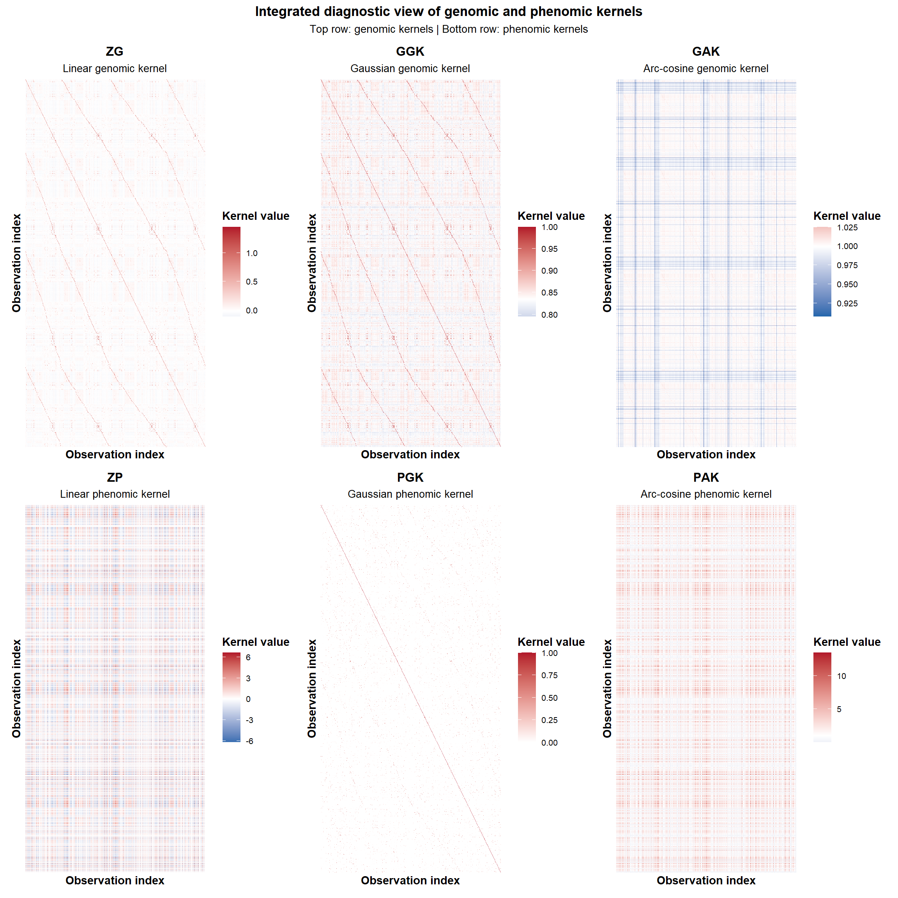

Last updated: 2026-03-27
Checks: 6 1
Knit directory:
Integrating-nir-genomic-kernel/
This reproducible R Markdown analysis was created with workflowr (version 1.7.2). The Checks tab describes the reproducibility checks that were applied when the results were created. The Past versions tab lists the development history.
The R Markdown file has unstaged changes. To know which version of
the R Markdown file created these results, you’ll want to first commit
it to the Git repo. If you’re still working on the analysis, you can
ignore this warning. When you’re finished, you can run
wflow_publish to commit the R Markdown file and build the
HTML.
Great job! The global environment was empty. Objects defined in the global environment can affect the analysis in your R Markdown file in unknown ways. For reproduciblity it’s best to always run the code in an empty environment.
The command set.seed(20250829) was run prior to running
the code in the R Markdown file. Setting a seed ensures that any results
that rely on randomness, e.g. subsampling or permutations, are
reproducible.
Great job! Recording the operating system, R version, and package versions is critical for reproducibility.
Nice! There were no cached chunks for this analysis, so you can be confident that you successfully produced the results during this run.
Great job! Using relative paths to the files within your workflowr project makes it easier to run your code on other machines.
Great! You are using Git for version control. Tracking code development and connecting the code version to the results is critical for reproducibility.
The results in this page were generated with repository version 385a0be. See the Past versions tab to see a history of the changes made to the R Markdown and HTML files.
Note that you need to be careful to ensure that all relevant files for
the analysis have been committed to Git prior to generating the results
(you can use wflow_publish or
wflow_git_commit). workflowr only checks the R Markdown
file, but you know if there are other scripts or data files that it
depends on. Below is the status of the Git repository when the results
were generated:
Ignored files:
Ignored: .Rhistory
Ignored: .Rproj.user/
Ignored: analysis/article_results_for_manuscript_updated.R
Ignored: data/Article_documents/
Ignored: data/Maize-NIRS-GBS-main/
Ignored: output/Matrizes/Geno.all.rds
Ignored: output/Matrizes/NIR.all.rds
Ignored: output/Matrizes/figures/
Ignored: output/adjust_models.rar
Ignored: output/climate_results/additional_climate_plots.tiff
Ignored: output/climate_results/combined_additional_climate_plots.tiff
Ignored: output/climate_results/combined_climate_plot.tiff
Ignored: output/cv-schemes.tiff
Ignored: output/results/
Ignored: output/variance_components/figures/
Ignored: output/variance_components/rep_1/Eta01/GYETA_E_varB.dat
Ignored: output/variance_components/rep_1/Eta01/GYETA_GE_varU.dat
Ignored: output/variance_components/rep_1/Eta01/GYETA_G_varU.dat
Ignored: output/variance_components/rep_1/Eta01/GYmu.dat
Ignored: output/variance_components/rep_1/Eta01/GYvarE.dat
Ignored: output/variance_components/rep_1/Eta01/KWETA_E_varB.dat
Ignored: output/variance_components/rep_1/Eta01/KWETA_GE_varU.dat
Ignored: output/variance_components/rep_1/Eta01/KWETA_G_varU.dat
Ignored: output/variance_components/rep_1/Eta01/KWmu.dat
Ignored: output/variance_components/rep_1/Eta01/KWvarE.dat
Ignored: output/variance_components/rep_1/Eta02/GYETA_E_varB.dat
Ignored: output/variance_components/rep_1/Eta02/GYETA_PE_varU.dat
Ignored: output/variance_components/rep_1/Eta02/GYETA_P_varU.dat
Ignored: output/variance_components/rep_1/Eta02/GYmu.dat
Ignored: output/variance_components/rep_1/Eta02/GYvarE.dat
Ignored: output/variance_components/rep_1/Eta02/KWETA_E_varB.dat
Ignored: output/variance_components/rep_1/Eta02/KWETA_PE_varU.dat
Ignored: output/variance_components/rep_1/Eta02/KWETA_P_varU.dat
Ignored: output/variance_components/rep_1/Eta02/KWmu.dat
Ignored: output/variance_components/rep_1/Eta02/KWvarE.dat
Ignored: output/variance_components/rep_1/Eta03/GYETA_E_varB.dat
Ignored: output/variance_components/rep_1/Eta03/GYETA_GGKE_varU.dat
Ignored: output/variance_components/rep_1/Eta03/GYETA_GGK_varU.dat
Ignored: output/variance_components/rep_1/Eta03/GYmu.dat
Ignored: output/variance_components/rep_1/Eta03/GYvarE.dat
Ignored: output/variance_components/rep_1/Eta03/KWETA_E_varB.dat
Ignored: output/variance_components/rep_1/Eta03/KWETA_GGKE_varU.dat
Ignored: output/variance_components/rep_1/Eta03/KWETA_GGK_varU.dat
Ignored: output/variance_components/rep_1/Eta03/KWmu.dat
Ignored: output/variance_components/rep_1/Eta03/KWvarE.dat
Ignored: output/variance_components/rep_1/Eta04/GYETA_E_varB.dat
Ignored: output/variance_components/rep_1/Eta04/GYETA_PGKE_varU.dat
Ignored: output/variance_components/rep_1/Eta04/GYETA_PGK_varU.dat
Ignored: output/variance_components/rep_1/Eta04/GYmu.dat
Ignored: output/variance_components/rep_1/Eta04/GYvarE.dat
Ignored: output/variance_components/rep_1/Eta04/KWETA_E_varB.dat
Ignored: output/variance_components/rep_1/Eta04/KWETA_PGKE_varU.dat
Ignored: output/variance_components/rep_1/Eta04/KWETA_PGK_varU.dat
Ignored: output/variance_components/rep_1/Eta04/KWmu.dat
Ignored: output/variance_components/rep_1/Eta04/KWvarE.dat
Ignored: output/variance_components/rep_1/Eta05/GYETA_E_varB.dat
Ignored: output/variance_components/rep_1/Eta05/GYETA_GAKE_varU.dat
Ignored: output/variance_components/rep_1/Eta05/GYETA_GAK_varU.dat
Ignored: output/variance_components/rep_1/Eta05/GYmu.dat
Ignored: output/variance_components/rep_1/Eta05/GYvarE.dat
Ignored: output/variance_components/rep_1/Eta05/KWETA_E_varB.dat
Ignored: output/variance_components/rep_1/Eta05/KWETA_GAKE_varU.dat
Ignored: output/variance_components/rep_1/Eta05/KWETA_GAK_varU.dat
Ignored: output/variance_components/rep_1/Eta05/KWmu.dat
Ignored: output/variance_components/rep_1/Eta05/KWvarE.dat
Ignored: output/variance_components/rep_1/Eta06/GYETA_E_varB.dat
Ignored: output/variance_components/rep_1/Eta06/GYETA_PAKE_varU.dat
Ignored: output/variance_components/rep_1/Eta06/GYETA_PAK_varU.dat
Ignored: output/variance_components/rep_1/Eta06/GYmu.dat
Ignored: output/variance_components/rep_1/Eta06/GYvarE.dat
Ignored: output/variance_components/rep_1/Eta06/KWETA_E_varB.dat
Ignored: output/variance_components/rep_1/Eta06/KWETA_PAKE_varU.dat
Ignored: output/variance_components/rep_1/Eta06/KWETA_PAK_varU.dat
Ignored: output/variance_components/rep_1/Eta06/KWmu.dat
Ignored: output/variance_components/rep_1/Eta06/KWvarE.dat
Ignored: output/variance_components/rep_1/Eta07/GYETA_E_varB.dat
Ignored: output/variance_components/rep_1/Eta07/GYETA_GE_varU.dat
Ignored: output/variance_components/rep_1/Eta07/GYETA_G_varU.dat
Ignored: output/variance_components/rep_1/Eta07/GYETA_PE_varU.dat
Ignored: output/variance_components/rep_1/Eta07/GYETA_P_varU.dat
Ignored: output/variance_components/rep_1/Eta07/GYmu.dat
Ignored: output/variance_components/rep_1/Eta07/GYvarE.dat
Ignored: output/variance_components/rep_1/Eta07/KWETA_E_varB.dat
Ignored: output/variance_components/rep_1/Eta07/KWETA_GE_varU.dat
Ignored: output/variance_components/rep_1/Eta07/KWETA_G_varU.dat
Ignored: output/variance_components/rep_1/Eta07/KWETA_PE_varU.dat
Ignored: output/variance_components/rep_1/Eta07/KWETA_P_varU.dat
Ignored: output/variance_components/rep_1/Eta07/KWmu.dat
Ignored: output/variance_components/rep_1/Eta07/KWvarE.dat
Ignored: output/variance_components/rep_1/Eta08/GYETA_E_varB.dat
Ignored: output/variance_components/rep_1/Eta08/GYETA_GGKE_varU.dat
Ignored: output/variance_components/rep_1/Eta08/GYETA_GGK_varU.dat
Ignored: output/variance_components/rep_1/Eta08/GYETA_PGKE_varU.dat
Ignored: output/variance_components/rep_1/Eta08/GYETA_PGK_varU.dat
Ignored: output/variance_components/rep_1/Eta08/GYmu.dat
Ignored: output/variance_components/rep_1/Eta08/GYvarE.dat
Ignored: output/variance_components/rep_1/Eta08/KWETA_E_varB.dat
Ignored: output/variance_components/rep_1/Eta08/KWETA_GGKE_varU.dat
Ignored: output/variance_components/rep_1/Eta08/KWETA_GGK_varU.dat
Ignored: output/variance_components/rep_1/Eta08/KWETA_PGKE_varU.dat
Ignored: output/variance_components/rep_1/Eta08/KWETA_PGK_varU.dat
Ignored: output/variance_components/rep_1/Eta08/KWmu.dat
Ignored: output/variance_components/rep_1/Eta08/KWvarE.dat
Ignored: output/variance_components/rep_1/Eta09/GYETA_E_varB.dat
Ignored: output/variance_components/rep_1/Eta09/GYETA_GAKE_varU.dat
Ignored: output/variance_components/rep_1/Eta09/GYETA_GAK_varU.dat
Ignored: output/variance_components/rep_1/Eta09/GYETA_PAKE_varU.dat
Ignored: output/variance_components/rep_1/Eta09/GYETA_PAK_varU.dat
Ignored: output/variance_components/rep_1/Eta09/GYmu.dat
Ignored: output/variance_components/rep_1/Eta09/GYvarE.dat
Ignored: output/variance_components/rep_1/Eta09/KWETA_E_varB.dat
Ignored: output/variance_components/rep_1/Eta09/KWETA_GAKE_varU.dat
Ignored: output/variance_components/rep_1/Eta09/KWETA_GAK_varU.dat
Ignored: output/variance_components/rep_1/Eta09/KWETA_PAKE_varU.dat
Ignored: output/variance_components/rep_1/Eta09/KWETA_PAK_varU.dat
Ignored: output/variance_components/rep_1/Eta09/KWmu.dat
Ignored: output/variance_components/rep_1/Eta09/KWvarE.dat
Ignored: output/variance_components/rep_1/Eta10/GYETA_E_varB.dat
Ignored: output/variance_components/rep_1/Eta10/GYETA_GE_varU.dat
Ignored: output/variance_components/rep_1/Eta10/GYETA_GW_varU.dat
Ignored: output/variance_components/rep_1/Eta10/GYETA_G_varU.dat
Ignored: output/variance_components/rep_1/Eta10/GYETA_W_varU.dat
Ignored: output/variance_components/rep_1/Eta10/GYmu.dat
Ignored: output/variance_components/rep_1/Eta10/GYvarE.dat
Ignored: output/variance_components/rep_1/Eta10/KWETA_E_varB.dat
Ignored: output/variance_components/rep_1/Eta10/KWETA_GE_varU.dat
Ignored: output/variance_components/rep_1/Eta10/KWETA_GW_varU.dat
Ignored: output/variance_components/rep_1/Eta10/KWETA_G_varU.dat
Ignored: output/variance_components/rep_1/Eta10/KWETA_W_varU.dat
Ignored: output/variance_components/rep_1/Eta10/KWmu.dat
Ignored: output/variance_components/rep_1/Eta10/KWvarE.dat
Ignored: output/variance_components/rep_1/Eta11/GYETA_E_varB.dat
Ignored: output/variance_components/rep_1/Eta11/GYETA_PE_varU.dat
Ignored: output/variance_components/rep_1/Eta11/GYETA_PW_varU.dat
Ignored: output/variance_components/rep_1/Eta11/GYETA_P_varU.dat
Ignored: output/variance_components/rep_1/Eta11/GYETA_W_varU.dat
Ignored: output/variance_components/rep_1/Eta11/GYmu.dat
Ignored: output/variance_components/rep_1/Eta11/GYvarE.dat
Ignored: output/variance_components/rep_1/Eta11/KWETA_E_varB.dat
Ignored: output/variance_components/rep_1/Eta11/KWETA_PE_varU.dat
Ignored: output/variance_components/rep_1/Eta11/KWETA_PW_varU.dat
Ignored: output/variance_components/rep_1/Eta11/KWETA_P_varU.dat
Ignored: output/variance_components/rep_1/Eta11/KWETA_W_varU.dat
Ignored: output/variance_components/rep_1/Eta11/KWmu.dat
Ignored: output/variance_components/rep_1/Eta11/KWvarE.dat
Ignored: output/variance_components/rep_1/Eta12/GYETA_E_varB.dat
Ignored: output/variance_components/rep_1/Eta12/GYETA_GE_varU.dat
Ignored: output/variance_components/rep_1/Eta12/GYETA_GW_varU.dat
Ignored: output/variance_components/rep_1/Eta12/GYETA_G_varU.dat
Ignored: output/variance_components/rep_1/Eta12/GYETA_PE_varU.dat
Ignored: output/variance_components/rep_1/Eta12/GYETA_PW_varU.dat
Ignored: output/variance_components/rep_1/Eta12/GYETA_P_varU.dat
Ignored: output/variance_components/rep_1/Eta12/GYETA_W_varU.dat
Ignored: output/variance_components/rep_1/Eta12/GYmu.dat
Ignored: output/variance_components/rep_1/Eta12/GYvarE.dat
Ignored: output/variance_components/rep_1/Eta12/KWETA_E_varB.dat
Ignored: output/variance_components/rep_1/Eta12/KWETA_GE_varU.dat
Ignored: output/variance_components/rep_1/Eta12/KWETA_GW_varU.dat
Ignored: output/variance_components/rep_1/Eta12/KWETA_G_varU.dat
Ignored: output/variance_components/rep_1/Eta12/KWETA_PE_varU.dat
Ignored: output/variance_components/rep_1/Eta12/KWETA_PW_varU.dat
Ignored: output/variance_components/rep_1/Eta12/KWETA_P_varU.dat
Ignored: output/variance_components/rep_1/Eta12/KWETA_W_varU.dat
Ignored: output/variance_components/rep_1/Eta12/KWmu.dat
Ignored: output/variance_components/rep_1/Eta12/KWvarE.dat
Ignored: output/variance_components/rep_1/Eta13/GYETA_E_varB.dat
Ignored: output/variance_components/rep_1/Eta13/GYETA_GGKE_varU.dat
Ignored: output/variance_components/rep_1/Eta13/GYETA_GGKW_varU.dat
Ignored: output/variance_components/rep_1/Eta13/GYETA_GGK_varU.dat
Ignored: output/variance_components/rep_1/Eta13/GYETA_W_varU.dat
Ignored: output/variance_components/rep_1/Eta13/GYmu.dat
Ignored: output/variance_components/rep_1/Eta13/GYvarE.dat
Ignored: output/variance_components/rep_1/Eta13/KWETA_E_varB.dat
Ignored: output/variance_components/rep_1/Eta13/KWETA_GGKE_varU.dat
Ignored: output/variance_components/rep_1/Eta13/KWETA_GGKW_varU.dat
Ignored: output/variance_components/rep_1/Eta13/KWETA_GGK_varU.dat
Ignored: output/variance_components/rep_1/Eta13/KWETA_W_varU.dat
Ignored: output/variance_components/rep_1/Eta13/KWmu.dat
Ignored: output/variance_components/rep_1/Eta13/KWvarE.dat
Ignored: output/variance_components/rep_1/Eta14/GYETA_E_varB.dat
Ignored: output/variance_components/rep_1/Eta14/GYETA_PGKE_varU.dat
Ignored: output/variance_components/rep_1/Eta14/GYETA_PGKW_varU.dat
Ignored: output/variance_components/rep_1/Eta14/GYETA_PGK_varU.dat
Ignored: output/variance_components/rep_1/Eta14/GYETA_W_varU.dat
Ignored: output/variance_components/rep_1/Eta14/GYmu.dat
Ignored: output/variance_components/rep_1/Eta14/GYvarE.dat
Ignored: output/variance_components/rep_1/Eta14/KWETA_E_varB.dat
Ignored: output/variance_components/rep_1/Eta14/KWETA_PGKE_varU.dat
Ignored: output/variance_components/rep_1/Eta14/KWETA_PGKW_varU.dat
Ignored: output/variance_components/rep_1/Eta14/KWETA_PGK_varU.dat
Ignored: output/variance_components/rep_1/Eta14/KWETA_W_varU.dat
Ignored: output/variance_components/rep_1/Eta14/KWmu.dat
Ignored: output/variance_components/rep_1/Eta14/KWvarE.dat
Ignored: output/variance_components/rep_1/Eta15/GYETA_E_varB.dat
Ignored: output/variance_components/rep_1/Eta15/GYETA_GGKE_varU.dat
Ignored: output/variance_components/rep_1/Eta15/GYETA_GGKW_varU.dat
Ignored: output/variance_components/rep_1/Eta15/GYETA_GGK_varU.dat
Ignored: output/variance_components/rep_1/Eta15/GYETA_PGKE_varU.dat
Ignored: output/variance_components/rep_1/Eta15/GYETA_PGKW_varU.dat
Ignored: output/variance_components/rep_1/Eta15/GYETA_PGK_varU.dat
Ignored: output/variance_components/rep_1/Eta15/GYETA_W_varU.dat
Ignored: output/variance_components/rep_1/Eta15/GYmu.dat
Ignored: output/variance_components/rep_1/Eta15/GYvarE.dat
Ignored: output/variance_components/rep_1/Eta15/KWETA_E_varB.dat
Ignored: output/variance_components/rep_1/Eta15/KWETA_GGKE_varU.dat
Ignored: output/variance_components/rep_1/Eta15/KWETA_GGKW_varU.dat
Ignored: output/variance_components/rep_1/Eta15/KWETA_GGK_varU.dat
Ignored: output/variance_components/rep_1/Eta15/KWETA_PGKE_varU.dat
Ignored: output/variance_components/rep_1/Eta15/KWETA_PGKW_varU.dat
Ignored: output/variance_components/rep_1/Eta15/KWETA_PGK_varU.dat
Ignored: output/variance_components/rep_1/Eta15/KWETA_W_varU.dat
Ignored: output/variance_components/rep_1/Eta15/KWmu.dat
Ignored: output/variance_components/rep_1/Eta15/KWvarE.dat
Ignored: output/variance_components/rep_1/Eta16/GYETA_E_varB.dat
Ignored: output/variance_components/rep_1/Eta16/GYETA_GAKE_varU.dat
Ignored: output/variance_components/rep_1/Eta16/GYETA_GAKW_varU.dat
Ignored: output/variance_components/rep_1/Eta16/GYETA_GAK_varU.dat
Ignored: output/variance_components/rep_1/Eta16/GYETA_W_varU.dat
Ignored: output/variance_components/rep_1/Eta16/GYmu.dat
Ignored: output/variance_components/rep_1/Eta16/GYvarE.dat
Ignored: output/variance_components/rep_1/Eta16/KWETA_E_varB.dat
Ignored: output/variance_components/rep_1/Eta16/KWETA_GAKE_varU.dat
Ignored: output/variance_components/rep_1/Eta16/KWETA_GAKW_varU.dat
Ignored: output/variance_components/rep_1/Eta16/KWETA_GAK_varU.dat
Ignored: output/variance_components/rep_1/Eta16/KWETA_W_varU.dat
Ignored: output/variance_components/rep_1/Eta16/KWmu.dat
Ignored: output/variance_components/rep_1/Eta16/KWvarE.dat
Ignored: output/variance_components/rep_1/Eta17/GYETA_E_varB.dat
Ignored: output/variance_components/rep_1/Eta17/GYETA_PAKE_varU.dat
Ignored: output/variance_components/rep_1/Eta17/GYETA_PAKW_varU.dat
Ignored: output/variance_components/rep_1/Eta17/GYETA_PAK_varU.dat
Ignored: output/variance_components/rep_1/Eta17/GYETA_W_varU.dat
Ignored: output/variance_components/rep_1/Eta17/GYmu.dat
Ignored: output/variance_components/rep_1/Eta17/GYvarE.dat
Ignored: output/variance_components/rep_1/Eta17/KWETA_E_varB.dat
Ignored: output/variance_components/rep_1/Eta17/KWETA_PAKE_varU.dat
Ignored: output/variance_components/rep_1/Eta17/KWETA_PAKW_varU.dat
Ignored: output/variance_components/rep_1/Eta17/KWETA_PAK_varU.dat
Ignored: output/variance_components/rep_1/Eta17/KWETA_W_varU.dat
Ignored: output/variance_components/rep_1/Eta17/KWmu.dat
Ignored: output/variance_components/rep_1/Eta17/KWvarE.dat
Ignored: output/variance_components/rep_1/Eta18/GYETA_E_varB.dat
Ignored: output/variance_components/rep_1/Eta18/GYETA_GAKE_varU.dat
Ignored: output/variance_components/rep_1/Eta18/GYETA_GAKW_varU.dat
Ignored: output/variance_components/rep_1/Eta18/GYETA_GAK_varU.dat
Ignored: output/variance_components/rep_1/Eta18/GYETA_PAKE_varU.dat
Ignored: output/variance_components/rep_1/Eta18/GYETA_PAKW_varU.dat
Ignored: output/variance_components/rep_1/Eta18/GYETA_PAK_varU.dat
Ignored: output/variance_components/rep_1/Eta18/GYETA_W_varU.dat
Ignored: output/variance_components/rep_1/Eta18/GYmu.dat
Ignored: output/variance_components/rep_1/Eta18/GYvarE.dat
Ignored: output/variance_components/rep_1/Eta18/KWETA_E_varB.dat
Ignored: output/variance_components/rep_1/Eta18/KWETA_GAKE_varU.dat
Ignored: output/variance_components/rep_1/Eta18/KWETA_GAKW_varU.dat
Ignored: output/variance_components/rep_1/Eta18/KWETA_GAK_varU.dat
Ignored: output/variance_components/rep_1/Eta18/KWETA_PAKE_varU.dat
Ignored: output/variance_components/rep_1/Eta18/KWETA_PAKW_varU.dat
Ignored: output/variance_components/rep_1/Eta18/KWETA_PAK_varU.dat
Ignored: output/variance_components/rep_1/Eta18/KWETA_W_varU.dat
Ignored: output/variance_components/rep_1/Eta18/KWmu.dat
Ignored: output/variance_components/rep_1/Eta18/KWvarE.dat
Ignored: output/variance_components/rep_10/Eta01/GYETA_E_varB.dat
Ignored: output/variance_components/rep_10/Eta01/GYETA_GE_varU.dat
Ignored: output/variance_components/rep_10/Eta01/GYETA_G_varU.dat
Ignored: output/variance_components/rep_10/Eta01/GYmu.dat
Ignored: output/variance_components/rep_10/Eta01/GYvarE.dat
Ignored: output/variance_components/rep_10/Eta01/KWETA_E_varB.dat
Ignored: output/variance_components/rep_10/Eta01/KWETA_GE_varU.dat
Ignored: output/variance_components/rep_10/Eta01/KWETA_G_varU.dat
Ignored: output/variance_components/rep_10/Eta01/KWmu.dat
Ignored: output/variance_components/rep_10/Eta01/KWvarE.dat
Ignored: output/variance_components/rep_10/Eta02/GYETA_E_varB.dat
Ignored: output/variance_components/rep_10/Eta02/GYETA_PE_varU.dat
Ignored: output/variance_components/rep_10/Eta02/GYETA_P_varU.dat
Ignored: output/variance_components/rep_10/Eta02/GYmu.dat
Ignored: output/variance_components/rep_10/Eta02/GYvarE.dat
Ignored: output/variance_components/rep_10/Eta02/KWETA_E_varB.dat
Ignored: output/variance_components/rep_10/Eta02/KWETA_PE_varU.dat
Ignored: output/variance_components/rep_10/Eta02/KWETA_P_varU.dat
Ignored: output/variance_components/rep_10/Eta02/KWmu.dat
Ignored: output/variance_components/rep_10/Eta02/KWvarE.dat
Ignored: output/variance_components/rep_10/Eta03/GYETA_E_varB.dat
Ignored: output/variance_components/rep_10/Eta03/GYETA_GGKE_varU.dat
Ignored: output/variance_components/rep_10/Eta03/GYETA_GGK_varU.dat
Ignored: output/variance_components/rep_10/Eta03/GYmu.dat
Ignored: output/variance_components/rep_10/Eta03/GYvarE.dat
Ignored: output/variance_components/rep_10/Eta03/KWETA_E_varB.dat
Ignored: output/variance_components/rep_10/Eta03/KWETA_GGKE_varU.dat
Ignored: output/variance_components/rep_10/Eta03/KWETA_GGK_varU.dat
Ignored: output/variance_components/rep_10/Eta03/KWmu.dat
Ignored: output/variance_components/rep_10/Eta03/KWvarE.dat
Ignored: output/variance_components/rep_10/Eta04/GYETA_E_varB.dat
Ignored: output/variance_components/rep_10/Eta04/GYETA_PGKE_varU.dat
Ignored: output/variance_components/rep_10/Eta04/GYETA_PGK_varU.dat
Ignored: output/variance_components/rep_10/Eta04/GYmu.dat
Ignored: output/variance_components/rep_10/Eta04/GYvarE.dat
Ignored: output/variance_components/rep_10/Eta04/KWETA_E_varB.dat
Ignored: output/variance_components/rep_10/Eta04/KWETA_PGKE_varU.dat
Ignored: output/variance_components/rep_10/Eta04/KWETA_PGK_varU.dat
Ignored: output/variance_components/rep_10/Eta04/KWmu.dat
Ignored: output/variance_components/rep_10/Eta04/KWvarE.dat
Ignored: output/variance_components/rep_10/Eta05/GYETA_E_varB.dat
Ignored: output/variance_components/rep_10/Eta05/GYETA_GAKE_varU.dat
Ignored: output/variance_components/rep_10/Eta05/GYETA_GAK_varU.dat
Ignored: output/variance_components/rep_10/Eta05/GYmu.dat
Ignored: output/variance_components/rep_10/Eta05/GYvarE.dat
Ignored: output/variance_components/rep_10/Eta05/KWETA_E_varB.dat
Ignored: output/variance_components/rep_10/Eta05/KWETA_GAKE_varU.dat
Ignored: output/variance_components/rep_10/Eta05/KWETA_GAK_varU.dat
Ignored: output/variance_components/rep_10/Eta05/KWmu.dat
Ignored: output/variance_components/rep_10/Eta05/KWvarE.dat
Ignored: output/variance_components/rep_10/Eta06/GYETA_E_varB.dat
Ignored: output/variance_components/rep_10/Eta06/GYETA_PAKE_varU.dat
Ignored: output/variance_components/rep_10/Eta06/GYETA_PAK_varU.dat
Ignored: output/variance_components/rep_10/Eta06/GYmu.dat
Ignored: output/variance_components/rep_10/Eta06/GYvarE.dat
Ignored: output/variance_components/rep_10/Eta06/KWETA_E_varB.dat
Ignored: output/variance_components/rep_10/Eta06/KWETA_PAKE_varU.dat
Ignored: output/variance_components/rep_10/Eta06/KWETA_PAK_varU.dat
Ignored: output/variance_components/rep_10/Eta06/KWmu.dat
Ignored: output/variance_components/rep_10/Eta06/KWvarE.dat
Ignored: output/variance_components/rep_10/Eta07/GYETA_E_varB.dat
Ignored: output/variance_components/rep_10/Eta07/GYETA_GE_varU.dat
Ignored: output/variance_components/rep_10/Eta07/GYETA_G_varU.dat
Ignored: output/variance_components/rep_10/Eta07/GYETA_PE_varU.dat
Ignored: output/variance_components/rep_10/Eta07/GYETA_P_varU.dat
Ignored: output/variance_components/rep_10/Eta07/GYmu.dat
Ignored: output/variance_components/rep_10/Eta07/GYvarE.dat
Ignored: output/variance_components/rep_10/Eta07/KWETA_E_varB.dat
Ignored: output/variance_components/rep_10/Eta07/KWETA_GE_varU.dat
Ignored: output/variance_components/rep_10/Eta07/KWETA_G_varU.dat
Ignored: output/variance_components/rep_10/Eta07/KWETA_PE_varU.dat
Ignored: output/variance_components/rep_10/Eta07/KWETA_P_varU.dat
Ignored: output/variance_components/rep_10/Eta07/KWmu.dat
Ignored: output/variance_components/rep_10/Eta07/KWvarE.dat
Ignored: output/variance_components/rep_10/Eta08/GYETA_E_varB.dat
Ignored: output/variance_components/rep_10/Eta08/GYETA_GGKE_varU.dat
Ignored: output/variance_components/rep_10/Eta08/GYETA_GGK_varU.dat
Ignored: output/variance_components/rep_10/Eta08/GYETA_PGKE_varU.dat
Ignored: output/variance_components/rep_10/Eta08/GYETA_PGK_varU.dat
Ignored: output/variance_components/rep_10/Eta08/GYmu.dat
Ignored: output/variance_components/rep_10/Eta08/GYvarE.dat
Ignored: output/variance_components/rep_10/Eta08/KWETA_E_varB.dat
Ignored: output/variance_components/rep_10/Eta08/KWETA_GGKE_varU.dat
Ignored: output/variance_components/rep_10/Eta08/KWETA_GGK_varU.dat
Ignored: output/variance_components/rep_10/Eta08/KWETA_PGKE_varU.dat
Ignored: output/variance_components/rep_10/Eta08/KWETA_PGK_varU.dat
Ignored: output/variance_components/rep_10/Eta08/KWmu.dat
Ignored: output/variance_components/rep_10/Eta08/KWvarE.dat
Ignored: output/variance_components/rep_10/Eta09/GYETA_E_varB.dat
Ignored: output/variance_components/rep_10/Eta09/GYETA_GAKE_varU.dat
Ignored: output/variance_components/rep_10/Eta09/GYETA_GAK_varU.dat
Ignored: output/variance_components/rep_10/Eta09/GYETA_PAKE_varU.dat
Ignored: output/variance_components/rep_10/Eta09/GYETA_PAK_varU.dat
Ignored: output/variance_components/rep_10/Eta09/GYmu.dat
Ignored: output/variance_components/rep_10/Eta09/GYvarE.dat
Ignored: output/variance_components/rep_10/Eta09/KWETA_E_varB.dat
Ignored: output/variance_components/rep_10/Eta09/KWETA_GAKE_varU.dat
Ignored: output/variance_components/rep_10/Eta09/KWETA_GAK_varU.dat
Ignored: output/variance_components/rep_10/Eta09/KWETA_PAKE_varU.dat
Ignored: output/variance_components/rep_10/Eta09/KWETA_PAK_varU.dat
Ignored: output/variance_components/rep_10/Eta09/KWmu.dat
Ignored: output/variance_components/rep_10/Eta09/KWvarE.dat
Ignored: output/variance_components/rep_10/Eta10/GYETA_E_varB.dat
Ignored: output/variance_components/rep_10/Eta10/GYETA_GE_varU.dat
Ignored: output/variance_components/rep_10/Eta10/GYETA_GW_varU.dat
Ignored: output/variance_components/rep_10/Eta10/GYETA_G_varU.dat
Ignored: output/variance_components/rep_10/Eta10/GYETA_W_varU.dat
Ignored: output/variance_components/rep_10/Eta10/GYmu.dat
Ignored: output/variance_components/rep_10/Eta10/GYvarE.dat
Ignored: output/variance_components/rep_10/Eta10/KWETA_E_varB.dat
Ignored: output/variance_components/rep_10/Eta10/KWETA_GE_varU.dat
Ignored: output/variance_components/rep_10/Eta10/KWETA_GW_varU.dat
Ignored: output/variance_components/rep_10/Eta10/KWETA_G_varU.dat
Ignored: output/variance_components/rep_10/Eta10/KWETA_W_varU.dat
Ignored: output/variance_components/rep_10/Eta10/KWmu.dat
Ignored: output/variance_components/rep_10/Eta10/KWvarE.dat
Ignored: output/variance_components/rep_10/Eta11/GYETA_E_varB.dat
Ignored: output/variance_components/rep_10/Eta11/GYETA_PE_varU.dat
Ignored: output/variance_components/rep_10/Eta11/GYETA_PW_varU.dat
Ignored: output/variance_components/rep_10/Eta11/GYETA_P_varU.dat
Ignored: output/variance_components/rep_10/Eta11/GYETA_W_varU.dat
Ignored: output/variance_components/rep_10/Eta11/GYmu.dat
Ignored: output/variance_components/rep_10/Eta11/GYvarE.dat
Ignored: output/variance_components/rep_10/Eta11/KWETA_E_varB.dat
Ignored: output/variance_components/rep_10/Eta11/KWETA_PE_varU.dat
Ignored: output/variance_components/rep_10/Eta11/KWETA_PW_varU.dat
Ignored: output/variance_components/rep_10/Eta11/KWETA_P_varU.dat
Ignored: output/variance_components/rep_10/Eta11/KWETA_W_varU.dat
Ignored: output/variance_components/rep_10/Eta11/KWmu.dat
Ignored: output/variance_components/rep_10/Eta11/KWvarE.dat
Ignored: output/variance_components/rep_10/Eta12/GYETA_E_varB.dat
Ignored: output/variance_components/rep_10/Eta12/GYETA_GE_varU.dat
Ignored: output/variance_components/rep_10/Eta12/GYETA_GW_varU.dat
Ignored: output/variance_components/rep_10/Eta12/GYETA_G_varU.dat
Ignored: output/variance_components/rep_10/Eta12/GYETA_PE_varU.dat
Ignored: output/variance_components/rep_10/Eta12/GYETA_PW_varU.dat
Ignored: output/variance_components/rep_10/Eta12/GYETA_P_varU.dat
Ignored: output/variance_components/rep_10/Eta12/GYETA_W_varU.dat
Ignored: output/variance_components/rep_10/Eta12/GYmu.dat
Ignored: output/variance_components/rep_10/Eta12/GYvarE.dat
Ignored: output/variance_components/rep_10/Eta12/KWETA_E_varB.dat
Ignored: output/variance_components/rep_10/Eta12/KWETA_GE_varU.dat
Ignored: output/variance_components/rep_10/Eta12/KWETA_GW_varU.dat
Ignored: output/variance_components/rep_10/Eta12/KWETA_G_varU.dat
Ignored: output/variance_components/rep_10/Eta12/KWETA_PE_varU.dat
Ignored: output/variance_components/rep_10/Eta12/KWETA_PW_varU.dat
Ignored: output/variance_components/rep_10/Eta12/KWETA_P_varU.dat
Ignored: output/variance_components/rep_10/Eta12/KWETA_W_varU.dat
Ignored: output/variance_components/rep_10/Eta12/KWmu.dat
Ignored: output/variance_components/rep_10/Eta12/KWvarE.dat
Ignored: output/variance_components/rep_10/Eta13/GYETA_E_varB.dat
Ignored: output/variance_components/rep_10/Eta13/GYETA_GGKE_varU.dat
Ignored: output/variance_components/rep_10/Eta13/GYETA_GGKW_varU.dat
Ignored: output/variance_components/rep_10/Eta13/GYETA_GGK_varU.dat
Ignored: output/variance_components/rep_10/Eta13/GYETA_W_varU.dat
Ignored: output/variance_components/rep_10/Eta13/GYmu.dat
Ignored: output/variance_components/rep_10/Eta13/GYvarE.dat
Ignored: output/variance_components/rep_10/Eta13/KWETA_E_varB.dat
Ignored: output/variance_components/rep_10/Eta13/KWETA_GGKE_varU.dat
Ignored: output/variance_components/rep_10/Eta13/KWETA_GGKW_varU.dat
Ignored: output/variance_components/rep_10/Eta13/KWETA_GGK_varU.dat
Ignored: output/variance_components/rep_10/Eta13/KWETA_W_varU.dat
Ignored: output/variance_components/rep_10/Eta13/KWmu.dat
Ignored: output/variance_components/rep_10/Eta13/KWvarE.dat
Ignored: output/variance_components/rep_10/Eta14/GYETA_E_varB.dat
Ignored: output/variance_components/rep_10/Eta14/GYETA_PGKE_varU.dat
Ignored: output/variance_components/rep_10/Eta14/GYETA_PGKW_varU.dat
Ignored: output/variance_components/rep_10/Eta14/GYETA_PGK_varU.dat
Ignored: output/variance_components/rep_10/Eta14/GYETA_W_varU.dat
Ignored: output/variance_components/rep_10/Eta14/GYmu.dat
Ignored: output/variance_components/rep_10/Eta14/GYvarE.dat
Ignored: output/variance_components/rep_10/Eta14/KWETA_E_varB.dat
Ignored: output/variance_components/rep_10/Eta14/KWETA_PGKE_varU.dat
Ignored: output/variance_components/rep_10/Eta14/KWETA_PGKW_varU.dat
Ignored: output/variance_components/rep_10/Eta14/KWETA_PGK_varU.dat
Ignored: output/variance_components/rep_10/Eta14/KWETA_W_varU.dat
Ignored: output/variance_components/rep_10/Eta14/KWmu.dat
Ignored: output/variance_components/rep_10/Eta14/KWvarE.dat
Ignored: output/variance_components/rep_10/Eta15/GYETA_E_varB.dat
Ignored: output/variance_components/rep_10/Eta15/GYETA_GGKE_varU.dat
Ignored: output/variance_components/rep_10/Eta15/GYETA_GGKW_varU.dat
Ignored: output/variance_components/rep_10/Eta15/GYETA_GGK_varU.dat
Ignored: output/variance_components/rep_10/Eta15/GYETA_PGKE_varU.dat
Ignored: output/variance_components/rep_10/Eta15/GYETA_PGKW_varU.dat
Ignored: output/variance_components/rep_10/Eta15/GYETA_PGK_varU.dat
Ignored: output/variance_components/rep_10/Eta15/GYETA_W_varU.dat
Ignored: output/variance_components/rep_10/Eta15/GYmu.dat
Ignored: output/variance_components/rep_10/Eta15/GYvarE.dat
Ignored: output/variance_components/rep_10/Eta15/KWETA_E_varB.dat
Ignored: output/variance_components/rep_10/Eta15/KWETA_GGKE_varU.dat
Ignored: output/variance_components/rep_10/Eta15/KWETA_GGKW_varU.dat
Ignored: output/variance_components/rep_10/Eta15/KWETA_GGK_varU.dat
Ignored: output/variance_components/rep_10/Eta15/KWETA_PGKE_varU.dat
Ignored: output/variance_components/rep_10/Eta15/KWETA_PGKW_varU.dat
Ignored: output/variance_components/rep_10/Eta15/KWETA_PGK_varU.dat
Ignored: output/variance_components/rep_10/Eta15/KWETA_W_varU.dat
Ignored: output/variance_components/rep_10/Eta15/KWmu.dat
Ignored: output/variance_components/rep_10/Eta15/KWvarE.dat
Ignored: output/variance_components/rep_10/Eta16/GYETA_E_varB.dat
Ignored: output/variance_components/rep_10/Eta16/GYETA_GAKE_varU.dat
Ignored: output/variance_components/rep_10/Eta16/GYETA_GAKW_varU.dat
Ignored: output/variance_components/rep_10/Eta16/GYETA_GAK_varU.dat
Ignored: output/variance_components/rep_10/Eta16/GYETA_W_varU.dat
Ignored: output/variance_components/rep_10/Eta16/GYmu.dat
Ignored: output/variance_components/rep_10/Eta16/GYvarE.dat
Ignored: output/variance_components/rep_10/Eta16/KWETA_E_varB.dat
Ignored: output/variance_components/rep_10/Eta16/KWETA_GAKE_varU.dat
Ignored: output/variance_components/rep_10/Eta16/KWETA_GAKW_varU.dat
Ignored: output/variance_components/rep_10/Eta16/KWETA_GAK_varU.dat
Ignored: output/variance_components/rep_10/Eta16/KWETA_W_varU.dat
Ignored: output/variance_components/rep_10/Eta16/KWmu.dat
Ignored: output/variance_components/rep_10/Eta16/KWvarE.dat
Ignored: output/variance_components/rep_10/Eta17/GYETA_E_varB.dat
Ignored: output/variance_components/rep_10/Eta17/GYETA_PAKE_varU.dat
Ignored: output/variance_components/rep_10/Eta17/GYETA_PAKW_varU.dat
Ignored: output/variance_components/rep_10/Eta17/GYETA_PAK_varU.dat
Ignored: output/variance_components/rep_10/Eta17/GYETA_W_varU.dat
Ignored: output/variance_components/rep_10/Eta17/GYmu.dat
Ignored: output/variance_components/rep_10/Eta17/GYvarE.dat
Ignored: output/variance_components/rep_10/Eta17/KWETA_E_varB.dat
Ignored: output/variance_components/rep_10/Eta17/KWETA_PAKE_varU.dat
Ignored: output/variance_components/rep_10/Eta17/KWETA_PAKW_varU.dat
Ignored: output/variance_components/rep_10/Eta17/KWETA_PAK_varU.dat
Ignored: output/variance_components/rep_10/Eta17/KWETA_W_varU.dat
Ignored: output/variance_components/rep_10/Eta17/KWmu.dat
Ignored: output/variance_components/rep_10/Eta17/KWvarE.dat
Ignored: output/variance_components/rep_10/Eta18/GYETA_E_varB.dat
Ignored: output/variance_components/rep_10/Eta18/GYETA_GAKE_varU.dat
Ignored: output/variance_components/rep_10/Eta18/GYETA_GAKW_varU.dat
Ignored: output/variance_components/rep_10/Eta18/GYETA_GAK_varU.dat
Ignored: output/variance_components/rep_10/Eta18/GYETA_PAKE_varU.dat
Ignored: output/variance_components/rep_10/Eta18/GYETA_PAKW_varU.dat
Ignored: output/variance_components/rep_10/Eta18/GYETA_PAK_varU.dat
Ignored: output/variance_components/rep_10/Eta18/GYETA_W_varU.dat
Ignored: output/variance_components/rep_10/Eta18/GYmu.dat
Ignored: output/variance_components/rep_10/Eta18/GYvarE.dat
Ignored: output/variance_components/rep_10/Eta18/KWETA_E_varB.dat
Ignored: output/variance_components/rep_10/Eta18/KWETA_GAKE_varU.dat
Ignored: output/variance_components/rep_10/Eta18/KWETA_GAKW_varU.dat
Ignored: output/variance_components/rep_10/Eta18/KWETA_GAK_varU.dat
Ignored: output/variance_components/rep_10/Eta18/KWETA_PAKE_varU.dat
Ignored: output/variance_components/rep_10/Eta18/KWETA_PAKW_varU.dat
Ignored: output/variance_components/rep_10/Eta18/KWETA_PAK_varU.dat
Ignored: output/variance_components/rep_10/Eta18/KWETA_W_varU.dat
Ignored: output/variance_components/rep_10/Eta18/KWmu.dat
Ignored: output/variance_components/rep_10/Eta18/KWvarE.dat
Ignored: output/variance_components/rep_11/Eta01/GYETA_E_varB.dat
Ignored: output/variance_components/rep_11/Eta01/GYETA_GE_varU.dat
Ignored: output/variance_components/rep_11/Eta01/GYETA_G_varU.dat
Ignored: output/variance_components/rep_11/Eta01/GYmu.dat
Ignored: output/variance_components/rep_11/Eta01/GYvarE.dat
Ignored: output/variance_components/rep_11/Eta01/KWETA_E_varB.dat
Ignored: output/variance_components/rep_11/Eta01/KWETA_GE_varU.dat
Ignored: output/variance_components/rep_11/Eta01/KWETA_G_varU.dat
Ignored: output/variance_components/rep_11/Eta01/KWmu.dat
Ignored: output/variance_components/rep_11/Eta01/KWvarE.dat
Ignored: output/variance_components/rep_11/Eta02/GYETA_E_varB.dat
Ignored: output/variance_components/rep_11/Eta02/GYETA_PE_varU.dat
Ignored: output/variance_components/rep_11/Eta02/GYETA_P_varU.dat
Ignored: output/variance_components/rep_11/Eta02/GYmu.dat
Ignored: output/variance_components/rep_11/Eta02/GYvarE.dat
Ignored: output/variance_components/rep_11/Eta02/KWETA_E_varB.dat
Ignored: output/variance_components/rep_11/Eta02/KWETA_PE_varU.dat
Ignored: output/variance_components/rep_11/Eta02/KWETA_P_varU.dat
Ignored: output/variance_components/rep_11/Eta02/KWmu.dat
Ignored: output/variance_components/rep_11/Eta02/KWvarE.dat
Ignored: output/variance_components/rep_11/Eta03/GYETA_E_varB.dat
Ignored: output/variance_components/rep_11/Eta03/GYETA_GGKE_varU.dat
Ignored: output/variance_components/rep_11/Eta03/GYETA_GGK_varU.dat
Ignored: output/variance_components/rep_11/Eta03/GYmu.dat
Ignored: output/variance_components/rep_11/Eta03/GYvarE.dat
Ignored: output/variance_components/rep_11/Eta03/KWETA_E_varB.dat
Ignored: output/variance_components/rep_11/Eta03/KWETA_GGKE_varU.dat
Ignored: output/variance_components/rep_11/Eta03/KWETA_GGK_varU.dat
Ignored: output/variance_components/rep_11/Eta03/KWmu.dat
Ignored: output/variance_components/rep_11/Eta03/KWvarE.dat
Ignored: output/variance_components/rep_11/Eta04/GYETA_E_varB.dat
Ignored: output/variance_components/rep_11/Eta04/GYETA_PGKE_varU.dat
Ignored: output/variance_components/rep_11/Eta04/GYETA_PGK_varU.dat
Ignored: output/variance_components/rep_11/Eta04/GYmu.dat
Ignored: output/variance_components/rep_11/Eta04/GYvarE.dat
Ignored: output/variance_components/rep_11/Eta04/KWETA_E_varB.dat
Ignored: output/variance_components/rep_11/Eta04/KWETA_PGKE_varU.dat
Ignored: output/variance_components/rep_11/Eta04/KWETA_PGK_varU.dat
Ignored: output/variance_components/rep_11/Eta04/KWmu.dat
Ignored: output/variance_components/rep_11/Eta04/KWvarE.dat
Ignored: output/variance_components/rep_11/Eta05/GYETA_E_varB.dat
Ignored: output/variance_components/rep_11/Eta05/GYETA_GAKE_varU.dat
Ignored: output/variance_components/rep_11/Eta05/GYETA_GAK_varU.dat
Ignored: output/variance_components/rep_11/Eta05/GYmu.dat
Ignored: output/variance_components/rep_11/Eta05/GYvarE.dat
Ignored: output/variance_components/rep_11/Eta05/KWETA_E_varB.dat
Ignored: output/variance_components/rep_11/Eta05/KWETA_GAKE_varU.dat
Ignored: output/variance_components/rep_11/Eta05/KWETA_GAK_varU.dat
Ignored: output/variance_components/rep_11/Eta05/KWmu.dat
Ignored: output/variance_components/rep_11/Eta05/KWvarE.dat
Ignored: output/variance_components/rep_11/Eta06/GYETA_E_varB.dat
Ignored: output/variance_components/rep_11/Eta06/GYETA_PAKE_varU.dat
Ignored: output/variance_components/rep_11/Eta06/GYETA_PAK_varU.dat
Ignored: output/variance_components/rep_11/Eta06/GYmu.dat
Ignored: output/variance_components/rep_11/Eta06/GYvarE.dat
Ignored: output/variance_components/rep_11/Eta06/KWETA_E_varB.dat
Ignored: output/variance_components/rep_11/Eta06/KWETA_PAKE_varU.dat
Ignored: output/variance_components/rep_11/Eta06/KWETA_PAK_varU.dat
Ignored: output/variance_components/rep_11/Eta06/KWmu.dat
Ignored: output/variance_components/rep_11/Eta06/KWvarE.dat
Ignored: output/variance_components/rep_11/Eta07/GYETA_E_varB.dat
Ignored: output/variance_components/rep_11/Eta07/GYETA_GE_varU.dat
Ignored: output/variance_components/rep_11/Eta07/GYETA_G_varU.dat
Ignored: output/variance_components/rep_11/Eta07/GYETA_PE_varU.dat
Ignored: output/variance_components/rep_11/Eta07/GYETA_P_varU.dat
Ignored: output/variance_components/rep_11/Eta07/GYmu.dat
Ignored: output/variance_components/rep_11/Eta07/GYvarE.dat
Ignored: output/variance_components/rep_11/Eta07/KWETA_E_varB.dat
Ignored: output/variance_components/rep_11/Eta07/KWETA_GE_varU.dat
Ignored: output/variance_components/rep_11/Eta07/KWETA_G_varU.dat
Ignored: output/variance_components/rep_11/Eta07/KWETA_PE_varU.dat
Ignored: output/variance_components/rep_11/Eta07/KWETA_P_varU.dat
Ignored: output/variance_components/rep_11/Eta07/KWmu.dat
Ignored: output/variance_components/rep_11/Eta07/KWvarE.dat
Ignored: output/variance_components/rep_11/Eta08/GYETA_E_varB.dat
Ignored: output/variance_components/rep_11/Eta08/GYETA_GGKE_varU.dat
Ignored: output/variance_components/rep_11/Eta08/GYETA_GGK_varU.dat
Ignored: output/variance_components/rep_11/Eta08/GYETA_PGKE_varU.dat
Ignored: output/variance_components/rep_11/Eta08/GYETA_PGK_varU.dat
Ignored: output/variance_components/rep_11/Eta08/GYmu.dat
Ignored: output/variance_components/rep_11/Eta08/GYvarE.dat
Ignored: output/variance_components/rep_11/Eta08/KWETA_E_varB.dat
Ignored: output/variance_components/rep_11/Eta08/KWETA_GGKE_varU.dat
Ignored: output/variance_components/rep_11/Eta08/KWETA_GGK_varU.dat
Ignored: output/variance_components/rep_11/Eta08/KWETA_PGKE_varU.dat
Ignored: output/variance_components/rep_11/Eta08/KWETA_PGK_varU.dat
Ignored: output/variance_components/rep_11/Eta08/KWmu.dat
Ignored: output/variance_components/rep_11/Eta08/KWvarE.dat
Ignored: output/variance_components/rep_11/Eta09/GYETA_E_varB.dat
Ignored: output/variance_components/rep_11/Eta09/GYETA_GAKE_varU.dat
Ignored: output/variance_components/rep_11/Eta09/GYETA_GAK_varU.dat
Ignored: output/variance_components/rep_11/Eta09/GYETA_PAKE_varU.dat
Ignored: output/variance_components/rep_11/Eta09/GYETA_PAK_varU.dat
Ignored: output/variance_components/rep_11/Eta09/GYmu.dat
Ignored: output/variance_components/rep_11/Eta09/GYvarE.dat
Ignored: output/variance_components/rep_11/Eta09/KWETA_E_varB.dat
Ignored: output/variance_components/rep_11/Eta09/KWETA_GAKE_varU.dat
Ignored: output/variance_components/rep_11/Eta09/KWETA_GAK_varU.dat
Ignored: output/variance_components/rep_11/Eta09/KWETA_PAKE_varU.dat
Ignored: output/variance_components/rep_11/Eta09/KWETA_PAK_varU.dat
Ignored: output/variance_components/rep_11/Eta09/KWmu.dat
Ignored: output/variance_components/rep_11/Eta09/KWvarE.dat
Ignored: output/variance_components/rep_11/Eta10/GYETA_E_varB.dat
Ignored: output/variance_components/rep_11/Eta10/GYETA_GE_varU.dat
Ignored: output/variance_components/rep_11/Eta10/GYETA_GW_varU.dat
Ignored: output/variance_components/rep_11/Eta10/GYETA_G_varU.dat
Ignored: output/variance_components/rep_11/Eta10/GYETA_W_varU.dat
Ignored: output/variance_components/rep_11/Eta10/GYmu.dat
Ignored: output/variance_components/rep_11/Eta10/GYvarE.dat
Ignored: output/variance_components/rep_11/Eta10/KWETA_E_varB.dat
Ignored: output/variance_components/rep_11/Eta10/KWETA_GE_varU.dat
Ignored: output/variance_components/rep_11/Eta10/KWETA_GW_varU.dat
Ignored: output/variance_components/rep_11/Eta10/KWETA_G_varU.dat
Ignored: output/variance_components/rep_11/Eta10/KWETA_W_varU.dat
Ignored: output/variance_components/rep_11/Eta10/KWmu.dat
Ignored: output/variance_components/rep_11/Eta10/KWvarE.dat
Ignored: output/variance_components/rep_11/Eta11/GYETA_E_varB.dat
Ignored: output/variance_components/rep_11/Eta11/GYETA_PE_varU.dat
Ignored: output/variance_components/rep_11/Eta11/GYETA_PW_varU.dat
Ignored: output/variance_components/rep_11/Eta11/GYETA_P_varU.dat
Ignored: output/variance_components/rep_11/Eta11/GYETA_W_varU.dat
Ignored: output/variance_components/rep_11/Eta11/GYmu.dat
Ignored: output/variance_components/rep_11/Eta11/GYvarE.dat
Ignored: output/variance_components/rep_11/Eta11/KWETA_E_varB.dat
Ignored: output/variance_components/rep_11/Eta11/KWETA_PE_varU.dat
Ignored: output/variance_components/rep_11/Eta11/KWETA_PW_varU.dat
Ignored: output/variance_components/rep_11/Eta11/KWETA_P_varU.dat
Ignored: output/variance_components/rep_11/Eta11/KWETA_W_varU.dat
Ignored: output/variance_components/rep_11/Eta11/KWmu.dat
Ignored: output/variance_components/rep_11/Eta11/KWvarE.dat
Ignored: output/variance_components/rep_11/Eta12/GYETA_E_varB.dat
Ignored: output/variance_components/rep_11/Eta12/GYETA_GE_varU.dat
Ignored: output/variance_components/rep_11/Eta12/GYETA_GW_varU.dat
Ignored: output/variance_components/rep_11/Eta12/GYETA_G_varU.dat
Ignored: output/variance_components/rep_11/Eta12/GYETA_PE_varU.dat
Ignored: output/variance_components/rep_11/Eta12/GYETA_PW_varU.dat
Ignored: output/variance_components/rep_11/Eta12/GYETA_P_varU.dat
Ignored: output/variance_components/rep_11/Eta12/GYETA_W_varU.dat
Ignored: output/variance_components/rep_11/Eta12/GYmu.dat
Ignored: output/variance_components/rep_11/Eta12/GYvarE.dat
Ignored: output/variance_components/rep_11/Eta12/KWETA_E_varB.dat
Ignored: output/variance_components/rep_11/Eta12/KWETA_GE_varU.dat
Ignored: output/variance_components/rep_11/Eta12/KWETA_GW_varU.dat
Ignored: output/variance_components/rep_11/Eta12/KWETA_G_varU.dat
Ignored: output/variance_components/rep_11/Eta12/KWETA_PE_varU.dat
Ignored: output/variance_components/rep_11/Eta12/KWETA_PW_varU.dat
Ignored: output/variance_components/rep_11/Eta12/KWETA_P_varU.dat
Ignored: output/variance_components/rep_11/Eta12/KWETA_W_varU.dat
Ignored: output/variance_components/rep_11/Eta12/KWmu.dat
Ignored: output/variance_components/rep_11/Eta12/KWvarE.dat
Ignored: output/variance_components/rep_11/Eta13/GYETA_E_varB.dat
Ignored: output/variance_components/rep_11/Eta13/GYETA_GGKE_varU.dat
Ignored: output/variance_components/rep_11/Eta13/GYETA_GGKW_varU.dat
Ignored: output/variance_components/rep_11/Eta13/GYETA_GGK_varU.dat
Ignored: output/variance_components/rep_11/Eta13/GYETA_W_varU.dat
Ignored: output/variance_components/rep_11/Eta13/GYmu.dat
Ignored: output/variance_components/rep_11/Eta13/GYvarE.dat
Ignored: output/variance_components/rep_11/Eta13/KWETA_E_varB.dat
Ignored: output/variance_components/rep_11/Eta13/KWETA_GGKE_varU.dat
Ignored: output/variance_components/rep_11/Eta13/KWETA_GGKW_varU.dat
Ignored: output/variance_components/rep_11/Eta13/KWETA_GGK_varU.dat
Ignored: output/variance_components/rep_11/Eta13/KWETA_W_varU.dat
Ignored: output/variance_components/rep_11/Eta13/KWmu.dat
Ignored: output/variance_components/rep_11/Eta13/KWvarE.dat
Ignored: output/variance_components/rep_11/Eta14/GYETA_E_varB.dat
Ignored: output/variance_components/rep_11/Eta14/GYETA_PGKE_varU.dat
Ignored: output/variance_components/rep_11/Eta14/GYETA_PGKW_varU.dat
Ignored: output/variance_components/rep_11/Eta14/GYETA_PGK_varU.dat
Ignored: output/variance_components/rep_11/Eta14/GYETA_W_varU.dat
Ignored: output/variance_components/rep_11/Eta14/GYmu.dat
Ignored: output/variance_components/rep_11/Eta14/GYvarE.dat
Ignored: output/variance_components/rep_11/Eta14/KWETA_E_varB.dat
Ignored: output/variance_components/rep_11/Eta14/KWETA_PGKE_varU.dat
Ignored: output/variance_components/rep_11/Eta14/KWETA_PGKW_varU.dat
Ignored: output/variance_components/rep_11/Eta14/KWETA_PGK_varU.dat
Ignored: output/variance_components/rep_11/Eta14/KWETA_W_varU.dat
Ignored: output/variance_components/rep_11/Eta14/KWmu.dat
Ignored: output/variance_components/rep_11/Eta14/KWvarE.dat
Ignored: output/variance_components/rep_11/Eta15/GYETA_E_varB.dat
Ignored: output/variance_components/rep_11/Eta15/GYETA_GGKE_varU.dat
Ignored: output/variance_components/rep_11/Eta15/GYETA_GGKW_varU.dat
Ignored: output/variance_components/rep_11/Eta15/GYETA_GGK_varU.dat
Ignored: output/variance_components/rep_11/Eta15/GYETA_PGKE_varU.dat
Ignored: output/variance_components/rep_11/Eta15/GYETA_PGKW_varU.dat
Ignored: output/variance_components/rep_11/Eta15/GYETA_PGK_varU.dat
Ignored: output/variance_components/rep_11/Eta15/GYETA_W_varU.dat
Ignored: output/variance_components/rep_11/Eta15/GYmu.dat
Ignored: output/variance_components/rep_11/Eta15/GYvarE.dat
Ignored: output/variance_components/rep_11/Eta15/KWETA_E_varB.dat
Ignored: output/variance_components/rep_11/Eta15/KWETA_GGKE_varU.dat
Ignored: output/variance_components/rep_11/Eta15/KWETA_GGKW_varU.dat
Ignored: output/variance_components/rep_11/Eta15/KWETA_GGK_varU.dat
Ignored: output/variance_components/rep_11/Eta15/KWETA_PGKE_varU.dat
Ignored: output/variance_components/rep_11/Eta15/KWETA_PGKW_varU.dat
Ignored: output/variance_components/rep_11/Eta15/KWETA_PGK_varU.dat
Ignored: output/variance_components/rep_11/Eta15/KWETA_W_varU.dat
Ignored: output/variance_components/rep_11/Eta15/KWmu.dat
Ignored: output/variance_components/rep_11/Eta15/KWvarE.dat
Ignored: output/variance_components/rep_11/Eta16/GYETA_E_varB.dat
Ignored: output/variance_components/rep_11/Eta16/GYETA_GAKE_varU.dat
Ignored: output/variance_components/rep_11/Eta16/GYETA_GAKW_varU.dat
Ignored: output/variance_components/rep_11/Eta16/GYETA_GAK_varU.dat
Ignored: output/variance_components/rep_11/Eta16/GYETA_W_varU.dat
Ignored: output/variance_components/rep_11/Eta16/GYmu.dat
Ignored: output/variance_components/rep_11/Eta16/GYvarE.dat
Ignored: output/variance_components/rep_11/Eta16/KWETA_E_varB.dat
Ignored: output/variance_components/rep_11/Eta16/KWETA_GAKE_varU.dat
Ignored: output/variance_components/rep_11/Eta16/KWETA_GAKW_varU.dat
Ignored: output/variance_components/rep_11/Eta16/KWETA_GAK_varU.dat
Ignored: output/variance_components/rep_11/Eta16/KWETA_W_varU.dat
Ignored: output/variance_components/rep_11/Eta16/KWmu.dat
Ignored: output/variance_components/rep_11/Eta16/KWvarE.dat
Ignored: output/variance_components/rep_11/Eta17/GYETA_E_varB.dat
Ignored: output/variance_components/rep_11/Eta17/GYETA_PAKE_varU.dat
Ignored: output/variance_components/rep_11/Eta17/GYETA_PAKW_varU.dat
Ignored: output/variance_components/rep_11/Eta17/GYETA_PAK_varU.dat
Ignored: output/variance_components/rep_11/Eta17/GYETA_W_varU.dat
Ignored: output/variance_components/rep_11/Eta17/GYmu.dat
Ignored: output/variance_components/rep_11/Eta17/GYvarE.dat
Ignored: output/variance_components/rep_11/Eta17/KWETA_E_varB.dat
Ignored: output/variance_components/rep_11/Eta17/KWETA_PAKE_varU.dat
Ignored: output/variance_components/rep_11/Eta17/KWETA_PAKW_varU.dat
Ignored: output/variance_components/rep_11/Eta17/KWETA_PAK_varU.dat
Ignored: output/variance_components/rep_11/Eta17/KWETA_W_varU.dat
Ignored: output/variance_components/rep_11/Eta17/KWmu.dat
Ignored: output/variance_components/rep_11/Eta17/KWvarE.dat
Ignored: output/variance_components/rep_11/Eta18/GYETA_E_varB.dat
Ignored: output/variance_components/rep_11/Eta18/GYETA_GAKE_varU.dat
Ignored: output/variance_components/rep_11/Eta18/GYETA_GAKW_varU.dat
Ignored: output/variance_components/rep_11/Eta18/GYETA_GAK_varU.dat
Ignored: output/variance_components/rep_11/Eta18/GYETA_PAKE_varU.dat
Ignored: output/variance_components/rep_11/Eta18/GYETA_PAKW_varU.dat
Ignored: output/variance_components/rep_11/Eta18/GYETA_PAK_varU.dat
Ignored: output/variance_components/rep_11/Eta18/GYETA_W_varU.dat
Ignored: output/variance_components/rep_11/Eta18/GYmu.dat
Ignored: output/variance_components/rep_11/Eta18/GYvarE.dat
Ignored: output/variance_components/rep_11/Eta18/KWETA_E_varB.dat
Ignored: output/variance_components/rep_11/Eta18/KWETA_GAKE_varU.dat
Ignored: output/variance_components/rep_11/Eta18/KWETA_GAKW_varU.dat
Ignored: output/variance_components/rep_11/Eta18/KWETA_GAK_varU.dat
Ignored: output/variance_components/rep_11/Eta18/KWETA_PAKE_varU.dat
Ignored: output/variance_components/rep_11/Eta18/KWETA_PAKW_varU.dat
Ignored: output/variance_components/rep_11/Eta18/KWETA_PAK_varU.dat
Ignored: output/variance_components/rep_11/Eta18/KWETA_W_varU.dat
Ignored: output/variance_components/rep_11/Eta18/KWmu.dat
Ignored: output/variance_components/rep_11/Eta18/KWvarE.dat
Ignored: output/variance_components/rep_12/Eta01/GYETA_E_varB.dat
Ignored: output/variance_components/rep_12/Eta01/GYETA_GE_varU.dat
Ignored: output/variance_components/rep_12/Eta01/GYETA_G_varU.dat
Ignored: output/variance_components/rep_12/Eta01/GYmu.dat
Ignored: output/variance_components/rep_12/Eta01/GYvarE.dat
Ignored: output/variance_components/rep_12/Eta01/KWETA_E_varB.dat
Ignored: output/variance_components/rep_12/Eta01/KWETA_GE_varU.dat
Ignored: output/variance_components/rep_12/Eta01/KWETA_G_varU.dat
Ignored: output/variance_components/rep_12/Eta01/KWmu.dat
Ignored: output/variance_components/rep_12/Eta01/KWvarE.dat
Ignored: output/variance_components/rep_12/Eta02/GYETA_E_varB.dat
Ignored: output/variance_components/rep_12/Eta02/GYETA_PE_varU.dat
Ignored: output/variance_components/rep_12/Eta02/GYETA_P_varU.dat
Ignored: output/variance_components/rep_12/Eta02/GYmu.dat
Ignored: output/variance_components/rep_12/Eta02/GYvarE.dat
Ignored: output/variance_components/rep_12/Eta02/KWETA_E_varB.dat
Ignored: output/variance_components/rep_12/Eta02/KWETA_PE_varU.dat
Ignored: output/variance_components/rep_12/Eta02/KWETA_P_varU.dat
Ignored: output/variance_components/rep_12/Eta02/KWmu.dat
Ignored: output/variance_components/rep_12/Eta02/KWvarE.dat
Ignored: output/variance_components/rep_12/Eta03/GYETA_E_varB.dat
Ignored: output/variance_components/rep_12/Eta03/GYETA_GGKE_varU.dat
Ignored: output/variance_components/rep_12/Eta03/GYETA_GGK_varU.dat
Ignored: output/variance_components/rep_12/Eta03/GYmu.dat
Ignored: output/variance_components/rep_12/Eta03/GYvarE.dat
Ignored: output/variance_components/rep_12/Eta03/KWETA_E_varB.dat
Ignored: output/variance_components/rep_12/Eta03/KWETA_GGKE_varU.dat
Ignored: output/variance_components/rep_12/Eta03/KWETA_GGK_varU.dat
Ignored: output/variance_components/rep_12/Eta03/KWmu.dat
Ignored: output/variance_components/rep_12/Eta03/KWvarE.dat
Ignored: output/variance_components/rep_12/Eta04/GYETA_E_varB.dat
Ignored: output/variance_components/rep_12/Eta04/GYETA_PGKE_varU.dat
Ignored: output/variance_components/rep_12/Eta04/GYETA_PGK_varU.dat
Ignored: output/variance_components/rep_12/Eta04/GYmu.dat
Ignored: output/variance_components/rep_12/Eta04/GYvarE.dat
Ignored: output/variance_components/rep_12/Eta04/KWETA_E_varB.dat
Ignored: output/variance_components/rep_12/Eta04/KWETA_PGKE_varU.dat
Ignored: output/variance_components/rep_12/Eta04/KWETA_PGK_varU.dat
Ignored: output/variance_components/rep_12/Eta04/KWmu.dat
Ignored: output/variance_components/rep_12/Eta04/KWvarE.dat
Ignored: output/variance_components/rep_12/Eta05/GYETA_E_varB.dat
Ignored: output/variance_components/rep_12/Eta05/GYETA_GAKE_varU.dat
Ignored: output/variance_components/rep_12/Eta05/GYETA_GAK_varU.dat
Ignored: output/variance_components/rep_12/Eta05/GYmu.dat
Ignored: output/variance_components/rep_12/Eta05/GYvarE.dat
Ignored: output/variance_components/rep_12/Eta05/KWETA_E_varB.dat
Ignored: output/variance_components/rep_12/Eta05/KWETA_GAKE_varU.dat
Ignored: output/variance_components/rep_12/Eta05/KWETA_GAK_varU.dat
Ignored: output/variance_components/rep_12/Eta05/KWmu.dat
Ignored: output/variance_components/rep_12/Eta05/KWvarE.dat
Ignored: output/variance_components/rep_12/Eta06/GYETA_E_varB.dat
Ignored: output/variance_components/rep_12/Eta06/GYETA_PAKE_varU.dat
Ignored: output/variance_components/rep_12/Eta06/GYETA_PAK_varU.dat
Ignored: output/variance_components/rep_12/Eta06/GYmu.dat
Ignored: output/variance_components/rep_12/Eta06/GYvarE.dat
Ignored: output/variance_components/rep_12/Eta06/KWETA_E_varB.dat
Ignored: output/variance_components/rep_12/Eta06/KWETA_PAKE_varU.dat
Ignored: output/variance_components/rep_12/Eta06/KWETA_PAK_varU.dat
Ignored: output/variance_components/rep_12/Eta06/KWmu.dat
Ignored: output/variance_components/rep_12/Eta06/KWvarE.dat
Ignored: output/variance_components/rep_12/Eta07/GYETA_E_varB.dat
Ignored: output/variance_components/rep_12/Eta07/GYETA_GE_varU.dat
Ignored: output/variance_components/rep_12/Eta07/GYETA_G_varU.dat
Ignored: output/variance_components/rep_12/Eta07/GYETA_PE_varU.dat
Ignored: output/variance_components/rep_12/Eta07/GYETA_P_varU.dat
Ignored: output/variance_components/rep_12/Eta07/GYmu.dat
Ignored: output/variance_components/rep_12/Eta07/GYvarE.dat
Ignored: output/variance_components/rep_12/Eta07/KWETA_E_varB.dat
Ignored: output/variance_components/rep_12/Eta07/KWETA_GE_varU.dat
Ignored: output/variance_components/rep_12/Eta07/KWETA_G_varU.dat
Ignored: output/variance_components/rep_12/Eta07/KWETA_PE_varU.dat
Ignored: output/variance_components/rep_12/Eta07/KWETA_P_varU.dat
Ignored: output/variance_components/rep_12/Eta07/KWmu.dat
Ignored: output/variance_components/rep_12/Eta07/KWvarE.dat
Ignored: output/variance_components/rep_12/Eta08/GYETA_E_varB.dat
Ignored: output/variance_components/rep_12/Eta08/GYETA_GGKE_varU.dat
Ignored: output/variance_components/rep_12/Eta08/GYETA_GGK_varU.dat
Ignored: output/variance_components/rep_12/Eta08/GYETA_PGKE_varU.dat
Ignored: output/variance_components/rep_12/Eta08/GYETA_PGK_varU.dat
Ignored: output/variance_components/rep_12/Eta08/GYmu.dat
Ignored: output/variance_components/rep_12/Eta08/GYvarE.dat
Ignored: output/variance_components/rep_12/Eta08/KWETA_E_varB.dat
Ignored: output/variance_components/rep_12/Eta08/KWETA_GGKE_varU.dat
Ignored: output/variance_components/rep_12/Eta08/KWETA_GGK_varU.dat
Ignored: output/variance_components/rep_12/Eta08/KWETA_PGKE_varU.dat
Ignored: output/variance_components/rep_12/Eta08/KWETA_PGK_varU.dat
Ignored: output/variance_components/rep_12/Eta08/KWmu.dat
Ignored: output/variance_components/rep_12/Eta08/KWvarE.dat
Ignored: output/variance_components/rep_12/Eta09/GYETA_E_varB.dat
Ignored: output/variance_components/rep_12/Eta09/GYETA_GAKE_varU.dat
Ignored: output/variance_components/rep_12/Eta09/GYETA_GAK_varU.dat
Ignored: output/variance_components/rep_12/Eta09/GYETA_PAKE_varU.dat
Ignored: output/variance_components/rep_12/Eta09/GYETA_PAK_varU.dat
Ignored: output/variance_components/rep_12/Eta09/GYmu.dat
Ignored: output/variance_components/rep_12/Eta09/GYvarE.dat
Ignored: output/variance_components/rep_12/Eta09/KWETA_E_varB.dat
Ignored: output/variance_components/rep_12/Eta09/KWETA_GAKE_varU.dat
Ignored: output/variance_components/rep_12/Eta09/KWETA_GAK_varU.dat
Ignored: output/variance_components/rep_12/Eta09/KWETA_PAKE_varU.dat
Ignored: output/variance_components/rep_12/Eta09/KWETA_PAK_varU.dat
Ignored: output/variance_components/rep_12/Eta09/KWmu.dat
Ignored: output/variance_components/rep_12/Eta09/KWvarE.dat
Ignored: output/variance_components/rep_12/Eta10/GYETA_E_varB.dat
Ignored: output/variance_components/rep_12/Eta10/GYETA_GE_varU.dat
Ignored: output/variance_components/rep_12/Eta10/GYETA_GW_varU.dat
Ignored: output/variance_components/rep_12/Eta10/GYETA_G_varU.dat
Ignored: output/variance_components/rep_12/Eta10/GYETA_W_varU.dat
Ignored: output/variance_components/rep_12/Eta10/GYmu.dat
Ignored: output/variance_components/rep_12/Eta10/GYvarE.dat
Ignored: output/variance_components/rep_12/Eta10/KWETA_E_varB.dat
Ignored: output/variance_components/rep_12/Eta10/KWETA_GE_varU.dat
Ignored: output/variance_components/rep_12/Eta10/KWETA_GW_varU.dat
Ignored: output/variance_components/rep_12/Eta10/KWETA_G_varU.dat
Ignored: output/variance_components/rep_12/Eta10/KWETA_W_varU.dat
Ignored: output/variance_components/rep_12/Eta10/KWmu.dat
Ignored: output/variance_components/rep_12/Eta10/KWvarE.dat
Ignored: output/variance_components/rep_12/Eta11/GYETA_E_varB.dat
Ignored: output/variance_components/rep_12/Eta11/GYETA_PE_varU.dat
Ignored: output/variance_components/rep_12/Eta11/GYETA_PW_varU.dat
Ignored: output/variance_components/rep_12/Eta11/GYETA_P_varU.dat
Ignored: output/variance_components/rep_12/Eta11/GYETA_W_varU.dat
Ignored: output/variance_components/rep_12/Eta11/GYmu.dat
Ignored: output/variance_components/rep_12/Eta11/GYvarE.dat
Ignored: output/variance_components/rep_12/Eta11/KWETA_E_varB.dat
Ignored: output/variance_components/rep_12/Eta11/KWETA_PE_varU.dat
Ignored: output/variance_components/rep_12/Eta11/KWETA_PW_varU.dat
Ignored: output/variance_components/rep_12/Eta11/KWETA_P_varU.dat
Ignored: output/variance_components/rep_12/Eta11/KWETA_W_varU.dat
Ignored: output/variance_components/rep_12/Eta11/KWmu.dat
Ignored: output/variance_components/rep_12/Eta11/KWvarE.dat
Ignored: output/variance_components/rep_12/Eta12/GYETA_E_varB.dat
Ignored: output/variance_components/rep_12/Eta12/GYETA_GE_varU.dat
Ignored: output/variance_components/rep_12/Eta12/GYETA_GW_varU.dat
Ignored: output/variance_components/rep_12/Eta12/GYETA_G_varU.dat
Ignored: output/variance_components/rep_12/Eta12/GYETA_PE_varU.dat
Ignored: output/variance_components/rep_12/Eta12/GYETA_PW_varU.dat
Ignored: output/variance_components/rep_12/Eta12/GYETA_P_varU.dat
Ignored: output/variance_components/rep_12/Eta12/GYETA_W_varU.dat
Ignored: output/variance_components/rep_12/Eta12/GYmu.dat
Ignored: output/variance_components/rep_12/Eta12/GYvarE.dat
Ignored: output/variance_components/rep_12/Eta12/KWETA_E_varB.dat
Ignored: output/variance_components/rep_12/Eta12/KWETA_GE_varU.dat
Ignored: output/variance_components/rep_12/Eta12/KWETA_GW_varU.dat
Ignored: output/variance_components/rep_12/Eta12/KWETA_G_varU.dat
Ignored: output/variance_components/rep_12/Eta12/KWETA_PE_varU.dat
Ignored: output/variance_components/rep_12/Eta12/KWETA_PW_varU.dat
Ignored: output/variance_components/rep_12/Eta12/KWETA_P_varU.dat
Ignored: output/variance_components/rep_12/Eta12/KWETA_W_varU.dat
Ignored: output/variance_components/rep_12/Eta12/KWmu.dat
Ignored: output/variance_components/rep_12/Eta12/KWvarE.dat
Ignored: output/variance_components/rep_12/Eta13/GYETA_E_varB.dat
Ignored: output/variance_components/rep_12/Eta13/GYETA_GGKE_varU.dat
Ignored: output/variance_components/rep_12/Eta13/GYETA_GGKW_varU.dat
Ignored: output/variance_components/rep_12/Eta13/GYETA_GGK_varU.dat
Ignored: output/variance_components/rep_12/Eta13/GYETA_W_varU.dat
Ignored: output/variance_components/rep_12/Eta13/GYmu.dat
Ignored: output/variance_components/rep_12/Eta13/GYvarE.dat
Ignored: output/variance_components/rep_12/Eta13/KWETA_E_varB.dat
Ignored: output/variance_components/rep_12/Eta13/KWETA_GGKE_varU.dat
Ignored: output/variance_components/rep_12/Eta13/KWETA_GGKW_varU.dat
Ignored: output/variance_components/rep_12/Eta13/KWETA_GGK_varU.dat
Ignored: output/variance_components/rep_12/Eta13/KWETA_W_varU.dat
Ignored: output/variance_components/rep_12/Eta13/KWmu.dat
Ignored: output/variance_components/rep_12/Eta13/KWvarE.dat
Ignored: output/variance_components/rep_12/Eta14/GYETA_E_varB.dat
Ignored: output/variance_components/rep_12/Eta14/GYETA_PGKE_varU.dat
Ignored: output/variance_components/rep_12/Eta14/GYETA_PGKW_varU.dat
Ignored: output/variance_components/rep_12/Eta14/GYETA_PGK_varU.dat
Ignored: output/variance_components/rep_12/Eta14/GYETA_W_varU.dat
Ignored: output/variance_components/rep_12/Eta14/GYmu.dat
Ignored: output/variance_components/rep_12/Eta14/GYvarE.dat
Ignored: output/variance_components/rep_12/Eta14/KWETA_E_varB.dat
Ignored: output/variance_components/rep_12/Eta14/KWETA_PGKE_varU.dat
Ignored: output/variance_components/rep_12/Eta14/KWETA_PGKW_varU.dat
Ignored: output/variance_components/rep_12/Eta14/KWETA_PGK_varU.dat
Ignored: output/variance_components/rep_12/Eta14/KWETA_W_varU.dat
Ignored: output/variance_components/rep_12/Eta14/KWmu.dat
Ignored: output/variance_components/rep_12/Eta14/KWvarE.dat
Ignored: output/variance_components/rep_12/Eta15/GYETA_E_varB.dat
Ignored: output/variance_components/rep_12/Eta15/GYETA_GGKE_varU.dat
Ignored: output/variance_components/rep_12/Eta15/GYETA_GGKW_varU.dat
Ignored: output/variance_components/rep_12/Eta15/GYETA_GGK_varU.dat
Ignored: output/variance_components/rep_12/Eta15/GYETA_PGKE_varU.dat
Ignored: output/variance_components/rep_12/Eta15/GYETA_PGKW_varU.dat
Ignored: output/variance_components/rep_12/Eta15/GYETA_PGK_varU.dat
Ignored: output/variance_components/rep_12/Eta15/GYETA_W_varU.dat
Ignored: output/variance_components/rep_12/Eta15/GYmu.dat
Ignored: output/variance_components/rep_12/Eta15/GYvarE.dat
Ignored: output/variance_components/rep_12/Eta15/KWETA_E_varB.dat
Ignored: output/variance_components/rep_12/Eta15/KWETA_GGKE_varU.dat
Ignored: output/variance_components/rep_12/Eta15/KWETA_GGKW_varU.dat
Ignored: output/variance_components/rep_12/Eta15/KWETA_GGK_varU.dat
Ignored: output/variance_components/rep_12/Eta15/KWETA_PGKE_varU.dat
Ignored: output/variance_components/rep_12/Eta15/KWETA_PGKW_varU.dat
Ignored: output/variance_components/rep_12/Eta15/KWETA_PGK_varU.dat
Ignored: output/variance_components/rep_12/Eta15/KWETA_W_varU.dat
Ignored: output/variance_components/rep_12/Eta15/KWmu.dat
Ignored: output/variance_components/rep_12/Eta15/KWvarE.dat
Ignored: output/variance_components/rep_12/Eta16/GYETA_E_varB.dat
Ignored: output/variance_components/rep_12/Eta16/GYETA_GAKE_varU.dat
Ignored: output/variance_components/rep_12/Eta16/GYETA_GAKW_varU.dat
Ignored: output/variance_components/rep_12/Eta16/GYETA_GAK_varU.dat
Ignored: output/variance_components/rep_12/Eta16/GYETA_W_varU.dat
Ignored: output/variance_components/rep_12/Eta16/GYmu.dat
Ignored: output/variance_components/rep_12/Eta16/GYvarE.dat
Ignored: output/variance_components/rep_12/Eta16/KWETA_E_varB.dat
Ignored: output/variance_components/rep_12/Eta16/KWETA_GAKE_varU.dat
Ignored: output/variance_components/rep_12/Eta16/KWETA_GAKW_varU.dat
Ignored: output/variance_components/rep_12/Eta16/KWETA_GAK_varU.dat
Ignored: output/variance_components/rep_12/Eta16/KWETA_W_varU.dat
Ignored: output/variance_components/rep_12/Eta16/KWmu.dat
Ignored: output/variance_components/rep_12/Eta16/KWvarE.dat
Ignored: output/variance_components/rep_12/Eta17/GYETA_E_varB.dat
Ignored: output/variance_components/rep_12/Eta17/GYETA_PAKE_varU.dat
Ignored: output/variance_components/rep_12/Eta17/GYETA_PAKW_varU.dat
Ignored: output/variance_components/rep_12/Eta17/GYETA_PAK_varU.dat
Ignored: output/variance_components/rep_12/Eta17/GYETA_W_varU.dat
Ignored: output/variance_components/rep_12/Eta17/GYmu.dat
Ignored: output/variance_components/rep_12/Eta17/GYvarE.dat
Ignored: output/variance_components/rep_12/Eta17/KWETA_E_varB.dat
Ignored: output/variance_components/rep_12/Eta17/KWETA_PAKE_varU.dat
Ignored: output/variance_components/rep_12/Eta17/KWETA_PAKW_varU.dat
Ignored: output/variance_components/rep_12/Eta17/KWETA_PAK_varU.dat
Ignored: output/variance_components/rep_12/Eta17/KWETA_W_varU.dat
Ignored: output/variance_components/rep_12/Eta17/KWmu.dat
Ignored: output/variance_components/rep_12/Eta17/KWvarE.dat
Ignored: output/variance_components/rep_12/Eta18/GYETA_E_varB.dat
Ignored: output/variance_components/rep_12/Eta18/GYETA_GAKE_varU.dat
Ignored: output/variance_components/rep_12/Eta18/GYETA_GAKW_varU.dat
Ignored: output/variance_components/rep_12/Eta18/GYETA_GAK_varU.dat
Ignored: output/variance_components/rep_12/Eta18/GYETA_PAKE_varU.dat
Ignored: output/variance_components/rep_12/Eta18/GYETA_PAKW_varU.dat
Ignored: output/variance_components/rep_12/Eta18/GYETA_PAK_varU.dat
Ignored: output/variance_components/rep_12/Eta18/GYETA_W_varU.dat
Ignored: output/variance_components/rep_12/Eta18/GYmu.dat
Ignored: output/variance_components/rep_12/Eta18/GYvarE.dat
Ignored: output/variance_components/rep_12/Eta18/KWETA_E_varB.dat
Ignored: output/variance_components/rep_12/Eta18/KWETA_GAKE_varU.dat
Ignored: output/variance_components/rep_12/Eta18/KWETA_GAKW_varU.dat
Ignored: output/variance_components/rep_12/Eta18/KWETA_GAK_varU.dat
Ignored: output/variance_components/rep_12/Eta18/KWETA_PAKE_varU.dat
Ignored: output/variance_components/rep_12/Eta18/KWETA_PAKW_varU.dat
Ignored: output/variance_components/rep_12/Eta18/KWETA_PAK_varU.dat
Ignored: output/variance_components/rep_12/Eta18/KWETA_W_varU.dat
Ignored: output/variance_components/rep_12/Eta18/KWmu.dat
Ignored: output/variance_components/rep_12/Eta18/KWvarE.dat
Ignored: output/variance_components/rep_13/Eta01/GYETA_E_varB.dat
Ignored: output/variance_components/rep_13/Eta01/GYETA_GE_varU.dat
Ignored: output/variance_components/rep_13/Eta01/GYETA_G_varU.dat
Ignored: output/variance_components/rep_13/Eta01/GYmu.dat
Ignored: output/variance_components/rep_13/Eta01/GYvarE.dat
Ignored: output/variance_components/rep_13/Eta01/KWETA_E_varB.dat
Ignored: output/variance_components/rep_13/Eta01/KWETA_GE_varU.dat
Ignored: output/variance_components/rep_13/Eta01/KWETA_G_varU.dat
Ignored: output/variance_components/rep_13/Eta01/KWmu.dat
Ignored: output/variance_components/rep_13/Eta01/KWvarE.dat
Ignored: output/variance_components/rep_13/Eta02/GYETA_E_varB.dat
Ignored: output/variance_components/rep_13/Eta02/GYETA_PE_varU.dat
Ignored: output/variance_components/rep_13/Eta02/GYETA_P_varU.dat
Ignored: output/variance_components/rep_13/Eta02/GYmu.dat
Ignored: output/variance_components/rep_13/Eta02/GYvarE.dat
Ignored: output/variance_components/rep_13/Eta02/KWETA_E_varB.dat
Ignored: output/variance_components/rep_13/Eta02/KWETA_PE_varU.dat
Ignored: output/variance_components/rep_13/Eta02/KWETA_P_varU.dat
Ignored: output/variance_components/rep_13/Eta02/KWmu.dat
Ignored: output/variance_components/rep_13/Eta02/KWvarE.dat
Ignored: output/variance_components/rep_13/Eta03/GYETA_E_varB.dat
Ignored: output/variance_components/rep_13/Eta03/GYETA_GGKE_varU.dat
Ignored: output/variance_components/rep_13/Eta03/GYETA_GGK_varU.dat
Ignored: output/variance_components/rep_13/Eta03/GYmu.dat
Ignored: output/variance_components/rep_13/Eta03/GYvarE.dat
Ignored: output/variance_components/rep_13/Eta03/KWETA_E_varB.dat
Ignored: output/variance_components/rep_13/Eta03/KWETA_GGKE_varU.dat
Ignored: output/variance_components/rep_13/Eta03/KWETA_GGK_varU.dat
Ignored: output/variance_components/rep_13/Eta03/KWmu.dat
Ignored: output/variance_components/rep_13/Eta03/KWvarE.dat
Ignored: output/variance_components/rep_13/Eta04/GYETA_E_varB.dat
Ignored: output/variance_components/rep_13/Eta04/GYETA_PGKE_varU.dat
Ignored: output/variance_components/rep_13/Eta04/GYETA_PGK_varU.dat
Ignored: output/variance_components/rep_13/Eta04/GYmu.dat
Ignored: output/variance_components/rep_13/Eta04/GYvarE.dat
Ignored: output/variance_components/rep_13/Eta04/KWETA_E_varB.dat
Ignored: output/variance_components/rep_13/Eta04/KWETA_PGKE_varU.dat
Ignored: output/variance_components/rep_13/Eta04/KWETA_PGK_varU.dat
Ignored: output/variance_components/rep_13/Eta04/KWmu.dat
Ignored: output/variance_components/rep_13/Eta04/KWvarE.dat
Ignored: output/variance_components/rep_13/Eta05/GYETA_E_varB.dat
Ignored: output/variance_components/rep_13/Eta05/GYETA_GAKE_varU.dat
Ignored: output/variance_components/rep_13/Eta05/GYETA_GAK_varU.dat
Ignored: output/variance_components/rep_13/Eta05/GYmu.dat
Ignored: output/variance_components/rep_13/Eta05/GYvarE.dat
Ignored: output/variance_components/rep_13/Eta05/KWETA_E_varB.dat
Ignored: output/variance_components/rep_13/Eta05/KWETA_GAKE_varU.dat
Ignored: output/variance_components/rep_13/Eta05/KWETA_GAK_varU.dat
Ignored: output/variance_components/rep_13/Eta05/KWmu.dat
Ignored: output/variance_components/rep_13/Eta05/KWvarE.dat
Ignored: output/variance_components/rep_13/Eta06/GYETA_E_varB.dat
Ignored: output/variance_components/rep_13/Eta06/GYETA_PAKE_varU.dat
Ignored: output/variance_components/rep_13/Eta06/GYETA_PAK_varU.dat
Ignored: output/variance_components/rep_13/Eta06/GYmu.dat
Ignored: output/variance_components/rep_13/Eta06/GYvarE.dat
Ignored: output/variance_components/rep_13/Eta06/KWETA_E_varB.dat
Ignored: output/variance_components/rep_13/Eta06/KWETA_PAKE_varU.dat
Ignored: output/variance_components/rep_13/Eta06/KWETA_PAK_varU.dat
Ignored: output/variance_components/rep_13/Eta06/KWmu.dat
Ignored: output/variance_components/rep_13/Eta06/KWvarE.dat
Ignored: output/variance_components/rep_13/Eta07/GYETA_E_varB.dat
Ignored: output/variance_components/rep_13/Eta07/GYETA_GE_varU.dat
Ignored: output/variance_components/rep_13/Eta07/GYETA_G_varU.dat
Ignored: output/variance_components/rep_13/Eta07/GYETA_PE_varU.dat
Ignored: output/variance_components/rep_13/Eta07/GYETA_P_varU.dat
Ignored: output/variance_components/rep_13/Eta07/GYmu.dat
Ignored: output/variance_components/rep_13/Eta07/GYvarE.dat
Ignored: output/variance_components/rep_13/Eta07/KWETA_E_varB.dat
Ignored: output/variance_components/rep_13/Eta07/KWETA_GE_varU.dat
Ignored: output/variance_components/rep_13/Eta07/KWETA_G_varU.dat
Ignored: output/variance_components/rep_13/Eta07/KWETA_PE_varU.dat
Ignored: output/variance_components/rep_13/Eta07/KWETA_P_varU.dat
Ignored: output/variance_components/rep_13/Eta07/KWmu.dat
Ignored: output/variance_components/rep_13/Eta07/KWvarE.dat
Ignored: output/variance_components/rep_13/Eta08/GYETA_E_varB.dat
Ignored: output/variance_components/rep_13/Eta08/GYETA_GGKE_varU.dat
Ignored: output/variance_components/rep_13/Eta08/GYETA_GGK_varU.dat
Ignored: output/variance_components/rep_13/Eta08/GYETA_PGKE_varU.dat
Ignored: output/variance_components/rep_13/Eta08/GYETA_PGK_varU.dat
Ignored: output/variance_components/rep_13/Eta08/GYmu.dat
Ignored: output/variance_components/rep_13/Eta08/GYvarE.dat
Ignored: output/variance_components/rep_13/Eta08/KWETA_E_varB.dat
Ignored: output/variance_components/rep_13/Eta08/KWETA_GGKE_varU.dat
Ignored: output/variance_components/rep_13/Eta08/KWETA_GGK_varU.dat
Ignored: output/variance_components/rep_13/Eta08/KWETA_PGKE_varU.dat
Ignored: output/variance_components/rep_13/Eta08/KWETA_PGK_varU.dat
Ignored: output/variance_components/rep_13/Eta08/KWmu.dat
Ignored: output/variance_components/rep_13/Eta08/KWvarE.dat
Ignored: output/variance_components/rep_13/Eta09/GYETA_E_varB.dat
Ignored: output/variance_components/rep_13/Eta09/GYETA_GAKE_varU.dat
Ignored: output/variance_components/rep_13/Eta09/GYETA_GAK_varU.dat
Ignored: output/variance_components/rep_13/Eta09/GYETA_PAKE_varU.dat
Ignored: output/variance_components/rep_13/Eta09/GYETA_PAK_varU.dat
Ignored: output/variance_components/rep_13/Eta09/GYmu.dat
Ignored: output/variance_components/rep_13/Eta09/GYvarE.dat
Ignored: output/variance_components/rep_13/Eta09/KWETA_E_varB.dat
Ignored: output/variance_components/rep_13/Eta09/KWETA_GAKE_varU.dat
Ignored: output/variance_components/rep_13/Eta09/KWETA_GAK_varU.dat
Ignored: output/variance_components/rep_13/Eta09/KWETA_PAKE_varU.dat
Ignored: output/variance_components/rep_13/Eta09/KWETA_PAK_varU.dat
Ignored: output/variance_components/rep_13/Eta09/KWmu.dat
Ignored: output/variance_components/rep_13/Eta09/KWvarE.dat
Ignored: output/variance_components/rep_13/Eta10/GYETA_E_varB.dat
Ignored: output/variance_components/rep_13/Eta10/GYETA_GE_varU.dat
Ignored: output/variance_components/rep_13/Eta10/GYETA_GW_varU.dat
Ignored: output/variance_components/rep_13/Eta10/GYETA_G_varU.dat
Ignored: output/variance_components/rep_13/Eta10/GYETA_W_varU.dat
Ignored: output/variance_components/rep_13/Eta10/GYmu.dat
Ignored: output/variance_components/rep_13/Eta10/GYvarE.dat
Ignored: output/variance_components/rep_13/Eta10/KWETA_E_varB.dat
Ignored: output/variance_components/rep_13/Eta10/KWETA_GE_varU.dat
Ignored: output/variance_components/rep_13/Eta10/KWETA_GW_varU.dat
Ignored: output/variance_components/rep_13/Eta10/KWETA_G_varU.dat
Ignored: output/variance_components/rep_13/Eta10/KWETA_W_varU.dat
Ignored: output/variance_components/rep_13/Eta10/KWmu.dat
Ignored: output/variance_components/rep_13/Eta10/KWvarE.dat
Ignored: output/variance_components/rep_13/Eta11/GYETA_E_varB.dat
Ignored: output/variance_components/rep_13/Eta11/GYETA_PE_varU.dat
Ignored: output/variance_components/rep_13/Eta11/GYETA_PW_varU.dat
Ignored: output/variance_components/rep_13/Eta11/GYETA_P_varU.dat
Ignored: output/variance_components/rep_13/Eta11/GYETA_W_varU.dat
Ignored: output/variance_components/rep_13/Eta11/GYmu.dat
Ignored: output/variance_components/rep_13/Eta11/GYvarE.dat
Ignored: output/variance_components/rep_13/Eta11/KWETA_E_varB.dat
Ignored: output/variance_components/rep_13/Eta11/KWETA_PE_varU.dat
Ignored: output/variance_components/rep_13/Eta11/KWETA_PW_varU.dat
Ignored: output/variance_components/rep_13/Eta11/KWETA_P_varU.dat
Ignored: output/variance_components/rep_13/Eta11/KWETA_W_varU.dat
Ignored: output/variance_components/rep_13/Eta11/KWmu.dat
Ignored: output/variance_components/rep_13/Eta11/KWvarE.dat
Ignored: output/variance_components/rep_13/Eta12/GYETA_E_varB.dat
Ignored: output/variance_components/rep_13/Eta12/GYETA_GE_varU.dat
Ignored: output/variance_components/rep_13/Eta12/GYETA_GW_varU.dat
Ignored: output/variance_components/rep_13/Eta12/GYETA_G_varU.dat
Ignored: output/variance_components/rep_13/Eta12/GYETA_PE_varU.dat
Ignored: output/variance_components/rep_13/Eta12/GYETA_PW_varU.dat
Ignored: output/variance_components/rep_13/Eta12/GYETA_P_varU.dat
Ignored: output/variance_components/rep_13/Eta12/GYETA_W_varU.dat
Ignored: output/variance_components/rep_13/Eta12/GYmu.dat
Ignored: output/variance_components/rep_13/Eta12/GYvarE.dat
Ignored: output/variance_components/rep_13/Eta12/KWETA_E_varB.dat
Ignored: output/variance_components/rep_13/Eta12/KWETA_GE_varU.dat
Ignored: output/variance_components/rep_13/Eta12/KWETA_GW_varU.dat
Ignored: output/variance_components/rep_13/Eta12/KWETA_G_varU.dat
Ignored: output/variance_components/rep_13/Eta12/KWETA_PE_varU.dat
Ignored: output/variance_components/rep_13/Eta12/KWETA_PW_varU.dat
Ignored: output/variance_components/rep_13/Eta12/KWETA_P_varU.dat
Ignored: output/variance_components/rep_13/Eta12/KWETA_W_varU.dat
Ignored: output/variance_components/rep_13/Eta12/KWmu.dat
Ignored: output/variance_components/rep_13/Eta12/KWvarE.dat
Ignored: output/variance_components/rep_13/Eta13/GYETA_E_varB.dat
Ignored: output/variance_components/rep_13/Eta13/GYETA_GGKE_varU.dat
Ignored: output/variance_components/rep_13/Eta13/GYETA_GGKW_varU.dat
Ignored: output/variance_components/rep_13/Eta13/GYETA_GGK_varU.dat
Ignored: output/variance_components/rep_13/Eta13/GYETA_W_varU.dat
Ignored: output/variance_components/rep_13/Eta13/GYmu.dat
Ignored: output/variance_components/rep_13/Eta13/GYvarE.dat
Ignored: output/variance_components/rep_13/Eta13/KWETA_E_varB.dat
Ignored: output/variance_components/rep_13/Eta13/KWETA_GGKE_varU.dat
Ignored: output/variance_components/rep_13/Eta13/KWETA_GGKW_varU.dat
Ignored: output/variance_components/rep_13/Eta13/KWETA_GGK_varU.dat
Ignored: output/variance_components/rep_13/Eta13/KWETA_W_varU.dat
Ignored: output/variance_components/rep_13/Eta13/KWmu.dat
Ignored: output/variance_components/rep_13/Eta13/KWvarE.dat
Ignored: output/variance_components/rep_13/Eta14/GYETA_E_varB.dat
Ignored: output/variance_components/rep_13/Eta14/GYETA_PGKE_varU.dat
Ignored: output/variance_components/rep_13/Eta14/GYETA_PGKW_varU.dat
Ignored: output/variance_components/rep_13/Eta14/GYETA_PGK_varU.dat
Ignored: output/variance_components/rep_13/Eta14/GYETA_W_varU.dat
Ignored: output/variance_components/rep_13/Eta14/GYmu.dat
Ignored: output/variance_components/rep_13/Eta14/GYvarE.dat
Ignored: output/variance_components/rep_13/Eta14/KWETA_E_varB.dat
Ignored: output/variance_components/rep_13/Eta14/KWETA_PGKE_varU.dat
Ignored: output/variance_components/rep_13/Eta14/KWETA_PGKW_varU.dat
Ignored: output/variance_components/rep_13/Eta14/KWETA_PGK_varU.dat
Ignored: output/variance_components/rep_13/Eta14/KWETA_W_varU.dat
Ignored: output/variance_components/rep_13/Eta14/KWmu.dat
Ignored: output/variance_components/rep_13/Eta14/KWvarE.dat
Ignored: output/variance_components/rep_13/Eta15/GYETA_E_varB.dat
Ignored: output/variance_components/rep_13/Eta15/GYETA_GGKE_varU.dat
Ignored: output/variance_components/rep_13/Eta15/GYETA_GGKW_varU.dat
Ignored: output/variance_components/rep_13/Eta15/GYETA_GGK_varU.dat
Ignored: output/variance_components/rep_13/Eta15/GYETA_PGKE_varU.dat
Ignored: output/variance_components/rep_13/Eta15/GYETA_PGKW_varU.dat
Ignored: output/variance_components/rep_13/Eta15/GYETA_PGK_varU.dat
Ignored: output/variance_components/rep_13/Eta15/GYETA_W_varU.dat
Ignored: output/variance_components/rep_13/Eta15/GYmu.dat
Ignored: output/variance_components/rep_13/Eta15/GYvarE.dat
Ignored: output/variance_components/rep_13/Eta15/KWETA_E_varB.dat
Ignored: output/variance_components/rep_13/Eta15/KWETA_GGKE_varU.dat
Ignored: output/variance_components/rep_13/Eta15/KWETA_GGKW_varU.dat
Ignored: output/variance_components/rep_13/Eta15/KWETA_GGK_varU.dat
Ignored: output/variance_components/rep_13/Eta15/KWETA_PGKE_varU.dat
Ignored: output/variance_components/rep_13/Eta15/KWETA_PGKW_varU.dat
Ignored: output/variance_components/rep_13/Eta15/KWETA_PGK_varU.dat
Ignored: output/variance_components/rep_13/Eta15/KWETA_W_varU.dat
Ignored: output/variance_components/rep_13/Eta15/KWmu.dat
Ignored: output/variance_components/rep_13/Eta15/KWvarE.dat
Ignored: output/variance_components/rep_13/Eta16/GYETA_E_varB.dat
Ignored: output/variance_components/rep_13/Eta16/GYETA_GAKE_varU.dat
Ignored: output/variance_components/rep_13/Eta16/GYETA_GAKW_varU.dat
Ignored: output/variance_components/rep_13/Eta16/GYETA_GAK_varU.dat
Ignored: output/variance_components/rep_13/Eta16/GYETA_W_varU.dat
Ignored: output/variance_components/rep_13/Eta16/GYmu.dat
Ignored: output/variance_components/rep_13/Eta16/GYvarE.dat
Ignored: output/variance_components/rep_13/Eta16/KWETA_E_varB.dat
Ignored: output/variance_components/rep_13/Eta16/KWETA_GAKE_varU.dat
Ignored: output/variance_components/rep_13/Eta16/KWETA_GAKW_varU.dat
Ignored: output/variance_components/rep_13/Eta16/KWETA_GAK_varU.dat
Ignored: output/variance_components/rep_13/Eta16/KWETA_W_varU.dat
Ignored: output/variance_components/rep_13/Eta16/KWmu.dat
Ignored: output/variance_components/rep_13/Eta16/KWvarE.dat
Ignored: output/variance_components/rep_13/Eta17/GYETA_E_varB.dat
Ignored: output/variance_components/rep_13/Eta17/GYETA_PAKE_varU.dat
Ignored: output/variance_components/rep_13/Eta17/GYETA_PAKW_varU.dat
Ignored: output/variance_components/rep_13/Eta17/GYETA_PAK_varU.dat
Ignored: output/variance_components/rep_13/Eta17/GYETA_W_varU.dat
Ignored: output/variance_components/rep_13/Eta17/GYmu.dat
Ignored: output/variance_components/rep_13/Eta17/GYvarE.dat
Ignored: output/variance_components/rep_13/Eta17/KWETA_E_varB.dat
Ignored: output/variance_components/rep_13/Eta17/KWETA_PAKE_varU.dat
Ignored: output/variance_components/rep_13/Eta17/KWETA_PAKW_varU.dat
Ignored: output/variance_components/rep_13/Eta17/KWETA_PAK_varU.dat
Ignored: output/variance_components/rep_13/Eta17/KWETA_W_varU.dat
Ignored: output/variance_components/rep_13/Eta17/KWmu.dat
Ignored: output/variance_components/rep_13/Eta17/KWvarE.dat
Ignored: output/variance_components/rep_13/Eta18/GYETA_E_varB.dat
Ignored: output/variance_components/rep_13/Eta18/GYETA_GAKE_varU.dat
Ignored: output/variance_components/rep_13/Eta18/GYETA_GAKW_varU.dat
Ignored: output/variance_components/rep_13/Eta18/GYETA_GAK_varU.dat
Ignored: output/variance_components/rep_13/Eta18/GYETA_PAKE_varU.dat
Ignored: output/variance_components/rep_13/Eta18/GYETA_PAKW_varU.dat
Ignored: output/variance_components/rep_13/Eta18/GYETA_PAK_varU.dat
Ignored: output/variance_components/rep_13/Eta18/GYETA_W_varU.dat
Ignored: output/variance_components/rep_13/Eta18/GYmu.dat
Ignored: output/variance_components/rep_13/Eta18/GYvarE.dat
Ignored: output/variance_components/rep_13/Eta18/KWETA_E_varB.dat
Ignored: output/variance_components/rep_13/Eta18/KWETA_GAKE_varU.dat
Ignored: output/variance_components/rep_13/Eta18/KWETA_GAKW_varU.dat
Ignored: output/variance_components/rep_13/Eta18/KWETA_GAK_varU.dat
Ignored: output/variance_components/rep_13/Eta18/KWETA_PAKE_varU.dat
Ignored: output/variance_components/rep_13/Eta18/KWETA_PAKW_varU.dat
Ignored: output/variance_components/rep_13/Eta18/KWETA_PAK_varU.dat
Ignored: output/variance_components/rep_13/Eta18/KWETA_W_varU.dat
Ignored: output/variance_components/rep_13/Eta18/KWmu.dat
Ignored: output/variance_components/rep_13/Eta18/KWvarE.dat
Ignored: output/variance_components/rep_14/Eta01/GYETA_E_varB.dat
Ignored: output/variance_components/rep_14/Eta01/GYETA_GE_varU.dat
Ignored: output/variance_components/rep_14/Eta01/GYETA_G_varU.dat
Ignored: output/variance_components/rep_14/Eta01/GYmu.dat
Ignored: output/variance_components/rep_14/Eta01/GYvarE.dat
Ignored: output/variance_components/rep_14/Eta01/KWETA_E_varB.dat
Ignored: output/variance_components/rep_14/Eta01/KWETA_GE_varU.dat
Ignored: output/variance_components/rep_14/Eta01/KWETA_G_varU.dat
Ignored: output/variance_components/rep_14/Eta01/KWmu.dat
Ignored: output/variance_components/rep_14/Eta01/KWvarE.dat
Ignored: output/variance_components/rep_14/Eta02/GYETA_E_varB.dat
Ignored: output/variance_components/rep_14/Eta02/GYETA_PE_varU.dat
Ignored: output/variance_components/rep_14/Eta02/GYETA_P_varU.dat
Ignored: output/variance_components/rep_14/Eta02/GYmu.dat
Ignored: output/variance_components/rep_14/Eta02/GYvarE.dat
Ignored: output/variance_components/rep_14/Eta02/KWETA_E_varB.dat
Ignored: output/variance_components/rep_14/Eta02/KWETA_PE_varU.dat
Ignored: output/variance_components/rep_14/Eta02/KWETA_P_varU.dat
Ignored: output/variance_components/rep_14/Eta02/KWmu.dat
Ignored: output/variance_components/rep_14/Eta02/KWvarE.dat
Ignored: output/variance_components/rep_14/Eta03/GYETA_E_varB.dat
Ignored: output/variance_components/rep_14/Eta03/GYETA_GGKE_varU.dat
Ignored: output/variance_components/rep_14/Eta03/GYETA_GGK_varU.dat
Ignored: output/variance_components/rep_14/Eta03/GYmu.dat
Ignored: output/variance_components/rep_14/Eta03/GYvarE.dat
Ignored: output/variance_components/rep_14/Eta03/KWETA_E_varB.dat
Ignored: output/variance_components/rep_14/Eta03/KWETA_GGKE_varU.dat
Ignored: output/variance_components/rep_14/Eta03/KWETA_GGK_varU.dat
Ignored: output/variance_components/rep_14/Eta03/KWmu.dat
Ignored: output/variance_components/rep_14/Eta03/KWvarE.dat
Ignored: output/variance_components/rep_14/Eta04/GYETA_E_varB.dat
Ignored: output/variance_components/rep_14/Eta04/GYETA_PGKE_varU.dat
Ignored: output/variance_components/rep_14/Eta04/GYETA_PGK_varU.dat
Ignored: output/variance_components/rep_14/Eta04/GYmu.dat
Ignored: output/variance_components/rep_14/Eta04/GYvarE.dat
Ignored: output/variance_components/rep_14/Eta04/KWETA_E_varB.dat
Ignored: output/variance_components/rep_14/Eta04/KWETA_PGKE_varU.dat
Ignored: output/variance_components/rep_14/Eta04/KWETA_PGK_varU.dat
Ignored: output/variance_components/rep_14/Eta04/KWmu.dat
Ignored: output/variance_components/rep_14/Eta04/KWvarE.dat
Ignored: output/variance_components/rep_14/Eta05/GYETA_E_varB.dat
Ignored: output/variance_components/rep_14/Eta05/GYETA_GAKE_varU.dat
Ignored: output/variance_components/rep_14/Eta05/GYETA_GAK_varU.dat
Ignored: output/variance_components/rep_14/Eta05/GYmu.dat
Ignored: output/variance_components/rep_14/Eta05/GYvarE.dat
Ignored: output/variance_components/rep_14/Eta05/KWETA_E_varB.dat
Ignored: output/variance_components/rep_14/Eta05/KWETA_GAKE_varU.dat
Ignored: output/variance_components/rep_14/Eta05/KWETA_GAK_varU.dat
Ignored: output/variance_components/rep_14/Eta05/KWmu.dat
Ignored: output/variance_components/rep_14/Eta05/KWvarE.dat
Ignored: output/variance_components/rep_14/Eta06/GYETA_E_varB.dat
Ignored: output/variance_components/rep_14/Eta06/GYETA_PAKE_varU.dat
Ignored: output/variance_components/rep_14/Eta06/GYETA_PAK_varU.dat
Ignored: output/variance_components/rep_14/Eta06/GYmu.dat
Ignored: output/variance_components/rep_14/Eta06/GYvarE.dat
Ignored: output/variance_components/rep_14/Eta06/KWETA_E_varB.dat
Ignored: output/variance_components/rep_14/Eta06/KWETA_PAKE_varU.dat
Ignored: output/variance_components/rep_14/Eta06/KWETA_PAK_varU.dat
Ignored: output/variance_components/rep_14/Eta06/KWmu.dat
Ignored: output/variance_components/rep_14/Eta06/KWvarE.dat
Ignored: output/variance_components/rep_14/Eta07/GYETA_E_varB.dat
Ignored: output/variance_components/rep_14/Eta07/GYETA_GE_varU.dat
Ignored: output/variance_components/rep_14/Eta07/GYETA_G_varU.dat
Ignored: output/variance_components/rep_14/Eta07/GYETA_PE_varU.dat
Ignored: output/variance_components/rep_14/Eta07/GYETA_P_varU.dat
Ignored: output/variance_components/rep_14/Eta07/GYmu.dat
Ignored: output/variance_components/rep_14/Eta07/GYvarE.dat
Ignored: output/variance_components/rep_14/Eta07/KWETA_E_varB.dat
Ignored: output/variance_components/rep_14/Eta07/KWETA_GE_varU.dat
Ignored: output/variance_components/rep_14/Eta07/KWETA_G_varU.dat
Ignored: output/variance_components/rep_14/Eta07/KWETA_PE_varU.dat
Ignored: output/variance_components/rep_14/Eta07/KWETA_P_varU.dat
Ignored: output/variance_components/rep_14/Eta07/KWmu.dat
Ignored: output/variance_components/rep_14/Eta07/KWvarE.dat
Ignored: output/variance_components/rep_14/Eta08/GYETA_E_varB.dat
Ignored: output/variance_components/rep_14/Eta08/GYETA_GGKE_varU.dat
Ignored: output/variance_components/rep_14/Eta08/GYETA_GGK_varU.dat
Ignored: output/variance_components/rep_14/Eta08/GYETA_PGKE_varU.dat
Ignored: output/variance_components/rep_14/Eta08/GYETA_PGK_varU.dat
Ignored: output/variance_components/rep_14/Eta08/GYmu.dat
Ignored: output/variance_components/rep_14/Eta08/GYvarE.dat
Ignored: output/variance_components/rep_14/Eta08/KWETA_E_varB.dat
Ignored: output/variance_components/rep_14/Eta08/KWETA_GGKE_varU.dat
Ignored: output/variance_components/rep_14/Eta08/KWETA_GGK_varU.dat
Ignored: output/variance_components/rep_14/Eta08/KWETA_PGKE_varU.dat
Ignored: output/variance_components/rep_14/Eta08/KWETA_PGK_varU.dat
Ignored: output/variance_components/rep_14/Eta08/KWmu.dat
Ignored: output/variance_components/rep_14/Eta08/KWvarE.dat
Ignored: output/variance_components/rep_14/Eta09/GYETA_E_varB.dat
Ignored: output/variance_components/rep_14/Eta09/GYETA_GAKE_varU.dat
Ignored: output/variance_components/rep_14/Eta09/GYETA_GAK_varU.dat
Ignored: output/variance_components/rep_14/Eta09/GYETA_PAKE_varU.dat
Ignored: output/variance_components/rep_14/Eta09/GYETA_PAK_varU.dat
Ignored: output/variance_components/rep_14/Eta09/GYmu.dat
Ignored: output/variance_components/rep_14/Eta09/GYvarE.dat
Ignored: output/variance_components/rep_14/Eta09/KWETA_E_varB.dat
Ignored: output/variance_components/rep_14/Eta09/KWETA_GAKE_varU.dat
Ignored: output/variance_components/rep_14/Eta09/KWETA_GAK_varU.dat
Ignored: output/variance_components/rep_14/Eta09/KWETA_PAKE_varU.dat
Ignored: output/variance_components/rep_14/Eta09/KWETA_PAK_varU.dat
Ignored: output/variance_components/rep_14/Eta09/KWmu.dat
Ignored: output/variance_components/rep_14/Eta09/KWvarE.dat
Ignored: output/variance_components/rep_14/Eta10/GYETA_E_varB.dat
Ignored: output/variance_components/rep_14/Eta10/GYETA_GE_varU.dat
Ignored: output/variance_components/rep_14/Eta10/GYETA_GW_varU.dat
Ignored: output/variance_components/rep_14/Eta10/GYETA_G_varU.dat
Ignored: output/variance_components/rep_14/Eta10/GYETA_W_varU.dat
Ignored: output/variance_components/rep_14/Eta10/GYmu.dat
Ignored: output/variance_components/rep_14/Eta10/GYvarE.dat
Ignored: output/variance_components/rep_14/Eta10/KWETA_E_varB.dat
Ignored: output/variance_components/rep_14/Eta10/KWETA_GE_varU.dat
Ignored: output/variance_components/rep_14/Eta10/KWETA_GW_varU.dat
Ignored: output/variance_components/rep_14/Eta10/KWETA_G_varU.dat
Ignored: output/variance_components/rep_14/Eta10/KWETA_W_varU.dat
Ignored: output/variance_components/rep_14/Eta10/KWmu.dat
Ignored: output/variance_components/rep_14/Eta10/KWvarE.dat
Ignored: output/variance_components/rep_14/Eta11/GYETA_E_varB.dat
Ignored: output/variance_components/rep_14/Eta11/GYETA_PE_varU.dat
Ignored: output/variance_components/rep_14/Eta11/GYETA_PW_varU.dat
Ignored: output/variance_components/rep_14/Eta11/GYETA_P_varU.dat
Ignored: output/variance_components/rep_14/Eta11/GYETA_W_varU.dat
Ignored: output/variance_components/rep_14/Eta11/GYmu.dat
Ignored: output/variance_components/rep_14/Eta11/GYvarE.dat
Ignored: output/variance_components/rep_14/Eta11/KWETA_E_varB.dat
Ignored: output/variance_components/rep_14/Eta11/KWETA_PE_varU.dat
Ignored: output/variance_components/rep_14/Eta11/KWETA_PW_varU.dat
Ignored: output/variance_components/rep_14/Eta11/KWETA_P_varU.dat
Ignored: output/variance_components/rep_14/Eta11/KWETA_W_varU.dat
Ignored: output/variance_components/rep_14/Eta11/KWmu.dat
Ignored: output/variance_components/rep_14/Eta11/KWvarE.dat
Ignored: output/variance_components/rep_14/Eta12/GYETA_E_varB.dat
Ignored: output/variance_components/rep_14/Eta12/GYETA_GE_varU.dat
Ignored: output/variance_components/rep_14/Eta12/GYETA_GW_varU.dat
Ignored: output/variance_components/rep_14/Eta12/GYETA_G_varU.dat
Ignored: output/variance_components/rep_14/Eta12/GYETA_PE_varU.dat
Ignored: output/variance_components/rep_14/Eta12/GYETA_PW_varU.dat
Ignored: output/variance_components/rep_14/Eta12/GYETA_P_varU.dat
Ignored: output/variance_components/rep_14/Eta12/GYETA_W_varU.dat
Ignored: output/variance_components/rep_14/Eta12/GYmu.dat
Ignored: output/variance_components/rep_14/Eta12/GYvarE.dat
Ignored: output/variance_components/rep_14/Eta12/KWETA_E_varB.dat
Ignored: output/variance_components/rep_14/Eta12/KWETA_GE_varU.dat
Ignored: output/variance_components/rep_14/Eta12/KWETA_GW_varU.dat
Ignored: output/variance_components/rep_14/Eta12/KWETA_G_varU.dat
Ignored: output/variance_components/rep_14/Eta12/KWETA_PE_varU.dat
Ignored: output/variance_components/rep_14/Eta12/KWETA_PW_varU.dat
Ignored: output/variance_components/rep_14/Eta12/KWETA_P_varU.dat
Ignored: output/variance_components/rep_14/Eta12/KWETA_W_varU.dat
Ignored: output/variance_components/rep_14/Eta12/KWmu.dat
Ignored: output/variance_components/rep_14/Eta12/KWvarE.dat
Ignored: output/variance_components/rep_14/Eta13/GYETA_E_varB.dat
Ignored: output/variance_components/rep_14/Eta13/GYETA_GGKE_varU.dat
Ignored: output/variance_components/rep_14/Eta13/GYETA_GGKW_varU.dat
Ignored: output/variance_components/rep_14/Eta13/GYETA_GGK_varU.dat
Ignored: output/variance_components/rep_14/Eta13/GYETA_W_varU.dat
Ignored: output/variance_components/rep_14/Eta13/GYmu.dat
Ignored: output/variance_components/rep_14/Eta13/GYvarE.dat
Ignored: output/variance_components/rep_14/Eta13/KWETA_E_varB.dat
Ignored: output/variance_components/rep_14/Eta13/KWETA_GGKE_varU.dat
Ignored: output/variance_components/rep_14/Eta13/KWETA_GGKW_varU.dat
Ignored: output/variance_components/rep_14/Eta13/KWETA_GGK_varU.dat
Ignored: output/variance_components/rep_14/Eta13/KWETA_W_varU.dat
Ignored: output/variance_components/rep_14/Eta13/KWmu.dat
Ignored: output/variance_components/rep_14/Eta13/KWvarE.dat
Ignored: output/variance_components/rep_14/Eta14/GYETA_E_varB.dat
Ignored: output/variance_components/rep_14/Eta14/GYETA_PGKE_varU.dat
Ignored: output/variance_components/rep_14/Eta14/GYETA_PGKW_varU.dat
Ignored: output/variance_components/rep_14/Eta14/GYETA_PGK_varU.dat
Ignored: output/variance_components/rep_14/Eta14/GYETA_W_varU.dat
Ignored: output/variance_components/rep_14/Eta14/GYmu.dat
Ignored: output/variance_components/rep_14/Eta14/GYvarE.dat
Ignored: output/variance_components/rep_14/Eta14/KWETA_E_varB.dat
Ignored: output/variance_components/rep_14/Eta14/KWETA_PGKE_varU.dat
Ignored: output/variance_components/rep_14/Eta14/KWETA_PGKW_varU.dat
Ignored: output/variance_components/rep_14/Eta14/KWETA_PGK_varU.dat
Ignored: output/variance_components/rep_14/Eta14/KWETA_W_varU.dat
Ignored: output/variance_components/rep_14/Eta14/KWmu.dat
Ignored: output/variance_components/rep_14/Eta14/KWvarE.dat
Ignored: output/variance_components/rep_14/Eta15/GYETA_E_varB.dat
Ignored: output/variance_components/rep_14/Eta15/GYETA_GGKE_varU.dat
Ignored: output/variance_components/rep_14/Eta15/GYETA_GGKW_varU.dat
Ignored: output/variance_components/rep_14/Eta15/GYETA_GGK_varU.dat
Ignored: output/variance_components/rep_14/Eta15/GYETA_PGKE_varU.dat
Ignored: output/variance_components/rep_14/Eta15/GYETA_PGKW_varU.dat
Ignored: output/variance_components/rep_14/Eta15/GYETA_PGK_varU.dat
Ignored: output/variance_components/rep_14/Eta15/GYETA_W_varU.dat
Ignored: output/variance_components/rep_14/Eta15/GYmu.dat
Ignored: output/variance_components/rep_14/Eta15/GYvarE.dat
Ignored: output/variance_components/rep_14/Eta15/KWETA_E_varB.dat
Ignored: output/variance_components/rep_14/Eta15/KWETA_GGKE_varU.dat
Ignored: output/variance_components/rep_14/Eta15/KWETA_GGKW_varU.dat
Ignored: output/variance_components/rep_14/Eta15/KWETA_GGK_varU.dat
Ignored: output/variance_components/rep_14/Eta15/KWETA_PGKE_varU.dat
Ignored: output/variance_components/rep_14/Eta15/KWETA_PGKW_varU.dat
Ignored: output/variance_components/rep_14/Eta15/KWETA_PGK_varU.dat
Ignored: output/variance_components/rep_14/Eta15/KWETA_W_varU.dat
Ignored: output/variance_components/rep_14/Eta15/KWmu.dat
Ignored: output/variance_components/rep_14/Eta15/KWvarE.dat
Ignored: output/variance_components/rep_14/Eta16/GYETA_E_varB.dat
Ignored: output/variance_components/rep_14/Eta16/GYETA_GAKE_varU.dat
Ignored: output/variance_components/rep_14/Eta16/GYETA_GAKW_varU.dat
Ignored: output/variance_components/rep_14/Eta16/GYETA_GAK_varU.dat
Ignored: output/variance_components/rep_14/Eta16/GYETA_W_varU.dat
Ignored: output/variance_components/rep_14/Eta16/GYmu.dat
Ignored: output/variance_components/rep_14/Eta16/GYvarE.dat
Ignored: output/variance_components/rep_14/Eta16/KWETA_E_varB.dat
Ignored: output/variance_components/rep_14/Eta16/KWETA_GAKE_varU.dat
Ignored: output/variance_components/rep_14/Eta16/KWETA_GAKW_varU.dat
Ignored: output/variance_components/rep_14/Eta16/KWETA_GAK_varU.dat
Ignored: output/variance_components/rep_14/Eta16/KWETA_W_varU.dat
Ignored: output/variance_components/rep_14/Eta16/KWmu.dat
Ignored: output/variance_components/rep_14/Eta16/KWvarE.dat
Ignored: output/variance_components/rep_14/Eta17/GYETA_E_varB.dat
Ignored: output/variance_components/rep_14/Eta17/GYETA_PAKE_varU.dat
Ignored: output/variance_components/rep_14/Eta17/GYETA_PAKW_varU.dat
Ignored: output/variance_components/rep_14/Eta17/GYETA_PAK_varU.dat
Ignored: output/variance_components/rep_14/Eta17/GYETA_W_varU.dat
Ignored: output/variance_components/rep_14/Eta17/GYmu.dat
Ignored: output/variance_components/rep_14/Eta17/GYvarE.dat
Ignored: output/variance_components/rep_14/Eta17/KWETA_E_varB.dat
Ignored: output/variance_components/rep_14/Eta17/KWETA_PAKE_varU.dat
Ignored: output/variance_components/rep_14/Eta17/KWETA_PAKW_varU.dat
Ignored: output/variance_components/rep_14/Eta17/KWETA_PAK_varU.dat
Ignored: output/variance_components/rep_14/Eta17/KWETA_W_varU.dat
Ignored: output/variance_components/rep_14/Eta17/KWmu.dat
Ignored: output/variance_components/rep_14/Eta17/KWvarE.dat
Ignored: output/variance_components/rep_14/Eta18/GYETA_E_varB.dat
Ignored: output/variance_components/rep_14/Eta18/GYETA_GAKE_varU.dat
Ignored: output/variance_components/rep_14/Eta18/GYETA_GAKW_varU.dat
Ignored: output/variance_components/rep_14/Eta18/GYETA_GAK_varU.dat
Ignored: output/variance_components/rep_14/Eta18/GYETA_PAKE_varU.dat
Ignored: output/variance_components/rep_14/Eta18/GYETA_PAKW_varU.dat
Ignored: output/variance_components/rep_14/Eta18/GYETA_PAK_varU.dat
Ignored: output/variance_components/rep_14/Eta18/GYETA_W_varU.dat
Ignored: output/variance_components/rep_14/Eta18/GYmu.dat
Ignored: output/variance_components/rep_14/Eta18/GYvarE.dat
Ignored: output/variance_components/rep_14/Eta18/KWETA_E_varB.dat
Ignored: output/variance_components/rep_14/Eta18/KWETA_GAKE_varU.dat
Ignored: output/variance_components/rep_14/Eta18/KWETA_GAKW_varU.dat
Ignored: output/variance_components/rep_14/Eta18/KWETA_GAK_varU.dat
Ignored: output/variance_components/rep_14/Eta18/KWETA_PAKE_varU.dat
Ignored: output/variance_components/rep_14/Eta18/KWETA_PAKW_varU.dat
Ignored: output/variance_components/rep_14/Eta18/KWETA_PAK_varU.dat
Ignored: output/variance_components/rep_14/Eta18/KWETA_W_varU.dat
Ignored: output/variance_components/rep_14/Eta18/KWmu.dat
Ignored: output/variance_components/rep_14/Eta18/KWvarE.dat
Ignored: output/variance_components/rep_15/Eta01/GYETA_E_varB.dat
Ignored: output/variance_components/rep_15/Eta01/GYETA_GE_varU.dat
Ignored: output/variance_components/rep_15/Eta01/GYETA_G_varU.dat
Ignored: output/variance_components/rep_15/Eta01/GYmu.dat
Ignored: output/variance_components/rep_15/Eta01/GYvarE.dat
Ignored: output/variance_components/rep_15/Eta01/KWETA_E_varB.dat
Ignored: output/variance_components/rep_15/Eta01/KWETA_GE_varU.dat
Ignored: output/variance_components/rep_15/Eta01/KWETA_G_varU.dat
Ignored: output/variance_components/rep_15/Eta01/KWmu.dat
Ignored: output/variance_components/rep_15/Eta01/KWvarE.dat
Ignored: output/variance_components/rep_15/Eta02/GYETA_E_varB.dat
Ignored: output/variance_components/rep_15/Eta02/GYETA_PE_varU.dat
Ignored: output/variance_components/rep_15/Eta02/GYETA_P_varU.dat
Ignored: output/variance_components/rep_15/Eta02/GYmu.dat
Ignored: output/variance_components/rep_15/Eta02/GYvarE.dat
Ignored: output/variance_components/rep_15/Eta02/KWETA_E_varB.dat
Ignored: output/variance_components/rep_15/Eta02/KWETA_PE_varU.dat
Ignored: output/variance_components/rep_15/Eta02/KWETA_P_varU.dat
Ignored: output/variance_components/rep_15/Eta02/KWmu.dat
Ignored: output/variance_components/rep_15/Eta02/KWvarE.dat
Ignored: output/variance_components/rep_15/Eta03/GYETA_E_varB.dat
Ignored: output/variance_components/rep_15/Eta03/GYETA_GGKE_varU.dat
Ignored: output/variance_components/rep_15/Eta03/GYETA_GGK_varU.dat
Ignored: output/variance_components/rep_15/Eta03/GYmu.dat
Ignored: output/variance_components/rep_15/Eta03/GYvarE.dat
Ignored: output/variance_components/rep_15/Eta03/KWETA_E_varB.dat
Ignored: output/variance_components/rep_15/Eta03/KWETA_GGKE_varU.dat
Ignored: output/variance_components/rep_15/Eta03/KWETA_GGK_varU.dat
Ignored: output/variance_components/rep_15/Eta03/KWmu.dat
Ignored: output/variance_components/rep_15/Eta03/KWvarE.dat
Ignored: output/variance_components/rep_15/Eta04/GYETA_E_varB.dat
Ignored: output/variance_components/rep_15/Eta04/GYETA_PGKE_varU.dat
Ignored: output/variance_components/rep_15/Eta04/GYETA_PGK_varU.dat
Ignored: output/variance_components/rep_15/Eta04/GYmu.dat
Ignored: output/variance_components/rep_15/Eta04/GYvarE.dat
Ignored: output/variance_components/rep_15/Eta04/KWETA_E_varB.dat
Ignored: output/variance_components/rep_15/Eta04/KWETA_PGKE_varU.dat
Ignored: output/variance_components/rep_15/Eta04/KWETA_PGK_varU.dat
Ignored: output/variance_components/rep_15/Eta04/KWmu.dat
Ignored: output/variance_components/rep_15/Eta04/KWvarE.dat
Ignored: output/variance_components/rep_15/Eta05/GYETA_E_varB.dat
Ignored: output/variance_components/rep_15/Eta05/GYETA_GAKE_varU.dat
Ignored: output/variance_components/rep_15/Eta05/GYETA_GAK_varU.dat
Ignored: output/variance_components/rep_15/Eta05/GYmu.dat
Ignored: output/variance_components/rep_15/Eta05/GYvarE.dat
Ignored: output/variance_components/rep_15/Eta05/KWETA_E_varB.dat
Ignored: output/variance_components/rep_15/Eta05/KWETA_GAKE_varU.dat
Ignored: output/variance_components/rep_15/Eta05/KWETA_GAK_varU.dat
Ignored: output/variance_components/rep_15/Eta05/KWmu.dat
Ignored: output/variance_components/rep_15/Eta05/KWvarE.dat
Ignored: output/variance_components/rep_15/Eta06/GYETA_E_varB.dat
Ignored: output/variance_components/rep_15/Eta06/GYETA_PAKE_varU.dat
Ignored: output/variance_components/rep_15/Eta06/GYETA_PAK_varU.dat
Ignored: output/variance_components/rep_15/Eta06/GYmu.dat
Ignored: output/variance_components/rep_15/Eta06/GYvarE.dat
Ignored: output/variance_components/rep_15/Eta06/KWETA_E_varB.dat
Ignored: output/variance_components/rep_15/Eta06/KWETA_PAKE_varU.dat
Ignored: output/variance_components/rep_15/Eta06/KWETA_PAK_varU.dat
Ignored: output/variance_components/rep_15/Eta06/KWmu.dat
Ignored: output/variance_components/rep_15/Eta06/KWvarE.dat
Ignored: output/variance_components/rep_15/Eta07/GYETA_E_varB.dat
Ignored: output/variance_components/rep_15/Eta07/GYETA_GE_varU.dat
Ignored: output/variance_components/rep_15/Eta07/GYETA_G_varU.dat
Ignored: output/variance_components/rep_15/Eta07/GYETA_PE_varU.dat
Ignored: output/variance_components/rep_15/Eta07/GYETA_P_varU.dat
Ignored: output/variance_components/rep_15/Eta07/GYmu.dat
Ignored: output/variance_components/rep_15/Eta07/GYvarE.dat
Ignored: output/variance_components/rep_15/Eta07/KWETA_E_varB.dat
Ignored: output/variance_components/rep_15/Eta07/KWETA_GE_varU.dat
Ignored: output/variance_components/rep_15/Eta07/KWETA_G_varU.dat
Ignored: output/variance_components/rep_15/Eta07/KWETA_PE_varU.dat
Ignored: output/variance_components/rep_15/Eta07/KWETA_P_varU.dat
Ignored: output/variance_components/rep_15/Eta07/KWmu.dat
Ignored: output/variance_components/rep_15/Eta07/KWvarE.dat
Ignored: output/variance_components/rep_15/Eta08/GYETA_E_varB.dat
Ignored: output/variance_components/rep_15/Eta08/GYETA_GGKE_varU.dat
Ignored: output/variance_components/rep_15/Eta08/GYETA_GGK_varU.dat
Ignored: output/variance_components/rep_15/Eta08/GYETA_PGKE_varU.dat
Ignored: output/variance_components/rep_15/Eta08/GYETA_PGK_varU.dat
Ignored: output/variance_components/rep_15/Eta08/GYmu.dat
Ignored: output/variance_components/rep_15/Eta08/GYvarE.dat
Ignored: output/variance_components/rep_15/Eta08/KWETA_E_varB.dat
Ignored: output/variance_components/rep_15/Eta08/KWETA_GGKE_varU.dat
Ignored: output/variance_components/rep_15/Eta08/KWETA_GGK_varU.dat
Ignored: output/variance_components/rep_15/Eta08/KWETA_PGKE_varU.dat
Ignored: output/variance_components/rep_15/Eta08/KWETA_PGK_varU.dat
Ignored: output/variance_components/rep_15/Eta08/KWmu.dat
Ignored: output/variance_components/rep_15/Eta08/KWvarE.dat
Ignored: output/variance_components/rep_15/Eta09/GYETA_E_varB.dat
Ignored: output/variance_components/rep_15/Eta09/GYETA_GAKE_varU.dat
Ignored: output/variance_components/rep_15/Eta09/GYETA_GAK_varU.dat
Ignored: output/variance_components/rep_15/Eta09/GYETA_PAKE_varU.dat
Ignored: output/variance_components/rep_15/Eta09/GYETA_PAK_varU.dat
Ignored: output/variance_components/rep_15/Eta09/GYmu.dat
Ignored: output/variance_components/rep_15/Eta09/GYvarE.dat
Ignored: output/variance_components/rep_15/Eta09/KWETA_E_varB.dat
Ignored: output/variance_components/rep_15/Eta09/KWETA_GAKE_varU.dat
Ignored: output/variance_components/rep_15/Eta09/KWETA_GAK_varU.dat
Ignored: output/variance_components/rep_15/Eta09/KWETA_PAKE_varU.dat
Ignored: output/variance_components/rep_15/Eta09/KWETA_PAK_varU.dat
Ignored: output/variance_components/rep_15/Eta09/KWmu.dat
Ignored: output/variance_components/rep_15/Eta09/KWvarE.dat
Ignored: output/variance_components/rep_15/Eta10/GYETA_E_varB.dat
Ignored: output/variance_components/rep_15/Eta10/GYETA_GE_varU.dat
Ignored: output/variance_components/rep_15/Eta10/GYETA_GW_varU.dat
Ignored: output/variance_components/rep_15/Eta10/GYETA_G_varU.dat
Ignored: output/variance_components/rep_15/Eta10/GYETA_W_varU.dat
Ignored: output/variance_components/rep_15/Eta10/GYmu.dat
Ignored: output/variance_components/rep_15/Eta10/GYvarE.dat
Ignored: output/variance_components/rep_15/Eta10/KWETA_E_varB.dat
Ignored: output/variance_components/rep_15/Eta10/KWETA_GE_varU.dat
Ignored: output/variance_components/rep_15/Eta10/KWETA_GW_varU.dat
Ignored: output/variance_components/rep_15/Eta10/KWETA_G_varU.dat
Ignored: output/variance_components/rep_15/Eta10/KWETA_W_varU.dat
Ignored: output/variance_components/rep_15/Eta10/KWmu.dat
Ignored: output/variance_components/rep_15/Eta10/KWvarE.dat
Ignored: output/variance_components/rep_15/Eta11/GYETA_E_varB.dat
Ignored: output/variance_components/rep_15/Eta11/GYETA_PE_varU.dat
Ignored: output/variance_components/rep_15/Eta11/GYETA_PW_varU.dat
Ignored: output/variance_components/rep_15/Eta11/GYETA_P_varU.dat
Ignored: output/variance_components/rep_15/Eta11/GYETA_W_varU.dat
Ignored: output/variance_components/rep_15/Eta11/GYmu.dat
Ignored: output/variance_components/rep_15/Eta11/GYvarE.dat
Ignored: output/variance_components/rep_15/Eta11/KWETA_E_varB.dat
Ignored: output/variance_components/rep_15/Eta11/KWETA_PE_varU.dat
Ignored: output/variance_components/rep_15/Eta11/KWETA_PW_varU.dat
Ignored: output/variance_components/rep_15/Eta11/KWETA_P_varU.dat
Ignored: output/variance_components/rep_15/Eta11/KWETA_W_varU.dat
Ignored: output/variance_components/rep_15/Eta11/KWmu.dat
Ignored: output/variance_components/rep_15/Eta11/KWvarE.dat
Ignored: output/variance_components/rep_15/Eta12/GYETA_E_varB.dat
Ignored: output/variance_components/rep_15/Eta12/GYETA_GE_varU.dat
Ignored: output/variance_components/rep_15/Eta12/GYETA_GW_varU.dat
Ignored: output/variance_components/rep_15/Eta12/GYETA_G_varU.dat
Ignored: output/variance_components/rep_15/Eta12/GYETA_PE_varU.dat
Ignored: output/variance_components/rep_15/Eta12/GYETA_PW_varU.dat
Ignored: output/variance_components/rep_15/Eta12/GYETA_P_varU.dat
Ignored: output/variance_components/rep_15/Eta12/GYETA_W_varU.dat
Ignored: output/variance_components/rep_15/Eta12/GYmu.dat
Ignored: output/variance_components/rep_15/Eta12/GYvarE.dat
Ignored: output/variance_components/rep_15/Eta12/KWETA_E_varB.dat
Ignored: output/variance_components/rep_15/Eta12/KWETA_GE_varU.dat
Ignored: output/variance_components/rep_15/Eta12/KWETA_GW_varU.dat
Ignored: output/variance_components/rep_15/Eta12/KWETA_G_varU.dat
Ignored: output/variance_components/rep_15/Eta12/KWETA_PE_varU.dat
Ignored: output/variance_components/rep_15/Eta12/KWETA_PW_varU.dat
Ignored: output/variance_components/rep_15/Eta12/KWETA_P_varU.dat
Ignored: output/variance_components/rep_15/Eta12/KWETA_W_varU.dat
Ignored: output/variance_components/rep_15/Eta12/KWmu.dat
Ignored: output/variance_components/rep_15/Eta12/KWvarE.dat
Ignored: output/variance_components/rep_15/Eta13/GYETA_E_varB.dat
Ignored: output/variance_components/rep_15/Eta13/GYETA_GGKE_varU.dat
Ignored: output/variance_components/rep_15/Eta13/GYETA_GGKW_varU.dat
Ignored: output/variance_components/rep_15/Eta13/GYETA_GGK_varU.dat
Ignored: output/variance_components/rep_15/Eta13/GYETA_W_varU.dat
Ignored: output/variance_components/rep_15/Eta13/GYmu.dat
Ignored: output/variance_components/rep_15/Eta13/GYvarE.dat
Ignored: output/variance_components/rep_15/Eta13/KWETA_E_varB.dat
Ignored: output/variance_components/rep_15/Eta13/KWETA_GGKE_varU.dat
Ignored: output/variance_components/rep_15/Eta13/KWETA_GGKW_varU.dat
Ignored: output/variance_components/rep_15/Eta13/KWETA_GGK_varU.dat
Ignored: output/variance_components/rep_15/Eta13/KWETA_W_varU.dat
Ignored: output/variance_components/rep_15/Eta13/KWmu.dat
Ignored: output/variance_components/rep_15/Eta13/KWvarE.dat
Ignored: output/variance_components/rep_15/Eta14/GYETA_E_varB.dat
Ignored: output/variance_components/rep_15/Eta14/GYETA_PGKE_varU.dat
Ignored: output/variance_components/rep_15/Eta14/GYETA_PGKW_varU.dat
Ignored: output/variance_components/rep_15/Eta14/GYETA_PGK_varU.dat
Ignored: output/variance_components/rep_15/Eta14/GYETA_W_varU.dat
Ignored: output/variance_components/rep_15/Eta14/GYmu.dat
Ignored: output/variance_components/rep_15/Eta14/GYvarE.dat
Ignored: output/variance_components/rep_15/Eta14/KWETA_E_varB.dat
Ignored: output/variance_components/rep_15/Eta14/KWETA_PGKE_varU.dat
Ignored: output/variance_components/rep_15/Eta14/KWETA_PGKW_varU.dat
Ignored: output/variance_components/rep_15/Eta14/KWETA_PGK_varU.dat
Ignored: output/variance_components/rep_15/Eta14/KWETA_W_varU.dat
Ignored: output/variance_components/rep_15/Eta14/KWmu.dat
Ignored: output/variance_components/rep_15/Eta14/KWvarE.dat
Ignored: output/variance_components/rep_15/Eta15/GYETA_E_varB.dat
Ignored: output/variance_components/rep_15/Eta15/GYETA_GGKE_varU.dat
Ignored: output/variance_components/rep_15/Eta15/GYETA_GGKW_varU.dat
Ignored: output/variance_components/rep_15/Eta15/GYETA_GGK_varU.dat
Ignored: output/variance_components/rep_15/Eta15/GYETA_PGKE_varU.dat
Ignored: output/variance_components/rep_15/Eta15/GYETA_PGKW_varU.dat
Ignored: output/variance_components/rep_15/Eta15/GYETA_PGK_varU.dat
Ignored: output/variance_components/rep_15/Eta15/GYETA_W_varU.dat
Ignored: output/variance_components/rep_15/Eta15/GYmu.dat
Ignored: output/variance_components/rep_15/Eta15/GYvarE.dat
Ignored: output/variance_components/rep_15/Eta15/KWETA_E_varB.dat
Ignored: output/variance_components/rep_15/Eta15/KWETA_GGKE_varU.dat
Ignored: output/variance_components/rep_15/Eta15/KWETA_GGKW_varU.dat
Ignored: output/variance_components/rep_15/Eta15/KWETA_GGK_varU.dat
Ignored: output/variance_components/rep_15/Eta15/KWETA_PGKE_varU.dat
Ignored: output/variance_components/rep_15/Eta15/KWETA_PGKW_varU.dat
Ignored: output/variance_components/rep_15/Eta15/KWETA_PGK_varU.dat
Ignored: output/variance_components/rep_15/Eta15/KWETA_W_varU.dat
Ignored: output/variance_components/rep_15/Eta15/KWmu.dat
Ignored: output/variance_components/rep_15/Eta15/KWvarE.dat
Ignored: output/variance_components/rep_15/Eta16/GYETA_E_varB.dat
Ignored: output/variance_components/rep_15/Eta16/GYETA_GAKE_varU.dat
Ignored: output/variance_components/rep_15/Eta16/GYETA_GAKW_varU.dat
Ignored: output/variance_components/rep_15/Eta16/GYETA_GAK_varU.dat
Ignored: output/variance_components/rep_15/Eta16/GYETA_W_varU.dat
Ignored: output/variance_components/rep_15/Eta16/GYmu.dat
Ignored: output/variance_components/rep_15/Eta16/GYvarE.dat
Ignored: output/variance_components/rep_15/Eta16/KWETA_E_varB.dat
Ignored: output/variance_components/rep_15/Eta16/KWETA_GAKE_varU.dat
Ignored: output/variance_components/rep_15/Eta16/KWETA_GAKW_varU.dat
Ignored: output/variance_components/rep_15/Eta16/KWETA_GAK_varU.dat
Ignored: output/variance_components/rep_15/Eta16/KWETA_W_varU.dat
Ignored: output/variance_components/rep_15/Eta16/KWmu.dat
Ignored: output/variance_components/rep_15/Eta16/KWvarE.dat
Ignored: output/variance_components/rep_15/Eta17/GYETA_E_varB.dat
Ignored: output/variance_components/rep_15/Eta17/GYETA_PAKE_varU.dat
Ignored: output/variance_components/rep_15/Eta17/GYETA_PAKW_varU.dat
Ignored: output/variance_components/rep_15/Eta17/GYETA_PAK_varU.dat
Ignored: output/variance_components/rep_15/Eta17/GYETA_W_varU.dat
Ignored: output/variance_components/rep_15/Eta17/GYmu.dat
Ignored: output/variance_components/rep_15/Eta17/GYvarE.dat
Ignored: output/variance_components/rep_15/Eta17/KWETA_E_varB.dat
Ignored: output/variance_components/rep_15/Eta17/KWETA_PAKE_varU.dat
Ignored: output/variance_components/rep_15/Eta17/KWETA_PAKW_varU.dat
Ignored: output/variance_components/rep_15/Eta17/KWETA_PAK_varU.dat
Ignored: output/variance_components/rep_15/Eta17/KWETA_W_varU.dat
Ignored: output/variance_components/rep_15/Eta17/KWmu.dat
Ignored: output/variance_components/rep_15/Eta17/KWvarE.dat
Ignored: output/variance_components/rep_15/Eta18/GYETA_E_varB.dat
Ignored: output/variance_components/rep_15/Eta18/GYETA_GAKE_varU.dat
Ignored: output/variance_components/rep_15/Eta18/GYETA_GAKW_varU.dat
Ignored: output/variance_components/rep_15/Eta18/GYETA_GAK_varU.dat
Ignored: output/variance_components/rep_15/Eta18/GYETA_PAKE_varU.dat
Ignored: output/variance_components/rep_15/Eta18/GYETA_PAKW_varU.dat
Ignored: output/variance_components/rep_15/Eta18/GYETA_PAK_varU.dat
Ignored: output/variance_components/rep_15/Eta18/GYETA_W_varU.dat
Ignored: output/variance_components/rep_15/Eta18/GYmu.dat
Ignored: output/variance_components/rep_15/Eta18/GYvarE.dat
Ignored: output/variance_components/rep_15/Eta18/KWETA_E_varB.dat
Ignored: output/variance_components/rep_15/Eta18/KWETA_GAKE_varU.dat
Ignored: output/variance_components/rep_15/Eta18/KWETA_GAKW_varU.dat
Ignored: output/variance_components/rep_15/Eta18/KWETA_GAK_varU.dat
Ignored: output/variance_components/rep_15/Eta18/KWETA_PAKE_varU.dat
Ignored: output/variance_components/rep_15/Eta18/KWETA_PAKW_varU.dat
Ignored: output/variance_components/rep_15/Eta18/KWETA_PAK_varU.dat
Ignored: output/variance_components/rep_15/Eta18/KWETA_W_varU.dat
Ignored: output/variance_components/rep_15/Eta18/KWmu.dat
Ignored: output/variance_components/rep_15/Eta18/KWvarE.dat
Ignored: output/variance_components/rep_16/Eta01/GYETA_E_varB.dat
Ignored: output/variance_components/rep_16/Eta01/GYETA_GE_varU.dat
Ignored: output/variance_components/rep_16/Eta01/GYETA_G_varU.dat
Ignored: output/variance_components/rep_16/Eta01/GYmu.dat
Ignored: output/variance_components/rep_16/Eta01/GYvarE.dat
Ignored: output/variance_components/rep_16/Eta01/KWETA_E_varB.dat
Ignored: output/variance_components/rep_16/Eta01/KWETA_GE_varU.dat
Ignored: output/variance_components/rep_16/Eta01/KWETA_G_varU.dat
Ignored: output/variance_components/rep_16/Eta01/KWmu.dat
Ignored: output/variance_components/rep_16/Eta01/KWvarE.dat
Ignored: output/variance_components/rep_16/Eta02/GYETA_E_varB.dat
Ignored: output/variance_components/rep_16/Eta02/GYETA_PE_varU.dat
Ignored: output/variance_components/rep_16/Eta02/GYETA_P_varU.dat
Ignored: output/variance_components/rep_16/Eta02/GYmu.dat
Ignored: output/variance_components/rep_16/Eta02/GYvarE.dat
Ignored: output/variance_components/rep_16/Eta02/KWETA_E_varB.dat
Ignored: output/variance_components/rep_16/Eta02/KWETA_PE_varU.dat
Ignored: output/variance_components/rep_16/Eta02/KWETA_P_varU.dat
Ignored: output/variance_components/rep_16/Eta02/KWmu.dat
Ignored: output/variance_components/rep_16/Eta02/KWvarE.dat
Ignored: output/variance_components/rep_16/Eta03/GYETA_E_varB.dat
Ignored: output/variance_components/rep_16/Eta03/GYETA_GGKE_varU.dat
Ignored: output/variance_components/rep_16/Eta03/GYETA_GGK_varU.dat
Ignored: output/variance_components/rep_16/Eta03/GYmu.dat
Ignored: output/variance_components/rep_16/Eta03/GYvarE.dat
Ignored: output/variance_components/rep_16/Eta03/KWETA_E_varB.dat
Ignored: output/variance_components/rep_16/Eta03/KWETA_GGKE_varU.dat
Ignored: output/variance_components/rep_16/Eta03/KWETA_GGK_varU.dat
Ignored: output/variance_components/rep_16/Eta03/KWmu.dat
Ignored: output/variance_components/rep_16/Eta03/KWvarE.dat
Ignored: output/variance_components/rep_16/Eta04/GYETA_E_varB.dat
Ignored: output/variance_components/rep_16/Eta04/GYETA_PGKE_varU.dat
Ignored: output/variance_components/rep_16/Eta04/GYETA_PGK_varU.dat
Ignored: output/variance_components/rep_16/Eta04/GYmu.dat
Ignored: output/variance_components/rep_16/Eta04/GYvarE.dat
Ignored: output/variance_components/rep_16/Eta04/KWETA_E_varB.dat
Ignored: output/variance_components/rep_16/Eta04/KWETA_PGKE_varU.dat
Ignored: output/variance_components/rep_16/Eta04/KWETA_PGK_varU.dat
Ignored: output/variance_components/rep_16/Eta04/KWmu.dat
Ignored: output/variance_components/rep_16/Eta04/KWvarE.dat
Ignored: output/variance_components/rep_16/Eta05/GYETA_E_varB.dat
Ignored: output/variance_components/rep_16/Eta05/GYETA_GAKE_varU.dat
Ignored: output/variance_components/rep_16/Eta05/GYETA_GAK_varU.dat
Ignored: output/variance_components/rep_16/Eta05/GYmu.dat
Ignored: output/variance_components/rep_16/Eta05/GYvarE.dat
Ignored: output/variance_components/rep_16/Eta05/KWETA_E_varB.dat
Ignored: output/variance_components/rep_16/Eta05/KWETA_GAKE_varU.dat
Ignored: output/variance_components/rep_16/Eta05/KWETA_GAK_varU.dat
Ignored: output/variance_components/rep_16/Eta05/KWmu.dat
Ignored: output/variance_components/rep_16/Eta05/KWvarE.dat
Ignored: output/variance_components/rep_16/Eta06/GYETA_E_varB.dat
Ignored: output/variance_components/rep_16/Eta06/GYETA_PAKE_varU.dat
Ignored: output/variance_components/rep_16/Eta06/GYETA_PAK_varU.dat
Ignored: output/variance_components/rep_16/Eta06/GYmu.dat
Ignored: output/variance_components/rep_16/Eta06/GYvarE.dat
Ignored: output/variance_components/rep_16/Eta06/KWETA_E_varB.dat
Ignored: output/variance_components/rep_16/Eta06/KWETA_PAKE_varU.dat
Ignored: output/variance_components/rep_16/Eta06/KWETA_PAK_varU.dat
Ignored: output/variance_components/rep_16/Eta06/KWmu.dat
Ignored: output/variance_components/rep_16/Eta06/KWvarE.dat
Ignored: output/variance_components/rep_16/Eta07/GYETA_E_varB.dat
Ignored: output/variance_components/rep_16/Eta07/GYETA_GE_varU.dat
Ignored: output/variance_components/rep_16/Eta07/GYETA_G_varU.dat
Ignored: output/variance_components/rep_16/Eta07/GYETA_PE_varU.dat
Ignored: output/variance_components/rep_16/Eta07/GYETA_P_varU.dat
Ignored: output/variance_components/rep_16/Eta07/GYmu.dat
Ignored: output/variance_components/rep_16/Eta07/GYvarE.dat
Ignored: output/variance_components/rep_16/Eta07/KWETA_E_varB.dat
Ignored: output/variance_components/rep_16/Eta07/KWETA_GE_varU.dat
Ignored: output/variance_components/rep_16/Eta07/KWETA_G_varU.dat
Ignored: output/variance_components/rep_16/Eta07/KWETA_PE_varU.dat
Ignored: output/variance_components/rep_16/Eta07/KWETA_P_varU.dat
Ignored: output/variance_components/rep_16/Eta07/KWmu.dat
Ignored: output/variance_components/rep_16/Eta07/KWvarE.dat
Ignored: output/variance_components/rep_16/Eta08/GYETA_E_varB.dat
Ignored: output/variance_components/rep_16/Eta08/GYETA_GGKE_varU.dat
Ignored: output/variance_components/rep_16/Eta08/GYETA_GGK_varU.dat
Ignored: output/variance_components/rep_16/Eta08/GYETA_PGKE_varU.dat
Ignored: output/variance_components/rep_16/Eta08/GYETA_PGK_varU.dat
Ignored: output/variance_components/rep_16/Eta08/GYmu.dat
Ignored: output/variance_components/rep_16/Eta08/GYvarE.dat
Ignored: output/variance_components/rep_16/Eta08/KWETA_E_varB.dat
Ignored: output/variance_components/rep_16/Eta08/KWETA_GGKE_varU.dat
Ignored: output/variance_components/rep_16/Eta08/KWETA_GGK_varU.dat
Ignored: output/variance_components/rep_16/Eta08/KWETA_PGKE_varU.dat
Ignored: output/variance_components/rep_16/Eta08/KWETA_PGK_varU.dat
Ignored: output/variance_components/rep_16/Eta08/KWmu.dat
Ignored: output/variance_components/rep_16/Eta08/KWvarE.dat
Ignored: output/variance_components/rep_16/Eta09/GYETA_E_varB.dat
Ignored: output/variance_components/rep_16/Eta09/GYETA_GAKE_varU.dat
Ignored: output/variance_components/rep_16/Eta09/GYETA_GAK_varU.dat
Ignored: output/variance_components/rep_16/Eta09/GYETA_PAKE_varU.dat
Ignored: output/variance_components/rep_16/Eta09/GYETA_PAK_varU.dat
Ignored: output/variance_components/rep_16/Eta09/GYmu.dat
Ignored: output/variance_components/rep_16/Eta09/GYvarE.dat
Ignored: output/variance_components/rep_16/Eta09/KWETA_E_varB.dat
Ignored: output/variance_components/rep_16/Eta09/KWETA_GAKE_varU.dat
Ignored: output/variance_components/rep_16/Eta09/KWETA_GAK_varU.dat
Ignored: output/variance_components/rep_16/Eta09/KWETA_PAKE_varU.dat
Ignored: output/variance_components/rep_16/Eta09/KWETA_PAK_varU.dat
Ignored: output/variance_components/rep_16/Eta09/KWmu.dat
Ignored: output/variance_components/rep_16/Eta09/KWvarE.dat
Ignored: output/variance_components/rep_16/Eta10/GYETA_E_varB.dat
Ignored: output/variance_components/rep_16/Eta10/GYETA_GE_varU.dat
Ignored: output/variance_components/rep_16/Eta10/GYETA_GW_varU.dat
Ignored: output/variance_components/rep_16/Eta10/GYETA_G_varU.dat
Ignored: output/variance_components/rep_16/Eta10/GYETA_W_varU.dat
Ignored: output/variance_components/rep_16/Eta10/GYmu.dat
Ignored: output/variance_components/rep_16/Eta10/GYvarE.dat
Ignored: output/variance_components/rep_16/Eta10/KWETA_E_varB.dat
Ignored: output/variance_components/rep_16/Eta10/KWETA_GE_varU.dat
Ignored: output/variance_components/rep_16/Eta10/KWETA_GW_varU.dat
Ignored: output/variance_components/rep_16/Eta10/KWETA_G_varU.dat
Ignored: output/variance_components/rep_16/Eta10/KWETA_W_varU.dat
Ignored: output/variance_components/rep_16/Eta10/KWmu.dat
Ignored: output/variance_components/rep_16/Eta10/KWvarE.dat
Ignored: output/variance_components/rep_16/Eta11/GYETA_E_varB.dat
Ignored: output/variance_components/rep_16/Eta11/GYETA_PE_varU.dat
Ignored: output/variance_components/rep_16/Eta11/GYETA_PW_varU.dat
Ignored: output/variance_components/rep_16/Eta11/GYETA_P_varU.dat
Ignored: output/variance_components/rep_16/Eta11/GYETA_W_varU.dat
Ignored: output/variance_components/rep_16/Eta11/GYmu.dat
Ignored: output/variance_components/rep_16/Eta11/GYvarE.dat
Ignored: output/variance_components/rep_16/Eta11/KWETA_E_varB.dat
Ignored: output/variance_components/rep_16/Eta11/KWETA_PE_varU.dat
Ignored: output/variance_components/rep_16/Eta11/KWETA_PW_varU.dat
Ignored: output/variance_components/rep_16/Eta11/KWETA_P_varU.dat
Ignored: output/variance_components/rep_16/Eta11/KWETA_W_varU.dat
Ignored: output/variance_components/rep_16/Eta11/KWmu.dat
Ignored: output/variance_components/rep_16/Eta11/KWvarE.dat
Ignored: output/variance_components/rep_16/Eta12/GYETA_E_varB.dat
Ignored: output/variance_components/rep_16/Eta12/GYETA_GE_varU.dat
Ignored: output/variance_components/rep_16/Eta12/GYETA_GW_varU.dat
Ignored: output/variance_components/rep_16/Eta12/GYETA_G_varU.dat
Ignored: output/variance_components/rep_16/Eta12/GYETA_PE_varU.dat
Ignored: output/variance_components/rep_16/Eta12/GYETA_PW_varU.dat
Ignored: output/variance_components/rep_16/Eta12/GYETA_P_varU.dat
Ignored: output/variance_components/rep_16/Eta12/GYETA_W_varU.dat
Ignored: output/variance_components/rep_16/Eta12/GYmu.dat
Ignored: output/variance_components/rep_16/Eta12/GYvarE.dat
Ignored: output/variance_components/rep_16/Eta12/KWETA_E_varB.dat
Ignored: output/variance_components/rep_16/Eta12/KWETA_GE_varU.dat
Ignored: output/variance_components/rep_16/Eta12/KWETA_GW_varU.dat
Ignored: output/variance_components/rep_16/Eta12/KWETA_G_varU.dat
Ignored: output/variance_components/rep_16/Eta12/KWETA_PE_varU.dat
Ignored: output/variance_components/rep_16/Eta12/KWETA_PW_varU.dat
Ignored: output/variance_components/rep_16/Eta12/KWETA_P_varU.dat
Ignored: output/variance_components/rep_16/Eta12/KWETA_W_varU.dat
Ignored: output/variance_components/rep_16/Eta12/KWmu.dat
Ignored: output/variance_components/rep_16/Eta12/KWvarE.dat
Ignored: output/variance_components/rep_16/Eta13/GYETA_E_varB.dat
Ignored: output/variance_components/rep_16/Eta13/GYETA_GGKE_varU.dat
Ignored: output/variance_components/rep_16/Eta13/GYETA_GGKW_varU.dat
Ignored: output/variance_components/rep_16/Eta13/GYETA_GGK_varU.dat
Ignored: output/variance_components/rep_16/Eta13/GYETA_W_varU.dat
Ignored: output/variance_components/rep_16/Eta13/GYmu.dat
Ignored: output/variance_components/rep_16/Eta13/GYvarE.dat
Ignored: output/variance_components/rep_16/Eta13/KWETA_E_varB.dat
Ignored: output/variance_components/rep_16/Eta13/KWETA_GGKE_varU.dat
Ignored: output/variance_components/rep_16/Eta13/KWETA_GGKW_varU.dat
Ignored: output/variance_components/rep_16/Eta13/KWETA_GGK_varU.dat
Ignored: output/variance_components/rep_16/Eta13/KWETA_W_varU.dat
Ignored: output/variance_components/rep_16/Eta13/KWmu.dat
Ignored: output/variance_components/rep_16/Eta13/KWvarE.dat
Ignored: output/variance_components/rep_16/Eta14/GYETA_E_varB.dat
Ignored: output/variance_components/rep_16/Eta14/GYETA_PGKE_varU.dat
Ignored: output/variance_components/rep_16/Eta14/GYETA_PGKW_varU.dat
Ignored: output/variance_components/rep_16/Eta14/GYETA_PGK_varU.dat
Ignored: output/variance_components/rep_16/Eta14/GYETA_W_varU.dat
Ignored: output/variance_components/rep_16/Eta14/GYmu.dat
Ignored: output/variance_components/rep_16/Eta14/GYvarE.dat
Ignored: output/variance_components/rep_16/Eta14/KWETA_E_varB.dat
Ignored: output/variance_components/rep_16/Eta14/KWETA_PGKE_varU.dat
Ignored: output/variance_components/rep_16/Eta14/KWETA_PGKW_varU.dat
Ignored: output/variance_components/rep_16/Eta14/KWETA_PGK_varU.dat
Ignored: output/variance_components/rep_16/Eta14/KWETA_W_varU.dat
Ignored: output/variance_components/rep_16/Eta14/KWmu.dat
Ignored: output/variance_components/rep_16/Eta14/KWvarE.dat
Ignored: output/variance_components/rep_16/Eta15/GYETA_E_varB.dat
Ignored: output/variance_components/rep_16/Eta15/GYETA_GGKE_varU.dat
Ignored: output/variance_components/rep_16/Eta15/GYETA_GGKW_varU.dat
Ignored: output/variance_components/rep_16/Eta15/GYETA_GGK_varU.dat
Ignored: output/variance_components/rep_16/Eta15/GYETA_PGKE_varU.dat
Ignored: output/variance_components/rep_16/Eta15/GYETA_PGKW_varU.dat
Ignored: output/variance_components/rep_16/Eta15/GYETA_PGK_varU.dat
Ignored: output/variance_components/rep_16/Eta15/GYETA_W_varU.dat
Ignored: output/variance_components/rep_16/Eta15/GYmu.dat
Ignored: output/variance_components/rep_16/Eta15/GYvarE.dat
Ignored: output/variance_components/rep_16/Eta15/KWETA_E_varB.dat
Ignored: output/variance_components/rep_16/Eta15/KWETA_GGKE_varU.dat
Ignored: output/variance_components/rep_16/Eta15/KWETA_GGKW_varU.dat
Ignored: output/variance_components/rep_16/Eta15/KWETA_GGK_varU.dat
Ignored: output/variance_components/rep_16/Eta15/KWETA_PGKE_varU.dat
Ignored: output/variance_components/rep_16/Eta15/KWETA_PGKW_varU.dat
Ignored: output/variance_components/rep_16/Eta15/KWETA_PGK_varU.dat
Ignored: output/variance_components/rep_16/Eta15/KWETA_W_varU.dat
Ignored: output/variance_components/rep_16/Eta15/KWmu.dat
Ignored: output/variance_components/rep_16/Eta15/KWvarE.dat
Ignored: output/variance_components/rep_16/Eta16/GYETA_E_varB.dat
Ignored: output/variance_components/rep_16/Eta16/GYETA_GAKE_varU.dat
Ignored: output/variance_components/rep_16/Eta16/GYETA_GAKW_varU.dat
Ignored: output/variance_components/rep_16/Eta16/GYETA_GAK_varU.dat
Ignored: output/variance_components/rep_16/Eta16/GYETA_W_varU.dat
Ignored: output/variance_components/rep_16/Eta16/GYmu.dat
Ignored: output/variance_components/rep_16/Eta16/GYvarE.dat
Ignored: output/variance_components/rep_16/Eta16/KWETA_E_varB.dat
Ignored: output/variance_components/rep_16/Eta16/KWETA_GAKE_varU.dat
Ignored: output/variance_components/rep_16/Eta16/KWETA_GAKW_varU.dat
Ignored: output/variance_components/rep_16/Eta16/KWETA_GAK_varU.dat
Ignored: output/variance_components/rep_16/Eta16/KWETA_W_varU.dat
Ignored: output/variance_components/rep_16/Eta16/KWmu.dat
Ignored: output/variance_components/rep_16/Eta16/KWvarE.dat
Ignored: output/variance_components/rep_16/Eta17/GYETA_E_varB.dat
Ignored: output/variance_components/rep_16/Eta17/GYETA_PAKE_varU.dat
Ignored: output/variance_components/rep_16/Eta17/GYETA_PAKW_varU.dat
Ignored: output/variance_components/rep_16/Eta17/GYETA_PAK_varU.dat
Ignored: output/variance_components/rep_16/Eta17/GYETA_W_varU.dat
Ignored: output/variance_components/rep_16/Eta17/GYmu.dat
Ignored: output/variance_components/rep_16/Eta17/GYvarE.dat
Ignored: output/variance_components/rep_16/Eta17/KWETA_E_varB.dat
Ignored: output/variance_components/rep_16/Eta17/KWETA_PAKE_varU.dat
Ignored: output/variance_components/rep_16/Eta17/KWETA_PAKW_varU.dat
Ignored: output/variance_components/rep_16/Eta17/KWETA_PAK_varU.dat
Ignored: output/variance_components/rep_16/Eta17/KWETA_W_varU.dat
Ignored: output/variance_components/rep_16/Eta17/KWmu.dat
Ignored: output/variance_components/rep_16/Eta17/KWvarE.dat
Ignored: output/variance_components/rep_16/Eta18/GYETA_E_varB.dat
Ignored: output/variance_components/rep_16/Eta18/GYETA_GAKE_varU.dat
Ignored: output/variance_components/rep_16/Eta18/GYETA_GAKW_varU.dat
Ignored: output/variance_components/rep_16/Eta18/GYETA_GAK_varU.dat
Ignored: output/variance_components/rep_16/Eta18/GYETA_PAKE_varU.dat
Ignored: output/variance_components/rep_16/Eta18/GYETA_PAKW_varU.dat
Ignored: output/variance_components/rep_16/Eta18/GYETA_PAK_varU.dat
Ignored: output/variance_components/rep_16/Eta18/GYETA_W_varU.dat
Ignored: output/variance_components/rep_16/Eta18/GYmu.dat
Ignored: output/variance_components/rep_16/Eta18/GYvarE.dat
Ignored: output/variance_components/rep_16/Eta18/KWETA_E_varB.dat
Ignored: output/variance_components/rep_16/Eta18/KWETA_GAKE_varU.dat
Ignored: output/variance_components/rep_16/Eta18/KWETA_GAKW_varU.dat
Ignored: output/variance_components/rep_16/Eta18/KWETA_GAK_varU.dat
Ignored: output/variance_components/rep_16/Eta18/KWETA_PAKE_varU.dat
Ignored: output/variance_components/rep_16/Eta18/KWETA_PAKW_varU.dat
Ignored: output/variance_components/rep_16/Eta18/KWETA_PAK_varU.dat
Ignored: output/variance_components/rep_16/Eta18/KWETA_W_varU.dat
Ignored: output/variance_components/rep_16/Eta18/KWmu.dat
Ignored: output/variance_components/rep_16/Eta18/KWvarE.dat
Ignored: output/variance_components/rep_17/Eta01/GYETA_E_varB.dat
Ignored: output/variance_components/rep_17/Eta01/GYETA_GE_varU.dat
Ignored: output/variance_components/rep_17/Eta01/GYETA_G_varU.dat
Ignored: output/variance_components/rep_17/Eta01/GYmu.dat
Ignored: output/variance_components/rep_17/Eta01/GYvarE.dat
Ignored: output/variance_components/rep_17/Eta01/KWETA_E_varB.dat
Ignored: output/variance_components/rep_17/Eta01/KWETA_GE_varU.dat
Ignored: output/variance_components/rep_17/Eta01/KWETA_G_varU.dat
Ignored: output/variance_components/rep_17/Eta01/KWmu.dat
Ignored: output/variance_components/rep_17/Eta01/KWvarE.dat
Ignored: output/variance_components/rep_17/Eta02/GYETA_E_varB.dat
Ignored: output/variance_components/rep_17/Eta02/GYETA_PE_varU.dat
Ignored: output/variance_components/rep_17/Eta02/GYETA_P_varU.dat
Ignored: output/variance_components/rep_17/Eta02/GYmu.dat
Ignored: output/variance_components/rep_17/Eta02/GYvarE.dat
Ignored: output/variance_components/rep_17/Eta02/KWETA_E_varB.dat
Ignored: output/variance_components/rep_17/Eta02/KWETA_PE_varU.dat
Ignored: output/variance_components/rep_17/Eta02/KWETA_P_varU.dat
Ignored: output/variance_components/rep_17/Eta02/KWmu.dat
Ignored: output/variance_components/rep_17/Eta02/KWvarE.dat
Ignored: output/variance_components/rep_17/Eta03/GYETA_E_varB.dat
Ignored: output/variance_components/rep_17/Eta03/GYETA_GGKE_varU.dat
Ignored: output/variance_components/rep_17/Eta03/GYETA_GGK_varU.dat
Ignored: output/variance_components/rep_17/Eta03/GYmu.dat
Ignored: output/variance_components/rep_17/Eta03/GYvarE.dat
Ignored: output/variance_components/rep_17/Eta03/KWETA_E_varB.dat
Ignored: output/variance_components/rep_17/Eta03/KWETA_GGKE_varU.dat
Ignored: output/variance_components/rep_17/Eta03/KWETA_GGK_varU.dat
Ignored: output/variance_components/rep_17/Eta03/KWmu.dat
Ignored: output/variance_components/rep_17/Eta03/KWvarE.dat
Ignored: output/variance_components/rep_17/Eta04/GYETA_E_varB.dat
Ignored: output/variance_components/rep_17/Eta04/GYETA_PGKE_varU.dat
Ignored: output/variance_components/rep_17/Eta04/GYETA_PGK_varU.dat
Ignored: output/variance_components/rep_17/Eta04/GYmu.dat
Ignored: output/variance_components/rep_17/Eta04/GYvarE.dat
Ignored: output/variance_components/rep_17/Eta04/KWETA_E_varB.dat
Ignored: output/variance_components/rep_17/Eta04/KWETA_PGKE_varU.dat
Ignored: output/variance_components/rep_17/Eta04/KWETA_PGK_varU.dat
Ignored: output/variance_components/rep_17/Eta04/KWmu.dat
Ignored: output/variance_components/rep_17/Eta04/KWvarE.dat
Ignored: output/variance_components/rep_17/Eta05/GYETA_E_varB.dat
Ignored: output/variance_components/rep_17/Eta05/GYETA_GAKE_varU.dat
Ignored: output/variance_components/rep_17/Eta05/GYETA_GAK_varU.dat
Ignored: output/variance_components/rep_17/Eta05/GYmu.dat
Ignored: output/variance_components/rep_17/Eta05/GYvarE.dat
Ignored: output/variance_components/rep_17/Eta05/KWETA_E_varB.dat
Ignored: output/variance_components/rep_17/Eta05/KWETA_GAKE_varU.dat
Ignored: output/variance_components/rep_17/Eta05/KWETA_GAK_varU.dat
Ignored: output/variance_components/rep_17/Eta05/KWmu.dat
Ignored: output/variance_components/rep_17/Eta05/KWvarE.dat
Ignored: output/variance_components/rep_17/Eta06/GYETA_E_varB.dat
Ignored: output/variance_components/rep_17/Eta06/GYETA_PAKE_varU.dat
Ignored: output/variance_components/rep_17/Eta06/GYETA_PAK_varU.dat
Ignored: output/variance_components/rep_17/Eta06/GYmu.dat
Ignored: output/variance_components/rep_17/Eta06/GYvarE.dat
Ignored: output/variance_components/rep_17/Eta06/KWETA_E_varB.dat
Ignored: output/variance_components/rep_17/Eta06/KWETA_PAKE_varU.dat
Ignored: output/variance_components/rep_17/Eta06/KWETA_PAK_varU.dat
Ignored: output/variance_components/rep_17/Eta06/KWmu.dat
Ignored: output/variance_components/rep_17/Eta06/KWvarE.dat
Ignored: output/variance_components/rep_17/Eta07/GYETA_E_varB.dat
Ignored: output/variance_components/rep_17/Eta07/GYETA_GE_varU.dat
Ignored: output/variance_components/rep_17/Eta07/GYETA_G_varU.dat
Ignored: output/variance_components/rep_17/Eta07/GYETA_PE_varU.dat
Ignored: output/variance_components/rep_17/Eta07/GYETA_P_varU.dat
Ignored: output/variance_components/rep_17/Eta07/GYmu.dat
Ignored: output/variance_components/rep_17/Eta07/GYvarE.dat
Ignored: output/variance_components/rep_17/Eta07/KWETA_E_varB.dat
Ignored: output/variance_components/rep_17/Eta07/KWETA_GE_varU.dat
Ignored: output/variance_components/rep_17/Eta07/KWETA_G_varU.dat
Ignored: output/variance_components/rep_17/Eta07/KWETA_PE_varU.dat
Ignored: output/variance_components/rep_17/Eta07/KWETA_P_varU.dat
Ignored: output/variance_components/rep_17/Eta07/KWmu.dat
Ignored: output/variance_components/rep_17/Eta07/KWvarE.dat
Ignored: output/variance_components/rep_17/Eta08/GYETA_E_varB.dat
Ignored: output/variance_components/rep_17/Eta08/GYETA_GGKE_varU.dat
Ignored: output/variance_components/rep_17/Eta08/GYETA_GGK_varU.dat
Ignored: output/variance_components/rep_17/Eta08/GYETA_PGKE_varU.dat
Ignored: output/variance_components/rep_17/Eta08/GYETA_PGK_varU.dat
Ignored: output/variance_components/rep_17/Eta08/GYmu.dat
Ignored: output/variance_components/rep_17/Eta08/GYvarE.dat
Ignored: output/variance_components/rep_17/Eta08/KWETA_E_varB.dat
Ignored: output/variance_components/rep_17/Eta08/KWETA_GGKE_varU.dat
Ignored: output/variance_components/rep_17/Eta08/KWETA_GGK_varU.dat
Ignored: output/variance_components/rep_17/Eta08/KWETA_PGKE_varU.dat
Ignored: output/variance_components/rep_17/Eta08/KWETA_PGK_varU.dat
Ignored: output/variance_components/rep_17/Eta08/KWmu.dat
Ignored: output/variance_components/rep_17/Eta08/KWvarE.dat
Ignored: output/variance_components/rep_17/Eta09/GYETA_E_varB.dat
Ignored: output/variance_components/rep_17/Eta09/GYETA_GAKE_varU.dat
Ignored: output/variance_components/rep_17/Eta09/GYETA_GAK_varU.dat
Ignored: output/variance_components/rep_17/Eta09/GYETA_PAKE_varU.dat
Ignored: output/variance_components/rep_17/Eta09/GYETA_PAK_varU.dat
Ignored: output/variance_components/rep_17/Eta09/GYmu.dat
Ignored: output/variance_components/rep_17/Eta09/GYvarE.dat
Ignored: output/variance_components/rep_17/Eta09/KWETA_E_varB.dat
Ignored: output/variance_components/rep_17/Eta09/KWETA_GAKE_varU.dat
Ignored: output/variance_components/rep_17/Eta09/KWETA_GAK_varU.dat
Ignored: output/variance_components/rep_17/Eta09/KWETA_PAKE_varU.dat
Ignored: output/variance_components/rep_17/Eta09/KWETA_PAK_varU.dat
Ignored: output/variance_components/rep_17/Eta09/KWmu.dat
Ignored: output/variance_components/rep_17/Eta09/KWvarE.dat
Ignored: output/variance_components/rep_17/Eta10/GYETA_E_varB.dat
Ignored: output/variance_components/rep_17/Eta10/GYETA_GE_varU.dat
Ignored: output/variance_components/rep_17/Eta10/GYETA_GW_varU.dat
Ignored: output/variance_components/rep_17/Eta10/GYETA_G_varU.dat
Ignored: output/variance_components/rep_17/Eta10/GYETA_W_varU.dat
Ignored: output/variance_components/rep_17/Eta10/GYmu.dat
Ignored: output/variance_components/rep_17/Eta10/GYvarE.dat
Ignored: output/variance_components/rep_17/Eta10/KWETA_E_varB.dat
Ignored: output/variance_components/rep_17/Eta10/KWETA_GE_varU.dat
Ignored: output/variance_components/rep_17/Eta10/KWETA_GW_varU.dat
Ignored: output/variance_components/rep_17/Eta10/KWETA_G_varU.dat
Ignored: output/variance_components/rep_17/Eta10/KWETA_W_varU.dat
Ignored: output/variance_components/rep_17/Eta10/KWmu.dat
Ignored: output/variance_components/rep_17/Eta10/KWvarE.dat
Ignored: output/variance_components/rep_17/Eta11/GYETA_E_varB.dat
Ignored: output/variance_components/rep_17/Eta11/GYETA_PE_varU.dat
Ignored: output/variance_components/rep_17/Eta11/GYETA_PW_varU.dat
Ignored: output/variance_components/rep_17/Eta11/GYETA_P_varU.dat
Ignored: output/variance_components/rep_17/Eta11/GYETA_W_varU.dat
Ignored: output/variance_components/rep_17/Eta11/GYmu.dat
Ignored: output/variance_components/rep_17/Eta11/GYvarE.dat
Ignored: output/variance_components/rep_17/Eta11/KWETA_E_varB.dat
Ignored: output/variance_components/rep_17/Eta11/KWETA_PE_varU.dat
Ignored: output/variance_components/rep_17/Eta11/KWETA_PW_varU.dat
Ignored: output/variance_components/rep_17/Eta11/KWETA_P_varU.dat
Ignored: output/variance_components/rep_17/Eta11/KWETA_W_varU.dat
Ignored: output/variance_components/rep_17/Eta11/KWmu.dat
Ignored: output/variance_components/rep_17/Eta11/KWvarE.dat
Ignored: output/variance_components/rep_17/Eta12/GYETA_E_varB.dat
Ignored: output/variance_components/rep_17/Eta12/GYETA_GE_varU.dat
Ignored: output/variance_components/rep_17/Eta12/GYETA_GW_varU.dat
Ignored: output/variance_components/rep_17/Eta12/GYETA_G_varU.dat
Ignored: output/variance_components/rep_17/Eta12/GYETA_PE_varU.dat
Ignored: output/variance_components/rep_17/Eta12/GYETA_PW_varU.dat
Ignored: output/variance_components/rep_17/Eta12/GYETA_P_varU.dat
Ignored: output/variance_components/rep_17/Eta12/GYETA_W_varU.dat
Ignored: output/variance_components/rep_17/Eta12/GYmu.dat
Ignored: output/variance_components/rep_17/Eta12/GYvarE.dat
Ignored: output/variance_components/rep_17/Eta12/KWETA_E_varB.dat
Ignored: output/variance_components/rep_17/Eta12/KWETA_GE_varU.dat
Ignored: output/variance_components/rep_17/Eta12/KWETA_GW_varU.dat
Ignored: output/variance_components/rep_17/Eta12/KWETA_G_varU.dat
Ignored: output/variance_components/rep_17/Eta12/KWETA_PE_varU.dat
Ignored: output/variance_components/rep_17/Eta12/KWETA_PW_varU.dat
Ignored: output/variance_components/rep_17/Eta12/KWETA_P_varU.dat
Ignored: output/variance_components/rep_17/Eta12/KWETA_W_varU.dat
Ignored: output/variance_components/rep_17/Eta12/KWmu.dat
Ignored: output/variance_components/rep_17/Eta12/KWvarE.dat
Ignored: output/variance_components/rep_17/Eta13/GYETA_E_varB.dat
Ignored: output/variance_components/rep_17/Eta13/GYETA_GGKE_varU.dat
Ignored: output/variance_components/rep_17/Eta13/GYETA_GGKW_varU.dat
Ignored: output/variance_components/rep_17/Eta13/GYETA_GGK_varU.dat
Ignored: output/variance_components/rep_17/Eta13/GYETA_W_varU.dat
Ignored: output/variance_components/rep_17/Eta13/GYmu.dat
Ignored: output/variance_components/rep_17/Eta13/GYvarE.dat
Ignored: output/variance_components/rep_17/Eta13/KWETA_E_varB.dat
Ignored: output/variance_components/rep_17/Eta13/KWETA_GGKE_varU.dat
Ignored: output/variance_components/rep_17/Eta13/KWETA_GGKW_varU.dat
Ignored: output/variance_components/rep_17/Eta13/KWETA_GGK_varU.dat
Ignored: output/variance_components/rep_17/Eta13/KWETA_W_varU.dat
Ignored: output/variance_components/rep_17/Eta13/KWmu.dat
Ignored: output/variance_components/rep_17/Eta13/KWvarE.dat
Ignored: output/variance_components/rep_17/Eta14/GYETA_E_varB.dat
Ignored: output/variance_components/rep_17/Eta14/GYETA_PGKE_varU.dat
Ignored: output/variance_components/rep_17/Eta14/GYETA_PGKW_varU.dat
Ignored: output/variance_components/rep_17/Eta14/GYETA_PGK_varU.dat
Ignored: output/variance_components/rep_17/Eta14/GYETA_W_varU.dat
Ignored: output/variance_components/rep_17/Eta14/GYmu.dat
Ignored: output/variance_components/rep_17/Eta14/GYvarE.dat
Ignored: output/variance_components/rep_17/Eta14/KWETA_E_varB.dat
Ignored: output/variance_components/rep_17/Eta14/KWETA_PGKE_varU.dat
Ignored: output/variance_components/rep_17/Eta14/KWETA_PGKW_varU.dat
Ignored: output/variance_components/rep_17/Eta14/KWETA_PGK_varU.dat
Ignored: output/variance_components/rep_17/Eta14/KWETA_W_varU.dat
Ignored: output/variance_components/rep_17/Eta14/KWmu.dat
Ignored: output/variance_components/rep_17/Eta14/KWvarE.dat
Ignored: output/variance_components/rep_17/Eta15/GYETA_E_varB.dat
Ignored: output/variance_components/rep_17/Eta15/GYETA_GGKE_varU.dat
Ignored: output/variance_components/rep_17/Eta15/GYETA_GGKW_varU.dat
Ignored: output/variance_components/rep_17/Eta15/GYETA_GGK_varU.dat
Ignored: output/variance_components/rep_17/Eta15/GYETA_PGKE_varU.dat
Ignored: output/variance_components/rep_17/Eta15/GYETA_PGKW_varU.dat
Ignored: output/variance_components/rep_17/Eta15/GYETA_PGK_varU.dat
Ignored: output/variance_components/rep_17/Eta15/GYETA_W_varU.dat
Ignored: output/variance_components/rep_17/Eta15/GYmu.dat
Ignored: output/variance_components/rep_17/Eta15/GYvarE.dat
Ignored: output/variance_components/rep_17/Eta15/KWETA_E_varB.dat
Ignored: output/variance_components/rep_17/Eta15/KWETA_GGKE_varU.dat
Ignored: output/variance_components/rep_17/Eta15/KWETA_GGKW_varU.dat
Ignored: output/variance_components/rep_17/Eta15/KWETA_GGK_varU.dat
Ignored: output/variance_components/rep_17/Eta15/KWETA_PGKE_varU.dat
Ignored: output/variance_components/rep_17/Eta15/KWETA_PGKW_varU.dat
Ignored: output/variance_components/rep_17/Eta15/KWETA_PGK_varU.dat
Ignored: output/variance_components/rep_17/Eta15/KWETA_W_varU.dat
Ignored: output/variance_components/rep_17/Eta15/KWmu.dat
Ignored: output/variance_components/rep_17/Eta15/KWvarE.dat
Ignored: output/variance_components/rep_17/Eta16/GYETA_E_varB.dat
Ignored: output/variance_components/rep_17/Eta16/GYETA_GAKE_varU.dat
Ignored: output/variance_components/rep_17/Eta16/GYETA_GAKW_varU.dat
Ignored: output/variance_components/rep_17/Eta16/GYETA_GAK_varU.dat
Ignored: output/variance_components/rep_17/Eta16/GYETA_W_varU.dat
Ignored: output/variance_components/rep_17/Eta16/GYmu.dat
Ignored: output/variance_components/rep_17/Eta16/GYvarE.dat
Ignored: output/variance_components/rep_17/Eta16/KWETA_E_varB.dat
Ignored: output/variance_components/rep_17/Eta16/KWETA_GAKE_varU.dat
Ignored: output/variance_components/rep_17/Eta16/KWETA_GAKW_varU.dat
Ignored: output/variance_components/rep_17/Eta16/KWETA_GAK_varU.dat
Ignored: output/variance_components/rep_17/Eta16/KWETA_W_varU.dat
Ignored: output/variance_components/rep_17/Eta16/KWmu.dat
Ignored: output/variance_components/rep_17/Eta16/KWvarE.dat
Ignored: output/variance_components/rep_17/Eta17/GYETA_E_varB.dat
Ignored: output/variance_components/rep_17/Eta17/GYETA_PAKE_varU.dat
Ignored: output/variance_components/rep_17/Eta17/GYETA_PAKW_varU.dat
Ignored: output/variance_components/rep_17/Eta17/GYETA_PAK_varU.dat
Ignored: output/variance_components/rep_17/Eta17/GYETA_W_varU.dat
Ignored: output/variance_components/rep_17/Eta17/GYmu.dat
Ignored: output/variance_components/rep_17/Eta17/GYvarE.dat
Ignored: output/variance_components/rep_17/Eta17/KWETA_E_varB.dat
Ignored: output/variance_components/rep_17/Eta17/KWETA_PAKE_varU.dat
Ignored: output/variance_components/rep_17/Eta17/KWETA_PAKW_varU.dat
Ignored: output/variance_components/rep_17/Eta17/KWETA_PAK_varU.dat
Ignored: output/variance_components/rep_17/Eta17/KWETA_W_varU.dat
Ignored: output/variance_components/rep_17/Eta17/KWmu.dat
Ignored: output/variance_components/rep_17/Eta17/KWvarE.dat
Ignored: output/variance_components/rep_17/Eta18/GYETA_E_varB.dat
Ignored: output/variance_components/rep_17/Eta18/GYETA_GAKE_varU.dat
Ignored: output/variance_components/rep_17/Eta18/GYETA_GAKW_varU.dat
Ignored: output/variance_components/rep_17/Eta18/GYETA_GAK_varU.dat
Ignored: output/variance_components/rep_17/Eta18/GYETA_PAKE_varU.dat
Ignored: output/variance_components/rep_17/Eta18/GYETA_PAKW_varU.dat
Ignored: output/variance_components/rep_17/Eta18/GYETA_PAK_varU.dat
Ignored: output/variance_components/rep_17/Eta18/GYETA_W_varU.dat
Ignored: output/variance_components/rep_17/Eta18/GYmu.dat
Ignored: output/variance_components/rep_17/Eta18/GYvarE.dat
Ignored: output/variance_components/rep_17/Eta18/KWETA_E_varB.dat
Ignored: output/variance_components/rep_17/Eta18/KWETA_GAKE_varU.dat
Ignored: output/variance_components/rep_17/Eta18/KWETA_GAKW_varU.dat
Ignored: output/variance_components/rep_17/Eta18/KWETA_GAK_varU.dat
Ignored: output/variance_components/rep_17/Eta18/KWETA_PAKE_varU.dat
Ignored: output/variance_components/rep_17/Eta18/KWETA_PAKW_varU.dat
Ignored: output/variance_components/rep_17/Eta18/KWETA_PAK_varU.dat
Ignored: output/variance_components/rep_17/Eta18/KWETA_W_varU.dat
Ignored: output/variance_components/rep_17/Eta18/KWmu.dat
Ignored: output/variance_components/rep_17/Eta18/KWvarE.dat
Ignored: output/variance_components/rep_18/Eta01/GYETA_E_varB.dat
Ignored: output/variance_components/rep_18/Eta01/GYETA_GE_varU.dat
Ignored: output/variance_components/rep_18/Eta01/GYETA_G_varU.dat
Ignored: output/variance_components/rep_18/Eta01/GYmu.dat
Ignored: output/variance_components/rep_18/Eta01/GYvarE.dat
Ignored: output/variance_components/rep_18/Eta01/KWETA_E_varB.dat
Ignored: output/variance_components/rep_18/Eta01/KWETA_GE_varU.dat
Ignored: output/variance_components/rep_18/Eta01/KWETA_G_varU.dat
Ignored: output/variance_components/rep_18/Eta01/KWmu.dat
Ignored: output/variance_components/rep_18/Eta01/KWvarE.dat
Ignored: output/variance_components/rep_18/Eta02/GYETA_E_varB.dat
Ignored: output/variance_components/rep_18/Eta02/GYETA_PE_varU.dat
Ignored: output/variance_components/rep_18/Eta02/GYETA_P_varU.dat
Ignored: output/variance_components/rep_18/Eta02/GYmu.dat
Ignored: output/variance_components/rep_18/Eta02/GYvarE.dat
Ignored: output/variance_components/rep_18/Eta02/KWETA_E_varB.dat
Ignored: output/variance_components/rep_18/Eta02/KWETA_PE_varU.dat
Ignored: output/variance_components/rep_18/Eta02/KWETA_P_varU.dat
Ignored: output/variance_components/rep_18/Eta02/KWmu.dat
Ignored: output/variance_components/rep_18/Eta02/KWvarE.dat
Ignored: output/variance_components/rep_18/Eta03/GYETA_E_varB.dat
Ignored: output/variance_components/rep_18/Eta03/GYETA_GGKE_varU.dat
Ignored: output/variance_components/rep_18/Eta03/GYETA_GGK_varU.dat
Ignored: output/variance_components/rep_18/Eta03/GYmu.dat
Ignored: output/variance_components/rep_18/Eta03/GYvarE.dat
Ignored: output/variance_components/rep_18/Eta03/KWETA_E_varB.dat
Ignored: output/variance_components/rep_18/Eta03/KWETA_GGKE_varU.dat
Ignored: output/variance_components/rep_18/Eta03/KWETA_GGK_varU.dat
Ignored: output/variance_components/rep_18/Eta03/KWmu.dat
Ignored: output/variance_components/rep_18/Eta03/KWvarE.dat
Ignored: output/variance_components/rep_18/Eta04/GYETA_E_varB.dat
Ignored: output/variance_components/rep_18/Eta04/GYETA_PGKE_varU.dat
Ignored: output/variance_components/rep_18/Eta04/GYETA_PGK_varU.dat
Ignored: output/variance_components/rep_18/Eta04/GYmu.dat
Ignored: output/variance_components/rep_18/Eta04/GYvarE.dat
Ignored: output/variance_components/rep_18/Eta04/KWETA_E_varB.dat
Ignored: output/variance_components/rep_18/Eta04/KWETA_PGKE_varU.dat
Ignored: output/variance_components/rep_18/Eta04/KWETA_PGK_varU.dat
Ignored: output/variance_components/rep_18/Eta04/KWmu.dat
Ignored: output/variance_components/rep_18/Eta04/KWvarE.dat
Ignored: output/variance_components/rep_18/Eta05/GYETA_E_varB.dat
Ignored: output/variance_components/rep_18/Eta05/GYETA_GAKE_varU.dat
Ignored: output/variance_components/rep_18/Eta05/GYETA_GAK_varU.dat
Ignored: output/variance_components/rep_18/Eta05/GYmu.dat
Ignored: output/variance_components/rep_18/Eta05/GYvarE.dat
Ignored: output/variance_components/rep_18/Eta05/KWETA_E_varB.dat
Ignored: output/variance_components/rep_18/Eta05/KWETA_GAKE_varU.dat
Ignored: output/variance_components/rep_18/Eta05/KWETA_GAK_varU.dat
Ignored: output/variance_components/rep_18/Eta05/KWmu.dat
Ignored: output/variance_components/rep_18/Eta05/KWvarE.dat
Ignored: output/variance_components/rep_18/Eta06/GYETA_E_varB.dat
Ignored: output/variance_components/rep_18/Eta06/GYETA_PAKE_varU.dat
Ignored: output/variance_components/rep_18/Eta06/GYETA_PAK_varU.dat
Ignored: output/variance_components/rep_18/Eta06/GYmu.dat
Ignored: output/variance_components/rep_18/Eta06/GYvarE.dat
Ignored: output/variance_components/rep_18/Eta06/KWETA_E_varB.dat
Ignored: output/variance_components/rep_18/Eta06/KWETA_PAKE_varU.dat
Ignored: output/variance_components/rep_18/Eta06/KWETA_PAK_varU.dat
Ignored: output/variance_components/rep_18/Eta06/KWmu.dat
Ignored: output/variance_components/rep_18/Eta06/KWvarE.dat
Ignored: output/variance_components/rep_18/Eta07/GYETA_E_varB.dat
Ignored: output/variance_components/rep_18/Eta07/GYETA_GE_varU.dat
Ignored: output/variance_components/rep_18/Eta07/GYETA_G_varU.dat
Ignored: output/variance_components/rep_18/Eta07/GYETA_PE_varU.dat
Ignored: output/variance_components/rep_18/Eta07/GYETA_P_varU.dat
Ignored: output/variance_components/rep_18/Eta07/GYmu.dat
Ignored: output/variance_components/rep_18/Eta07/GYvarE.dat
Ignored: output/variance_components/rep_18/Eta07/KWETA_E_varB.dat
Ignored: output/variance_components/rep_18/Eta07/KWETA_GE_varU.dat
Ignored: output/variance_components/rep_18/Eta07/KWETA_G_varU.dat
Ignored: output/variance_components/rep_18/Eta07/KWETA_PE_varU.dat
Ignored: output/variance_components/rep_18/Eta07/KWETA_P_varU.dat
Ignored: output/variance_components/rep_18/Eta07/KWmu.dat
Ignored: output/variance_components/rep_18/Eta07/KWvarE.dat
Ignored: output/variance_components/rep_18/Eta08/GYETA_E_varB.dat
Ignored: output/variance_components/rep_18/Eta08/GYETA_GGKE_varU.dat
Ignored: output/variance_components/rep_18/Eta08/GYETA_GGK_varU.dat
Ignored: output/variance_components/rep_18/Eta08/GYETA_PGKE_varU.dat
Ignored: output/variance_components/rep_18/Eta08/GYETA_PGK_varU.dat
Ignored: output/variance_components/rep_18/Eta08/GYmu.dat
Ignored: output/variance_components/rep_18/Eta08/GYvarE.dat
Ignored: output/variance_components/rep_18/Eta08/KWETA_E_varB.dat
Ignored: output/variance_components/rep_18/Eta08/KWETA_GGKE_varU.dat
Ignored: output/variance_components/rep_18/Eta08/KWETA_GGK_varU.dat
Ignored: output/variance_components/rep_18/Eta08/KWETA_PGKE_varU.dat
Ignored: output/variance_components/rep_18/Eta08/KWETA_PGK_varU.dat
Ignored: output/variance_components/rep_18/Eta08/KWmu.dat
Ignored: output/variance_components/rep_18/Eta08/KWvarE.dat
Ignored: output/variance_components/rep_18/Eta09/GYETA_E_varB.dat
Ignored: output/variance_components/rep_18/Eta09/GYETA_GAKE_varU.dat
Ignored: output/variance_components/rep_18/Eta09/GYETA_GAK_varU.dat
Ignored: output/variance_components/rep_18/Eta09/GYETA_PAKE_varU.dat
Ignored: output/variance_components/rep_18/Eta09/GYETA_PAK_varU.dat
Ignored: output/variance_components/rep_18/Eta09/GYmu.dat
Ignored: output/variance_components/rep_18/Eta09/GYvarE.dat
Ignored: output/variance_components/rep_18/Eta09/KWETA_E_varB.dat
Ignored: output/variance_components/rep_18/Eta09/KWETA_GAKE_varU.dat
Ignored: output/variance_components/rep_18/Eta09/KWETA_GAK_varU.dat
Ignored: output/variance_components/rep_18/Eta09/KWETA_PAKE_varU.dat
Ignored: output/variance_components/rep_18/Eta09/KWETA_PAK_varU.dat
Ignored: output/variance_components/rep_18/Eta09/KWmu.dat
Ignored: output/variance_components/rep_18/Eta09/KWvarE.dat
Ignored: output/variance_components/rep_18/Eta10/GYETA_E_varB.dat
Ignored: output/variance_components/rep_18/Eta10/GYETA_GE_varU.dat
Ignored: output/variance_components/rep_18/Eta10/GYETA_GW_varU.dat
Ignored: output/variance_components/rep_18/Eta10/GYETA_G_varU.dat
Ignored: output/variance_components/rep_18/Eta10/GYETA_W_varU.dat
Ignored: output/variance_components/rep_18/Eta10/GYmu.dat
Ignored: output/variance_components/rep_18/Eta10/GYvarE.dat
Ignored: output/variance_components/rep_18/Eta10/KWETA_E_varB.dat
Ignored: output/variance_components/rep_18/Eta10/KWETA_GE_varU.dat
Ignored: output/variance_components/rep_18/Eta10/KWETA_GW_varU.dat
Ignored: output/variance_components/rep_18/Eta10/KWETA_G_varU.dat
Ignored: output/variance_components/rep_18/Eta10/KWETA_W_varU.dat
Ignored: output/variance_components/rep_18/Eta10/KWmu.dat
Ignored: output/variance_components/rep_18/Eta10/KWvarE.dat
Ignored: output/variance_components/rep_18/Eta11/GYETA_E_varB.dat
Ignored: output/variance_components/rep_18/Eta11/GYETA_PE_varU.dat
Ignored: output/variance_components/rep_18/Eta11/GYETA_PW_varU.dat
Ignored: output/variance_components/rep_18/Eta11/GYETA_P_varU.dat
Ignored: output/variance_components/rep_18/Eta11/GYETA_W_varU.dat
Ignored: output/variance_components/rep_18/Eta11/GYmu.dat
Ignored: output/variance_components/rep_18/Eta11/GYvarE.dat
Ignored: output/variance_components/rep_18/Eta11/KWETA_E_varB.dat
Ignored: output/variance_components/rep_18/Eta11/KWETA_PE_varU.dat
Ignored: output/variance_components/rep_18/Eta11/KWETA_PW_varU.dat
Ignored: output/variance_components/rep_18/Eta11/KWETA_P_varU.dat
Ignored: output/variance_components/rep_18/Eta11/KWETA_W_varU.dat
Ignored: output/variance_components/rep_18/Eta11/KWmu.dat
Ignored: output/variance_components/rep_18/Eta11/KWvarE.dat
Ignored: output/variance_components/rep_18/Eta12/GYETA_E_varB.dat
Ignored: output/variance_components/rep_18/Eta12/GYETA_GE_varU.dat
Ignored: output/variance_components/rep_18/Eta12/GYETA_GW_varU.dat
Ignored: output/variance_components/rep_18/Eta12/GYETA_G_varU.dat
Ignored: output/variance_components/rep_18/Eta12/GYETA_PE_varU.dat
Ignored: output/variance_components/rep_18/Eta12/GYETA_PW_varU.dat
Ignored: output/variance_components/rep_18/Eta12/GYETA_P_varU.dat
Ignored: output/variance_components/rep_18/Eta12/GYETA_W_varU.dat
Ignored: output/variance_components/rep_18/Eta12/GYmu.dat
Ignored: output/variance_components/rep_18/Eta12/GYvarE.dat
Ignored: output/variance_components/rep_18/Eta12/KWETA_E_varB.dat
Ignored: output/variance_components/rep_18/Eta12/KWETA_GE_varU.dat
Ignored: output/variance_components/rep_18/Eta12/KWETA_GW_varU.dat
Ignored: output/variance_components/rep_18/Eta12/KWETA_G_varU.dat
Ignored: output/variance_components/rep_18/Eta12/KWETA_PE_varU.dat
Ignored: output/variance_components/rep_18/Eta12/KWETA_PW_varU.dat
Ignored: output/variance_components/rep_18/Eta12/KWETA_P_varU.dat
Ignored: output/variance_components/rep_18/Eta12/KWETA_W_varU.dat
Ignored: output/variance_components/rep_18/Eta12/KWmu.dat
Ignored: output/variance_components/rep_18/Eta12/KWvarE.dat
Ignored: output/variance_components/rep_18/Eta13/GYETA_E_varB.dat
Ignored: output/variance_components/rep_18/Eta13/GYETA_GGKE_varU.dat
Ignored: output/variance_components/rep_18/Eta13/GYETA_GGKW_varU.dat
Ignored: output/variance_components/rep_18/Eta13/GYETA_GGK_varU.dat
Ignored: output/variance_components/rep_18/Eta13/GYETA_W_varU.dat
Ignored: output/variance_components/rep_18/Eta13/GYmu.dat
Ignored: output/variance_components/rep_18/Eta13/GYvarE.dat
Ignored: output/variance_components/rep_18/Eta13/KWETA_E_varB.dat
Ignored: output/variance_components/rep_18/Eta13/KWETA_GGKE_varU.dat
Ignored: output/variance_components/rep_18/Eta13/KWETA_GGKW_varU.dat
Ignored: output/variance_components/rep_18/Eta13/KWETA_GGK_varU.dat
Ignored: output/variance_components/rep_18/Eta13/KWETA_W_varU.dat
Ignored: output/variance_components/rep_18/Eta13/KWmu.dat
Ignored: output/variance_components/rep_18/Eta13/KWvarE.dat
Ignored: output/variance_components/rep_18/Eta14/GYETA_E_varB.dat
Ignored: output/variance_components/rep_18/Eta14/GYETA_PGKE_varU.dat
Ignored: output/variance_components/rep_18/Eta14/GYETA_PGKW_varU.dat
Ignored: output/variance_components/rep_18/Eta14/GYETA_PGK_varU.dat
Ignored: output/variance_components/rep_18/Eta14/GYETA_W_varU.dat
Ignored: output/variance_components/rep_18/Eta14/GYmu.dat
Ignored: output/variance_components/rep_18/Eta14/GYvarE.dat
Ignored: output/variance_components/rep_18/Eta14/KWETA_E_varB.dat
Ignored: output/variance_components/rep_18/Eta14/KWETA_PGKE_varU.dat
Ignored: output/variance_components/rep_18/Eta14/KWETA_PGKW_varU.dat
Ignored: output/variance_components/rep_18/Eta14/KWETA_PGK_varU.dat
Ignored: output/variance_components/rep_18/Eta14/KWETA_W_varU.dat
Ignored: output/variance_components/rep_18/Eta14/KWmu.dat
Ignored: output/variance_components/rep_18/Eta14/KWvarE.dat
Ignored: output/variance_components/rep_18/Eta15/GYETA_E_varB.dat
Ignored: output/variance_components/rep_18/Eta15/GYETA_GGKE_varU.dat
Ignored: output/variance_components/rep_18/Eta15/GYETA_GGKW_varU.dat
Ignored: output/variance_components/rep_18/Eta15/GYETA_GGK_varU.dat
Ignored: output/variance_components/rep_18/Eta15/GYETA_PGKE_varU.dat
Ignored: output/variance_components/rep_18/Eta15/GYETA_PGKW_varU.dat
Ignored: output/variance_components/rep_18/Eta15/GYETA_PGK_varU.dat
Ignored: output/variance_components/rep_18/Eta15/GYETA_W_varU.dat
Ignored: output/variance_components/rep_18/Eta15/GYmu.dat
Ignored: output/variance_components/rep_18/Eta15/GYvarE.dat
Ignored: output/variance_components/rep_18/Eta15/KWETA_E_varB.dat
Ignored: output/variance_components/rep_18/Eta15/KWETA_GGKE_varU.dat
Ignored: output/variance_components/rep_18/Eta15/KWETA_GGKW_varU.dat
Ignored: output/variance_components/rep_18/Eta15/KWETA_GGK_varU.dat
Ignored: output/variance_components/rep_18/Eta15/KWETA_PGKE_varU.dat
Ignored: output/variance_components/rep_18/Eta15/KWETA_PGKW_varU.dat
Ignored: output/variance_components/rep_18/Eta15/KWETA_PGK_varU.dat
Ignored: output/variance_components/rep_18/Eta15/KWETA_W_varU.dat
Ignored: output/variance_components/rep_18/Eta15/KWmu.dat
Ignored: output/variance_components/rep_18/Eta15/KWvarE.dat
Ignored: output/variance_components/rep_18/Eta16/GYETA_E_varB.dat
Ignored: output/variance_components/rep_18/Eta16/GYETA_GAKE_varU.dat
Ignored: output/variance_components/rep_18/Eta16/GYETA_GAKW_varU.dat
Ignored: output/variance_components/rep_18/Eta16/GYETA_GAK_varU.dat
Ignored: output/variance_components/rep_18/Eta16/GYETA_W_varU.dat
Ignored: output/variance_components/rep_18/Eta16/GYmu.dat
Ignored: output/variance_components/rep_18/Eta16/GYvarE.dat
Ignored: output/variance_components/rep_18/Eta16/KWETA_E_varB.dat
Ignored: output/variance_components/rep_18/Eta16/KWETA_GAKE_varU.dat
Ignored: output/variance_components/rep_18/Eta16/KWETA_GAKW_varU.dat
Ignored: output/variance_components/rep_18/Eta16/KWETA_GAK_varU.dat
Ignored: output/variance_components/rep_18/Eta16/KWETA_W_varU.dat
Ignored: output/variance_components/rep_18/Eta16/KWmu.dat
Ignored: output/variance_components/rep_18/Eta16/KWvarE.dat
Ignored: output/variance_components/rep_18/Eta17/GYETA_E_varB.dat
Ignored: output/variance_components/rep_18/Eta17/GYETA_PAKE_varU.dat
Ignored: output/variance_components/rep_18/Eta17/GYETA_PAKW_varU.dat
Ignored: output/variance_components/rep_18/Eta17/GYETA_PAK_varU.dat
Ignored: output/variance_components/rep_18/Eta17/GYETA_W_varU.dat
Ignored: output/variance_components/rep_18/Eta17/GYmu.dat
Ignored: output/variance_components/rep_18/Eta17/GYvarE.dat
Ignored: output/variance_components/rep_18/Eta17/KWETA_E_varB.dat
Ignored: output/variance_components/rep_18/Eta17/KWETA_PAKE_varU.dat
Ignored: output/variance_components/rep_18/Eta17/KWETA_PAKW_varU.dat
Ignored: output/variance_components/rep_18/Eta17/KWETA_PAK_varU.dat
Ignored: output/variance_components/rep_18/Eta17/KWETA_W_varU.dat
Ignored: output/variance_components/rep_18/Eta17/KWmu.dat
Ignored: output/variance_components/rep_18/Eta17/KWvarE.dat
Ignored: output/variance_components/rep_18/Eta18/GYETA_E_varB.dat
Ignored: output/variance_components/rep_18/Eta18/GYETA_GAKE_varU.dat
Ignored: output/variance_components/rep_18/Eta18/GYETA_GAKW_varU.dat
Ignored: output/variance_components/rep_18/Eta18/GYETA_GAK_varU.dat
Ignored: output/variance_components/rep_18/Eta18/GYETA_PAKE_varU.dat
Ignored: output/variance_components/rep_18/Eta18/GYETA_PAKW_varU.dat
Ignored: output/variance_components/rep_18/Eta18/GYETA_PAK_varU.dat
Ignored: output/variance_components/rep_18/Eta18/GYETA_W_varU.dat
Ignored: output/variance_components/rep_18/Eta18/GYmu.dat
Ignored: output/variance_components/rep_18/Eta18/GYvarE.dat
Ignored: output/variance_components/rep_18/Eta18/KWETA_E_varB.dat
Ignored: output/variance_components/rep_18/Eta18/KWETA_GAKE_varU.dat
Ignored: output/variance_components/rep_18/Eta18/KWETA_GAKW_varU.dat
Ignored: output/variance_components/rep_18/Eta18/KWETA_GAK_varU.dat
Ignored: output/variance_components/rep_18/Eta18/KWETA_PAKE_varU.dat
Ignored: output/variance_components/rep_18/Eta18/KWETA_PAKW_varU.dat
Ignored: output/variance_components/rep_18/Eta18/KWETA_PAK_varU.dat
Ignored: output/variance_components/rep_18/Eta18/KWETA_W_varU.dat
Ignored: output/variance_components/rep_18/Eta18/KWmu.dat
Ignored: output/variance_components/rep_18/Eta18/KWvarE.dat
Ignored: output/variance_components/rep_19/Eta01/GYETA_E_varB.dat
Ignored: output/variance_components/rep_19/Eta01/GYETA_GE_varU.dat
Ignored: output/variance_components/rep_19/Eta01/GYETA_G_varU.dat
Ignored: output/variance_components/rep_19/Eta01/GYmu.dat
Ignored: output/variance_components/rep_19/Eta01/GYvarE.dat
Ignored: output/variance_components/rep_19/Eta01/KWETA_E_varB.dat
Ignored: output/variance_components/rep_19/Eta01/KWETA_GE_varU.dat
Ignored: output/variance_components/rep_19/Eta01/KWETA_G_varU.dat
Ignored: output/variance_components/rep_19/Eta01/KWmu.dat
Ignored: output/variance_components/rep_19/Eta01/KWvarE.dat
Ignored: output/variance_components/rep_19/Eta02/GYETA_E_varB.dat
Ignored: output/variance_components/rep_19/Eta02/GYETA_PE_varU.dat
Ignored: output/variance_components/rep_19/Eta02/GYETA_P_varU.dat
Ignored: output/variance_components/rep_19/Eta02/GYmu.dat
Ignored: output/variance_components/rep_19/Eta02/GYvarE.dat
Ignored: output/variance_components/rep_19/Eta02/KWETA_E_varB.dat
Ignored: output/variance_components/rep_19/Eta02/KWETA_PE_varU.dat
Ignored: output/variance_components/rep_19/Eta02/KWETA_P_varU.dat
Ignored: output/variance_components/rep_19/Eta02/KWmu.dat
Ignored: output/variance_components/rep_19/Eta02/KWvarE.dat
Ignored: output/variance_components/rep_19/Eta03/GYETA_E_varB.dat
Ignored: output/variance_components/rep_19/Eta03/GYETA_GGKE_varU.dat
Ignored: output/variance_components/rep_19/Eta03/GYETA_GGK_varU.dat
Ignored: output/variance_components/rep_19/Eta03/GYmu.dat
Ignored: output/variance_components/rep_19/Eta03/GYvarE.dat
Ignored: output/variance_components/rep_19/Eta03/KWETA_E_varB.dat
Ignored: output/variance_components/rep_19/Eta03/KWETA_GGKE_varU.dat
Ignored: output/variance_components/rep_19/Eta03/KWETA_GGK_varU.dat
Ignored: output/variance_components/rep_19/Eta03/KWmu.dat
Ignored: output/variance_components/rep_19/Eta03/KWvarE.dat
Ignored: output/variance_components/rep_19/Eta04/GYETA_E_varB.dat
Ignored: output/variance_components/rep_19/Eta04/GYETA_PGKE_varU.dat
Ignored: output/variance_components/rep_19/Eta04/GYETA_PGK_varU.dat
Ignored: output/variance_components/rep_19/Eta04/GYmu.dat
Ignored: output/variance_components/rep_19/Eta04/GYvarE.dat
Ignored: output/variance_components/rep_19/Eta04/KWETA_E_varB.dat
Ignored: output/variance_components/rep_19/Eta04/KWETA_PGKE_varU.dat
Ignored: output/variance_components/rep_19/Eta04/KWETA_PGK_varU.dat
Ignored: output/variance_components/rep_19/Eta04/KWmu.dat
Ignored: output/variance_components/rep_19/Eta04/KWvarE.dat
Ignored: output/variance_components/rep_19/Eta05/GYETA_E_varB.dat
Ignored: output/variance_components/rep_19/Eta05/GYETA_GAKE_varU.dat
Ignored: output/variance_components/rep_19/Eta05/GYETA_GAK_varU.dat
Ignored: output/variance_components/rep_19/Eta05/GYmu.dat
Ignored: output/variance_components/rep_19/Eta05/GYvarE.dat
Ignored: output/variance_components/rep_19/Eta05/KWETA_E_varB.dat
Ignored: output/variance_components/rep_19/Eta05/KWETA_GAKE_varU.dat
Ignored: output/variance_components/rep_19/Eta05/KWETA_GAK_varU.dat
Ignored: output/variance_components/rep_19/Eta05/KWmu.dat
Ignored: output/variance_components/rep_19/Eta05/KWvarE.dat
Ignored: output/variance_components/rep_19/Eta06/GYETA_E_varB.dat
Ignored: output/variance_components/rep_19/Eta06/GYETA_PAKE_varU.dat
Ignored: output/variance_components/rep_19/Eta06/GYETA_PAK_varU.dat
Ignored: output/variance_components/rep_19/Eta06/GYmu.dat
Ignored: output/variance_components/rep_19/Eta06/GYvarE.dat
Ignored: output/variance_components/rep_19/Eta06/KWETA_E_varB.dat
Ignored: output/variance_components/rep_19/Eta06/KWETA_PAKE_varU.dat
Ignored: output/variance_components/rep_19/Eta06/KWETA_PAK_varU.dat
Ignored: output/variance_components/rep_19/Eta06/KWmu.dat
Ignored: output/variance_components/rep_19/Eta06/KWvarE.dat
Ignored: output/variance_components/rep_19/Eta07/GYETA_E_varB.dat
Ignored: output/variance_components/rep_19/Eta07/GYETA_GE_varU.dat
Ignored: output/variance_components/rep_19/Eta07/GYETA_G_varU.dat
Ignored: output/variance_components/rep_19/Eta07/GYETA_PE_varU.dat
Ignored: output/variance_components/rep_19/Eta07/GYETA_P_varU.dat
Ignored: output/variance_components/rep_19/Eta07/GYmu.dat
Ignored: output/variance_components/rep_19/Eta07/GYvarE.dat
Ignored: output/variance_components/rep_19/Eta07/KWETA_E_varB.dat
Ignored: output/variance_components/rep_19/Eta07/KWETA_GE_varU.dat
Ignored: output/variance_components/rep_19/Eta07/KWETA_G_varU.dat
Ignored: output/variance_components/rep_19/Eta07/KWETA_PE_varU.dat
Ignored: output/variance_components/rep_19/Eta07/KWETA_P_varU.dat
Ignored: output/variance_components/rep_19/Eta07/KWmu.dat
Ignored: output/variance_components/rep_19/Eta07/KWvarE.dat
Ignored: output/variance_components/rep_19/Eta08/GYETA_E_varB.dat
Ignored: output/variance_components/rep_19/Eta08/GYETA_GGKE_varU.dat
Ignored: output/variance_components/rep_19/Eta08/GYETA_GGK_varU.dat
Ignored: output/variance_components/rep_19/Eta08/GYETA_PGKE_varU.dat
Ignored: output/variance_components/rep_19/Eta08/GYETA_PGK_varU.dat
Ignored: output/variance_components/rep_19/Eta08/GYmu.dat
Ignored: output/variance_components/rep_19/Eta08/GYvarE.dat
Ignored: output/variance_components/rep_19/Eta08/KWETA_E_varB.dat
Ignored: output/variance_components/rep_19/Eta08/KWETA_GGKE_varU.dat
Ignored: output/variance_components/rep_19/Eta08/KWETA_GGK_varU.dat
Ignored: output/variance_components/rep_19/Eta08/KWETA_PGKE_varU.dat
Ignored: output/variance_components/rep_19/Eta08/KWETA_PGK_varU.dat
Ignored: output/variance_components/rep_19/Eta08/KWmu.dat
Ignored: output/variance_components/rep_19/Eta08/KWvarE.dat
Ignored: output/variance_components/rep_19/Eta09/GYETA_E_varB.dat
Ignored: output/variance_components/rep_19/Eta09/GYETA_GAKE_varU.dat
Ignored: output/variance_components/rep_19/Eta09/GYETA_GAK_varU.dat
Ignored: output/variance_components/rep_19/Eta09/GYETA_PAKE_varU.dat
Ignored: output/variance_components/rep_19/Eta09/GYETA_PAK_varU.dat
Ignored: output/variance_components/rep_19/Eta09/GYmu.dat
Ignored: output/variance_components/rep_19/Eta09/GYvarE.dat
Ignored: output/variance_components/rep_19/Eta09/KWETA_E_varB.dat
Ignored: output/variance_components/rep_19/Eta09/KWETA_GAKE_varU.dat
Ignored: output/variance_components/rep_19/Eta09/KWETA_GAK_varU.dat
Ignored: output/variance_components/rep_19/Eta09/KWETA_PAKE_varU.dat
Ignored: output/variance_components/rep_19/Eta09/KWETA_PAK_varU.dat
Ignored: output/variance_components/rep_19/Eta09/KWmu.dat
Ignored: output/variance_components/rep_19/Eta09/KWvarE.dat
Ignored: output/variance_components/rep_19/Eta10/GYETA_E_varB.dat
Ignored: output/variance_components/rep_19/Eta10/GYETA_GE_varU.dat
Ignored: output/variance_components/rep_19/Eta10/GYETA_GW_varU.dat
Ignored: output/variance_components/rep_19/Eta10/GYETA_G_varU.dat
Ignored: output/variance_components/rep_19/Eta10/GYETA_W_varU.dat
Ignored: output/variance_components/rep_19/Eta10/GYmu.dat
Ignored: output/variance_components/rep_19/Eta10/GYvarE.dat
Ignored: output/variance_components/rep_19/Eta10/KWETA_E_varB.dat
Ignored: output/variance_components/rep_19/Eta10/KWETA_GE_varU.dat
Ignored: output/variance_components/rep_19/Eta10/KWETA_GW_varU.dat
Ignored: output/variance_components/rep_19/Eta10/KWETA_G_varU.dat
Ignored: output/variance_components/rep_19/Eta10/KWETA_W_varU.dat
Ignored: output/variance_components/rep_19/Eta10/KWmu.dat
Ignored: output/variance_components/rep_19/Eta10/KWvarE.dat
Ignored: output/variance_components/rep_19/Eta11/GYETA_E_varB.dat
Ignored: output/variance_components/rep_19/Eta11/GYETA_PE_varU.dat
Ignored: output/variance_components/rep_19/Eta11/GYETA_PW_varU.dat
Ignored: output/variance_components/rep_19/Eta11/GYETA_P_varU.dat
Ignored: output/variance_components/rep_19/Eta11/GYETA_W_varU.dat
Ignored: output/variance_components/rep_19/Eta11/GYmu.dat
Ignored: output/variance_components/rep_19/Eta11/GYvarE.dat
Ignored: output/variance_components/rep_19/Eta11/KWETA_E_varB.dat
Ignored: output/variance_components/rep_19/Eta11/KWETA_PE_varU.dat
Ignored: output/variance_components/rep_19/Eta11/KWETA_PW_varU.dat
Ignored: output/variance_components/rep_19/Eta11/KWETA_P_varU.dat
Ignored: output/variance_components/rep_19/Eta11/KWETA_W_varU.dat
Ignored: output/variance_components/rep_19/Eta11/KWmu.dat
Ignored: output/variance_components/rep_19/Eta11/KWvarE.dat
Ignored: output/variance_components/rep_19/Eta12/GYETA_E_varB.dat
Ignored: output/variance_components/rep_19/Eta12/GYETA_GE_varU.dat
Ignored: output/variance_components/rep_19/Eta12/GYETA_GW_varU.dat
Ignored: output/variance_components/rep_19/Eta12/GYETA_G_varU.dat
Ignored: output/variance_components/rep_19/Eta12/GYETA_PE_varU.dat
Ignored: output/variance_components/rep_19/Eta12/GYETA_PW_varU.dat
Ignored: output/variance_components/rep_19/Eta12/GYETA_P_varU.dat
Ignored: output/variance_components/rep_19/Eta12/GYETA_W_varU.dat
Ignored: output/variance_components/rep_19/Eta12/GYmu.dat
Ignored: output/variance_components/rep_19/Eta12/GYvarE.dat
Ignored: output/variance_components/rep_19/Eta12/KWETA_E_varB.dat
Ignored: output/variance_components/rep_19/Eta12/KWETA_GE_varU.dat
Ignored: output/variance_components/rep_19/Eta12/KWETA_GW_varU.dat
Ignored: output/variance_components/rep_19/Eta12/KWETA_G_varU.dat
Ignored: output/variance_components/rep_19/Eta12/KWETA_PE_varU.dat
Ignored: output/variance_components/rep_19/Eta12/KWETA_PW_varU.dat
Ignored: output/variance_components/rep_19/Eta12/KWETA_P_varU.dat
Ignored: output/variance_components/rep_19/Eta12/KWETA_W_varU.dat
Ignored: output/variance_components/rep_19/Eta12/KWmu.dat
Ignored: output/variance_components/rep_19/Eta12/KWvarE.dat
Ignored: output/variance_components/rep_19/Eta13/GYETA_E_varB.dat
Ignored: output/variance_components/rep_19/Eta13/GYETA_GGKE_varU.dat
Ignored: output/variance_components/rep_19/Eta13/GYETA_GGKW_varU.dat
Ignored: output/variance_components/rep_19/Eta13/GYETA_GGK_varU.dat
Ignored: output/variance_components/rep_19/Eta13/GYETA_W_varU.dat
Ignored: output/variance_components/rep_19/Eta13/GYmu.dat
Ignored: output/variance_components/rep_19/Eta13/GYvarE.dat
Ignored: output/variance_components/rep_19/Eta13/KWETA_E_varB.dat
Ignored: output/variance_components/rep_19/Eta13/KWETA_GGKE_varU.dat
Ignored: output/variance_components/rep_19/Eta13/KWETA_GGKW_varU.dat
Ignored: output/variance_components/rep_19/Eta13/KWETA_GGK_varU.dat
Ignored: output/variance_components/rep_19/Eta13/KWETA_W_varU.dat
Ignored: output/variance_components/rep_19/Eta13/KWmu.dat
Ignored: output/variance_components/rep_19/Eta13/KWvarE.dat
Ignored: output/variance_components/rep_19/Eta14/GYETA_E_varB.dat
Ignored: output/variance_components/rep_19/Eta14/GYETA_PGKE_varU.dat
Ignored: output/variance_components/rep_19/Eta14/GYETA_PGKW_varU.dat
Ignored: output/variance_components/rep_19/Eta14/GYETA_PGK_varU.dat
Ignored: output/variance_components/rep_19/Eta14/GYETA_W_varU.dat
Ignored: output/variance_components/rep_19/Eta14/GYmu.dat
Ignored: output/variance_components/rep_19/Eta14/GYvarE.dat
Ignored: output/variance_components/rep_19/Eta14/KWETA_E_varB.dat
Ignored: output/variance_components/rep_19/Eta14/KWETA_PGKE_varU.dat
Ignored: output/variance_components/rep_19/Eta14/KWETA_PGKW_varU.dat
Ignored: output/variance_components/rep_19/Eta14/KWETA_PGK_varU.dat
Ignored: output/variance_components/rep_19/Eta14/KWETA_W_varU.dat
Ignored: output/variance_components/rep_19/Eta14/KWmu.dat
Ignored: output/variance_components/rep_19/Eta14/KWvarE.dat
Ignored: output/variance_components/rep_19/Eta15/GYETA_E_varB.dat
Ignored: output/variance_components/rep_19/Eta15/GYETA_GGKE_varU.dat
Ignored: output/variance_components/rep_19/Eta15/GYETA_GGKW_varU.dat
Ignored: output/variance_components/rep_19/Eta15/GYETA_GGK_varU.dat
Ignored: output/variance_components/rep_19/Eta15/GYETA_PGKE_varU.dat
Ignored: output/variance_components/rep_19/Eta15/GYETA_PGKW_varU.dat
Ignored: output/variance_components/rep_19/Eta15/GYETA_PGK_varU.dat
Ignored: output/variance_components/rep_19/Eta15/GYETA_W_varU.dat
Ignored: output/variance_components/rep_19/Eta15/GYmu.dat
Ignored: output/variance_components/rep_19/Eta15/GYvarE.dat
Ignored: output/variance_components/rep_19/Eta15/KWETA_E_varB.dat
Ignored: output/variance_components/rep_19/Eta15/KWETA_GGKE_varU.dat
Ignored: output/variance_components/rep_19/Eta15/KWETA_GGKW_varU.dat
Ignored: output/variance_components/rep_19/Eta15/KWETA_GGK_varU.dat
Ignored: output/variance_components/rep_19/Eta15/KWETA_PGKE_varU.dat
Ignored: output/variance_components/rep_19/Eta15/KWETA_PGKW_varU.dat
Ignored: output/variance_components/rep_19/Eta15/KWETA_PGK_varU.dat
Ignored: output/variance_components/rep_19/Eta15/KWETA_W_varU.dat
Ignored: output/variance_components/rep_19/Eta15/KWmu.dat
Ignored: output/variance_components/rep_19/Eta15/KWvarE.dat
Ignored: output/variance_components/rep_19/Eta16/GYETA_E_varB.dat
Ignored: output/variance_components/rep_19/Eta16/GYETA_GAKE_varU.dat
Ignored: output/variance_components/rep_19/Eta16/GYETA_GAKW_varU.dat
Ignored: output/variance_components/rep_19/Eta16/GYETA_GAK_varU.dat
Ignored: output/variance_components/rep_19/Eta16/GYETA_W_varU.dat
Ignored: output/variance_components/rep_19/Eta16/GYmu.dat
Ignored: output/variance_components/rep_19/Eta16/GYvarE.dat
Ignored: output/variance_components/rep_19/Eta16/KWETA_E_varB.dat
Ignored: output/variance_components/rep_19/Eta16/KWETA_GAKE_varU.dat
Ignored: output/variance_components/rep_19/Eta16/KWETA_GAKW_varU.dat
Ignored: output/variance_components/rep_19/Eta16/KWETA_GAK_varU.dat
Ignored: output/variance_components/rep_19/Eta16/KWETA_W_varU.dat
Ignored: output/variance_components/rep_19/Eta16/KWmu.dat
Ignored: output/variance_components/rep_19/Eta16/KWvarE.dat
Ignored: output/variance_components/rep_19/Eta17/GYETA_E_varB.dat
Ignored: output/variance_components/rep_19/Eta17/GYETA_PAKE_varU.dat
Ignored: output/variance_components/rep_19/Eta17/GYETA_PAKW_varU.dat
Ignored: output/variance_components/rep_19/Eta17/GYETA_PAK_varU.dat
Ignored: output/variance_components/rep_19/Eta17/GYETA_W_varU.dat
Ignored: output/variance_components/rep_19/Eta17/GYmu.dat
Ignored: output/variance_components/rep_19/Eta17/GYvarE.dat
Ignored: output/variance_components/rep_19/Eta17/KWETA_E_varB.dat
Ignored: output/variance_components/rep_19/Eta17/KWETA_PAKE_varU.dat
Ignored: output/variance_components/rep_19/Eta17/KWETA_PAKW_varU.dat
Ignored: output/variance_components/rep_19/Eta17/KWETA_PAK_varU.dat
Ignored: output/variance_components/rep_19/Eta17/KWETA_W_varU.dat
Ignored: output/variance_components/rep_19/Eta17/KWmu.dat
Ignored: output/variance_components/rep_19/Eta17/KWvarE.dat
Ignored: output/variance_components/rep_19/Eta18/GYETA_E_varB.dat
Ignored: output/variance_components/rep_19/Eta18/GYETA_GAKE_varU.dat
Ignored: output/variance_components/rep_19/Eta18/GYETA_GAKW_varU.dat
Ignored: output/variance_components/rep_19/Eta18/GYETA_GAK_varU.dat
Ignored: output/variance_components/rep_19/Eta18/GYETA_PAKE_varU.dat
Ignored: output/variance_components/rep_19/Eta18/GYETA_PAKW_varU.dat
Ignored: output/variance_components/rep_19/Eta18/GYETA_PAK_varU.dat
Ignored: output/variance_components/rep_19/Eta18/GYETA_W_varU.dat
Ignored: output/variance_components/rep_19/Eta18/GYmu.dat
Ignored: output/variance_components/rep_19/Eta18/GYvarE.dat
Ignored: output/variance_components/rep_19/Eta18/KWETA_E_varB.dat
Ignored: output/variance_components/rep_19/Eta18/KWETA_GAKE_varU.dat
Ignored: output/variance_components/rep_19/Eta18/KWETA_GAKW_varU.dat
Ignored: output/variance_components/rep_19/Eta18/KWETA_GAK_varU.dat
Ignored: output/variance_components/rep_19/Eta18/KWETA_PAKE_varU.dat
Ignored: output/variance_components/rep_19/Eta18/KWETA_PAKW_varU.dat
Ignored: output/variance_components/rep_19/Eta18/KWETA_PAK_varU.dat
Ignored: output/variance_components/rep_19/Eta18/KWETA_W_varU.dat
Ignored: output/variance_components/rep_19/Eta18/KWmu.dat
Ignored: output/variance_components/rep_19/Eta18/KWvarE.dat
Ignored: output/variance_components/rep_2/Eta01/GYETA_E_varB.dat
Ignored: output/variance_components/rep_2/Eta01/GYETA_GE_varU.dat
Ignored: output/variance_components/rep_2/Eta01/GYETA_G_varU.dat
Ignored: output/variance_components/rep_2/Eta01/GYmu.dat
Ignored: output/variance_components/rep_2/Eta01/GYvarE.dat
Ignored: output/variance_components/rep_2/Eta01/KWETA_E_varB.dat
Ignored: output/variance_components/rep_2/Eta01/KWETA_GE_varU.dat
Ignored: output/variance_components/rep_2/Eta01/KWETA_G_varU.dat
Ignored: output/variance_components/rep_2/Eta01/KWmu.dat
Ignored: output/variance_components/rep_2/Eta01/KWvarE.dat
Ignored: output/variance_components/rep_2/Eta02/GYETA_E_varB.dat
Ignored: output/variance_components/rep_2/Eta02/GYETA_PE_varU.dat
Ignored: output/variance_components/rep_2/Eta02/GYETA_P_varU.dat
Ignored: output/variance_components/rep_2/Eta02/GYmu.dat
Ignored: output/variance_components/rep_2/Eta02/GYvarE.dat
Ignored: output/variance_components/rep_2/Eta02/KWETA_E_varB.dat
Ignored: output/variance_components/rep_2/Eta02/KWETA_PE_varU.dat
Ignored: output/variance_components/rep_2/Eta02/KWETA_P_varU.dat
Ignored: output/variance_components/rep_2/Eta02/KWmu.dat
Ignored: output/variance_components/rep_2/Eta02/KWvarE.dat
Ignored: output/variance_components/rep_2/Eta03/GYETA_E_varB.dat
Ignored: output/variance_components/rep_2/Eta03/GYETA_GGKE_varU.dat
Ignored: output/variance_components/rep_2/Eta03/GYETA_GGK_varU.dat
Ignored: output/variance_components/rep_2/Eta03/GYmu.dat
Ignored: output/variance_components/rep_2/Eta03/GYvarE.dat
Ignored: output/variance_components/rep_2/Eta03/KWETA_E_varB.dat
Ignored: output/variance_components/rep_2/Eta03/KWETA_GGKE_varU.dat
Ignored: output/variance_components/rep_2/Eta03/KWETA_GGK_varU.dat
Ignored: output/variance_components/rep_2/Eta03/KWmu.dat
Ignored: output/variance_components/rep_2/Eta03/KWvarE.dat
Ignored: output/variance_components/rep_2/Eta04/GYETA_E_varB.dat
Ignored: output/variance_components/rep_2/Eta04/GYETA_PGKE_varU.dat
Ignored: output/variance_components/rep_2/Eta04/GYETA_PGK_varU.dat
Ignored: output/variance_components/rep_2/Eta04/GYmu.dat
Ignored: output/variance_components/rep_2/Eta04/GYvarE.dat
Ignored: output/variance_components/rep_2/Eta04/KWETA_E_varB.dat
Ignored: output/variance_components/rep_2/Eta04/KWETA_PGKE_varU.dat
Ignored: output/variance_components/rep_2/Eta04/KWETA_PGK_varU.dat
Ignored: output/variance_components/rep_2/Eta04/KWmu.dat
Ignored: output/variance_components/rep_2/Eta04/KWvarE.dat
Ignored: output/variance_components/rep_2/Eta05/GYETA_E_varB.dat
Ignored: output/variance_components/rep_2/Eta05/GYETA_GAKE_varU.dat
Ignored: output/variance_components/rep_2/Eta05/GYETA_GAK_varU.dat
Ignored: output/variance_components/rep_2/Eta05/GYmu.dat
Ignored: output/variance_components/rep_2/Eta05/GYvarE.dat
Ignored: output/variance_components/rep_2/Eta05/KWETA_E_varB.dat
Ignored: output/variance_components/rep_2/Eta05/KWETA_GAKE_varU.dat
Ignored: output/variance_components/rep_2/Eta05/KWETA_GAK_varU.dat
Ignored: output/variance_components/rep_2/Eta05/KWmu.dat
Ignored: output/variance_components/rep_2/Eta05/KWvarE.dat
Ignored: output/variance_components/rep_2/Eta06/GYETA_E_varB.dat
Ignored: output/variance_components/rep_2/Eta06/GYETA_PAKE_varU.dat
Ignored: output/variance_components/rep_2/Eta06/GYETA_PAK_varU.dat
Ignored: output/variance_components/rep_2/Eta06/GYmu.dat
Ignored: output/variance_components/rep_2/Eta06/GYvarE.dat
Ignored: output/variance_components/rep_2/Eta06/KWETA_E_varB.dat
Ignored: output/variance_components/rep_2/Eta06/KWETA_PAKE_varU.dat
Ignored: output/variance_components/rep_2/Eta06/KWETA_PAK_varU.dat
Ignored: output/variance_components/rep_2/Eta06/KWmu.dat
Ignored: output/variance_components/rep_2/Eta06/KWvarE.dat
Ignored: output/variance_components/rep_2/Eta07/GYETA_E_varB.dat
Ignored: output/variance_components/rep_2/Eta07/GYETA_GE_varU.dat
Ignored: output/variance_components/rep_2/Eta07/GYETA_G_varU.dat
Ignored: output/variance_components/rep_2/Eta07/GYETA_PE_varU.dat
Ignored: output/variance_components/rep_2/Eta07/GYETA_P_varU.dat
Ignored: output/variance_components/rep_2/Eta07/GYmu.dat
Ignored: output/variance_components/rep_2/Eta07/GYvarE.dat
Ignored: output/variance_components/rep_2/Eta07/KWETA_E_varB.dat
Ignored: output/variance_components/rep_2/Eta07/KWETA_GE_varU.dat
Ignored: output/variance_components/rep_2/Eta07/KWETA_G_varU.dat
Ignored: output/variance_components/rep_2/Eta07/KWETA_PE_varU.dat
Ignored: output/variance_components/rep_2/Eta07/KWETA_P_varU.dat
Ignored: output/variance_components/rep_2/Eta07/KWmu.dat
Ignored: output/variance_components/rep_2/Eta07/KWvarE.dat
Ignored: output/variance_components/rep_2/Eta08/GYETA_E_varB.dat
Ignored: output/variance_components/rep_2/Eta08/GYETA_GGKE_varU.dat
Ignored: output/variance_components/rep_2/Eta08/GYETA_GGK_varU.dat
Ignored: output/variance_components/rep_2/Eta08/GYETA_PGKE_varU.dat
Ignored: output/variance_components/rep_2/Eta08/GYETA_PGK_varU.dat
Ignored: output/variance_components/rep_2/Eta08/GYmu.dat
Ignored: output/variance_components/rep_2/Eta08/GYvarE.dat
Ignored: output/variance_components/rep_2/Eta08/KWETA_E_varB.dat
Ignored: output/variance_components/rep_2/Eta08/KWETA_GGKE_varU.dat
Ignored: output/variance_components/rep_2/Eta08/KWETA_GGK_varU.dat
Ignored: output/variance_components/rep_2/Eta08/KWETA_PGKE_varU.dat
Ignored: output/variance_components/rep_2/Eta08/KWETA_PGK_varU.dat
Ignored: output/variance_components/rep_2/Eta08/KWmu.dat
Ignored: output/variance_components/rep_2/Eta08/KWvarE.dat
Ignored: output/variance_components/rep_2/Eta09/GYETA_E_varB.dat
Ignored: output/variance_components/rep_2/Eta09/GYETA_GAKE_varU.dat
Ignored: output/variance_components/rep_2/Eta09/GYETA_GAK_varU.dat
Ignored: output/variance_components/rep_2/Eta09/GYETA_PAKE_varU.dat
Ignored: output/variance_components/rep_2/Eta09/GYETA_PAK_varU.dat
Ignored: output/variance_components/rep_2/Eta09/GYmu.dat
Ignored: output/variance_components/rep_2/Eta09/GYvarE.dat
Ignored: output/variance_components/rep_2/Eta09/KWETA_E_varB.dat
Ignored: output/variance_components/rep_2/Eta09/KWETA_GAKE_varU.dat
Ignored: output/variance_components/rep_2/Eta09/KWETA_GAK_varU.dat
Ignored: output/variance_components/rep_2/Eta09/KWETA_PAKE_varU.dat
Ignored: output/variance_components/rep_2/Eta09/KWETA_PAK_varU.dat
Ignored: output/variance_components/rep_2/Eta09/KWmu.dat
Ignored: output/variance_components/rep_2/Eta09/KWvarE.dat
Ignored: output/variance_components/rep_2/Eta10/GYETA_E_varB.dat
Ignored: output/variance_components/rep_2/Eta10/GYETA_GE_varU.dat
Ignored: output/variance_components/rep_2/Eta10/GYETA_GW_varU.dat
Ignored: output/variance_components/rep_2/Eta10/GYETA_G_varU.dat
Ignored: output/variance_components/rep_2/Eta10/GYETA_W_varU.dat
Ignored: output/variance_components/rep_2/Eta10/GYmu.dat
Ignored: output/variance_components/rep_2/Eta10/GYvarE.dat
Ignored: output/variance_components/rep_2/Eta10/KWETA_E_varB.dat
Ignored: output/variance_components/rep_2/Eta10/KWETA_GE_varU.dat
Ignored: output/variance_components/rep_2/Eta10/KWETA_GW_varU.dat
Ignored: output/variance_components/rep_2/Eta10/KWETA_G_varU.dat
Ignored: output/variance_components/rep_2/Eta10/KWETA_W_varU.dat
Ignored: output/variance_components/rep_2/Eta10/KWmu.dat
Ignored: output/variance_components/rep_2/Eta10/KWvarE.dat
Ignored: output/variance_components/rep_2/Eta11/GYETA_E_varB.dat
Ignored: output/variance_components/rep_2/Eta11/GYETA_PE_varU.dat
Ignored: output/variance_components/rep_2/Eta11/GYETA_PW_varU.dat
Ignored: output/variance_components/rep_2/Eta11/GYETA_P_varU.dat
Ignored: output/variance_components/rep_2/Eta11/GYETA_W_varU.dat
Ignored: output/variance_components/rep_2/Eta11/GYmu.dat
Ignored: output/variance_components/rep_2/Eta11/GYvarE.dat
Ignored: output/variance_components/rep_2/Eta11/KWETA_E_varB.dat
Ignored: output/variance_components/rep_2/Eta11/KWETA_PE_varU.dat
Ignored: output/variance_components/rep_2/Eta11/KWETA_PW_varU.dat
Ignored: output/variance_components/rep_2/Eta11/KWETA_P_varU.dat
Ignored: output/variance_components/rep_2/Eta11/KWETA_W_varU.dat
Ignored: output/variance_components/rep_2/Eta11/KWmu.dat
Ignored: output/variance_components/rep_2/Eta11/KWvarE.dat
Ignored: output/variance_components/rep_2/Eta12/GYETA_E_varB.dat
Ignored: output/variance_components/rep_2/Eta12/GYETA_GE_varU.dat
Ignored: output/variance_components/rep_2/Eta12/GYETA_GW_varU.dat
Ignored: output/variance_components/rep_2/Eta12/GYETA_G_varU.dat
Ignored: output/variance_components/rep_2/Eta12/GYETA_PE_varU.dat
Ignored: output/variance_components/rep_2/Eta12/GYETA_PW_varU.dat
Ignored: output/variance_components/rep_2/Eta12/GYETA_P_varU.dat
Ignored: output/variance_components/rep_2/Eta12/GYETA_W_varU.dat
Ignored: output/variance_components/rep_2/Eta12/GYmu.dat
Ignored: output/variance_components/rep_2/Eta12/GYvarE.dat
Ignored: output/variance_components/rep_2/Eta12/KWETA_E_varB.dat
Ignored: output/variance_components/rep_2/Eta12/KWETA_GE_varU.dat
Ignored: output/variance_components/rep_2/Eta12/KWETA_GW_varU.dat
Ignored: output/variance_components/rep_2/Eta12/KWETA_G_varU.dat
Ignored: output/variance_components/rep_2/Eta12/KWETA_PE_varU.dat
Ignored: output/variance_components/rep_2/Eta12/KWETA_PW_varU.dat
Ignored: output/variance_components/rep_2/Eta12/KWETA_P_varU.dat
Ignored: output/variance_components/rep_2/Eta12/KWETA_W_varU.dat
Ignored: output/variance_components/rep_2/Eta12/KWmu.dat
Ignored: output/variance_components/rep_2/Eta12/KWvarE.dat
Ignored: output/variance_components/rep_2/Eta13/GYETA_E_varB.dat
Ignored: output/variance_components/rep_2/Eta13/GYETA_GGKE_varU.dat
Ignored: output/variance_components/rep_2/Eta13/GYETA_GGKW_varU.dat
Ignored: output/variance_components/rep_2/Eta13/GYETA_GGK_varU.dat
Ignored: output/variance_components/rep_2/Eta13/GYETA_W_varU.dat
Ignored: output/variance_components/rep_2/Eta13/GYmu.dat
Ignored: output/variance_components/rep_2/Eta13/GYvarE.dat
Ignored: output/variance_components/rep_2/Eta13/KWETA_E_varB.dat
Ignored: output/variance_components/rep_2/Eta13/KWETA_GGKE_varU.dat
Ignored: output/variance_components/rep_2/Eta13/KWETA_GGKW_varU.dat
Ignored: output/variance_components/rep_2/Eta13/KWETA_GGK_varU.dat
Ignored: output/variance_components/rep_2/Eta13/KWETA_W_varU.dat
Ignored: output/variance_components/rep_2/Eta13/KWmu.dat
Ignored: output/variance_components/rep_2/Eta13/KWvarE.dat
Ignored: output/variance_components/rep_2/Eta14/GYETA_E_varB.dat
Ignored: output/variance_components/rep_2/Eta14/GYETA_PGKE_varU.dat
Ignored: output/variance_components/rep_2/Eta14/GYETA_PGKW_varU.dat
Ignored: output/variance_components/rep_2/Eta14/GYETA_PGK_varU.dat
Ignored: output/variance_components/rep_2/Eta14/GYETA_W_varU.dat
Ignored: output/variance_components/rep_2/Eta14/GYmu.dat
Ignored: output/variance_components/rep_2/Eta14/GYvarE.dat
Ignored: output/variance_components/rep_2/Eta14/KWETA_E_varB.dat
Ignored: output/variance_components/rep_2/Eta14/KWETA_PGKE_varU.dat
Ignored: output/variance_components/rep_2/Eta14/KWETA_PGKW_varU.dat
Ignored: output/variance_components/rep_2/Eta14/KWETA_PGK_varU.dat
Ignored: output/variance_components/rep_2/Eta14/KWETA_W_varU.dat
Ignored: output/variance_components/rep_2/Eta14/KWmu.dat
Ignored: output/variance_components/rep_2/Eta14/KWvarE.dat
Ignored: output/variance_components/rep_2/Eta15/GYETA_E_varB.dat
Ignored: output/variance_components/rep_2/Eta15/GYETA_GGKE_varU.dat
Ignored: output/variance_components/rep_2/Eta15/GYETA_GGKW_varU.dat
Ignored: output/variance_components/rep_2/Eta15/GYETA_GGK_varU.dat
Ignored: output/variance_components/rep_2/Eta15/GYETA_PGKE_varU.dat
Ignored: output/variance_components/rep_2/Eta15/GYETA_PGKW_varU.dat
Ignored: output/variance_components/rep_2/Eta15/GYETA_PGK_varU.dat
Ignored: output/variance_components/rep_2/Eta15/GYETA_W_varU.dat
Ignored: output/variance_components/rep_2/Eta15/GYmu.dat
Ignored: output/variance_components/rep_2/Eta15/GYvarE.dat
Ignored: output/variance_components/rep_2/Eta15/KWETA_E_varB.dat
Ignored: output/variance_components/rep_2/Eta15/KWETA_GGKE_varU.dat
Ignored: output/variance_components/rep_2/Eta15/KWETA_GGKW_varU.dat
Ignored: output/variance_components/rep_2/Eta15/KWETA_GGK_varU.dat
Ignored: output/variance_components/rep_2/Eta15/KWETA_PGKE_varU.dat
Ignored: output/variance_components/rep_2/Eta15/KWETA_PGKW_varU.dat
Ignored: output/variance_components/rep_2/Eta15/KWETA_PGK_varU.dat
Ignored: output/variance_components/rep_2/Eta15/KWETA_W_varU.dat
Ignored: output/variance_components/rep_2/Eta15/KWmu.dat
Ignored: output/variance_components/rep_2/Eta15/KWvarE.dat
Ignored: output/variance_components/rep_2/Eta16/GYETA_E_varB.dat
Ignored: output/variance_components/rep_2/Eta16/GYETA_GAKE_varU.dat
Ignored: output/variance_components/rep_2/Eta16/GYETA_GAKW_varU.dat
Ignored: output/variance_components/rep_2/Eta16/GYETA_GAK_varU.dat
Ignored: output/variance_components/rep_2/Eta16/GYETA_W_varU.dat
Ignored: output/variance_components/rep_2/Eta16/GYmu.dat
Ignored: output/variance_components/rep_2/Eta16/GYvarE.dat
Ignored: output/variance_components/rep_2/Eta16/KWETA_E_varB.dat
Ignored: output/variance_components/rep_2/Eta16/KWETA_GAKE_varU.dat
Ignored: output/variance_components/rep_2/Eta16/KWETA_GAKW_varU.dat
Ignored: output/variance_components/rep_2/Eta16/KWETA_GAK_varU.dat
Ignored: output/variance_components/rep_2/Eta16/KWETA_W_varU.dat
Ignored: output/variance_components/rep_2/Eta16/KWmu.dat
Ignored: output/variance_components/rep_2/Eta16/KWvarE.dat
Ignored: output/variance_components/rep_2/Eta17/GYETA_E_varB.dat
Ignored: output/variance_components/rep_2/Eta17/GYETA_PAKE_varU.dat
Ignored: output/variance_components/rep_2/Eta17/GYETA_PAKW_varU.dat
Ignored: output/variance_components/rep_2/Eta17/GYETA_PAK_varU.dat
Ignored: output/variance_components/rep_2/Eta17/GYETA_W_varU.dat
Ignored: output/variance_components/rep_2/Eta17/GYmu.dat
Ignored: output/variance_components/rep_2/Eta17/GYvarE.dat
Ignored: output/variance_components/rep_2/Eta17/KWETA_E_varB.dat
Ignored: output/variance_components/rep_2/Eta17/KWETA_PAKE_varU.dat
Ignored: output/variance_components/rep_2/Eta17/KWETA_PAKW_varU.dat
Ignored: output/variance_components/rep_2/Eta17/KWETA_PAK_varU.dat
Ignored: output/variance_components/rep_2/Eta17/KWETA_W_varU.dat
Ignored: output/variance_components/rep_2/Eta17/KWmu.dat
Ignored: output/variance_components/rep_2/Eta17/KWvarE.dat
Ignored: output/variance_components/rep_2/Eta18/GYETA_E_varB.dat
Ignored: output/variance_components/rep_2/Eta18/GYETA_GAKE_varU.dat
Ignored: output/variance_components/rep_2/Eta18/GYETA_GAKW_varU.dat
Ignored: output/variance_components/rep_2/Eta18/GYETA_GAK_varU.dat
Ignored: output/variance_components/rep_2/Eta18/GYETA_PAKE_varU.dat
Ignored: output/variance_components/rep_2/Eta18/GYETA_PAKW_varU.dat
Ignored: output/variance_components/rep_2/Eta18/GYETA_PAK_varU.dat
Ignored: output/variance_components/rep_2/Eta18/GYETA_W_varU.dat
Ignored: output/variance_components/rep_2/Eta18/GYmu.dat
Ignored: output/variance_components/rep_2/Eta18/GYvarE.dat
Ignored: output/variance_components/rep_2/Eta18/KWETA_E_varB.dat
Ignored: output/variance_components/rep_2/Eta18/KWETA_GAKE_varU.dat
Ignored: output/variance_components/rep_2/Eta18/KWETA_GAKW_varU.dat
Ignored: output/variance_components/rep_2/Eta18/KWETA_GAK_varU.dat
Ignored: output/variance_components/rep_2/Eta18/KWETA_PAKE_varU.dat
Ignored: output/variance_components/rep_2/Eta18/KWETA_PAKW_varU.dat
Ignored: output/variance_components/rep_2/Eta18/KWETA_PAK_varU.dat
Ignored: output/variance_components/rep_2/Eta18/KWETA_W_varU.dat
Ignored: output/variance_components/rep_2/Eta18/KWmu.dat
Ignored: output/variance_components/rep_2/Eta18/KWvarE.dat
Ignored: output/variance_components/rep_20/Eta01/GYETA_E_varB.dat
Ignored: output/variance_components/rep_20/Eta01/GYETA_GE_varU.dat
Ignored: output/variance_components/rep_20/Eta01/GYETA_G_varU.dat
Ignored: output/variance_components/rep_20/Eta01/GYmu.dat
Ignored: output/variance_components/rep_20/Eta01/GYvarE.dat
Ignored: output/variance_components/rep_20/Eta01/KWETA_E_varB.dat
Ignored: output/variance_components/rep_20/Eta01/KWETA_GE_varU.dat
Ignored: output/variance_components/rep_20/Eta01/KWETA_G_varU.dat
Ignored: output/variance_components/rep_20/Eta01/KWmu.dat
Ignored: output/variance_components/rep_20/Eta01/KWvarE.dat
Ignored: output/variance_components/rep_20/Eta02/GYETA_E_varB.dat
Ignored: output/variance_components/rep_20/Eta02/GYETA_PE_varU.dat
Ignored: output/variance_components/rep_20/Eta02/GYETA_P_varU.dat
Ignored: output/variance_components/rep_20/Eta02/GYmu.dat
Ignored: output/variance_components/rep_20/Eta02/GYvarE.dat
Ignored: output/variance_components/rep_20/Eta02/KWETA_E_varB.dat
Ignored: output/variance_components/rep_20/Eta02/KWETA_PE_varU.dat
Ignored: output/variance_components/rep_20/Eta02/KWETA_P_varU.dat
Ignored: output/variance_components/rep_20/Eta02/KWmu.dat
Ignored: output/variance_components/rep_20/Eta02/KWvarE.dat
Ignored: output/variance_components/rep_20/Eta03/GYETA_E_varB.dat
Ignored: output/variance_components/rep_20/Eta03/GYETA_GGKE_varU.dat
Ignored: output/variance_components/rep_20/Eta03/GYETA_GGK_varU.dat
Ignored: output/variance_components/rep_20/Eta03/GYmu.dat
Ignored: output/variance_components/rep_20/Eta03/GYvarE.dat
Ignored: output/variance_components/rep_20/Eta03/KWETA_E_varB.dat
Ignored: output/variance_components/rep_20/Eta03/KWETA_GGKE_varU.dat
Ignored: output/variance_components/rep_20/Eta03/KWETA_GGK_varU.dat
Ignored: output/variance_components/rep_20/Eta03/KWmu.dat
Ignored: output/variance_components/rep_20/Eta03/KWvarE.dat
Ignored: output/variance_components/rep_20/Eta04/GYETA_E_varB.dat
Ignored: output/variance_components/rep_20/Eta04/GYETA_PGKE_varU.dat
Ignored: output/variance_components/rep_20/Eta04/GYETA_PGK_varU.dat
Ignored: output/variance_components/rep_20/Eta04/GYmu.dat
Ignored: output/variance_components/rep_20/Eta04/GYvarE.dat
Ignored: output/variance_components/rep_20/Eta04/KWETA_E_varB.dat
Ignored: output/variance_components/rep_20/Eta04/KWETA_PGKE_varU.dat
Ignored: output/variance_components/rep_20/Eta04/KWETA_PGK_varU.dat
Ignored: output/variance_components/rep_20/Eta04/KWmu.dat
Ignored: output/variance_components/rep_20/Eta04/KWvarE.dat
Ignored: output/variance_components/rep_20/Eta05/GYETA_E_varB.dat
Ignored: output/variance_components/rep_20/Eta05/GYETA_GAKE_varU.dat
Ignored: output/variance_components/rep_20/Eta05/GYETA_GAK_varU.dat
Ignored: output/variance_components/rep_20/Eta05/GYmu.dat
Ignored: output/variance_components/rep_20/Eta05/GYvarE.dat
Ignored: output/variance_components/rep_20/Eta05/KWETA_E_varB.dat
Ignored: output/variance_components/rep_20/Eta05/KWETA_GAKE_varU.dat
Ignored: output/variance_components/rep_20/Eta05/KWETA_GAK_varU.dat
Ignored: output/variance_components/rep_20/Eta05/KWmu.dat
Ignored: output/variance_components/rep_20/Eta05/KWvarE.dat
Ignored: output/variance_components/rep_20/Eta06/GYETA_E_varB.dat
Ignored: output/variance_components/rep_20/Eta06/GYETA_PAKE_varU.dat
Ignored: output/variance_components/rep_20/Eta06/GYETA_PAK_varU.dat
Ignored: output/variance_components/rep_20/Eta06/GYmu.dat
Ignored: output/variance_components/rep_20/Eta06/GYvarE.dat
Ignored: output/variance_components/rep_20/Eta06/KWETA_E_varB.dat
Ignored: output/variance_components/rep_20/Eta06/KWETA_PAKE_varU.dat
Ignored: output/variance_components/rep_20/Eta06/KWETA_PAK_varU.dat
Ignored: output/variance_components/rep_20/Eta06/KWmu.dat
Ignored: output/variance_components/rep_20/Eta06/KWvarE.dat
Ignored: output/variance_components/rep_20/Eta07/GYETA_E_varB.dat
Ignored: output/variance_components/rep_20/Eta07/GYETA_GE_varU.dat
Ignored: output/variance_components/rep_20/Eta07/GYETA_G_varU.dat
Ignored: output/variance_components/rep_20/Eta07/GYETA_PE_varU.dat
Ignored: output/variance_components/rep_20/Eta07/GYETA_P_varU.dat
Ignored: output/variance_components/rep_20/Eta07/GYmu.dat
Ignored: output/variance_components/rep_20/Eta07/GYvarE.dat
Ignored: output/variance_components/rep_20/Eta07/KWETA_E_varB.dat
Ignored: output/variance_components/rep_20/Eta07/KWETA_GE_varU.dat
Ignored: output/variance_components/rep_20/Eta07/KWETA_G_varU.dat
Ignored: output/variance_components/rep_20/Eta07/KWETA_PE_varU.dat
Ignored: output/variance_components/rep_20/Eta07/KWETA_P_varU.dat
Ignored: output/variance_components/rep_20/Eta07/KWmu.dat
Ignored: output/variance_components/rep_20/Eta07/KWvarE.dat
Ignored: output/variance_components/rep_20/Eta08/GYETA_E_varB.dat
Ignored: output/variance_components/rep_20/Eta08/GYETA_GGKE_varU.dat
Ignored: output/variance_components/rep_20/Eta08/GYETA_GGK_varU.dat
Ignored: output/variance_components/rep_20/Eta08/GYETA_PGKE_varU.dat
Ignored: output/variance_components/rep_20/Eta08/GYETA_PGK_varU.dat
Ignored: output/variance_components/rep_20/Eta08/GYmu.dat
Ignored: output/variance_components/rep_20/Eta08/GYvarE.dat
Ignored: output/variance_components/rep_20/Eta08/KWETA_E_varB.dat
Ignored: output/variance_components/rep_20/Eta08/KWETA_GGKE_varU.dat
Ignored: output/variance_components/rep_20/Eta08/KWETA_GGK_varU.dat
Ignored: output/variance_components/rep_20/Eta08/KWETA_PGKE_varU.dat
Ignored: output/variance_components/rep_20/Eta08/KWETA_PGK_varU.dat
Ignored: output/variance_components/rep_20/Eta08/KWmu.dat
Ignored: output/variance_components/rep_20/Eta08/KWvarE.dat
Ignored: output/variance_components/rep_20/Eta09/GYETA_E_varB.dat
Ignored: output/variance_components/rep_20/Eta09/GYETA_GAKE_varU.dat
Ignored: output/variance_components/rep_20/Eta09/GYETA_GAK_varU.dat
Ignored: output/variance_components/rep_20/Eta09/GYETA_PAKE_varU.dat
Ignored: output/variance_components/rep_20/Eta09/GYETA_PAK_varU.dat
Ignored: output/variance_components/rep_20/Eta09/GYmu.dat
Ignored: output/variance_components/rep_20/Eta09/GYvarE.dat
Ignored: output/variance_components/rep_20/Eta09/KWETA_E_varB.dat
Ignored: output/variance_components/rep_20/Eta09/KWETA_GAKE_varU.dat
Ignored: output/variance_components/rep_20/Eta09/KWETA_GAK_varU.dat
Ignored: output/variance_components/rep_20/Eta09/KWETA_PAKE_varU.dat
Ignored: output/variance_components/rep_20/Eta09/KWETA_PAK_varU.dat
Ignored: output/variance_components/rep_20/Eta09/KWmu.dat
Ignored: output/variance_components/rep_20/Eta09/KWvarE.dat
Ignored: output/variance_components/rep_20/Eta10/GYETA_E_varB.dat
Ignored: output/variance_components/rep_20/Eta10/GYETA_GE_varU.dat
Ignored: output/variance_components/rep_20/Eta10/GYETA_GW_varU.dat
Ignored: output/variance_components/rep_20/Eta10/GYETA_G_varU.dat
Ignored: output/variance_components/rep_20/Eta10/GYETA_W_varU.dat
Ignored: output/variance_components/rep_20/Eta10/GYmu.dat
Ignored: output/variance_components/rep_20/Eta10/GYvarE.dat
Ignored: output/variance_components/rep_20/Eta10/KWETA_E_varB.dat
Ignored: output/variance_components/rep_20/Eta10/KWETA_GE_varU.dat
Ignored: output/variance_components/rep_20/Eta10/KWETA_GW_varU.dat
Ignored: output/variance_components/rep_20/Eta10/KWETA_G_varU.dat
Ignored: output/variance_components/rep_20/Eta10/KWETA_W_varU.dat
Ignored: output/variance_components/rep_20/Eta10/KWmu.dat
Ignored: output/variance_components/rep_20/Eta10/KWvarE.dat
Ignored: output/variance_components/rep_20/Eta11/GYETA_E_varB.dat
Ignored: output/variance_components/rep_20/Eta11/GYETA_PE_varU.dat
Ignored: output/variance_components/rep_20/Eta11/GYETA_PW_varU.dat
Ignored: output/variance_components/rep_20/Eta11/GYETA_P_varU.dat
Ignored: output/variance_components/rep_20/Eta11/GYETA_W_varU.dat
Ignored: output/variance_components/rep_20/Eta11/GYmu.dat
Ignored: output/variance_components/rep_20/Eta11/GYvarE.dat
Ignored: output/variance_components/rep_20/Eta11/KWETA_E_varB.dat
Ignored: output/variance_components/rep_20/Eta11/KWETA_PE_varU.dat
Ignored: output/variance_components/rep_20/Eta11/KWETA_PW_varU.dat
Ignored: output/variance_components/rep_20/Eta11/KWETA_P_varU.dat
Ignored: output/variance_components/rep_20/Eta11/KWETA_W_varU.dat
Ignored: output/variance_components/rep_20/Eta11/KWmu.dat
Ignored: output/variance_components/rep_20/Eta11/KWvarE.dat
Ignored: output/variance_components/rep_20/Eta12/GYETA_E_varB.dat
Ignored: output/variance_components/rep_20/Eta12/GYETA_GE_varU.dat
Ignored: output/variance_components/rep_20/Eta12/GYETA_GW_varU.dat
Ignored: output/variance_components/rep_20/Eta12/GYETA_G_varU.dat
Ignored: output/variance_components/rep_20/Eta12/GYETA_PE_varU.dat
Ignored: output/variance_components/rep_20/Eta12/GYETA_PW_varU.dat
Ignored: output/variance_components/rep_20/Eta12/GYETA_P_varU.dat
Ignored: output/variance_components/rep_20/Eta12/GYETA_W_varU.dat
Ignored: output/variance_components/rep_20/Eta12/GYmu.dat
Ignored: output/variance_components/rep_20/Eta12/GYvarE.dat
Ignored: output/variance_components/rep_20/Eta12/KWETA_E_varB.dat
Ignored: output/variance_components/rep_20/Eta12/KWETA_GE_varU.dat
Ignored: output/variance_components/rep_20/Eta12/KWETA_GW_varU.dat
Ignored: output/variance_components/rep_20/Eta12/KWETA_G_varU.dat
Ignored: output/variance_components/rep_20/Eta12/KWETA_PE_varU.dat
Ignored: output/variance_components/rep_20/Eta12/KWETA_PW_varU.dat
Ignored: output/variance_components/rep_20/Eta12/KWETA_P_varU.dat
Ignored: output/variance_components/rep_20/Eta12/KWETA_W_varU.dat
Ignored: output/variance_components/rep_20/Eta12/KWmu.dat
Ignored: output/variance_components/rep_20/Eta12/KWvarE.dat
Ignored: output/variance_components/rep_20/Eta13/GYETA_E_varB.dat
Ignored: output/variance_components/rep_20/Eta13/GYETA_GGKE_varU.dat
Ignored: output/variance_components/rep_20/Eta13/GYETA_GGKW_varU.dat
Ignored: output/variance_components/rep_20/Eta13/GYETA_GGK_varU.dat
Ignored: output/variance_components/rep_20/Eta13/GYETA_W_varU.dat
Ignored: output/variance_components/rep_20/Eta13/GYmu.dat
Ignored: output/variance_components/rep_20/Eta13/GYvarE.dat
Ignored: output/variance_components/rep_20/Eta13/KWETA_E_varB.dat
Ignored: output/variance_components/rep_20/Eta13/KWETA_GGKE_varU.dat
Ignored: output/variance_components/rep_20/Eta13/KWETA_GGKW_varU.dat
Ignored: output/variance_components/rep_20/Eta13/KWETA_GGK_varU.dat
Ignored: output/variance_components/rep_20/Eta13/KWETA_W_varU.dat
Ignored: output/variance_components/rep_20/Eta13/KWmu.dat
Ignored: output/variance_components/rep_20/Eta13/KWvarE.dat
Ignored: output/variance_components/rep_20/Eta14/GYETA_E_varB.dat
Ignored: output/variance_components/rep_20/Eta14/GYETA_PGKE_varU.dat
Ignored: output/variance_components/rep_20/Eta14/GYETA_PGKW_varU.dat
Ignored: output/variance_components/rep_20/Eta14/GYETA_PGK_varU.dat
Ignored: output/variance_components/rep_20/Eta14/GYETA_W_varU.dat
Ignored: output/variance_components/rep_20/Eta14/GYmu.dat
Ignored: output/variance_components/rep_20/Eta14/GYvarE.dat
Ignored: output/variance_components/rep_20/Eta14/KWETA_E_varB.dat
Ignored: output/variance_components/rep_20/Eta14/KWETA_PGKE_varU.dat
Ignored: output/variance_components/rep_20/Eta14/KWETA_PGKW_varU.dat
Ignored: output/variance_components/rep_20/Eta14/KWETA_PGK_varU.dat
Ignored: output/variance_components/rep_20/Eta14/KWETA_W_varU.dat
Ignored: output/variance_components/rep_20/Eta14/KWmu.dat
Ignored: output/variance_components/rep_20/Eta14/KWvarE.dat
Ignored: output/variance_components/rep_20/Eta15/GYETA_E_varB.dat
Ignored: output/variance_components/rep_20/Eta15/GYETA_GGKE_varU.dat
Ignored: output/variance_components/rep_20/Eta15/GYETA_GGKW_varU.dat
Ignored: output/variance_components/rep_20/Eta15/GYETA_GGK_varU.dat
Ignored: output/variance_components/rep_20/Eta15/GYETA_PGKE_varU.dat
Ignored: output/variance_components/rep_20/Eta15/GYETA_PGKW_varU.dat
Ignored: output/variance_components/rep_20/Eta15/GYETA_PGK_varU.dat
Ignored: output/variance_components/rep_20/Eta15/GYETA_W_varU.dat
Ignored: output/variance_components/rep_20/Eta15/GYmu.dat
Ignored: output/variance_components/rep_20/Eta15/GYvarE.dat
Ignored: output/variance_components/rep_20/Eta15/KWETA_E_varB.dat
Ignored: output/variance_components/rep_20/Eta15/KWETA_GGKE_varU.dat
Ignored: output/variance_components/rep_20/Eta15/KWETA_GGKW_varU.dat
Ignored: output/variance_components/rep_20/Eta15/KWETA_GGK_varU.dat
Ignored: output/variance_components/rep_20/Eta15/KWETA_PGKE_varU.dat
Ignored: output/variance_components/rep_20/Eta15/KWETA_PGKW_varU.dat
Ignored: output/variance_components/rep_20/Eta15/KWETA_PGK_varU.dat
Ignored: output/variance_components/rep_20/Eta15/KWETA_W_varU.dat
Ignored: output/variance_components/rep_20/Eta15/KWmu.dat
Ignored: output/variance_components/rep_20/Eta15/KWvarE.dat
Ignored: output/variance_components/rep_20/Eta16/GYETA_E_varB.dat
Ignored: output/variance_components/rep_20/Eta16/GYETA_GAKE_varU.dat
Ignored: output/variance_components/rep_20/Eta16/GYETA_GAKW_varU.dat
Ignored: output/variance_components/rep_20/Eta16/GYETA_GAK_varU.dat
Ignored: output/variance_components/rep_20/Eta16/GYETA_W_varU.dat
Ignored: output/variance_components/rep_20/Eta16/GYmu.dat
Ignored: output/variance_components/rep_20/Eta16/GYvarE.dat
Ignored: output/variance_components/rep_20/Eta16/KWETA_E_varB.dat
Ignored: output/variance_components/rep_20/Eta16/KWETA_GAKE_varU.dat
Ignored: output/variance_components/rep_20/Eta16/KWETA_GAKW_varU.dat
Ignored: output/variance_components/rep_20/Eta16/KWETA_GAK_varU.dat
Ignored: output/variance_components/rep_20/Eta16/KWETA_W_varU.dat
Ignored: output/variance_components/rep_20/Eta16/KWmu.dat
Ignored: output/variance_components/rep_20/Eta16/KWvarE.dat
Ignored: output/variance_components/rep_20/Eta17/GYETA_E_varB.dat
Ignored: output/variance_components/rep_20/Eta17/GYETA_PAKE_varU.dat
Ignored: output/variance_components/rep_20/Eta17/GYETA_PAKW_varU.dat
Ignored: output/variance_components/rep_20/Eta17/GYETA_PAK_varU.dat
Ignored: output/variance_components/rep_20/Eta17/GYETA_W_varU.dat
Ignored: output/variance_components/rep_20/Eta17/GYmu.dat
Ignored: output/variance_components/rep_20/Eta17/GYvarE.dat
Ignored: output/variance_components/rep_20/Eta17/KWETA_E_varB.dat
Ignored: output/variance_components/rep_20/Eta17/KWETA_PAKE_varU.dat
Ignored: output/variance_components/rep_20/Eta17/KWETA_PAKW_varU.dat
Ignored: output/variance_components/rep_20/Eta17/KWETA_PAK_varU.dat
Ignored: output/variance_components/rep_20/Eta17/KWETA_W_varU.dat
Ignored: output/variance_components/rep_20/Eta17/KWmu.dat
Ignored: output/variance_components/rep_20/Eta17/KWvarE.dat
Ignored: output/variance_components/rep_20/Eta18/GYETA_E_varB.dat
Ignored: output/variance_components/rep_20/Eta18/GYETA_GAKE_varU.dat
Ignored: output/variance_components/rep_20/Eta18/GYETA_GAKW_varU.dat
Ignored: output/variance_components/rep_20/Eta18/GYETA_GAK_varU.dat
Ignored: output/variance_components/rep_20/Eta18/GYETA_PAKE_varU.dat
Ignored: output/variance_components/rep_20/Eta18/GYETA_PAKW_varU.dat
Ignored: output/variance_components/rep_20/Eta18/GYETA_PAK_varU.dat
Ignored: output/variance_components/rep_20/Eta18/GYETA_W_varU.dat
Ignored: output/variance_components/rep_20/Eta18/GYmu.dat
Ignored: output/variance_components/rep_20/Eta18/GYvarE.dat
Ignored: output/variance_components/rep_20/Eta18/KWETA_E_varB.dat
Ignored: output/variance_components/rep_20/Eta18/KWETA_GAKE_varU.dat
Ignored: output/variance_components/rep_20/Eta18/KWETA_GAKW_varU.dat
Ignored: output/variance_components/rep_20/Eta18/KWETA_GAK_varU.dat
Ignored: output/variance_components/rep_20/Eta18/KWETA_PAKE_varU.dat
Ignored: output/variance_components/rep_20/Eta18/KWETA_PAKW_varU.dat
Ignored: output/variance_components/rep_20/Eta18/KWETA_PAK_varU.dat
Ignored: output/variance_components/rep_20/Eta18/KWETA_W_varU.dat
Ignored: output/variance_components/rep_20/Eta18/KWmu.dat
Ignored: output/variance_components/rep_20/Eta18/KWvarE.dat
Ignored: output/variance_components/rep_3/Eta01/GYETA_E_varB.dat
Ignored: output/variance_components/rep_3/Eta01/GYETA_GE_varU.dat
Ignored: output/variance_components/rep_3/Eta01/GYETA_G_varU.dat
Ignored: output/variance_components/rep_3/Eta01/GYmu.dat
Ignored: output/variance_components/rep_3/Eta01/GYvarE.dat
Ignored: output/variance_components/rep_3/Eta01/KWETA_E_varB.dat
Ignored: output/variance_components/rep_3/Eta01/KWETA_GE_varU.dat
Ignored: output/variance_components/rep_3/Eta01/KWETA_G_varU.dat
Ignored: output/variance_components/rep_3/Eta01/KWmu.dat
Ignored: output/variance_components/rep_3/Eta01/KWvarE.dat
Ignored: output/variance_components/rep_3/Eta02/GYETA_E_varB.dat
Ignored: output/variance_components/rep_3/Eta02/GYETA_PE_varU.dat
Ignored: output/variance_components/rep_3/Eta02/GYETA_P_varU.dat
Ignored: output/variance_components/rep_3/Eta02/GYmu.dat
Ignored: output/variance_components/rep_3/Eta02/GYvarE.dat
Ignored: output/variance_components/rep_3/Eta02/KWETA_E_varB.dat
Ignored: output/variance_components/rep_3/Eta02/KWETA_PE_varU.dat
Ignored: output/variance_components/rep_3/Eta02/KWETA_P_varU.dat
Ignored: output/variance_components/rep_3/Eta02/KWmu.dat
Ignored: output/variance_components/rep_3/Eta02/KWvarE.dat
Ignored: output/variance_components/rep_3/Eta03/GYETA_E_varB.dat
Ignored: output/variance_components/rep_3/Eta03/GYETA_GGKE_varU.dat
Ignored: output/variance_components/rep_3/Eta03/GYETA_GGK_varU.dat
Ignored: output/variance_components/rep_3/Eta03/GYmu.dat
Ignored: output/variance_components/rep_3/Eta03/GYvarE.dat
Ignored: output/variance_components/rep_3/Eta03/KWETA_E_varB.dat
Ignored: output/variance_components/rep_3/Eta03/KWETA_GGKE_varU.dat
Ignored: output/variance_components/rep_3/Eta03/KWETA_GGK_varU.dat
Ignored: output/variance_components/rep_3/Eta03/KWmu.dat
Ignored: output/variance_components/rep_3/Eta03/KWvarE.dat
Ignored: output/variance_components/rep_3/Eta04/GYETA_E_varB.dat
Ignored: output/variance_components/rep_3/Eta04/GYETA_PGKE_varU.dat
Ignored: output/variance_components/rep_3/Eta04/GYETA_PGK_varU.dat
Ignored: output/variance_components/rep_3/Eta04/GYmu.dat
Ignored: output/variance_components/rep_3/Eta04/GYvarE.dat
Ignored: output/variance_components/rep_3/Eta04/KWETA_E_varB.dat
Ignored: output/variance_components/rep_3/Eta04/KWETA_PGKE_varU.dat
Ignored: output/variance_components/rep_3/Eta04/KWETA_PGK_varU.dat
Ignored: output/variance_components/rep_3/Eta04/KWmu.dat
Ignored: output/variance_components/rep_3/Eta04/KWvarE.dat
Ignored: output/variance_components/rep_3/Eta05/GYETA_E_varB.dat
Ignored: output/variance_components/rep_3/Eta05/GYETA_GAKE_varU.dat
Ignored: output/variance_components/rep_3/Eta05/GYETA_GAK_varU.dat
Ignored: output/variance_components/rep_3/Eta05/GYmu.dat
Ignored: output/variance_components/rep_3/Eta05/GYvarE.dat
Ignored: output/variance_components/rep_3/Eta05/KWETA_E_varB.dat
Ignored: output/variance_components/rep_3/Eta05/KWETA_GAKE_varU.dat
Ignored: output/variance_components/rep_3/Eta05/KWETA_GAK_varU.dat
Ignored: output/variance_components/rep_3/Eta05/KWmu.dat
Ignored: output/variance_components/rep_3/Eta05/KWvarE.dat
Ignored: output/variance_components/rep_3/Eta06/GYETA_E_varB.dat
Ignored: output/variance_components/rep_3/Eta06/GYETA_PAKE_varU.dat
Ignored: output/variance_components/rep_3/Eta06/GYETA_PAK_varU.dat
Ignored: output/variance_components/rep_3/Eta06/GYmu.dat
Ignored: output/variance_components/rep_3/Eta06/GYvarE.dat
Ignored: output/variance_components/rep_3/Eta06/KWETA_E_varB.dat
Ignored: output/variance_components/rep_3/Eta06/KWETA_PAKE_varU.dat
Ignored: output/variance_components/rep_3/Eta06/KWETA_PAK_varU.dat
Ignored: output/variance_components/rep_3/Eta06/KWmu.dat
Ignored: output/variance_components/rep_3/Eta06/KWvarE.dat
Ignored: output/variance_components/rep_3/Eta07/GYETA_E_varB.dat
Ignored: output/variance_components/rep_3/Eta07/GYETA_GE_varU.dat
Ignored: output/variance_components/rep_3/Eta07/GYETA_G_varU.dat
Ignored: output/variance_components/rep_3/Eta07/GYETA_PE_varU.dat
Ignored: output/variance_components/rep_3/Eta07/GYETA_P_varU.dat
Ignored: output/variance_components/rep_3/Eta07/GYmu.dat
Ignored: output/variance_components/rep_3/Eta07/GYvarE.dat
Ignored: output/variance_components/rep_3/Eta07/KWETA_E_varB.dat
Ignored: output/variance_components/rep_3/Eta07/KWETA_GE_varU.dat
Ignored: output/variance_components/rep_3/Eta07/KWETA_G_varU.dat
Ignored: output/variance_components/rep_3/Eta07/KWETA_PE_varU.dat
Ignored: output/variance_components/rep_3/Eta07/KWETA_P_varU.dat
Ignored: output/variance_components/rep_3/Eta07/KWmu.dat
Ignored: output/variance_components/rep_3/Eta07/KWvarE.dat
Ignored: output/variance_components/rep_3/Eta08/GYETA_E_varB.dat
Ignored: output/variance_components/rep_3/Eta08/GYETA_GGKE_varU.dat
Ignored: output/variance_components/rep_3/Eta08/GYETA_GGK_varU.dat
Ignored: output/variance_components/rep_3/Eta08/GYETA_PGKE_varU.dat
Ignored: output/variance_components/rep_3/Eta08/GYETA_PGK_varU.dat
Ignored: output/variance_components/rep_3/Eta08/GYmu.dat
Ignored: output/variance_components/rep_3/Eta08/GYvarE.dat
Ignored: output/variance_components/rep_3/Eta08/KWETA_E_varB.dat
Ignored: output/variance_components/rep_3/Eta08/KWETA_GGKE_varU.dat
Ignored: output/variance_components/rep_3/Eta08/KWETA_GGK_varU.dat
Ignored: output/variance_components/rep_3/Eta08/KWETA_PGKE_varU.dat
Ignored: output/variance_components/rep_3/Eta08/KWETA_PGK_varU.dat
Ignored: output/variance_components/rep_3/Eta08/KWmu.dat
Ignored: output/variance_components/rep_3/Eta08/KWvarE.dat
Ignored: output/variance_components/rep_3/Eta09/GYETA_E_varB.dat
Ignored: output/variance_components/rep_3/Eta09/GYETA_GAKE_varU.dat
Ignored: output/variance_components/rep_3/Eta09/GYETA_GAK_varU.dat
Ignored: output/variance_components/rep_3/Eta09/GYETA_PAKE_varU.dat
Ignored: output/variance_components/rep_3/Eta09/GYETA_PAK_varU.dat
Ignored: output/variance_components/rep_3/Eta09/GYmu.dat
Ignored: output/variance_components/rep_3/Eta09/GYvarE.dat
Ignored: output/variance_components/rep_3/Eta09/KWETA_E_varB.dat
Ignored: output/variance_components/rep_3/Eta09/KWETA_GAKE_varU.dat
Ignored: output/variance_components/rep_3/Eta09/KWETA_GAK_varU.dat
Ignored: output/variance_components/rep_3/Eta09/KWETA_PAKE_varU.dat
Ignored: output/variance_components/rep_3/Eta09/KWETA_PAK_varU.dat
Ignored: output/variance_components/rep_3/Eta09/KWmu.dat
Ignored: output/variance_components/rep_3/Eta09/KWvarE.dat
Ignored: output/variance_components/rep_3/Eta10/GYETA_E_varB.dat
Ignored: output/variance_components/rep_3/Eta10/GYETA_GE_varU.dat
Ignored: output/variance_components/rep_3/Eta10/GYETA_GW_varU.dat
Ignored: output/variance_components/rep_3/Eta10/GYETA_G_varU.dat
Ignored: output/variance_components/rep_3/Eta10/GYETA_W_varU.dat
Ignored: output/variance_components/rep_3/Eta10/GYmu.dat
Ignored: output/variance_components/rep_3/Eta10/GYvarE.dat
Ignored: output/variance_components/rep_3/Eta10/KWETA_E_varB.dat
Ignored: output/variance_components/rep_3/Eta10/KWETA_GE_varU.dat
Ignored: output/variance_components/rep_3/Eta10/KWETA_GW_varU.dat
Ignored: output/variance_components/rep_3/Eta10/KWETA_G_varU.dat
Ignored: output/variance_components/rep_3/Eta10/KWETA_W_varU.dat
Ignored: output/variance_components/rep_3/Eta10/KWmu.dat
Ignored: output/variance_components/rep_3/Eta10/KWvarE.dat
Ignored: output/variance_components/rep_3/Eta11/GYETA_E_varB.dat
Ignored: output/variance_components/rep_3/Eta11/GYETA_PE_varU.dat
Ignored: output/variance_components/rep_3/Eta11/GYETA_PW_varU.dat
Ignored: output/variance_components/rep_3/Eta11/GYETA_P_varU.dat
Ignored: output/variance_components/rep_3/Eta11/GYETA_W_varU.dat
Ignored: output/variance_components/rep_3/Eta11/GYmu.dat
Ignored: output/variance_components/rep_3/Eta11/GYvarE.dat
Ignored: output/variance_components/rep_3/Eta11/KWETA_E_varB.dat
Ignored: output/variance_components/rep_3/Eta11/KWETA_PE_varU.dat
Ignored: output/variance_components/rep_3/Eta11/KWETA_PW_varU.dat
Ignored: output/variance_components/rep_3/Eta11/KWETA_P_varU.dat
Ignored: output/variance_components/rep_3/Eta11/KWETA_W_varU.dat
Ignored: output/variance_components/rep_3/Eta11/KWmu.dat
Ignored: output/variance_components/rep_3/Eta11/KWvarE.dat
Ignored: output/variance_components/rep_3/Eta12/GYETA_E_varB.dat
Ignored: output/variance_components/rep_3/Eta12/GYETA_GE_varU.dat
Ignored: output/variance_components/rep_3/Eta12/GYETA_GW_varU.dat
Ignored: output/variance_components/rep_3/Eta12/GYETA_G_varU.dat
Ignored: output/variance_components/rep_3/Eta12/GYETA_PE_varU.dat
Ignored: output/variance_components/rep_3/Eta12/GYETA_PW_varU.dat
Ignored: output/variance_components/rep_3/Eta12/GYETA_P_varU.dat
Ignored: output/variance_components/rep_3/Eta12/GYETA_W_varU.dat
Ignored: output/variance_components/rep_3/Eta12/GYmu.dat
Ignored: output/variance_components/rep_3/Eta12/GYvarE.dat
Ignored: output/variance_components/rep_3/Eta12/KWETA_E_varB.dat
Ignored: output/variance_components/rep_3/Eta12/KWETA_GE_varU.dat
Ignored: output/variance_components/rep_3/Eta12/KWETA_GW_varU.dat
Ignored: output/variance_components/rep_3/Eta12/KWETA_G_varU.dat
Ignored: output/variance_components/rep_3/Eta12/KWETA_PE_varU.dat
Ignored: output/variance_components/rep_3/Eta12/KWETA_PW_varU.dat
Ignored: output/variance_components/rep_3/Eta12/KWETA_P_varU.dat
Ignored: output/variance_components/rep_3/Eta12/KWETA_W_varU.dat
Ignored: output/variance_components/rep_3/Eta12/KWmu.dat
Ignored: output/variance_components/rep_3/Eta12/KWvarE.dat
Ignored: output/variance_components/rep_3/Eta13/GYETA_E_varB.dat
Ignored: output/variance_components/rep_3/Eta13/GYETA_GGKE_varU.dat
Ignored: output/variance_components/rep_3/Eta13/GYETA_GGKW_varU.dat
Ignored: output/variance_components/rep_3/Eta13/GYETA_GGK_varU.dat
Ignored: output/variance_components/rep_3/Eta13/GYETA_W_varU.dat
Ignored: output/variance_components/rep_3/Eta13/GYmu.dat
Ignored: output/variance_components/rep_3/Eta13/GYvarE.dat
Ignored: output/variance_components/rep_3/Eta13/KWETA_E_varB.dat
Ignored: output/variance_components/rep_3/Eta13/KWETA_GGKE_varU.dat
Ignored: output/variance_components/rep_3/Eta13/KWETA_GGKW_varU.dat
Ignored: output/variance_components/rep_3/Eta13/KWETA_GGK_varU.dat
Ignored: output/variance_components/rep_3/Eta13/KWETA_W_varU.dat
Ignored: output/variance_components/rep_3/Eta13/KWmu.dat
Ignored: output/variance_components/rep_3/Eta13/KWvarE.dat
Ignored: output/variance_components/rep_3/Eta14/GYETA_E_varB.dat
Ignored: output/variance_components/rep_3/Eta14/GYETA_PGKE_varU.dat
Ignored: output/variance_components/rep_3/Eta14/GYETA_PGKW_varU.dat
Ignored: output/variance_components/rep_3/Eta14/GYETA_PGK_varU.dat
Ignored: output/variance_components/rep_3/Eta14/GYETA_W_varU.dat
Ignored: output/variance_components/rep_3/Eta14/GYmu.dat
Ignored: output/variance_components/rep_3/Eta14/GYvarE.dat
Ignored: output/variance_components/rep_3/Eta14/KWETA_E_varB.dat
Ignored: output/variance_components/rep_3/Eta14/KWETA_PGKE_varU.dat
Ignored: output/variance_components/rep_3/Eta14/KWETA_PGKW_varU.dat
Ignored: output/variance_components/rep_3/Eta14/KWETA_PGK_varU.dat
Ignored: output/variance_components/rep_3/Eta14/KWETA_W_varU.dat
Ignored: output/variance_components/rep_3/Eta14/KWmu.dat
Ignored: output/variance_components/rep_3/Eta14/KWvarE.dat
Ignored: output/variance_components/rep_3/Eta15/GYETA_E_varB.dat
Ignored: output/variance_components/rep_3/Eta15/GYETA_GGKE_varU.dat
Ignored: output/variance_components/rep_3/Eta15/GYETA_GGKW_varU.dat
Ignored: output/variance_components/rep_3/Eta15/GYETA_GGK_varU.dat
Ignored: output/variance_components/rep_3/Eta15/GYETA_PGKE_varU.dat
Ignored: output/variance_components/rep_3/Eta15/GYETA_PGKW_varU.dat
Ignored: output/variance_components/rep_3/Eta15/GYETA_PGK_varU.dat
Ignored: output/variance_components/rep_3/Eta15/GYETA_W_varU.dat
Ignored: output/variance_components/rep_3/Eta15/GYmu.dat
Ignored: output/variance_components/rep_3/Eta15/GYvarE.dat
Ignored: output/variance_components/rep_3/Eta15/KWETA_E_varB.dat
Ignored: output/variance_components/rep_3/Eta15/KWETA_GGKE_varU.dat
Ignored: output/variance_components/rep_3/Eta15/KWETA_GGKW_varU.dat
Ignored: output/variance_components/rep_3/Eta15/KWETA_GGK_varU.dat
Ignored: output/variance_components/rep_3/Eta15/KWETA_PGKE_varU.dat
Ignored: output/variance_components/rep_3/Eta15/KWETA_PGKW_varU.dat
Ignored: output/variance_components/rep_3/Eta15/KWETA_PGK_varU.dat
Ignored: output/variance_components/rep_3/Eta15/KWETA_W_varU.dat
Ignored: output/variance_components/rep_3/Eta15/KWmu.dat
Ignored: output/variance_components/rep_3/Eta15/KWvarE.dat
Ignored: output/variance_components/rep_3/Eta16/GYETA_E_varB.dat
Ignored: output/variance_components/rep_3/Eta16/GYETA_GAKE_varU.dat
Ignored: output/variance_components/rep_3/Eta16/GYETA_GAKW_varU.dat
Ignored: output/variance_components/rep_3/Eta16/GYETA_GAK_varU.dat
Ignored: output/variance_components/rep_3/Eta16/GYETA_W_varU.dat
Ignored: output/variance_components/rep_3/Eta16/GYmu.dat
Ignored: output/variance_components/rep_3/Eta16/GYvarE.dat
Ignored: output/variance_components/rep_3/Eta16/KWETA_E_varB.dat
Ignored: output/variance_components/rep_3/Eta16/KWETA_GAKE_varU.dat
Ignored: output/variance_components/rep_3/Eta16/KWETA_GAKW_varU.dat
Ignored: output/variance_components/rep_3/Eta16/KWETA_GAK_varU.dat
Ignored: output/variance_components/rep_3/Eta16/KWETA_W_varU.dat
Ignored: output/variance_components/rep_3/Eta16/KWmu.dat
Ignored: output/variance_components/rep_3/Eta16/KWvarE.dat
Ignored: output/variance_components/rep_3/Eta17/GYETA_E_varB.dat
Ignored: output/variance_components/rep_3/Eta17/GYETA_PAKE_varU.dat
Ignored: output/variance_components/rep_3/Eta17/GYETA_PAKW_varU.dat
Ignored: output/variance_components/rep_3/Eta17/GYETA_PAK_varU.dat
Ignored: output/variance_components/rep_3/Eta17/GYETA_W_varU.dat
Ignored: output/variance_components/rep_3/Eta17/GYmu.dat
Ignored: output/variance_components/rep_3/Eta17/GYvarE.dat
Ignored: output/variance_components/rep_3/Eta17/KWETA_E_varB.dat
Ignored: output/variance_components/rep_3/Eta17/KWETA_PAKE_varU.dat
Ignored: output/variance_components/rep_3/Eta17/KWETA_PAKW_varU.dat
Ignored: output/variance_components/rep_3/Eta17/KWETA_PAK_varU.dat
Ignored: output/variance_components/rep_3/Eta17/KWETA_W_varU.dat
Ignored: output/variance_components/rep_3/Eta17/KWmu.dat
Ignored: output/variance_components/rep_3/Eta17/KWvarE.dat
Ignored: output/variance_components/rep_3/Eta18/GYETA_E_varB.dat
Ignored: output/variance_components/rep_3/Eta18/GYETA_GAKE_varU.dat
Ignored: output/variance_components/rep_3/Eta18/GYETA_GAKW_varU.dat
Ignored: output/variance_components/rep_3/Eta18/GYETA_GAK_varU.dat
Ignored: output/variance_components/rep_3/Eta18/GYETA_PAKE_varU.dat
Ignored: output/variance_components/rep_3/Eta18/GYETA_PAKW_varU.dat
Ignored: output/variance_components/rep_3/Eta18/GYETA_PAK_varU.dat
Ignored: output/variance_components/rep_3/Eta18/GYETA_W_varU.dat
Ignored: output/variance_components/rep_3/Eta18/GYmu.dat
Ignored: output/variance_components/rep_3/Eta18/GYvarE.dat
Ignored: output/variance_components/rep_3/Eta18/KWETA_E_varB.dat
Ignored: output/variance_components/rep_3/Eta18/KWETA_GAKE_varU.dat
Ignored: output/variance_components/rep_3/Eta18/KWETA_GAKW_varU.dat
Ignored: output/variance_components/rep_3/Eta18/KWETA_GAK_varU.dat
Ignored: output/variance_components/rep_3/Eta18/KWETA_PAKE_varU.dat
Ignored: output/variance_components/rep_3/Eta18/KWETA_PAKW_varU.dat
Ignored: output/variance_components/rep_3/Eta18/KWETA_PAK_varU.dat
Ignored: output/variance_components/rep_3/Eta18/KWETA_W_varU.dat
Ignored: output/variance_components/rep_3/Eta18/KWmu.dat
Ignored: output/variance_components/rep_3/Eta18/KWvarE.dat
Ignored: output/variance_components/rep_4/Eta01/GYETA_E_varB.dat
Ignored: output/variance_components/rep_4/Eta01/GYETA_GE_varU.dat
Ignored: output/variance_components/rep_4/Eta01/GYETA_G_varU.dat
Ignored: output/variance_components/rep_4/Eta01/GYmu.dat
Ignored: output/variance_components/rep_4/Eta01/GYvarE.dat
Ignored: output/variance_components/rep_4/Eta01/KWETA_E_varB.dat
Ignored: output/variance_components/rep_4/Eta01/KWETA_GE_varU.dat
Ignored: output/variance_components/rep_4/Eta01/KWETA_G_varU.dat
Ignored: output/variance_components/rep_4/Eta01/KWmu.dat
Ignored: output/variance_components/rep_4/Eta01/KWvarE.dat
Ignored: output/variance_components/rep_4/Eta02/GYETA_E_varB.dat
Ignored: output/variance_components/rep_4/Eta02/GYETA_PE_varU.dat
Ignored: output/variance_components/rep_4/Eta02/GYETA_P_varU.dat
Ignored: output/variance_components/rep_4/Eta02/GYmu.dat
Ignored: output/variance_components/rep_4/Eta02/GYvarE.dat
Ignored: output/variance_components/rep_4/Eta02/KWETA_E_varB.dat
Ignored: output/variance_components/rep_4/Eta02/KWETA_PE_varU.dat
Ignored: output/variance_components/rep_4/Eta02/KWETA_P_varU.dat
Ignored: output/variance_components/rep_4/Eta02/KWmu.dat
Ignored: output/variance_components/rep_4/Eta02/KWvarE.dat
Ignored: output/variance_components/rep_4/Eta03/GYETA_E_varB.dat
Ignored: output/variance_components/rep_4/Eta03/GYETA_GGKE_varU.dat
Ignored: output/variance_components/rep_4/Eta03/GYETA_GGK_varU.dat
Ignored: output/variance_components/rep_4/Eta03/GYmu.dat
Ignored: output/variance_components/rep_4/Eta03/GYvarE.dat
Ignored: output/variance_components/rep_4/Eta03/KWETA_E_varB.dat
Ignored: output/variance_components/rep_4/Eta03/KWETA_GGKE_varU.dat
Ignored: output/variance_components/rep_4/Eta03/KWETA_GGK_varU.dat
Ignored: output/variance_components/rep_4/Eta03/KWmu.dat
Ignored: output/variance_components/rep_4/Eta03/KWvarE.dat
Ignored: output/variance_components/rep_4/Eta04/GYETA_E_varB.dat
Ignored: output/variance_components/rep_4/Eta04/GYETA_PGKE_varU.dat
Ignored: output/variance_components/rep_4/Eta04/GYETA_PGK_varU.dat
Ignored: output/variance_components/rep_4/Eta04/GYmu.dat
Ignored: output/variance_components/rep_4/Eta04/GYvarE.dat
Ignored: output/variance_components/rep_4/Eta04/KWETA_E_varB.dat
Ignored: output/variance_components/rep_4/Eta04/KWETA_PGKE_varU.dat
Ignored: output/variance_components/rep_4/Eta04/KWETA_PGK_varU.dat
Ignored: output/variance_components/rep_4/Eta04/KWmu.dat
Ignored: output/variance_components/rep_4/Eta04/KWvarE.dat
Ignored: output/variance_components/rep_4/Eta05/GYETA_E_varB.dat
Ignored: output/variance_components/rep_4/Eta05/GYETA_GAKE_varU.dat
Ignored: output/variance_components/rep_4/Eta05/GYETA_GAK_varU.dat
Ignored: output/variance_components/rep_4/Eta05/GYmu.dat
Ignored: output/variance_components/rep_4/Eta05/GYvarE.dat
Ignored: output/variance_components/rep_4/Eta05/KWETA_E_varB.dat
Ignored: output/variance_components/rep_4/Eta05/KWETA_GAKE_varU.dat
Ignored: output/variance_components/rep_4/Eta05/KWETA_GAK_varU.dat
Ignored: output/variance_components/rep_4/Eta05/KWmu.dat
Ignored: output/variance_components/rep_4/Eta05/KWvarE.dat
Ignored: output/variance_components/rep_4/Eta06/GYETA_E_varB.dat
Ignored: output/variance_components/rep_4/Eta06/GYETA_PAKE_varU.dat
Ignored: output/variance_components/rep_4/Eta06/GYETA_PAK_varU.dat
Ignored: output/variance_components/rep_4/Eta06/GYmu.dat
Ignored: output/variance_components/rep_4/Eta06/GYvarE.dat
Ignored: output/variance_components/rep_4/Eta06/KWETA_E_varB.dat
Ignored: output/variance_components/rep_4/Eta06/KWETA_PAKE_varU.dat
Ignored: output/variance_components/rep_4/Eta06/KWETA_PAK_varU.dat
Ignored: output/variance_components/rep_4/Eta06/KWmu.dat
Ignored: output/variance_components/rep_4/Eta06/KWvarE.dat
Ignored: output/variance_components/rep_4/Eta07/GYETA_E_varB.dat
Ignored: output/variance_components/rep_4/Eta07/GYETA_GE_varU.dat
Ignored: output/variance_components/rep_4/Eta07/GYETA_G_varU.dat
Ignored: output/variance_components/rep_4/Eta07/GYETA_PE_varU.dat
Ignored: output/variance_components/rep_4/Eta07/GYETA_P_varU.dat
Ignored: output/variance_components/rep_4/Eta07/GYmu.dat
Ignored: output/variance_components/rep_4/Eta07/GYvarE.dat
Ignored: output/variance_components/rep_4/Eta07/KWETA_E_varB.dat
Ignored: output/variance_components/rep_4/Eta07/KWETA_GE_varU.dat
Ignored: output/variance_components/rep_4/Eta07/KWETA_G_varU.dat
Ignored: output/variance_components/rep_4/Eta07/KWETA_PE_varU.dat
Ignored: output/variance_components/rep_4/Eta07/KWETA_P_varU.dat
Ignored: output/variance_components/rep_4/Eta07/KWmu.dat
Ignored: output/variance_components/rep_4/Eta07/KWvarE.dat
Ignored: output/variance_components/rep_4/Eta08/GYETA_E_varB.dat
Ignored: output/variance_components/rep_4/Eta08/GYETA_GGKE_varU.dat
Ignored: output/variance_components/rep_4/Eta08/GYETA_GGK_varU.dat
Ignored: output/variance_components/rep_4/Eta08/GYETA_PGKE_varU.dat
Ignored: output/variance_components/rep_4/Eta08/GYETA_PGK_varU.dat
Ignored: output/variance_components/rep_4/Eta08/GYmu.dat
Ignored: output/variance_components/rep_4/Eta08/GYvarE.dat
Ignored: output/variance_components/rep_4/Eta08/KWETA_E_varB.dat
Ignored: output/variance_components/rep_4/Eta08/KWETA_GGKE_varU.dat
Ignored: output/variance_components/rep_4/Eta08/KWETA_GGK_varU.dat
Ignored: output/variance_components/rep_4/Eta08/KWETA_PGKE_varU.dat
Ignored: output/variance_components/rep_4/Eta08/KWETA_PGK_varU.dat
Ignored: output/variance_components/rep_4/Eta08/KWmu.dat
Ignored: output/variance_components/rep_4/Eta08/KWvarE.dat
Ignored: output/variance_components/rep_4/Eta09/GYETA_E_varB.dat
Ignored: output/variance_components/rep_4/Eta09/GYETA_GAKE_varU.dat
Ignored: output/variance_components/rep_4/Eta09/GYETA_GAK_varU.dat
Ignored: output/variance_components/rep_4/Eta09/GYETA_PAKE_varU.dat
Ignored: output/variance_components/rep_4/Eta09/GYETA_PAK_varU.dat
Ignored: output/variance_components/rep_4/Eta09/GYmu.dat
Ignored: output/variance_components/rep_4/Eta09/GYvarE.dat
Ignored: output/variance_components/rep_4/Eta09/KWETA_E_varB.dat
Ignored: output/variance_components/rep_4/Eta09/KWETA_GAKE_varU.dat
Ignored: output/variance_components/rep_4/Eta09/KWETA_GAK_varU.dat
Ignored: output/variance_components/rep_4/Eta09/KWETA_PAKE_varU.dat
Ignored: output/variance_components/rep_4/Eta09/KWETA_PAK_varU.dat
Ignored: output/variance_components/rep_4/Eta09/KWmu.dat
Ignored: output/variance_components/rep_4/Eta09/KWvarE.dat
Ignored: output/variance_components/rep_4/Eta10/GYETA_E_varB.dat
Ignored: output/variance_components/rep_4/Eta10/GYETA_GE_varU.dat
Ignored: output/variance_components/rep_4/Eta10/GYETA_GW_varU.dat
Ignored: output/variance_components/rep_4/Eta10/GYETA_G_varU.dat
Ignored: output/variance_components/rep_4/Eta10/GYETA_W_varU.dat
Ignored: output/variance_components/rep_4/Eta10/GYmu.dat
Ignored: output/variance_components/rep_4/Eta10/GYvarE.dat
Ignored: output/variance_components/rep_4/Eta10/KWETA_E_varB.dat
Ignored: output/variance_components/rep_4/Eta10/KWETA_GE_varU.dat
Ignored: output/variance_components/rep_4/Eta10/KWETA_GW_varU.dat
Ignored: output/variance_components/rep_4/Eta10/KWETA_G_varU.dat
Ignored: output/variance_components/rep_4/Eta10/KWETA_W_varU.dat
Ignored: output/variance_components/rep_4/Eta10/KWmu.dat
Ignored: output/variance_components/rep_4/Eta10/KWvarE.dat
Ignored: output/variance_components/rep_4/Eta11/GYETA_E_varB.dat
Ignored: output/variance_components/rep_4/Eta11/GYETA_PE_varU.dat
Ignored: output/variance_components/rep_4/Eta11/GYETA_PW_varU.dat
Ignored: output/variance_components/rep_4/Eta11/GYETA_P_varU.dat
Ignored: output/variance_components/rep_4/Eta11/GYETA_W_varU.dat
Ignored: output/variance_components/rep_4/Eta11/GYmu.dat
Ignored: output/variance_components/rep_4/Eta11/GYvarE.dat
Ignored: output/variance_components/rep_4/Eta11/KWETA_E_varB.dat
Ignored: output/variance_components/rep_4/Eta11/KWETA_PE_varU.dat
Ignored: output/variance_components/rep_4/Eta11/KWETA_PW_varU.dat
Ignored: output/variance_components/rep_4/Eta11/KWETA_P_varU.dat
Ignored: output/variance_components/rep_4/Eta11/KWETA_W_varU.dat
Ignored: output/variance_components/rep_4/Eta11/KWmu.dat
Ignored: output/variance_components/rep_4/Eta11/KWvarE.dat
Ignored: output/variance_components/rep_4/Eta12/GYETA_E_varB.dat
Ignored: output/variance_components/rep_4/Eta12/GYETA_GE_varU.dat
Ignored: output/variance_components/rep_4/Eta12/GYETA_GW_varU.dat
Ignored: output/variance_components/rep_4/Eta12/GYETA_G_varU.dat
Ignored: output/variance_components/rep_4/Eta12/GYETA_PE_varU.dat
Ignored: output/variance_components/rep_4/Eta12/GYETA_PW_varU.dat
Ignored: output/variance_components/rep_4/Eta12/GYETA_P_varU.dat
Ignored: output/variance_components/rep_4/Eta12/GYETA_W_varU.dat
Ignored: output/variance_components/rep_4/Eta12/GYmu.dat
Ignored: output/variance_components/rep_4/Eta12/GYvarE.dat
Ignored: output/variance_components/rep_4/Eta12/KWETA_E_varB.dat
Ignored: output/variance_components/rep_4/Eta12/KWETA_GE_varU.dat
Ignored: output/variance_components/rep_4/Eta12/KWETA_GW_varU.dat
Ignored: output/variance_components/rep_4/Eta12/KWETA_G_varU.dat
Ignored: output/variance_components/rep_4/Eta12/KWETA_PE_varU.dat
Ignored: output/variance_components/rep_4/Eta12/KWETA_PW_varU.dat
Ignored: output/variance_components/rep_4/Eta12/KWETA_P_varU.dat
Ignored: output/variance_components/rep_4/Eta12/KWETA_W_varU.dat
Ignored: output/variance_components/rep_4/Eta12/KWmu.dat
Ignored: output/variance_components/rep_4/Eta12/KWvarE.dat
Ignored: output/variance_components/rep_4/Eta13/GYETA_E_varB.dat
Ignored: output/variance_components/rep_4/Eta13/GYETA_GGKE_varU.dat
Ignored: output/variance_components/rep_4/Eta13/GYETA_GGKW_varU.dat
Ignored: output/variance_components/rep_4/Eta13/GYETA_GGK_varU.dat
Ignored: output/variance_components/rep_4/Eta13/GYETA_W_varU.dat
Ignored: output/variance_components/rep_4/Eta13/GYmu.dat
Ignored: output/variance_components/rep_4/Eta13/GYvarE.dat
Ignored: output/variance_components/rep_4/Eta13/KWETA_E_varB.dat
Ignored: output/variance_components/rep_4/Eta13/KWETA_GGKE_varU.dat
Ignored: output/variance_components/rep_4/Eta13/KWETA_GGKW_varU.dat
Ignored: output/variance_components/rep_4/Eta13/KWETA_GGK_varU.dat
Ignored: output/variance_components/rep_4/Eta13/KWETA_W_varU.dat
Ignored: output/variance_components/rep_4/Eta13/KWmu.dat
Ignored: output/variance_components/rep_4/Eta13/KWvarE.dat
Ignored: output/variance_components/rep_4/Eta14/GYETA_E_varB.dat
Ignored: output/variance_components/rep_4/Eta14/GYETA_PGKE_varU.dat
Ignored: output/variance_components/rep_4/Eta14/GYETA_PGKW_varU.dat
Ignored: output/variance_components/rep_4/Eta14/GYETA_PGK_varU.dat
Ignored: output/variance_components/rep_4/Eta14/GYETA_W_varU.dat
Ignored: output/variance_components/rep_4/Eta14/GYmu.dat
Ignored: output/variance_components/rep_4/Eta14/GYvarE.dat
Ignored: output/variance_components/rep_4/Eta14/KWETA_E_varB.dat
Ignored: output/variance_components/rep_4/Eta14/KWETA_PGKE_varU.dat
Ignored: output/variance_components/rep_4/Eta14/KWETA_PGKW_varU.dat
Ignored: output/variance_components/rep_4/Eta14/KWETA_PGK_varU.dat
Ignored: output/variance_components/rep_4/Eta14/KWETA_W_varU.dat
Ignored: output/variance_components/rep_4/Eta14/KWmu.dat
Ignored: output/variance_components/rep_4/Eta14/KWvarE.dat
Ignored: output/variance_components/rep_4/Eta15/GYETA_E_varB.dat
Ignored: output/variance_components/rep_4/Eta15/GYETA_GGKE_varU.dat
Ignored: output/variance_components/rep_4/Eta15/GYETA_GGKW_varU.dat
Ignored: output/variance_components/rep_4/Eta15/GYETA_GGK_varU.dat
Ignored: output/variance_components/rep_4/Eta15/GYETA_PGKE_varU.dat
Ignored: output/variance_components/rep_4/Eta15/GYETA_PGKW_varU.dat
Ignored: output/variance_components/rep_4/Eta15/GYETA_PGK_varU.dat
Ignored: output/variance_components/rep_4/Eta15/GYETA_W_varU.dat
Ignored: output/variance_components/rep_4/Eta15/GYmu.dat
Ignored: output/variance_components/rep_4/Eta15/GYvarE.dat
Ignored: output/variance_components/rep_4/Eta15/KWETA_E_varB.dat
Ignored: output/variance_components/rep_4/Eta15/KWETA_GGKE_varU.dat
Ignored: output/variance_components/rep_4/Eta15/KWETA_GGKW_varU.dat
Ignored: output/variance_components/rep_4/Eta15/KWETA_GGK_varU.dat
Ignored: output/variance_components/rep_4/Eta15/KWETA_PGKE_varU.dat
Ignored: output/variance_components/rep_4/Eta15/KWETA_PGKW_varU.dat
Ignored: output/variance_components/rep_4/Eta15/KWETA_PGK_varU.dat
Ignored: output/variance_components/rep_4/Eta15/KWETA_W_varU.dat
Ignored: output/variance_components/rep_4/Eta15/KWmu.dat
Ignored: output/variance_components/rep_4/Eta15/KWvarE.dat
Ignored: output/variance_components/rep_4/Eta16/GYETA_E_varB.dat
Ignored: output/variance_components/rep_4/Eta16/GYETA_GAKE_varU.dat
Ignored: output/variance_components/rep_4/Eta16/GYETA_GAKW_varU.dat
Ignored: output/variance_components/rep_4/Eta16/GYETA_GAK_varU.dat
Ignored: output/variance_components/rep_4/Eta16/GYETA_W_varU.dat
Ignored: output/variance_components/rep_4/Eta16/GYmu.dat
Ignored: output/variance_components/rep_4/Eta16/GYvarE.dat
Ignored: output/variance_components/rep_4/Eta16/KWETA_E_varB.dat
Ignored: output/variance_components/rep_4/Eta16/KWETA_GAKE_varU.dat
Ignored: output/variance_components/rep_4/Eta16/KWETA_GAKW_varU.dat
Ignored: output/variance_components/rep_4/Eta16/KWETA_GAK_varU.dat
Ignored: output/variance_components/rep_4/Eta16/KWETA_W_varU.dat
Ignored: output/variance_components/rep_4/Eta16/KWmu.dat
Ignored: output/variance_components/rep_4/Eta16/KWvarE.dat
Ignored: output/variance_components/rep_4/Eta17/GYETA_E_varB.dat
Ignored: output/variance_components/rep_4/Eta17/GYETA_PAKE_varU.dat
Ignored: output/variance_components/rep_4/Eta17/GYETA_PAKW_varU.dat
Ignored: output/variance_components/rep_4/Eta17/GYETA_PAK_varU.dat
Ignored: output/variance_components/rep_4/Eta17/GYETA_W_varU.dat
Ignored: output/variance_components/rep_4/Eta17/GYmu.dat
Ignored: output/variance_components/rep_4/Eta17/GYvarE.dat
Ignored: output/variance_components/rep_4/Eta17/KWETA_E_varB.dat
Ignored: output/variance_components/rep_4/Eta17/KWETA_PAKE_varU.dat
Ignored: output/variance_components/rep_4/Eta17/KWETA_PAKW_varU.dat
Ignored: output/variance_components/rep_4/Eta17/KWETA_PAK_varU.dat
Ignored: output/variance_components/rep_4/Eta17/KWETA_W_varU.dat
Ignored: output/variance_components/rep_4/Eta17/KWmu.dat
Ignored: output/variance_components/rep_4/Eta17/KWvarE.dat
Ignored: output/variance_components/rep_4/Eta18/GYETA_E_varB.dat
Ignored: output/variance_components/rep_4/Eta18/GYETA_GAKE_varU.dat
Ignored: output/variance_components/rep_4/Eta18/GYETA_GAKW_varU.dat
Ignored: output/variance_components/rep_4/Eta18/GYETA_GAK_varU.dat
Ignored: output/variance_components/rep_4/Eta18/GYETA_PAKE_varU.dat
Ignored: output/variance_components/rep_4/Eta18/GYETA_PAKW_varU.dat
Ignored: output/variance_components/rep_4/Eta18/GYETA_PAK_varU.dat
Ignored: output/variance_components/rep_4/Eta18/GYETA_W_varU.dat
Ignored: output/variance_components/rep_4/Eta18/GYmu.dat
Ignored: output/variance_components/rep_4/Eta18/GYvarE.dat
Ignored: output/variance_components/rep_4/Eta18/KWETA_E_varB.dat
Ignored: output/variance_components/rep_4/Eta18/KWETA_GAKE_varU.dat
Ignored: output/variance_components/rep_4/Eta18/KWETA_GAKW_varU.dat
Ignored: output/variance_components/rep_4/Eta18/KWETA_GAK_varU.dat
Ignored: output/variance_components/rep_4/Eta18/KWETA_PAKE_varU.dat
Ignored: output/variance_components/rep_4/Eta18/KWETA_PAKW_varU.dat
Ignored: output/variance_components/rep_4/Eta18/KWETA_PAK_varU.dat
Ignored: output/variance_components/rep_4/Eta18/KWETA_W_varU.dat
Ignored: output/variance_components/rep_4/Eta18/KWmu.dat
Ignored: output/variance_components/rep_4/Eta18/KWvarE.dat
Ignored: output/variance_components/rep_5/Eta01/GYETA_E_varB.dat
Ignored: output/variance_components/rep_5/Eta01/GYETA_GE_varU.dat
Ignored: output/variance_components/rep_5/Eta01/GYETA_G_varU.dat
Ignored: output/variance_components/rep_5/Eta01/GYmu.dat
Ignored: output/variance_components/rep_5/Eta01/GYvarE.dat
Ignored: output/variance_components/rep_5/Eta01/KWETA_E_varB.dat
Ignored: output/variance_components/rep_5/Eta01/KWETA_GE_varU.dat
Ignored: output/variance_components/rep_5/Eta01/KWETA_G_varU.dat
Ignored: output/variance_components/rep_5/Eta01/KWmu.dat
Ignored: output/variance_components/rep_5/Eta01/KWvarE.dat
Ignored: output/variance_components/rep_5/Eta02/GYETA_E_varB.dat
Ignored: output/variance_components/rep_5/Eta02/GYETA_PE_varU.dat
Ignored: output/variance_components/rep_5/Eta02/GYETA_P_varU.dat
Ignored: output/variance_components/rep_5/Eta02/GYmu.dat
Ignored: output/variance_components/rep_5/Eta02/GYvarE.dat
Ignored: output/variance_components/rep_5/Eta02/KWETA_E_varB.dat
Ignored: output/variance_components/rep_5/Eta02/KWETA_PE_varU.dat
Ignored: output/variance_components/rep_5/Eta02/KWETA_P_varU.dat
Ignored: output/variance_components/rep_5/Eta02/KWmu.dat
Ignored: output/variance_components/rep_5/Eta02/KWvarE.dat
Ignored: output/variance_components/rep_5/Eta03/GYETA_E_varB.dat
Ignored: output/variance_components/rep_5/Eta03/GYETA_GGKE_varU.dat
Ignored: output/variance_components/rep_5/Eta03/GYETA_GGK_varU.dat
Ignored: output/variance_components/rep_5/Eta03/GYmu.dat
Ignored: output/variance_components/rep_5/Eta03/GYvarE.dat
Ignored: output/variance_components/rep_5/Eta03/KWETA_E_varB.dat
Ignored: output/variance_components/rep_5/Eta03/KWETA_GGKE_varU.dat
Ignored: output/variance_components/rep_5/Eta03/KWETA_GGK_varU.dat
Ignored: output/variance_components/rep_5/Eta03/KWmu.dat
Ignored: output/variance_components/rep_5/Eta03/KWvarE.dat
Ignored: output/variance_components/rep_5/Eta04/GYETA_E_varB.dat
Ignored: output/variance_components/rep_5/Eta04/GYETA_PGKE_varU.dat
Ignored: output/variance_components/rep_5/Eta04/GYETA_PGK_varU.dat
Ignored: output/variance_components/rep_5/Eta04/GYmu.dat
Ignored: output/variance_components/rep_5/Eta04/GYvarE.dat
Ignored: output/variance_components/rep_5/Eta04/KWETA_E_varB.dat
Ignored: output/variance_components/rep_5/Eta04/KWETA_PGKE_varU.dat
Ignored: output/variance_components/rep_5/Eta04/KWETA_PGK_varU.dat
Ignored: output/variance_components/rep_5/Eta04/KWmu.dat
Ignored: output/variance_components/rep_5/Eta04/KWvarE.dat
Ignored: output/variance_components/rep_5/Eta05/GYETA_E_varB.dat
Ignored: output/variance_components/rep_5/Eta05/GYETA_GAKE_varU.dat
Ignored: output/variance_components/rep_5/Eta05/GYETA_GAK_varU.dat
Ignored: output/variance_components/rep_5/Eta05/GYmu.dat
Ignored: output/variance_components/rep_5/Eta05/GYvarE.dat
Ignored: output/variance_components/rep_5/Eta05/KWETA_E_varB.dat
Ignored: output/variance_components/rep_5/Eta05/KWETA_GAKE_varU.dat
Ignored: output/variance_components/rep_5/Eta05/KWETA_GAK_varU.dat
Ignored: output/variance_components/rep_5/Eta05/KWmu.dat
Ignored: output/variance_components/rep_5/Eta05/KWvarE.dat
Ignored: output/variance_components/rep_5/Eta06/GYETA_E_varB.dat
Ignored: output/variance_components/rep_5/Eta06/GYETA_PAKE_varU.dat
Ignored: output/variance_components/rep_5/Eta06/GYETA_PAK_varU.dat
Ignored: output/variance_components/rep_5/Eta06/GYmu.dat
Ignored: output/variance_components/rep_5/Eta06/GYvarE.dat
Ignored: output/variance_components/rep_5/Eta06/KWETA_E_varB.dat
Ignored: output/variance_components/rep_5/Eta06/KWETA_PAKE_varU.dat
Ignored: output/variance_components/rep_5/Eta06/KWETA_PAK_varU.dat
Ignored: output/variance_components/rep_5/Eta06/KWmu.dat
Ignored: output/variance_components/rep_5/Eta06/KWvarE.dat
Ignored: output/variance_components/rep_5/Eta07/GYETA_E_varB.dat
Ignored: output/variance_components/rep_5/Eta07/GYETA_GE_varU.dat
Ignored: output/variance_components/rep_5/Eta07/GYETA_G_varU.dat
Ignored: output/variance_components/rep_5/Eta07/GYETA_PE_varU.dat
Ignored: output/variance_components/rep_5/Eta07/GYETA_P_varU.dat
Ignored: output/variance_components/rep_5/Eta07/GYmu.dat
Ignored: output/variance_components/rep_5/Eta07/GYvarE.dat
Ignored: output/variance_components/rep_5/Eta07/KWETA_E_varB.dat
Ignored: output/variance_components/rep_5/Eta07/KWETA_GE_varU.dat
Ignored: output/variance_components/rep_5/Eta07/KWETA_G_varU.dat
Ignored: output/variance_components/rep_5/Eta07/KWETA_PE_varU.dat
Ignored: output/variance_components/rep_5/Eta07/KWETA_P_varU.dat
Ignored: output/variance_components/rep_5/Eta07/KWmu.dat
Ignored: output/variance_components/rep_5/Eta07/KWvarE.dat
Ignored: output/variance_components/rep_5/Eta08/GYETA_E_varB.dat
Ignored: output/variance_components/rep_5/Eta08/GYETA_GGKE_varU.dat
Ignored: output/variance_components/rep_5/Eta08/GYETA_GGK_varU.dat
Ignored: output/variance_components/rep_5/Eta08/GYETA_PGKE_varU.dat
Ignored: output/variance_components/rep_5/Eta08/GYETA_PGK_varU.dat
Ignored: output/variance_components/rep_5/Eta08/GYmu.dat
Ignored: output/variance_components/rep_5/Eta08/GYvarE.dat
Ignored: output/variance_components/rep_5/Eta08/KWETA_E_varB.dat
Ignored: output/variance_components/rep_5/Eta08/KWETA_GGKE_varU.dat
Ignored: output/variance_components/rep_5/Eta08/KWETA_GGK_varU.dat
Ignored: output/variance_components/rep_5/Eta08/KWETA_PGKE_varU.dat
Ignored: output/variance_components/rep_5/Eta08/KWETA_PGK_varU.dat
Ignored: output/variance_components/rep_5/Eta08/KWmu.dat
Ignored: output/variance_components/rep_5/Eta08/KWvarE.dat
Ignored: output/variance_components/rep_5/Eta09/GYETA_E_varB.dat
Ignored: output/variance_components/rep_5/Eta09/GYETA_GAKE_varU.dat
Ignored: output/variance_components/rep_5/Eta09/GYETA_GAK_varU.dat
Ignored: output/variance_components/rep_5/Eta09/GYETA_PAKE_varU.dat
Ignored: output/variance_components/rep_5/Eta09/GYETA_PAK_varU.dat
Ignored: output/variance_components/rep_5/Eta09/GYmu.dat
Ignored: output/variance_components/rep_5/Eta09/GYvarE.dat
Ignored: output/variance_components/rep_5/Eta09/KWETA_E_varB.dat
Ignored: output/variance_components/rep_5/Eta09/KWETA_GAKE_varU.dat
Ignored: output/variance_components/rep_5/Eta09/KWETA_GAK_varU.dat
Ignored: output/variance_components/rep_5/Eta09/KWETA_PAKE_varU.dat
Ignored: output/variance_components/rep_5/Eta09/KWETA_PAK_varU.dat
Ignored: output/variance_components/rep_5/Eta09/KWmu.dat
Ignored: output/variance_components/rep_5/Eta09/KWvarE.dat
Ignored: output/variance_components/rep_5/Eta10/GYETA_E_varB.dat
Ignored: output/variance_components/rep_5/Eta10/GYETA_GE_varU.dat
Ignored: output/variance_components/rep_5/Eta10/GYETA_GW_varU.dat
Ignored: output/variance_components/rep_5/Eta10/GYETA_G_varU.dat
Ignored: output/variance_components/rep_5/Eta10/GYETA_W_varU.dat
Ignored: output/variance_components/rep_5/Eta10/GYmu.dat
Ignored: output/variance_components/rep_5/Eta10/GYvarE.dat
Ignored: output/variance_components/rep_5/Eta10/KWETA_E_varB.dat
Ignored: output/variance_components/rep_5/Eta10/KWETA_GE_varU.dat
Ignored: output/variance_components/rep_5/Eta10/KWETA_GW_varU.dat
Ignored: output/variance_components/rep_5/Eta10/KWETA_G_varU.dat
Ignored: output/variance_components/rep_5/Eta10/KWETA_W_varU.dat
Ignored: output/variance_components/rep_5/Eta10/KWmu.dat
Ignored: output/variance_components/rep_5/Eta10/KWvarE.dat
Ignored: output/variance_components/rep_5/Eta11/GYETA_E_varB.dat
Ignored: output/variance_components/rep_5/Eta11/GYETA_PE_varU.dat
Ignored: output/variance_components/rep_5/Eta11/GYETA_PW_varU.dat
Ignored: output/variance_components/rep_5/Eta11/GYETA_P_varU.dat
Ignored: output/variance_components/rep_5/Eta11/GYETA_W_varU.dat
Ignored: output/variance_components/rep_5/Eta11/GYmu.dat
Ignored: output/variance_components/rep_5/Eta11/GYvarE.dat
Ignored: output/variance_components/rep_5/Eta11/KWETA_E_varB.dat
Ignored: output/variance_components/rep_5/Eta11/KWETA_PE_varU.dat
Ignored: output/variance_components/rep_5/Eta11/KWETA_PW_varU.dat
Ignored: output/variance_components/rep_5/Eta11/KWETA_P_varU.dat
Ignored: output/variance_components/rep_5/Eta11/KWETA_W_varU.dat
Ignored: output/variance_components/rep_5/Eta11/KWmu.dat
Ignored: output/variance_components/rep_5/Eta11/KWvarE.dat
Ignored: output/variance_components/rep_5/Eta12/GYETA_E_varB.dat
Ignored: output/variance_components/rep_5/Eta12/GYETA_GE_varU.dat
Ignored: output/variance_components/rep_5/Eta12/GYETA_GW_varU.dat
Ignored: output/variance_components/rep_5/Eta12/GYETA_G_varU.dat
Ignored: output/variance_components/rep_5/Eta12/GYETA_PE_varU.dat
Ignored: output/variance_components/rep_5/Eta12/GYETA_PW_varU.dat
Ignored: output/variance_components/rep_5/Eta12/GYETA_P_varU.dat
Ignored: output/variance_components/rep_5/Eta12/GYETA_W_varU.dat
Ignored: output/variance_components/rep_5/Eta12/GYmu.dat
Ignored: output/variance_components/rep_5/Eta12/GYvarE.dat
Ignored: output/variance_components/rep_5/Eta12/KWETA_E_varB.dat
Ignored: output/variance_components/rep_5/Eta12/KWETA_GE_varU.dat
Ignored: output/variance_components/rep_5/Eta12/KWETA_GW_varU.dat
Ignored: output/variance_components/rep_5/Eta12/KWETA_G_varU.dat
Ignored: output/variance_components/rep_5/Eta12/KWETA_PE_varU.dat
Ignored: output/variance_components/rep_5/Eta12/KWETA_PW_varU.dat
Ignored: output/variance_components/rep_5/Eta12/KWETA_P_varU.dat
Ignored: output/variance_components/rep_5/Eta12/KWETA_W_varU.dat
Ignored: output/variance_components/rep_5/Eta12/KWmu.dat
Ignored: output/variance_components/rep_5/Eta12/KWvarE.dat
Ignored: output/variance_components/rep_5/Eta13/GYETA_E_varB.dat
Ignored: output/variance_components/rep_5/Eta13/GYETA_GGKE_varU.dat
Ignored: output/variance_components/rep_5/Eta13/GYETA_GGKW_varU.dat
Ignored: output/variance_components/rep_5/Eta13/GYETA_GGK_varU.dat
Ignored: output/variance_components/rep_5/Eta13/GYETA_W_varU.dat
Ignored: output/variance_components/rep_5/Eta13/GYmu.dat
Ignored: output/variance_components/rep_5/Eta13/GYvarE.dat
Ignored: output/variance_components/rep_5/Eta13/KWETA_E_varB.dat
Ignored: output/variance_components/rep_5/Eta13/KWETA_GGKE_varU.dat
Ignored: output/variance_components/rep_5/Eta13/KWETA_GGKW_varU.dat
Ignored: output/variance_components/rep_5/Eta13/KWETA_GGK_varU.dat
Ignored: output/variance_components/rep_5/Eta13/KWETA_W_varU.dat
Ignored: output/variance_components/rep_5/Eta13/KWmu.dat
Ignored: output/variance_components/rep_5/Eta13/KWvarE.dat
Ignored: output/variance_components/rep_5/Eta14/GYETA_E_varB.dat
Ignored: output/variance_components/rep_5/Eta14/GYETA_PGKE_varU.dat
Ignored: output/variance_components/rep_5/Eta14/GYETA_PGKW_varU.dat
Ignored: output/variance_components/rep_5/Eta14/GYETA_PGK_varU.dat
Ignored: output/variance_components/rep_5/Eta14/GYETA_W_varU.dat
Ignored: output/variance_components/rep_5/Eta14/GYmu.dat
Ignored: output/variance_components/rep_5/Eta14/GYvarE.dat
Ignored: output/variance_components/rep_5/Eta14/KWETA_E_varB.dat
Ignored: output/variance_components/rep_5/Eta14/KWETA_PGKE_varU.dat
Ignored: output/variance_components/rep_5/Eta14/KWETA_PGKW_varU.dat
Ignored: output/variance_components/rep_5/Eta14/KWETA_PGK_varU.dat
Ignored: output/variance_components/rep_5/Eta14/KWETA_W_varU.dat
Ignored: output/variance_components/rep_5/Eta14/KWmu.dat
Ignored: output/variance_components/rep_5/Eta14/KWvarE.dat
Ignored: output/variance_components/rep_5/Eta15/GYETA_E_varB.dat
Ignored: output/variance_components/rep_5/Eta15/GYETA_GGKE_varU.dat
Ignored: output/variance_components/rep_5/Eta15/GYETA_GGKW_varU.dat
Ignored: output/variance_components/rep_5/Eta15/GYETA_GGK_varU.dat
Ignored: output/variance_components/rep_5/Eta15/GYETA_PGKE_varU.dat
Ignored: output/variance_components/rep_5/Eta15/GYETA_PGKW_varU.dat
Ignored: output/variance_components/rep_5/Eta15/GYETA_PGK_varU.dat
Ignored: output/variance_components/rep_5/Eta15/GYETA_W_varU.dat
Ignored: output/variance_components/rep_5/Eta15/GYmu.dat
Ignored: output/variance_components/rep_5/Eta15/GYvarE.dat
Ignored: output/variance_components/rep_5/Eta15/KWETA_E_varB.dat
Ignored: output/variance_components/rep_5/Eta15/KWETA_GGKE_varU.dat
Ignored: output/variance_components/rep_5/Eta15/KWETA_GGKW_varU.dat
Ignored: output/variance_components/rep_5/Eta15/KWETA_GGK_varU.dat
Ignored: output/variance_components/rep_5/Eta15/KWETA_PGKE_varU.dat
Ignored: output/variance_components/rep_5/Eta15/KWETA_PGKW_varU.dat
Ignored: output/variance_components/rep_5/Eta15/KWETA_PGK_varU.dat
Ignored: output/variance_components/rep_5/Eta15/KWETA_W_varU.dat
Ignored: output/variance_components/rep_5/Eta15/KWmu.dat
Ignored: output/variance_components/rep_5/Eta15/KWvarE.dat
Ignored: output/variance_components/rep_5/Eta16/GYETA_E_varB.dat
Ignored: output/variance_components/rep_5/Eta16/GYETA_GAKE_varU.dat
Ignored: output/variance_components/rep_5/Eta16/GYETA_GAKW_varU.dat
Ignored: output/variance_components/rep_5/Eta16/GYETA_GAK_varU.dat
Ignored: output/variance_components/rep_5/Eta16/GYETA_W_varU.dat
Ignored: output/variance_components/rep_5/Eta16/GYmu.dat
Ignored: output/variance_components/rep_5/Eta16/GYvarE.dat
Ignored: output/variance_components/rep_5/Eta16/KWETA_E_varB.dat
Ignored: output/variance_components/rep_5/Eta16/KWETA_GAKE_varU.dat
Ignored: output/variance_components/rep_5/Eta16/KWETA_GAKW_varU.dat
Ignored: output/variance_components/rep_5/Eta16/KWETA_GAK_varU.dat
Ignored: output/variance_components/rep_5/Eta16/KWETA_W_varU.dat
Ignored: output/variance_components/rep_5/Eta16/KWmu.dat
Ignored: output/variance_components/rep_5/Eta16/KWvarE.dat
Ignored: output/variance_components/rep_5/Eta17/GYETA_E_varB.dat
Ignored: output/variance_components/rep_5/Eta17/GYETA_PAKE_varU.dat
Ignored: output/variance_components/rep_5/Eta17/GYETA_PAKW_varU.dat
Ignored: output/variance_components/rep_5/Eta17/GYETA_PAK_varU.dat
Ignored: output/variance_components/rep_5/Eta17/GYETA_W_varU.dat
Ignored: output/variance_components/rep_5/Eta17/GYmu.dat
Ignored: output/variance_components/rep_5/Eta17/GYvarE.dat
Ignored: output/variance_components/rep_5/Eta17/KWETA_E_varB.dat
Ignored: output/variance_components/rep_5/Eta17/KWETA_PAKE_varU.dat
Ignored: output/variance_components/rep_5/Eta17/KWETA_PAKW_varU.dat
Ignored: output/variance_components/rep_5/Eta17/KWETA_PAK_varU.dat
Ignored: output/variance_components/rep_5/Eta17/KWETA_W_varU.dat
Ignored: output/variance_components/rep_5/Eta17/KWmu.dat
Ignored: output/variance_components/rep_5/Eta17/KWvarE.dat
Ignored: output/variance_components/rep_5/Eta18/GYETA_E_varB.dat
Ignored: output/variance_components/rep_5/Eta18/GYETA_GAKE_varU.dat
Ignored: output/variance_components/rep_5/Eta18/GYETA_GAKW_varU.dat
Ignored: output/variance_components/rep_5/Eta18/GYETA_GAK_varU.dat
Ignored: output/variance_components/rep_5/Eta18/GYETA_PAKE_varU.dat
Ignored: output/variance_components/rep_5/Eta18/GYETA_PAKW_varU.dat
Ignored: output/variance_components/rep_5/Eta18/GYETA_PAK_varU.dat
Ignored: output/variance_components/rep_5/Eta18/GYETA_W_varU.dat
Ignored: output/variance_components/rep_5/Eta18/GYmu.dat
Ignored: output/variance_components/rep_5/Eta18/GYvarE.dat
Ignored: output/variance_components/rep_5/Eta18/KWETA_E_varB.dat
Ignored: output/variance_components/rep_5/Eta18/KWETA_GAKE_varU.dat
Ignored: output/variance_components/rep_5/Eta18/KWETA_GAKW_varU.dat
Ignored: output/variance_components/rep_5/Eta18/KWETA_GAK_varU.dat
Ignored: output/variance_components/rep_5/Eta18/KWETA_PAKE_varU.dat
Ignored: output/variance_components/rep_5/Eta18/KWETA_PAKW_varU.dat
Ignored: output/variance_components/rep_5/Eta18/KWETA_PAK_varU.dat
Ignored: output/variance_components/rep_5/Eta18/KWETA_W_varU.dat
Ignored: output/variance_components/rep_5/Eta18/KWmu.dat
Ignored: output/variance_components/rep_5/Eta18/KWvarE.dat
Ignored: output/variance_components/rep_6/Eta01/GYETA_E_varB.dat
Ignored: output/variance_components/rep_6/Eta01/GYETA_GE_varU.dat
Ignored: output/variance_components/rep_6/Eta01/GYETA_G_varU.dat
Ignored: output/variance_components/rep_6/Eta01/GYmu.dat
Ignored: output/variance_components/rep_6/Eta01/GYvarE.dat
Ignored: output/variance_components/rep_6/Eta01/KWETA_E_varB.dat
Ignored: output/variance_components/rep_6/Eta01/KWETA_GE_varU.dat
Ignored: output/variance_components/rep_6/Eta01/KWETA_G_varU.dat
Ignored: output/variance_components/rep_6/Eta01/KWmu.dat
Ignored: output/variance_components/rep_6/Eta01/KWvarE.dat
Ignored: output/variance_components/rep_6/Eta02/GYETA_E_varB.dat
Ignored: output/variance_components/rep_6/Eta02/GYETA_PE_varU.dat
Ignored: output/variance_components/rep_6/Eta02/GYETA_P_varU.dat
Ignored: output/variance_components/rep_6/Eta02/GYmu.dat
Ignored: output/variance_components/rep_6/Eta02/GYvarE.dat
Ignored: output/variance_components/rep_6/Eta02/KWETA_E_varB.dat
Ignored: output/variance_components/rep_6/Eta02/KWETA_PE_varU.dat
Ignored: output/variance_components/rep_6/Eta02/KWETA_P_varU.dat
Ignored: output/variance_components/rep_6/Eta02/KWmu.dat
Ignored: output/variance_components/rep_6/Eta02/KWvarE.dat
Ignored: output/variance_components/rep_6/Eta03/GYETA_E_varB.dat
Ignored: output/variance_components/rep_6/Eta03/GYETA_GGKE_varU.dat
Ignored: output/variance_components/rep_6/Eta03/GYETA_GGK_varU.dat
Ignored: output/variance_components/rep_6/Eta03/GYmu.dat
Ignored: output/variance_components/rep_6/Eta03/GYvarE.dat
Ignored: output/variance_components/rep_6/Eta03/KWETA_E_varB.dat
Ignored: output/variance_components/rep_6/Eta03/KWETA_GGKE_varU.dat
Ignored: output/variance_components/rep_6/Eta03/KWETA_GGK_varU.dat
Ignored: output/variance_components/rep_6/Eta03/KWmu.dat
Ignored: output/variance_components/rep_6/Eta03/KWvarE.dat
Ignored: output/variance_components/rep_6/Eta04/GYETA_E_varB.dat
Ignored: output/variance_components/rep_6/Eta04/GYETA_PGKE_varU.dat
Ignored: output/variance_components/rep_6/Eta04/GYETA_PGK_varU.dat
Ignored: output/variance_components/rep_6/Eta04/GYmu.dat
Ignored: output/variance_components/rep_6/Eta04/GYvarE.dat
Ignored: output/variance_components/rep_6/Eta04/KWETA_E_varB.dat
Ignored: output/variance_components/rep_6/Eta04/KWETA_PGKE_varU.dat
Ignored: output/variance_components/rep_6/Eta04/KWETA_PGK_varU.dat
Ignored: output/variance_components/rep_6/Eta04/KWmu.dat
Ignored: output/variance_components/rep_6/Eta04/KWvarE.dat
Ignored: output/variance_components/rep_6/Eta05/GYETA_E_varB.dat
Ignored: output/variance_components/rep_6/Eta05/GYETA_GAKE_varU.dat
Ignored: output/variance_components/rep_6/Eta05/GYETA_GAK_varU.dat
Ignored: output/variance_components/rep_6/Eta05/GYmu.dat
Ignored: output/variance_components/rep_6/Eta05/GYvarE.dat
Ignored: output/variance_components/rep_6/Eta05/KWETA_E_varB.dat
Ignored: output/variance_components/rep_6/Eta05/KWETA_GAKE_varU.dat
Ignored: output/variance_components/rep_6/Eta05/KWETA_GAK_varU.dat
Ignored: output/variance_components/rep_6/Eta05/KWmu.dat
Ignored: output/variance_components/rep_6/Eta05/KWvarE.dat
Ignored: output/variance_components/rep_6/Eta06/GYETA_E_varB.dat
Ignored: output/variance_components/rep_6/Eta06/GYETA_PAKE_varU.dat
Ignored: output/variance_components/rep_6/Eta06/GYETA_PAK_varU.dat
Ignored: output/variance_components/rep_6/Eta06/GYmu.dat
Ignored: output/variance_components/rep_6/Eta06/GYvarE.dat
Ignored: output/variance_components/rep_6/Eta06/KWETA_E_varB.dat
Ignored: output/variance_components/rep_6/Eta06/KWETA_PAKE_varU.dat
Ignored: output/variance_components/rep_6/Eta06/KWETA_PAK_varU.dat
Ignored: output/variance_components/rep_6/Eta06/KWmu.dat
Ignored: output/variance_components/rep_6/Eta06/KWvarE.dat
Ignored: output/variance_components/rep_6/Eta07/GYETA_E_varB.dat
Ignored: output/variance_components/rep_6/Eta07/GYETA_GE_varU.dat
Ignored: output/variance_components/rep_6/Eta07/GYETA_G_varU.dat
Ignored: output/variance_components/rep_6/Eta07/GYETA_PE_varU.dat
Ignored: output/variance_components/rep_6/Eta07/GYETA_P_varU.dat
Ignored: output/variance_components/rep_6/Eta07/GYmu.dat
Ignored: output/variance_components/rep_6/Eta07/GYvarE.dat
Ignored: output/variance_components/rep_6/Eta07/KWETA_E_varB.dat
Ignored: output/variance_components/rep_6/Eta07/KWETA_GE_varU.dat
Ignored: output/variance_components/rep_6/Eta07/KWETA_G_varU.dat
Ignored: output/variance_components/rep_6/Eta07/KWETA_PE_varU.dat
Ignored: output/variance_components/rep_6/Eta07/KWETA_P_varU.dat
Ignored: output/variance_components/rep_6/Eta07/KWmu.dat
Ignored: output/variance_components/rep_6/Eta07/KWvarE.dat
Ignored: output/variance_components/rep_6/Eta08/GYETA_E_varB.dat
Ignored: output/variance_components/rep_6/Eta08/GYETA_GGKE_varU.dat
Ignored: output/variance_components/rep_6/Eta08/GYETA_GGK_varU.dat
Ignored: output/variance_components/rep_6/Eta08/GYETA_PGKE_varU.dat
Ignored: output/variance_components/rep_6/Eta08/GYETA_PGK_varU.dat
Ignored: output/variance_components/rep_6/Eta08/GYmu.dat
Ignored: output/variance_components/rep_6/Eta08/GYvarE.dat
Ignored: output/variance_components/rep_6/Eta08/KWETA_E_varB.dat
Ignored: output/variance_components/rep_6/Eta08/KWETA_GGKE_varU.dat
Ignored: output/variance_components/rep_6/Eta08/KWETA_GGK_varU.dat
Ignored: output/variance_components/rep_6/Eta08/KWETA_PGKE_varU.dat
Ignored: output/variance_components/rep_6/Eta08/KWETA_PGK_varU.dat
Ignored: output/variance_components/rep_6/Eta08/KWmu.dat
Ignored: output/variance_components/rep_6/Eta08/KWvarE.dat
Ignored: output/variance_components/rep_6/Eta09/GYETA_E_varB.dat
Ignored: output/variance_components/rep_6/Eta09/GYETA_GAKE_varU.dat
Ignored: output/variance_components/rep_6/Eta09/GYETA_GAK_varU.dat
Ignored: output/variance_components/rep_6/Eta09/GYETA_PAKE_varU.dat
Ignored: output/variance_components/rep_6/Eta09/GYETA_PAK_varU.dat
Ignored: output/variance_components/rep_6/Eta09/GYmu.dat
Ignored: output/variance_components/rep_6/Eta09/GYvarE.dat
Ignored: output/variance_components/rep_6/Eta09/KWETA_E_varB.dat
Ignored: output/variance_components/rep_6/Eta09/KWETA_GAKE_varU.dat
Ignored: output/variance_components/rep_6/Eta09/KWETA_GAK_varU.dat
Ignored: output/variance_components/rep_6/Eta09/KWETA_PAKE_varU.dat
Ignored: output/variance_components/rep_6/Eta09/KWETA_PAK_varU.dat
Ignored: output/variance_components/rep_6/Eta09/KWmu.dat
Ignored: output/variance_components/rep_6/Eta09/KWvarE.dat
Ignored: output/variance_components/rep_6/Eta10/GYETA_E_varB.dat
Ignored: output/variance_components/rep_6/Eta10/GYETA_GE_varU.dat
Ignored: output/variance_components/rep_6/Eta10/GYETA_GW_varU.dat
Ignored: output/variance_components/rep_6/Eta10/GYETA_G_varU.dat
Ignored: output/variance_components/rep_6/Eta10/GYETA_W_varU.dat
Ignored: output/variance_components/rep_6/Eta10/GYmu.dat
Ignored: output/variance_components/rep_6/Eta10/GYvarE.dat
Ignored: output/variance_components/rep_6/Eta10/KWETA_E_varB.dat
Ignored: output/variance_components/rep_6/Eta10/KWETA_GE_varU.dat
Ignored: output/variance_components/rep_6/Eta10/KWETA_GW_varU.dat
Ignored: output/variance_components/rep_6/Eta10/KWETA_G_varU.dat
Ignored: output/variance_components/rep_6/Eta10/KWETA_W_varU.dat
Ignored: output/variance_components/rep_6/Eta10/KWmu.dat
Ignored: output/variance_components/rep_6/Eta10/KWvarE.dat
Ignored: output/variance_components/rep_6/Eta11/GYETA_E_varB.dat
Ignored: output/variance_components/rep_6/Eta11/GYETA_PE_varU.dat
Ignored: output/variance_components/rep_6/Eta11/GYETA_PW_varU.dat
Ignored: output/variance_components/rep_6/Eta11/GYETA_P_varU.dat
Ignored: output/variance_components/rep_6/Eta11/GYETA_W_varU.dat
Ignored: output/variance_components/rep_6/Eta11/GYmu.dat
Ignored: output/variance_components/rep_6/Eta11/GYvarE.dat
Ignored: output/variance_components/rep_6/Eta11/KWETA_E_varB.dat
Ignored: output/variance_components/rep_6/Eta11/KWETA_PE_varU.dat
Ignored: output/variance_components/rep_6/Eta11/KWETA_PW_varU.dat
Ignored: output/variance_components/rep_6/Eta11/KWETA_P_varU.dat
Ignored: output/variance_components/rep_6/Eta11/KWETA_W_varU.dat
Ignored: output/variance_components/rep_6/Eta11/KWmu.dat
Ignored: output/variance_components/rep_6/Eta11/KWvarE.dat
Ignored: output/variance_components/rep_6/Eta12/GYETA_E_varB.dat
Ignored: output/variance_components/rep_6/Eta12/GYETA_GE_varU.dat
Ignored: output/variance_components/rep_6/Eta12/GYETA_GW_varU.dat
Ignored: output/variance_components/rep_6/Eta12/GYETA_G_varU.dat
Ignored: output/variance_components/rep_6/Eta12/GYETA_PE_varU.dat
Ignored: output/variance_components/rep_6/Eta12/GYETA_PW_varU.dat
Ignored: output/variance_components/rep_6/Eta12/GYETA_P_varU.dat
Ignored: output/variance_components/rep_6/Eta12/GYETA_W_varU.dat
Ignored: output/variance_components/rep_6/Eta12/GYmu.dat
Ignored: output/variance_components/rep_6/Eta12/GYvarE.dat
Ignored: output/variance_components/rep_6/Eta12/KWETA_E_varB.dat
Ignored: output/variance_components/rep_6/Eta12/KWETA_GE_varU.dat
Ignored: output/variance_components/rep_6/Eta12/KWETA_GW_varU.dat
Ignored: output/variance_components/rep_6/Eta12/KWETA_G_varU.dat
Ignored: output/variance_components/rep_6/Eta12/KWETA_PE_varU.dat
Ignored: output/variance_components/rep_6/Eta12/KWETA_PW_varU.dat
Ignored: output/variance_components/rep_6/Eta12/KWETA_P_varU.dat
Ignored: output/variance_components/rep_6/Eta12/KWETA_W_varU.dat
Ignored: output/variance_components/rep_6/Eta12/KWmu.dat
Ignored: output/variance_components/rep_6/Eta12/KWvarE.dat
Ignored: output/variance_components/rep_6/Eta13/GYETA_E_varB.dat
Ignored: output/variance_components/rep_6/Eta13/GYETA_GGKE_varU.dat
Ignored: output/variance_components/rep_6/Eta13/GYETA_GGKW_varU.dat
Ignored: output/variance_components/rep_6/Eta13/GYETA_GGK_varU.dat
Ignored: output/variance_components/rep_6/Eta13/GYETA_W_varU.dat
Ignored: output/variance_components/rep_6/Eta13/GYmu.dat
Ignored: output/variance_components/rep_6/Eta13/GYvarE.dat
Ignored: output/variance_components/rep_6/Eta13/KWETA_E_varB.dat
Ignored: output/variance_components/rep_6/Eta13/KWETA_GGKE_varU.dat
Ignored: output/variance_components/rep_6/Eta13/KWETA_GGKW_varU.dat
Ignored: output/variance_components/rep_6/Eta13/KWETA_GGK_varU.dat
Ignored: output/variance_components/rep_6/Eta13/KWETA_W_varU.dat
Ignored: output/variance_components/rep_6/Eta13/KWmu.dat
Ignored: output/variance_components/rep_6/Eta13/KWvarE.dat
Ignored: output/variance_components/rep_6/Eta14/GYETA_E_varB.dat
Ignored: output/variance_components/rep_6/Eta14/GYETA_PGKE_varU.dat
Ignored: output/variance_components/rep_6/Eta14/GYETA_PGKW_varU.dat
Ignored: output/variance_components/rep_6/Eta14/GYETA_PGK_varU.dat
Ignored: output/variance_components/rep_6/Eta14/GYETA_W_varU.dat
Ignored: output/variance_components/rep_6/Eta14/GYmu.dat
Ignored: output/variance_components/rep_6/Eta14/GYvarE.dat
Ignored: output/variance_components/rep_6/Eta14/KWETA_E_varB.dat
Ignored: output/variance_components/rep_6/Eta14/KWETA_PGKE_varU.dat
Ignored: output/variance_components/rep_6/Eta14/KWETA_PGKW_varU.dat
Ignored: output/variance_components/rep_6/Eta14/KWETA_PGK_varU.dat
Ignored: output/variance_components/rep_6/Eta14/KWETA_W_varU.dat
Ignored: output/variance_components/rep_6/Eta14/KWmu.dat
Ignored: output/variance_components/rep_6/Eta14/KWvarE.dat
Ignored: output/variance_components/rep_6/Eta15/GYETA_E_varB.dat
Ignored: output/variance_components/rep_6/Eta15/GYETA_GGKE_varU.dat
Ignored: output/variance_components/rep_6/Eta15/GYETA_GGKW_varU.dat
Ignored: output/variance_components/rep_6/Eta15/GYETA_GGK_varU.dat
Ignored: output/variance_components/rep_6/Eta15/GYETA_PGKE_varU.dat
Ignored: output/variance_components/rep_6/Eta15/GYETA_PGKW_varU.dat
Ignored: output/variance_components/rep_6/Eta15/GYETA_PGK_varU.dat
Ignored: output/variance_components/rep_6/Eta15/GYETA_W_varU.dat
Ignored: output/variance_components/rep_6/Eta15/GYmu.dat
Ignored: output/variance_components/rep_6/Eta15/GYvarE.dat
Ignored: output/variance_components/rep_6/Eta15/KWETA_E_varB.dat
Ignored: output/variance_components/rep_6/Eta15/KWETA_GGKE_varU.dat
Ignored: output/variance_components/rep_6/Eta15/KWETA_GGKW_varU.dat
Ignored: output/variance_components/rep_6/Eta15/KWETA_GGK_varU.dat
Ignored: output/variance_components/rep_6/Eta15/KWETA_PGKE_varU.dat
Ignored: output/variance_components/rep_6/Eta15/KWETA_PGKW_varU.dat
Ignored: output/variance_components/rep_6/Eta15/KWETA_PGK_varU.dat
Ignored: output/variance_components/rep_6/Eta15/KWETA_W_varU.dat
Ignored: output/variance_components/rep_6/Eta15/KWmu.dat
Ignored: output/variance_components/rep_6/Eta15/KWvarE.dat
Ignored: output/variance_components/rep_6/Eta16/GYETA_E_varB.dat
Ignored: output/variance_components/rep_6/Eta16/GYETA_GAKE_varU.dat
Ignored: output/variance_components/rep_6/Eta16/GYETA_GAKW_varU.dat
Ignored: output/variance_components/rep_6/Eta16/GYETA_GAK_varU.dat
Ignored: output/variance_components/rep_6/Eta16/GYETA_W_varU.dat
Ignored: output/variance_components/rep_6/Eta16/GYmu.dat
Ignored: output/variance_components/rep_6/Eta16/GYvarE.dat
Ignored: output/variance_components/rep_6/Eta16/KWETA_E_varB.dat
Ignored: output/variance_components/rep_6/Eta16/KWETA_GAKE_varU.dat
Ignored: output/variance_components/rep_6/Eta16/KWETA_GAKW_varU.dat
Ignored: output/variance_components/rep_6/Eta16/KWETA_GAK_varU.dat
Ignored: output/variance_components/rep_6/Eta16/KWETA_W_varU.dat
Ignored: output/variance_components/rep_6/Eta16/KWmu.dat
Ignored: output/variance_components/rep_6/Eta16/KWvarE.dat
Ignored: output/variance_components/rep_6/Eta17/GYETA_E_varB.dat
Ignored: output/variance_components/rep_6/Eta17/GYETA_PAKE_varU.dat
Ignored: output/variance_components/rep_6/Eta17/GYETA_PAKW_varU.dat
Ignored: output/variance_components/rep_6/Eta17/GYETA_PAK_varU.dat
Ignored: output/variance_components/rep_6/Eta17/GYETA_W_varU.dat
Ignored: output/variance_components/rep_6/Eta17/GYmu.dat
Ignored: output/variance_components/rep_6/Eta17/GYvarE.dat
Ignored: output/variance_components/rep_6/Eta17/KWETA_E_varB.dat
Ignored: output/variance_components/rep_6/Eta17/KWETA_PAKE_varU.dat
Ignored: output/variance_components/rep_6/Eta17/KWETA_PAKW_varU.dat
Ignored: output/variance_components/rep_6/Eta17/KWETA_PAK_varU.dat
Ignored: output/variance_components/rep_6/Eta17/KWETA_W_varU.dat
Ignored: output/variance_components/rep_6/Eta17/KWmu.dat
Ignored: output/variance_components/rep_6/Eta17/KWvarE.dat
Ignored: output/variance_components/rep_6/Eta18/GYETA_E_varB.dat
Ignored: output/variance_components/rep_6/Eta18/GYETA_GAKE_varU.dat
Ignored: output/variance_components/rep_6/Eta18/GYETA_GAKW_varU.dat
Ignored: output/variance_components/rep_6/Eta18/GYETA_GAK_varU.dat
Ignored: output/variance_components/rep_6/Eta18/GYETA_PAKE_varU.dat
Ignored: output/variance_components/rep_6/Eta18/GYETA_PAKW_varU.dat
Ignored: output/variance_components/rep_6/Eta18/GYETA_PAK_varU.dat
Ignored: output/variance_components/rep_6/Eta18/GYETA_W_varU.dat
Ignored: output/variance_components/rep_6/Eta18/GYmu.dat
Ignored: output/variance_components/rep_6/Eta18/GYvarE.dat
Ignored: output/variance_components/rep_6/Eta18/KWETA_E_varB.dat
Ignored: output/variance_components/rep_6/Eta18/KWETA_GAKE_varU.dat
Ignored: output/variance_components/rep_6/Eta18/KWETA_GAKW_varU.dat
Ignored: output/variance_components/rep_6/Eta18/KWETA_GAK_varU.dat
Ignored: output/variance_components/rep_6/Eta18/KWETA_PAKE_varU.dat
Ignored: output/variance_components/rep_6/Eta18/KWETA_PAKW_varU.dat
Ignored: output/variance_components/rep_6/Eta18/KWETA_PAK_varU.dat
Ignored: output/variance_components/rep_6/Eta18/KWETA_W_varU.dat
Ignored: output/variance_components/rep_6/Eta18/KWmu.dat
Ignored: output/variance_components/rep_6/Eta18/KWvarE.dat
Ignored: output/variance_components/rep_7/Eta01/GYETA_E_varB.dat
Ignored: output/variance_components/rep_7/Eta01/GYETA_GE_varU.dat
Ignored: output/variance_components/rep_7/Eta01/GYETA_G_varU.dat
Ignored: output/variance_components/rep_7/Eta01/GYmu.dat
Ignored: output/variance_components/rep_7/Eta01/GYvarE.dat
Ignored: output/variance_components/rep_7/Eta01/KWETA_E_varB.dat
Ignored: output/variance_components/rep_7/Eta01/KWETA_GE_varU.dat
Ignored: output/variance_components/rep_7/Eta01/KWETA_G_varU.dat
Ignored: output/variance_components/rep_7/Eta01/KWmu.dat
Ignored: output/variance_components/rep_7/Eta01/KWvarE.dat
Ignored: output/variance_components/rep_7/Eta02/GYETA_E_varB.dat
Ignored: output/variance_components/rep_7/Eta02/GYETA_PE_varU.dat
Ignored: output/variance_components/rep_7/Eta02/GYETA_P_varU.dat
Ignored: output/variance_components/rep_7/Eta02/GYmu.dat
Ignored: output/variance_components/rep_7/Eta02/GYvarE.dat
Ignored: output/variance_components/rep_7/Eta02/KWETA_E_varB.dat
Ignored: output/variance_components/rep_7/Eta02/KWETA_PE_varU.dat
Ignored: output/variance_components/rep_7/Eta02/KWETA_P_varU.dat
Ignored: output/variance_components/rep_7/Eta02/KWmu.dat
Ignored: output/variance_components/rep_7/Eta02/KWvarE.dat
Ignored: output/variance_components/rep_7/Eta03/GYETA_E_varB.dat
Ignored: output/variance_components/rep_7/Eta03/GYETA_GGKE_varU.dat
Ignored: output/variance_components/rep_7/Eta03/GYETA_GGK_varU.dat
Ignored: output/variance_components/rep_7/Eta03/GYmu.dat
Ignored: output/variance_components/rep_7/Eta03/GYvarE.dat
Ignored: output/variance_components/rep_7/Eta03/KWETA_E_varB.dat
Ignored: output/variance_components/rep_7/Eta03/KWETA_GGKE_varU.dat
Ignored: output/variance_components/rep_7/Eta03/KWETA_GGK_varU.dat
Ignored: output/variance_components/rep_7/Eta03/KWmu.dat
Ignored: output/variance_components/rep_7/Eta03/KWvarE.dat
Ignored: output/variance_components/rep_7/Eta04/GYETA_E_varB.dat
Ignored: output/variance_components/rep_7/Eta04/GYETA_PGKE_varU.dat
Ignored: output/variance_components/rep_7/Eta04/GYETA_PGK_varU.dat
Ignored: output/variance_components/rep_7/Eta04/GYmu.dat
Ignored: output/variance_components/rep_7/Eta04/GYvarE.dat
Ignored: output/variance_components/rep_7/Eta04/KWETA_E_varB.dat
Ignored: output/variance_components/rep_7/Eta04/KWETA_PGKE_varU.dat
Ignored: output/variance_components/rep_7/Eta04/KWETA_PGK_varU.dat
Ignored: output/variance_components/rep_7/Eta04/KWmu.dat
Ignored: output/variance_components/rep_7/Eta04/KWvarE.dat
Ignored: output/variance_components/rep_7/Eta05/GYETA_E_varB.dat
Ignored: output/variance_components/rep_7/Eta05/GYETA_GAKE_varU.dat
Ignored: output/variance_components/rep_7/Eta05/GYETA_GAK_varU.dat
Ignored: output/variance_components/rep_7/Eta05/GYmu.dat
Ignored: output/variance_components/rep_7/Eta05/GYvarE.dat
Ignored: output/variance_components/rep_7/Eta05/KWETA_E_varB.dat
Ignored: output/variance_components/rep_7/Eta05/KWETA_GAKE_varU.dat
Ignored: output/variance_components/rep_7/Eta05/KWETA_GAK_varU.dat
Ignored: output/variance_components/rep_7/Eta05/KWmu.dat
Ignored: output/variance_components/rep_7/Eta05/KWvarE.dat
Ignored: output/variance_components/rep_7/Eta06/GYETA_E_varB.dat
Ignored: output/variance_components/rep_7/Eta06/GYETA_PAKE_varU.dat
Ignored: output/variance_components/rep_7/Eta06/GYETA_PAK_varU.dat
Ignored: output/variance_components/rep_7/Eta06/GYmu.dat
Ignored: output/variance_components/rep_7/Eta06/GYvarE.dat
Ignored: output/variance_components/rep_7/Eta06/KWETA_E_varB.dat
Ignored: output/variance_components/rep_7/Eta06/KWETA_PAKE_varU.dat
Ignored: output/variance_components/rep_7/Eta06/KWETA_PAK_varU.dat
Ignored: output/variance_components/rep_7/Eta06/KWmu.dat
Ignored: output/variance_components/rep_7/Eta06/KWvarE.dat
Ignored: output/variance_components/rep_7/Eta07/GYETA_E_varB.dat
Ignored: output/variance_components/rep_7/Eta07/GYETA_GE_varU.dat
Ignored: output/variance_components/rep_7/Eta07/GYETA_G_varU.dat
Ignored: output/variance_components/rep_7/Eta07/GYETA_PE_varU.dat
Ignored: output/variance_components/rep_7/Eta07/GYETA_P_varU.dat
Ignored: output/variance_components/rep_7/Eta07/GYmu.dat
Ignored: output/variance_components/rep_7/Eta07/GYvarE.dat
Ignored: output/variance_components/rep_7/Eta07/KWETA_E_varB.dat
Ignored: output/variance_components/rep_7/Eta07/KWETA_GE_varU.dat
Ignored: output/variance_components/rep_7/Eta07/KWETA_G_varU.dat
Ignored: output/variance_components/rep_7/Eta07/KWETA_PE_varU.dat
Ignored: output/variance_components/rep_7/Eta07/KWETA_P_varU.dat
Ignored: output/variance_components/rep_7/Eta07/KWmu.dat
Ignored: output/variance_components/rep_7/Eta07/KWvarE.dat
Ignored: output/variance_components/rep_7/Eta08/GYETA_E_varB.dat
Ignored: output/variance_components/rep_7/Eta08/GYETA_GGKE_varU.dat
Ignored: output/variance_components/rep_7/Eta08/GYETA_GGK_varU.dat
Ignored: output/variance_components/rep_7/Eta08/GYETA_PGKE_varU.dat
Ignored: output/variance_components/rep_7/Eta08/GYETA_PGK_varU.dat
Ignored: output/variance_components/rep_7/Eta08/GYmu.dat
Ignored: output/variance_components/rep_7/Eta08/GYvarE.dat
Ignored: output/variance_components/rep_7/Eta08/KWETA_E_varB.dat
Ignored: output/variance_components/rep_7/Eta08/KWETA_GGKE_varU.dat
Ignored: output/variance_components/rep_7/Eta08/KWETA_GGK_varU.dat
Ignored: output/variance_components/rep_7/Eta08/KWETA_PGKE_varU.dat
Ignored: output/variance_components/rep_7/Eta08/KWETA_PGK_varU.dat
Ignored: output/variance_components/rep_7/Eta08/KWmu.dat
Ignored: output/variance_components/rep_7/Eta08/KWvarE.dat
Ignored: output/variance_components/rep_7/Eta09/GYETA_E_varB.dat
Ignored: output/variance_components/rep_7/Eta09/GYETA_GAKE_varU.dat
Ignored: output/variance_components/rep_7/Eta09/GYETA_GAK_varU.dat
Ignored: output/variance_components/rep_7/Eta09/GYETA_PAKE_varU.dat
Ignored: output/variance_components/rep_7/Eta09/GYETA_PAK_varU.dat
Ignored: output/variance_components/rep_7/Eta09/GYmu.dat
Ignored: output/variance_components/rep_7/Eta09/GYvarE.dat
Ignored: output/variance_components/rep_7/Eta09/KWETA_E_varB.dat
Ignored: output/variance_components/rep_7/Eta09/KWETA_GAKE_varU.dat
Ignored: output/variance_components/rep_7/Eta09/KWETA_GAK_varU.dat
Ignored: output/variance_components/rep_7/Eta09/KWETA_PAKE_varU.dat
Ignored: output/variance_components/rep_7/Eta09/KWETA_PAK_varU.dat
Ignored: output/variance_components/rep_7/Eta09/KWmu.dat
Ignored: output/variance_components/rep_7/Eta09/KWvarE.dat
Ignored: output/variance_components/rep_7/Eta10/GYETA_E_varB.dat
Ignored: output/variance_components/rep_7/Eta10/GYETA_GE_varU.dat
Ignored: output/variance_components/rep_7/Eta10/GYETA_GW_varU.dat
Ignored: output/variance_components/rep_7/Eta10/GYETA_G_varU.dat
Ignored: output/variance_components/rep_7/Eta10/GYETA_W_varU.dat
Ignored: output/variance_components/rep_7/Eta10/GYmu.dat
Ignored: output/variance_components/rep_7/Eta10/GYvarE.dat
Ignored: output/variance_components/rep_7/Eta10/KWETA_E_varB.dat
Ignored: output/variance_components/rep_7/Eta10/KWETA_GE_varU.dat
Ignored: output/variance_components/rep_7/Eta10/KWETA_GW_varU.dat
Ignored: output/variance_components/rep_7/Eta10/KWETA_G_varU.dat
Ignored: output/variance_components/rep_7/Eta10/KWETA_W_varU.dat
Ignored: output/variance_components/rep_7/Eta10/KWmu.dat
Ignored: output/variance_components/rep_7/Eta10/KWvarE.dat
Ignored: output/variance_components/rep_7/Eta11/GYETA_E_varB.dat
Ignored: output/variance_components/rep_7/Eta11/GYETA_PE_varU.dat
Ignored: output/variance_components/rep_7/Eta11/GYETA_PW_varU.dat
Ignored: output/variance_components/rep_7/Eta11/GYETA_P_varU.dat
Ignored: output/variance_components/rep_7/Eta11/GYETA_W_varU.dat
Ignored: output/variance_components/rep_7/Eta11/GYmu.dat
Ignored: output/variance_components/rep_7/Eta11/GYvarE.dat
Ignored: output/variance_components/rep_7/Eta11/KWETA_E_varB.dat
Ignored: output/variance_components/rep_7/Eta11/KWETA_PE_varU.dat
Ignored: output/variance_components/rep_7/Eta11/KWETA_PW_varU.dat
Ignored: output/variance_components/rep_7/Eta11/KWETA_P_varU.dat
Ignored: output/variance_components/rep_7/Eta11/KWETA_W_varU.dat
Ignored: output/variance_components/rep_7/Eta11/KWmu.dat
Ignored: output/variance_components/rep_7/Eta11/KWvarE.dat
Ignored: output/variance_components/rep_7/Eta12/GYETA_E_varB.dat
Ignored: output/variance_components/rep_7/Eta12/GYETA_GE_varU.dat
Ignored: output/variance_components/rep_7/Eta12/GYETA_GW_varU.dat
Ignored: output/variance_components/rep_7/Eta12/GYETA_G_varU.dat
Ignored: output/variance_components/rep_7/Eta12/GYETA_PE_varU.dat
Ignored: output/variance_components/rep_7/Eta12/GYETA_PW_varU.dat
Ignored: output/variance_components/rep_7/Eta12/GYETA_P_varU.dat
Ignored: output/variance_components/rep_7/Eta12/GYETA_W_varU.dat
Ignored: output/variance_components/rep_7/Eta12/GYmu.dat
Ignored: output/variance_components/rep_7/Eta12/GYvarE.dat
Ignored: output/variance_components/rep_7/Eta12/KWETA_E_varB.dat
Ignored: output/variance_components/rep_7/Eta12/KWETA_GE_varU.dat
Ignored: output/variance_components/rep_7/Eta12/KWETA_GW_varU.dat
Ignored: output/variance_components/rep_7/Eta12/KWETA_G_varU.dat
Ignored: output/variance_components/rep_7/Eta12/KWETA_PE_varU.dat
Ignored: output/variance_components/rep_7/Eta12/KWETA_PW_varU.dat
Ignored: output/variance_components/rep_7/Eta12/KWETA_P_varU.dat
Ignored: output/variance_components/rep_7/Eta12/KWETA_W_varU.dat
Ignored: output/variance_components/rep_7/Eta12/KWmu.dat
Ignored: output/variance_components/rep_7/Eta12/KWvarE.dat
Ignored: output/variance_components/rep_7/Eta13/GYETA_E_varB.dat
Ignored: output/variance_components/rep_7/Eta13/GYETA_GGKE_varU.dat
Ignored: output/variance_components/rep_7/Eta13/GYETA_GGKW_varU.dat
Ignored: output/variance_components/rep_7/Eta13/GYETA_GGK_varU.dat
Ignored: output/variance_components/rep_7/Eta13/GYETA_W_varU.dat
Ignored: output/variance_components/rep_7/Eta13/GYmu.dat
Ignored: output/variance_components/rep_7/Eta13/GYvarE.dat
Ignored: output/variance_components/rep_7/Eta13/KWETA_E_varB.dat
Ignored: output/variance_components/rep_7/Eta13/KWETA_GGKE_varU.dat
Ignored: output/variance_components/rep_7/Eta13/KWETA_GGKW_varU.dat
Ignored: output/variance_components/rep_7/Eta13/KWETA_GGK_varU.dat
Ignored: output/variance_components/rep_7/Eta13/KWETA_W_varU.dat
Ignored: output/variance_components/rep_7/Eta13/KWmu.dat
Ignored: output/variance_components/rep_7/Eta13/KWvarE.dat
Ignored: output/variance_components/rep_7/Eta14/GYETA_E_varB.dat
Ignored: output/variance_components/rep_7/Eta14/GYETA_PGKE_varU.dat
Ignored: output/variance_components/rep_7/Eta14/GYETA_PGKW_varU.dat
Ignored: output/variance_components/rep_7/Eta14/GYETA_PGK_varU.dat
Ignored: output/variance_components/rep_7/Eta14/GYETA_W_varU.dat
Ignored: output/variance_components/rep_7/Eta14/GYmu.dat
Ignored: output/variance_components/rep_7/Eta14/GYvarE.dat
Ignored: output/variance_components/rep_7/Eta14/KWETA_E_varB.dat
Ignored: output/variance_components/rep_7/Eta14/KWETA_PGKE_varU.dat
Ignored: output/variance_components/rep_7/Eta14/KWETA_PGKW_varU.dat
Ignored: output/variance_components/rep_7/Eta14/KWETA_PGK_varU.dat
Ignored: output/variance_components/rep_7/Eta14/KWETA_W_varU.dat
Ignored: output/variance_components/rep_7/Eta14/KWmu.dat
Ignored: output/variance_components/rep_7/Eta14/KWvarE.dat
Ignored: output/variance_components/rep_7/Eta15/GYETA_E_varB.dat
Ignored: output/variance_components/rep_7/Eta15/GYETA_GGKE_varU.dat
Ignored: output/variance_components/rep_7/Eta15/GYETA_GGKW_varU.dat
Ignored: output/variance_components/rep_7/Eta15/GYETA_GGK_varU.dat
Ignored: output/variance_components/rep_7/Eta15/GYETA_PGKE_varU.dat
Ignored: output/variance_components/rep_7/Eta15/GYETA_PGKW_varU.dat
Ignored: output/variance_components/rep_7/Eta15/GYETA_PGK_varU.dat
Ignored: output/variance_components/rep_7/Eta15/GYETA_W_varU.dat
Ignored: output/variance_components/rep_7/Eta15/GYmu.dat
Ignored: output/variance_components/rep_7/Eta15/GYvarE.dat
Ignored: output/variance_components/rep_7/Eta15/KWETA_E_varB.dat
Ignored: output/variance_components/rep_7/Eta15/KWETA_GGKE_varU.dat
Ignored: output/variance_components/rep_7/Eta15/KWETA_GGKW_varU.dat
Ignored: output/variance_components/rep_7/Eta15/KWETA_GGK_varU.dat
Ignored: output/variance_components/rep_7/Eta15/KWETA_PGKE_varU.dat
Ignored: output/variance_components/rep_7/Eta15/KWETA_PGKW_varU.dat
Ignored: output/variance_components/rep_7/Eta15/KWETA_PGK_varU.dat
Ignored: output/variance_components/rep_7/Eta15/KWETA_W_varU.dat
Ignored: output/variance_components/rep_7/Eta15/KWmu.dat
Ignored: output/variance_components/rep_7/Eta15/KWvarE.dat
Ignored: output/variance_components/rep_7/Eta16/GYETA_E_varB.dat
Ignored: output/variance_components/rep_7/Eta16/GYETA_GAKE_varU.dat
Ignored: output/variance_components/rep_7/Eta16/GYETA_GAKW_varU.dat
Ignored: output/variance_components/rep_7/Eta16/GYETA_GAK_varU.dat
Ignored: output/variance_components/rep_7/Eta16/GYETA_W_varU.dat
Ignored: output/variance_components/rep_7/Eta16/GYmu.dat
Ignored: output/variance_components/rep_7/Eta16/GYvarE.dat
Ignored: output/variance_components/rep_7/Eta16/KWETA_E_varB.dat
Ignored: output/variance_components/rep_7/Eta16/KWETA_GAKE_varU.dat
Ignored: output/variance_components/rep_7/Eta16/KWETA_GAKW_varU.dat
Ignored: output/variance_components/rep_7/Eta16/KWETA_GAK_varU.dat
Ignored: output/variance_components/rep_7/Eta16/KWETA_W_varU.dat
Ignored: output/variance_components/rep_7/Eta16/KWmu.dat
Ignored: output/variance_components/rep_7/Eta16/KWvarE.dat
Ignored: output/variance_components/rep_7/Eta17/GYETA_E_varB.dat
Ignored: output/variance_components/rep_7/Eta17/GYETA_PAKE_varU.dat
Ignored: output/variance_components/rep_7/Eta17/GYETA_PAKW_varU.dat
Ignored: output/variance_components/rep_7/Eta17/GYETA_PAK_varU.dat
Ignored: output/variance_components/rep_7/Eta17/GYETA_W_varU.dat
Ignored: output/variance_components/rep_7/Eta17/GYmu.dat
Ignored: output/variance_components/rep_7/Eta17/GYvarE.dat
Ignored: output/variance_components/rep_7/Eta17/KWETA_E_varB.dat
Ignored: output/variance_components/rep_7/Eta17/KWETA_PAKE_varU.dat
Ignored: output/variance_components/rep_7/Eta17/KWETA_PAKW_varU.dat
Ignored: output/variance_components/rep_7/Eta17/KWETA_PAK_varU.dat
Ignored: output/variance_components/rep_7/Eta17/KWETA_W_varU.dat
Ignored: output/variance_components/rep_7/Eta17/KWmu.dat
Ignored: output/variance_components/rep_7/Eta17/KWvarE.dat
Ignored: output/variance_components/rep_7/Eta18/GYETA_E_varB.dat
Ignored: output/variance_components/rep_7/Eta18/GYETA_GAKE_varU.dat
Ignored: output/variance_components/rep_7/Eta18/GYETA_GAKW_varU.dat
Ignored: output/variance_components/rep_7/Eta18/GYETA_GAK_varU.dat
Ignored: output/variance_components/rep_7/Eta18/GYETA_PAKE_varU.dat
Ignored: output/variance_components/rep_7/Eta18/GYETA_PAKW_varU.dat
Ignored: output/variance_components/rep_7/Eta18/GYETA_PAK_varU.dat
Ignored: output/variance_components/rep_7/Eta18/GYETA_W_varU.dat
Ignored: output/variance_components/rep_7/Eta18/GYmu.dat
Ignored: output/variance_components/rep_7/Eta18/GYvarE.dat
Ignored: output/variance_components/rep_7/Eta18/KWETA_E_varB.dat
Ignored: output/variance_components/rep_7/Eta18/KWETA_GAKE_varU.dat
Ignored: output/variance_components/rep_7/Eta18/KWETA_GAKW_varU.dat
Ignored: output/variance_components/rep_7/Eta18/KWETA_GAK_varU.dat
Ignored: output/variance_components/rep_7/Eta18/KWETA_PAKE_varU.dat
Ignored: output/variance_components/rep_7/Eta18/KWETA_PAKW_varU.dat
Ignored: output/variance_components/rep_7/Eta18/KWETA_PAK_varU.dat
Ignored: output/variance_components/rep_7/Eta18/KWETA_W_varU.dat
Ignored: output/variance_components/rep_7/Eta18/KWmu.dat
Ignored: output/variance_components/rep_7/Eta18/KWvarE.dat
Ignored: output/variance_components/rep_8/Eta01/GYETA_E_varB.dat
Ignored: output/variance_components/rep_8/Eta01/GYETA_GE_varU.dat
Ignored: output/variance_components/rep_8/Eta01/GYETA_G_varU.dat
Ignored: output/variance_components/rep_8/Eta01/GYmu.dat
Ignored: output/variance_components/rep_8/Eta01/GYvarE.dat
Ignored: output/variance_components/rep_8/Eta01/KWETA_E_varB.dat
Ignored: output/variance_components/rep_8/Eta01/KWETA_GE_varU.dat
Ignored: output/variance_components/rep_8/Eta01/KWETA_G_varU.dat
Ignored: output/variance_components/rep_8/Eta01/KWmu.dat
Ignored: output/variance_components/rep_8/Eta01/KWvarE.dat
Ignored: output/variance_components/rep_8/Eta02/GYETA_E_varB.dat
Ignored: output/variance_components/rep_8/Eta02/GYETA_PE_varU.dat
Ignored: output/variance_components/rep_8/Eta02/GYETA_P_varU.dat
Ignored: output/variance_components/rep_8/Eta02/GYmu.dat
Ignored: output/variance_components/rep_8/Eta02/GYvarE.dat
Ignored: output/variance_components/rep_8/Eta02/KWETA_E_varB.dat
Ignored: output/variance_components/rep_8/Eta02/KWETA_PE_varU.dat
Ignored: output/variance_components/rep_8/Eta02/KWETA_P_varU.dat
Ignored: output/variance_components/rep_8/Eta02/KWmu.dat
Ignored: output/variance_components/rep_8/Eta02/KWvarE.dat
Ignored: output/variance_components/rep_8/Eta03/GYETA_E_varB.dat
Ignored: output/variance_components/rep_8/Eta03/GYETA_GGKE_varU.dat
Ignored: output/variance_components/rep_8/Eta03/GYETA_GGK_varU.dat
Ignored: output/variance_components/rep_8/Eta03/GYmu.dat
Ignored: output/variance_components/rep_8/Eta03/GYvarE.dat
Ignored: output/variance_components/rep_8/Eta03/KWETA_E_varB.dat
Ignored: output/variance_components/rep_8/Eta03/KWETA_GGKE_varU.dat
Ignored: output/variance_components/rep_8/Eta03/KWETA_GGK_varU.dat
Ignored: output/variance_components/rep_8/Eta03/KWmu.dat
Ignored: output/variance_components/rep_8/Eta03/KWvarE.dat
Ignored: output/variance_components/rep_8/Eta04/GYETA_E_varB.dat
Ignored: output/variance_components/rep_8/Eta04/GYETA_PGKE_varU.dat
Ignored: output/variance_components/rep_8/Eta04/GYETA_PGK_varU.dat
Ignored: output/variance_components/rep_8/Eta04/GYmu.dat
Ignored: output/variance_components/rep_8/Eta04/GYvarE.dat
Ignored: output/variance_components/rep_8/Eta04/KWETA_E_varB.dat
Ignored: output/variance_components/rep_8/Eta04/KWETA_PGKE_varU.dat
Ignored: output/variance_components/rep_8/Eta04/KWETA_PGK_varU.dat
Ignored: output/variance_components/rep_8/Eta04/KWmu.dat
Ignored: output/variance_components/rep_8/Eta04/KWvarE.dat
Ignored: output/variance_components/rep_8/Eta05/GYETA_E_varB.dat
Ignored: output/variance_components/rep_8/Eta05/GYETA_GAKE_varU.dat
Ignored: output/variance_components/rep_8/Eta05/GYETA_GAK_varU.dat
Ignored: output/variance_components/rep_8/Eta05/GYmu.dat
Ignored: output/variance_components/rep_8/Eta05/GYvarE.dat
Ignored: output/variance_components/rep_8/Eta05/KWETA_E_varB.dat
Ignored: output/variance_components/rep_8/Eta05/KWETA_GAKE_varU.dat
Ignored: output/variance_components/rep_8/Eta05/KWETA_GAK_varU.dat
Ignored: output/variance_components/rep_8/Eta05/KWmu.dat
Ignored: output/variance_components/rep_8/Eta05/KWvarE.dat
Ignored: output/variance_components/rep_8/Eta06/GYETA_E_varB.dat
Ignored: output/variance_components/rep_8/Eta06/GYETA_PAKE_varU.dat
Ignored: output/variance_components/rep_8/Eta06/GYETA_PAK_varU.dat
Ignored: output/variance_components/rep_8/Eta06/GYmu.dat
Ignored: output/variance_components/rep_8/Eta06/GYvarE.dat
Ignored: output/variance_components/rep_8/Eta06/KWETA_E_varB.dat
Ignored: output/variance_components/rep_8/Eta06/KWETA_PAKE_varU.dat
Ignored: output/variance_components/rep_8/Eta06/KWETA_PAK_varU.dat
Ignored: output/variance_components/rep_8/Eta06/KWmu.dat
Ignored: output/variance_components/rep_8/Eta06/KWvarE.dat
Ignored: output/variance_components/rep_8/Eta07/GYETA_E_varB.dat
Ignored: output/variance_components/rep_8/Eta07/GYETA_GE_varU.dat
Ignored: output/variance_components/rep_8/Eta07/GYETA_G_varU.dat
Ignored: output/variance_components/rep_8/Eta07/GYETA_PE_varU.dat
Ignored: output/variance_components/rep_8/Eta07/GYETA_P_varU.dat
Ignored: output/variance_components/rep_8/Eta07/GYmu.dat
Ignored: output/variance_components/rep_8/Eta07/GYvarE.dat
Ignored: output/variance_components/rep_8/Eta07/KWETA_E_varB.dat
Ignored: output/variance_components/rep_8/Eta07/KWETA_GE_varU.dat
Ignored: output/variance_components/rep_8/Eta07/KWETA_G_varU.dat
Ignored: output/variance_components/rep_8/Eta07/KWETA_PE_varU.dat
Ignored: output/variance_components/rep_8/Eta07/KWETA_P_varU.dat
Ignored: output/variance_components/rep_8/Eta07/KWmu.dat
Ignored: output/variance_components/rep_8/Eta07/KWvarE.dat
Ignored: output/variance_components/rep_8/Eta08/GYETA_E_varB.dat
Ignored: output/variance_components/rep_8/Eta08/GYETA_GGKE_varU.dat
Ignored: output/variance_components/rep_8/Eta08/GYETA_GGK_varU.dat
Ignored: output/variance_components/rep_8/Eta08/GYETA_PGKE_varU.dat
Ignored: output/variance_components/rep_8/Eta08/GYETA_PGK_varU.dat
Ignored: output/variance_components/rep_8/Eta08/GYmu.dat
Ignored: output/variance_components/rep_8/Eta08/GYvarE.dat
Ignored: output/variance_components/rep_8/Eta08/KWETA_E_varB.dat
Ignored: output/variance_components/rep_8/Eta08/KWETA_GGKE_varU.dat
Ignored: output/variance_components/rep_8/Eta08/KWETA_GGK_varU.dat
Ignored: output/variance_components/rep_8/Eta08/KWETA_PGKE_varU.dat
Ignored: output/variance_components/rep_8/Eta08/KWETA_PGK_varU.dat
Ignored: output/variance_components/rep_8/Eta08/KWmu.dat
Ignored: output/variance_components/rep_8/Eta08/KWvarE.dat
Ignored: output/variance_components/rep_8/Eta09/GYETA_E_varB.dat
Ignored: output/variance_components/rep_8/Eta09/GYETA_GAKE_varU.dat
Ignored: output/variance_components/rep_8/Eta09/GYETA_GAK_varU.dat
Ignored: output/variance_components/rep_8/Eta09/GYETA_PAKE_varU.dat
Ignored: output/variance_components/rep_8/Eta09/GYETA_PAK_varU.dat
Ignored: output/variance_components/rep_8/Eta09/GYmu.dat
Ignored: output/variance_components/rep_8/Eta09/GYvarE.dat
Ignored: output/variance_components/rep_8/Eta09/KWETA_E_varB.dat
Ignored: output/variance_components/rep_8/Eta09/KWETA_GAKE_varU.dat
Ignored: output/variance_components/rep_8/Eta09/KWETA_GAK_varU.dat
Ignored: output/variance_components/rep_8/Eta09/KWETA_PAKE_varU.dat
Ignored: output/variance_components/rep_8/Eta09/KWETA_PAK_varU.dat
Ignored: output/variance_components/rep_8/Eta09/KWmu.dat
Ignored: output/variance_components/rep_8/Eta09/KWvarE.dat
Ignored: output/variance_components/rep_8/Eta10/GYETA_E_varB.dat
Ignored: output/variance_components/rep_8/Eta10/GYETA_GE_varU.dat
Ignored: output/variance_components/rep_8/Eta10/GYETA_GW_varU.dat
Ignored: output/variance_components/rep_8/Eta10/GYETA_G_varU.dat
Ignored: output/variance_components/rep_8/Eta10/GYETA_W_varU.dat
Ignored: output/variance_components/rep_8/Eta10/GYmu.dat
Ignored: output/variance_components/rep_8/Eta10/GYvarE.dat
Ignored: output/variance_components/rep_8/Eta10/KWETA_E_varB.dat
Ignored: output/variance_components/rep_8/Eta10/KWETA_GE_varU.dat
Ignored: output/variance_components/rep_8/Eta10/KWETA_GW_varU.dat
Ignored: output/variance_components/rep_8/Eta10/KWETA_G_varU.dat
Ignored: output/variance_components/rep_8/Eta10/KWETA_W_varU.dat
Ignored: output/variance_components/rep_8/Eta10/KWmu.dat
Ignored: output/variance_components/rep_8/Eta10/KWvarE.dat
Ignored: output/variance_components/rep_8/Eta11/GYETA_E_varB.dat
Ignored: output/variance_components/rep_8/Eta11/GYETA_PE_varU.dat
Ignored: output/variance_components/rep_8/Eta11/GYETA_PW_varU.dat
Ignored: output/variance_components/rep_8/Eta11/GYETA_P_varU.dat
Ignored: output/variance_components/rep_8/Eta11/GYETA_W_varU.dat
Ignored: output/variance_components/rep_8/Eta11/GYmu.dat
Ignored: output/variance_components/rep_8/Eta11/GYvarE.dat
Ignored: output/variance_components/rep_8/Eta11/KWETA_E_varB.dat
Ignored: output/variance_components/rep_8/Eta11/KWETA_PE_varU.dat
Ignored: output/variance_components/rep_8/Eta11/KWETA_PW_varU.dat
Ignored: output/variance_components/rep_8/Eta11/KWETA_P_varU.dat
Ignored: output/variance_components/rep_8/Eta11/KWETA_W_varU.dat
Ignored: output/variance_components/rep_8/Eta11/KWmu.dat
Ignored: output/variance_components/rep_8/Eta11/KWvarE.dat
Ignored: output/variance_components/rep_8/Eta12/GYETA_E_varB.dat
Ignored: output/variance_components/rep_8/Eta12/GYETA_GE_varU.dat
Ignored: output/variance_components/rep_8/Eta12/GYETA_GW_varU.dat
Ignored: output/variance_components/rep_8/Eta12/GYETA_G_varU.dat
Ignored: output/variance_components/rep_8/Eta12/GYETA_PE_varU.dat
Ignored: output/variance_components/rep_8/Eta12/GYETA_PW_varU.dat
Ignored: output/variance_components/rep_8/Eta12/GYETA_P_varU.dat
Ignored: output/variance_components/rep_8/Eta12/GYETA_W_varU.dat
Ignored: output/variance_components/rep_8/Eta12/GYmu.dat
Ignored: output/variance_components/rep_8/Eta12/GYvarE.dat
Ignored: output/variance_components/rep_8/Eta12/KWETA_E_varB.dat
Ignored: output/variance_components/rep_8/Eta12/KWETA_GE_varU.dat
Ignored: output/variance_components/rep_8/Eta12/KWETA_GW_varU.dat
Ignored: output/variance_components/rep_8/Eta12/KWETA_G_varU.dat
Ignored: output/variance_components/rep_8/Eta12/KWETA_PE_varU.dat
Ignored: output/variance_components/rep_8/Eta12/KWETA_PW_varU.dat
Ignored: output/variance_components/rep_8/Eta12/KWETA_P_varU.dat
Ignored: output/variance_components/rep_8/Eta12/KWETA_W_varU.dat
Ignored: output/variance_components/rep_8/Eta12/KWmu.dat
Ignored: output/variance_components/rep_8/Eta12/KWvarE.dat
Ignored: output/variance_components/rep_8/Eta13/GYETA_E_varB.dat
Ignored: output/variance_components/rep_8/Eta13/GYETA_GGKE_varU.dat
Ignored: output/variance_components/rep_8/Eta13/GYETA_GGKW_varU.dat
Ignored: output/variance_components/rep_8/Eta13/GYETA_GGK_varU.dat
Ignored: output/variance_components/rep_8/Eta13/GYETA_W_varU.dat
Ignored: output/variance_components/rep_8/Eta13/GYmu.dat
Ignored: output/variance_components/rep_8/Eta13/GYvarE.dat
Ignored: output/variance_components/rep_8/Eta13/KWETA_E_varB.dat
Ignored: output/variance_components/rep_8/Eta13/KWETA_GGKE_varU.dat
Ignored: output/variance_components/rep_8/Eta13/KWETA_GGKW_varU.dat
Ignored: output/variance_components/rep_8/Eta13/KWETA_GGK_varU.dat
Ignored: output/variance_components/rep_8/Eta13/KWETA_W_varU.dat
Ignored: output/variance_components/rep_8/Eta13/KWmu.dat
Ignored: output/variance_components/rep_8/Eta13/KWvarE.dat
Ignored: output/variance_components/rep_8/Eta14/GYETA_E_varB.dat
Ignored: output/variance_components/rep_8/Eta14/GYETA_PGKE_varU.dat
Ignored: output/variance_components/rep_8/Eta14/GYETA_PGKW_varU.dat
Ignored: output/variance_components/rep_8/Eta14/GYETA_PGK_varU.dat
Ignored: output/variance_components/rep_8/Eta14/GYETA_W_varU.dat
Ignored: output/variance_components/rep_8/Eta14/GYmu.dat
Ignored: output/variance_components/rep_8/Eta14/GYvarE.dat
Ignored: output/variance_components/rep_8/Eta14/KWETA_E_varB.dat
Ignored: output/variance_components/rep_8/Eta14/KWETA_PGKE_varU.dat
Ignored: output/variance_components/rep_8/Eta14/KWETA_PGKW_varU.dat
Ignored: output/variance_components/rep_8/Eta14/KWETA_PGK_varU.dat
Ignored: output/variance_components/rep_8/Eta14/KWETA_W_varU.dat
Ignored: output/variance_components/rep_8/Eta14/KWmu.dat
Ignored: output/variance_components/rep_8/Eta14/KWvarE.dat
Ignored: output/variance_components/rep_8/Eta15/GYETA_E_varB.dat
Ignored: output/variance_components/rep_8/Eta15/GYETA_GGKE_varU.dat
Ignored: output/variance_components/rep_8/Eta15/GYETA_GGKW_varU.dat
Ignored: output/variance_components/rep_8/Eta15/GYETA_GGK_varU.dat
Ignored: output/variance_components/rep_8/Eta15/GYETA_PGKE_varU.dat
Ignored: output/variance_components/rep_8/Eta15/GYETA_PGKW_varU.dat
Ignored: output/variance_components/rep_8/Eta15/GYETA_PGK_varU.dat
Ignored: output/variance_components/rep_8/Eta15/GYETA_W_varU.dat
Ignored: output/variance_components/rep_8/Eta15/GYmu.dat
Ignored: output/variance_components/rep_8/Eta15/GYvarE.dat
Ignored: output/variance_components/rep_8/Eta15/KWETA_E_varB.dat
Ignored: output/variance_components/rep_8/Eta15/KWETA_GGKE_varU.dat
Ignored: output/variance_components/rep_8/Eta15/KWETA_GGKW_varU.dat
Ignored: output/variance_components/rep_8/Eta15/KWETA_GGK_varU.dat
Ignored: output/variance_components/rep_8/Eta15/KWETA_PGKE_varU.dat
Ignored: output/variance_components/rep_8/Eta15/KWETA_PGKW_varU.dat
Ignored: output/variance_components/rep_8/Eta15/KWETA_PGK_varU.dat
Ignored: output/variance_components/rep_8/Eta15/KWETA_W_varU.dat
Ignored: output/variance_components/rep_8/Eta15/KWmu.dat
Ignored: output/variance_components/rep_8/Eta15/KWvarE.dat
Ignored: output/variance_components/rep_8/Eta16/GYETA_E_varB.dat
Ignored: output/variance_components/rep_8/Eta16/GYETA_GAKE_varU.dat
Ignored: output/variance_components/rep_8/Eta16/GYETA_GAKW_varU.dat
Ignored: output/variance_components/rep_8/Eta16/GYETA_GAK_varU.dat
Ignored: output/variance_components/rep_8/Eta16/GYETA_W_varU.dat
Ignored: output/variance_components/rep_8/Eta16/GYmu.dat
Ignored: output/variance_components/rep_8/Eta16/GYvarE.dat
Ignored: output/variance_components/rep_8/Eta16/KWETA_E_varB.dat
Ignored: output/variance_components/rep_8/Eta16/KWETA_GAKE_varU.dat
Ignored: output/variance_components/rep_8/Eta16/KWETA_GAKW_varU.dat
Ignored: output/variance_components/rep_8/Eta16/KWETA_GAK_varU.dat
Ignored: output/variance_components/rep_8/Eta16/KWETA_W_varU.dat
Ignored: output/variance_components/rep_8/Eta16/KWmu.dat
Ignored: output/variance_components/rep_8/Eta16/KWvarE.dat
Ignored: output/variance_components/rep_8/Eta17/GYETA_E_varB.dat
Ignored: output/variance_components/rep_8/Eta17/GYETA_PAKE_varU.dat
Ignored: output/variance_components/rep_8/Eta17/GYETA_PAKW_varU.dat
Ignored: output/variance_components/rep_8/Eta17/GYETA_PAK_varU.dat
Ignored: output/variance_components/rep_8/Eta17/GYETA_W_varU.dat
Ignored: output/variance_components/rep_8/Eta17/GYmu.dat
Ignored: output/variance_components/rep_8/Eta17/GYvarE.dat
Ignored: output/variance_components/rep_8/Eta17/KWETA_E_varB.dat
Ignored: output/variance_components/rep_8/Eta17/KWETA_PAKE_varU.dat
Ignored: output/variance_components/rep_8/Eta17/KWETA_PAKW_varU.dat
Ignored: output/variance_components/rep_8/Eta17/KWETA_PAK_varU.dat
Ignored: output/variance_components/rep_8/Eta17/KWETA_W_varU.dat
Ignored: output/variance_components/rep_8/Eta17/KWmu.dat
Ignored: output/variance_components/rep_8/Eta17/KWvarE.dat
Ignored: output/variance_components/rep_8/Eta18/GYETA_E_varB.dat
Ignored: output/variance_components/rep_8/Eta18/GYETA_GAKE_varU.dat
Ignored: output/variance_components/rep_8/Eta18/GYETA_GAKW_varU.dat
Ignored: output/variance_components/rep_8/Eta18/GYETA_GAK_varU.dat
Ignored: output/variance_components/rep_8/Eta18/GYETA_PAKE_varU.dat
Ignored: output/variance_components/rep_8/Eta18/GYETA_PAKW_varU.dat
Ignored: output/variance_components/rep_8/Eta18/GYETA_PAK_varU.dat
Ignored: output/variance_components/rep_8/Eta18/GYETA_W_varU.dat
Ignored: output/variance_components/rep_8/Eta18/GYmu.dat
Ignored: output/variance_components/rep_8/Eta18/GYvarE.dat
Ignored: output/variance_components/rep_8/Eta18/KWETA_E_varB.dat
Ignored: output/variance_components/rep_8/Eta18/KWETA_GAKE_varU.dat
Ignored: output/variance_components/rep_8/Eta18/KWETA_GAKW_varU.dat
Ignored: output/variance_components/rep_8/Eta18/KWETA_GAK_varU.dat
Ignored: output/variance_components/rep_8/Eta18/KWETA_PAKE_varU.dat
Ignored: output/variance_components/rep_8/Eta18/KWETA_PAKW_varU.dat
Ignored: output/variance_components/rep_8/Eta18/KWETA_PAK_varU.dat
Ignored: output/variance_components/rep_8/Eta18/KWETA_W_varU.dat
Ignored: output/variance_components/rep_8/Eta18/KWmu.dat
Ignored: output/variance_components/rep_8/Eta18/KWvarE.dat
Ignored: output/variance_components/rep_9/Eta01/GYETA_E_varB.dat
Ignored: output/variance_components/rep_9/Eta01/GYETA_GE_varU.dat
Ignored: output/variance_components/rep_9/Eta01/GYETA_G_varU.dat
Ignored: output/variance_components/rep_9/Eta01/GYmu.dat
Ignored: output/variance_components/rep_9/Eta01/GYvarE.dat
Ignored: output/variance_components/rep_9/Eta01/KWETA_E_varB.dat
Ignored: output/variance_components/rep_9/Eta01/KWETA_GE_varU.dat
Ignored: output/variance_components/rep_9/Eta01/KWETA_G_varU.dat
Ignored: output/variance_components/rep_9/Eta01/KWmu.dat
Ignored: output/variance_components/rep_9/Eta01/KWvarE.dat
Ignored: output/variance_components/rep_9/Eta02/GYETA_E_varB.dat
Ignored: output/variance_components/rep_9/Eta02/GYETA_PE_varU.dat
Ignored: output/variance_components/rep_9/Eta02/GYETA_P_varU.dat
Ignored: output/variance_components/rep_9/Eta02/GYmu.dat
Ignored: output/variance_components/rep_9/Eta02/GYvarE.dat
Ignored: output/variance_components/rep_9/Eta02/KWETA_E_varB.dat
Ignored: output/variance_components/rep_9/Eta02/KWETA_PE_varU.dat
Ignored: output/variance_components/rep_9/Eta02/KWETA_P_varU.dat
Ignored: output/variance_components/rep_9/Eta02/KWmu.dat
Ignored: output/variance_components/rep_9/Eta02/KWvarE.dat
Ignored: output/variance_components/rep_9/Eta03/GYETA_E_varB.dat
Ignored: output/variance_components/rep_9/Eta03/GYETA_GGKE_varU.dat
Ignored: output/variance_components/rep_9/Eta03/GYETA_GGK_varU.dat
Ignored: output/variance_components/rep_9/Eta03/GYmu.dat
Ignored: output/variance_components/rep_9/Eta03/GYvarE.dat
Ignored: output/variance_components/rep_9/Eta03/KWETA_E_varB.dat
Ignored: output/variance_components/rep_9/Eta03/KWETA_GGKE_varU.dat
Ignored: output/variance_components/rep_9/Eta03/KWETA_GGK_varU.dat
Ignored: output/variance_components/rep_9/Eta03/KWmu.dat
Ignored: output/variance_components/rep_9/Eta03/KWvarE.dat
Ignored: output/variance_components/rep_9/Eta04/GYETA_E_varB.dat
Ignored: output/variance_components/rep_9/Eta04/GYETA_PGKE_varU.dat
Ignored: output/variance_components/rep_9/Eta04/GYETA_PGK_varU.dat
Ignored: output/variance_components/rep_9/Eta04/GYmu.dat
Ignored: output/variance_components/rep_9/Eta04/GYvarE.dat
Ignored: output/variance_components/rep_9/Eta04/KWETA_E_varB.dat
Ignored: output/variance_components/rep_9/Eta04/KWETA_PGKE_varU.dat
Ignored: output/variance_components/rep_9/Eta04/KWETA_PGK_varU.dat
Ignored: output/variance_components/rep_9/Eta04/KWmu.dat
Ignored: output/variance_components/rep_9/Eta04/KWvarE.dat
Ignored: output/variance_components/rep_9/Eta05/GYETA_E_varB.dat
Ignored: output/variance_components/rep_9/Eta05/GYETA_GAKE_varU.dat
Ignored: output/variance_components/rep_9/Eta05/GYETA_GAK_varU.dat
Ignored: output/variance_components/rep_9/Eta05/GYmu.dat
Ignored: output/variance_components/rep_9/Eta05/GYvarE.dat
Ignored: output/variance_components/rep_9/Eta05/KWETA_E_varB.dat
Ignored: output/variance_components/rep_9/Eta05/KWETA_GAKE_varU.dat
Ignored: output/variance_components/rep_9/Eta05/KWETA_GAK_varU.dat
Ignored: output/variance_components/rep_9/Eta05/KWmu.dat
Ignored: output/variance_components/rep_9/Eta05/KWvarE.dat
Ignored: output/variance_components/rep_9/Eta06/GYETA_E_varB.dat
Ignored: output/variance_components/rep_9/Eta06/GYETA_PAKE_varU.dat
Ignored: output/variance_components/rep_9/Eta06/GYETA_PAK_varU.dat
Ignored: output/variance_components/rep_9/Eta06/GYmu.dat
Ignored: output/variance_components/rep_9/Eta06/GYvarE.dat
Ignored: output/variance_components/rep_9/Eta06/KWETA_E_varB.dat
Ignored: output/variance_components/rep_9/Eta06/KWETA_PAKE_varU.dat
Ignored: output/variance_components/rep_9/Eta06/KWETA_PAK_varU.dat
Ignored: output/variance_components/rep_9/Eta06/KWmu.dat
Ignored: output/variance_components/rep_9/Eta06/KWvarE.dat
Ignored: output/variance_components/rep_9/Eta07/GYETA_E_varB.dat
Ignored: output/variance_components/rep_9/Eta07/GYETA_GE_varU.dat
Ignored: output/variance_components/rep_9/Eta07/GYETA_G_varU.dat
Ignored: output/variance_components/rep_9/Eta07/GYETA_PE_varU.dat
Ignored: output/variance_components/rep_9/Eta07/GYETA_P_varU.dat
Ignored: output/variance_components/rep_9/Eta07/GYmu.dat
Ignored: output/variance_components/rep_9/Eta07/GYvarE.dat
Ignored: output/variance_components/rep_9/Eta07/KWETA_E_varB.dat
Ignored: output/variance_components/rep_9/Eta07/KWETA_GE_varU.dat
Ignored: output/variance_components/rep_9/Eta07/KWETA_G_varU.dat
Ignored: output/variance_components/rep_9/Eta07/KWETA_PE_varU.dat
Ignored: output/variance_components/rep_9/Eta07/KWETA_P_varU.dat
Ignored: output/variance_components/rep_9/Eta07/KWmu.dat
Ignored: output/variance_components/rep_9/Eta07/KWvarE.dat
Ignored: output/variance_components/rep_9/Eta08/GYETA_E_varB.dat
Ignored: output/variance_components/rep_9/Eta08/GYETA_GGKE_varU.dat
Ignored: output/variance_components/rep_9/Eta08/GYETA_GGK_varU.dat
Ignored: output/variance_components/rep_9/Eta08/GYETA_PGKE_varU.dat
Ignored: output/variance_components/rep_9/Eta08/GYETA_PGK_varU.dat
Ignored: output/variance_components/rep_9/Eta08/GYmu.dat
Ignored: output/variance_components/rep_9/Eta08/GYvarE.dat
Ignored: output/variance_components/rep_9/Eta08/KWETA_E_varB.dat
Ignored: output/variance_components/rep_9/Eta08/KWETA_GGKE_varU.dat
Ignored: output/variance_components/rep_9/Eta08/KWETA_GGK_varU.dat
Ignored: output/variance_components/rep_9/Eta08/KWETA_PGKE_varU.dat
Ignored: output/variance_components/rep_9/Eta08/KWETA_PGK_varU.dat
Ignored: output/variance_components/rep_9/Eta08/KWmu.dat
Ignored: output/variance_components/rep_9/Eta08/KWvarE.dat
Ignored: output/variance_components/rep_9/Eta09/GYETA_E_varB.dat
Ignored: output/variance_components/rep_9/Eta09/GYETA_GAKE_varU.dat
Ignored: output/variance_components/rep_9/Eta09/GYETA_GAK_varU.dat
Ignored: output/variance_components/rep_9/Eta09/GYETA_PAKE_varU.dat
Ignored: output/variance_components/rep_9/Eta09/GYETA_PAK_varU.dat
Ignored: output/variance_components/rep_9/Eta09/GYmu.dat
Ignored: output/variance_components/rep_9/Eta09/GYvarE.dat
Ignored: output/variance_components/rep_9/Eta09/KWETA_E_varB.dat
Ignored: output/variance_components/rep_9/Eta09/KWETA_GAKE_varU.dat
Ignored: output/variance_components/rep_9/Eta09/KWETA_GAK_varU.dat
Ignored: output/variance_components/rep_9/Eta09/KWETA_PAKE_varU.dat
Ignored: output/variance_components/rep_9/Eta09/KWETA_PAK_varU.dat
Ignored: output/variance_components/rep_9/Eta09/KWmu.dat
Ignored: output/variance_components/rep_9/Eta09/KWvarE.dat
Ignored: output/variance_components/rep_9/Eta10/GYETA_E_varB.dat
Ignored: output/variance_components/rep_9/Eta10/GYETA_GE_varU.dat
Ignored: output/variance_components/rep_9/Eta10/GYETA_GW_varU.dat
Ignored: output/variance_components/rep_9/Eta10/GYETA_G_varU.dat
Ignored: output/variance_components/rep_9/Eta10/GYETA_W_varU.dat
Ignored: output/variance_components/rep_9/Eta10/GYmu.dat
Ignored: output/variance_components/rep_9/Eta10/GYvarE.dat
Ignored: output/variance_components/rep_9/Eta10/KWETA_E_varB.dat
Ignored: output/variance_components/rep_9/Eta10/KWETA_GE_varU.dat
Ignored: output/variance_components/rep_9/Eta10/KWETA_GW_varU.dat
Ignored: output/variance_components/rep_9/Eta10/KWETA_G_varU.dat
Ignored: output/variance_components/rep_9/Eta10/KWETA_W_varU.dat
Ignored: output/variance_components/rep_9/Eta10/KWmu.dat
Ignored: output/variance_components/rep_9/Eta10/KWvarE.dat
Ignored: output/variance_components/rep_9/Eta11/GYETA_E_varB.dat
Ignored: output/variance_components/rep_9/Eta11/GYETA_PE_varU.dat
Ignored: output/variance_components/rep_9/Eta11/GYETA_PW_varU.dat
Ignored: output/variance_components/rep_9/Eta11/GYETA_P_varU.dat
Ignored: output/variance_components/rep_9/Eta11/GYETA_W_varU.dat
Ignored: output/variance_components/rep_9/Eta11/GYmu.dat
Ignored: output/variance_components/rep_9/Eta11/GYvarE.dat
Ignored: output/variance_components/rep_9/Eta11/KWETA_E_varB.dat
Ignored: output/variance_components/rep_9/Eta11/KWETA_PE_varU.dat
Ignored: output/variance_components/rep_9/Eta11/KWETA_PW_varU.dat
Ignored: output/variance_components/rep_9/Eta11/KWETA_P_varU.dat
Ignored: output/variance_components/rep_9/Eta11/KWETA_W_varU.dat
Ignored: output/variance_components/rep_9/Eta11/KWmu.dat
Ignored: output/variance_components/rep_9/Eta11/KWvarE.dat
Ignored: output/variance_components/rep_9/Eta12/GYETA_E_varB.dat
Ignored: output/variance_components/rep_9/Eta12/GYETA_GE_varU.dat
Ignored: output/variance_components/rep_9/Eta12/GYETA_GW_varU.dat
Ignored: output/variance_components/rep_9/Eta12/GYETA_G_varU.dat
Ignored: output/variance_components/rep_9/Eta12/GYETA_PE_varU.dat
Ignored: output/variance_components/rep_9/Eta12/GYETA_PW_varU.dat
Ignored: output/variance_components/rep_9/Eta12/GYETA_P_varU.dat
Ignored: output/variance_components/rep_9/Eta12/GYETA_W_varU.dat
Ignored: output/variance_components/rep_9/Eta12/GYmu.dat
Ignored: output/variance_components/rep_9/Eta12/GYvarE.dat
Ignored: output/variance_components/rep_9/Eta12/KWETA_E_varB.dat
Ignored: output/variance_components/rep_9/Eta12/KWETA_GE_varU.dat
Ignored: output/variance_components/rep_9/Eta12/KWETA_GW_varU.dat
Ignored: output/variance_components/rep_9/Eta12/KWETA_G_varU.dat
Ignored: output/variance_components/rep_9/Eta12/KWETA_PE_varU.dat
Ignored: output/variance_components/rep_9/Eta12/KWETA_PW_varU.dat
Ignored: output/variance_components/rep_9/Eta12/KWETA_P_varU.dat
Ignored: output/variance_components/rep_9/Eta12/KWETA_W_varU.dat
Ignored: output/variance_components/rep_9/Eta12/KWmu.dat
Ignored: output/variance_components/rep_9/Eta12/KWvarE.dat
Ignored: output/variance_components/rep_9/Eta13/GYETA_E_varB.dat
Ignored: output/variance_components/rep_9/Eta13/GYETA_GGKE_varU.dat
Ignored: output/variance_components/rep_9/Eta13/GYETA_GGKW_varU.dat
Ignored: output/variance_components/rep_9/Eta13/GYETA_GGK_varU.dat
Ignored: output/variance_components/rep_9/Eta13/GYETA_W_varU.dat
Ignored: output/variance_components/rep_9/Eta13/GYmu.dat
Ignored: output/variance_components/rep_9/Eta13/GYvarE.dat
Ignored: output/variance_components/rep_9/Eta13/KWETA_E_varB.dat
Ignored: output/variance_components/rep_9/Eta13/KWETA_GGKE_varU.dat
Ignored: output/variance_components/rep_9/Eta13/KWETA_GGKW_varU.dat
Ignored: output/variance_components/rep_9/Eta13/KWETA_GGK_varU.dat
Ignored: output/variance_components/rep_9/Eta13/KWETA_W_varU.dat
Ignored: output/variance_components/rep_9/Eta13/KWmu.dat
Ignored: output/variance_components/rep_9/Eta13/KWvarE.dat
Ignored: output/variance_components/rep_9/Eta14/GYETA_E_varB.dat
Ignored: output/variance_components/rep_9/Eta14/GYETA_PGKE_varU.dat
Ignored: output/variance_components/rep_9/Eta14/GYETA_PGKW_varU.dat
Ignored: output/variance_components/rep_9/Eta14/GYETA_PGK_varU.dat
Ignored: output/variance_components/rep_9/Eta14/GYETA_W_varU.dat
Ignored: output/variance_components/rep_9/Eta14/GYmu.dat
Ignored: output/variance_components/rep_9/Eta14/GYvarE.dat
Ignored: output/variance_components/rep_9/Eta14/KWETA_E_varB.dat
Ignored: output/variance_components/rep_9/Eta14/KWETA_PGKE_varU.dat
Ignored: output/variance_components/rep_9/Eta14/KWETA_PGKW_varU.dat
Ignored: output/variance_components/rep_9/Eta14/KWETA_PGK_varU.dat
Ignored: output/variance_components/rep_9/Eta14/KWETA_W_varU.dat
Ignored: output/variance_components/rep_9/Eta14/KWmu.dat
Ignored: output/variance_components/rep_9/Eta14/KWvarE.dat
Ignored: output/variance_components/rep_9/Eta15/GYETA_E_varB.dat
Ignored: output/variance_components/rep_9/Eta15/GYETA_GGKE_varU.dat
Ignored: output/variance_components/rep_9/Eta15/GYETA_GGKW_varU.dat
Ignored: output/variance_components/rep_9/Eta15/GYETA_GGK_varU.dat
Ignored: output/variance_components/rep_9/Eta15/GYETA_PGKE_varU.dat
Ignored: output/variance_components/rep_9/Eta15/GYETA_PGKW_varU.dat
Ignored: output/variance_components/rep_9/Eta15/GYETA_PGK_varU.dat
Ignored: output/variance_components/rep_9/Eta15/GYETA_W_varU.dat
Ignored: output/variance_components/rep_9/Eta15/GYmu.dat
Ignored: output/variance_components/rep_9/Eta15/GYvarE.dat
Ignored: output/variance_components/rep_9/Eta15/KWETA_E_varB.dat
Ignored: output/variance_components/rep_9/Eta15/KWETA_GGKE_varU.dat
Ignored: output/variance_components/rep_9/Eta15/KWETA_GGKW_varU.dat
Ignored: output/variance_components/rep_9/Eta15/KWETA_GGK_varU.dat
Ignored: output/variance_components/rep_9/Eta15/KWETA_PGKE_varU.dat
Ignored: output/variance_components/rep_9/Eta15/KWETA_PGKW_varU.dat
Ignored: output/variance_components/rep_9/Eta15/KWETA_PGK_varU.dat
Ignored: output/variance_components/rep_9/Eta15/KWETA_W_varU.dat
Ignored: output/variance_components/rep_9/Eta15/KWmu.dat
Ignored: output/variance_components/rep_9/Eta15/KWvarE.dat
Ignored: output/variance_components/rep_9/Eta16/GYETA_E_varB.dat
Ignored: output/variance_components/rep_9/Eta16/GYETA_GAKE_varU.dat
Ignored: output/variance_components/rep_9/Eta16/GYETA_GAKW_varU.dat
Ignored: output/variance_components/rep_9/Eta16/GYETA_GAK_varU.dat
Ignored: output/variance_components/rep_9/Eta16/GYETA_W_varU.dat
Ignored: output/variance_components/rep_9/Eta16/GYmu.dat
Ignored: output/variance_components/rep_9/Eta16/GYvarE.dat
Ignored: output/variance_components/rep_9/Eta16/KWETA_E_varB.dat
Ignored: output/variance_components/rep_9/Eta16/KWETA_GAKE_varU.dat
Ignored: output/variance_components/rep_9/Eta16/KWETA_GAKW_varU.dat
Ignored: output/variance_components/rep_9/Eta16/KWETA_GAK_varU.dat
Ignored: output/variance_components/rep_9/Eta16/KWETA_W_varU.dat
Ignored: output/variance_components/rep_9/Eta16/KWmu.dat
Ignored: output/variance_components/rep_9/Eta16/KWvarE.dat
Ignored: output/variance_components/rep_9/Eta17/GYETA_E_varB.dat
Ignored: output/variance_components/rep_9/Eta17/GYETA_PAKE_varU.dat
Ignored: output/variance_components/rep_9/Eta17/GYETA_PAKW_varU.dat
Ignored: output/variance_components/rep_9/Eta17/GYETA_PAK_varU.dat
Ignored: output/variance_components/rep_9/Eta17/GYETA_W_varU.dat
Ignored: output/variance_components/rep_9/Eta17/GYmu.dat
Ignored: output/variance_components/rep_9/Eta17/GYvarE.dat
Ignored: output/variance_components/rep_9/Eta17/KWETA_E_varB.dat
Ignored: output/variance_components/rep_9/Eta17/KWETA_PAKE_varU.dat
Ignored: output/variance_components/rep_9/Eta17/KWETA_PAKW_varU.dat
Ignored: output/variance_components/rep_9/Eta17/KWETA_PAK_varU.dat
Ignored: output/variance_components/rep_9/Eta17/KWETA_W_varU.dat
Ignored: output/variance_components/rep_9/Eta17/KWmu.dat
Ignored: output/variance_components/rep_9/Eta17/KWvarE.dat
Ignored: output/variance_components/rep_9/Eta18/GYETA_E_varB.dat
Ignored: output/variance_components/rep_9/Eta18/GYETA_GAKE_varU.dat
Ignored: output/variance_components/rep_9/Eta18/GYETA_GAKW_varU.dat
Ignored: output/variance_components/rep_9/Eta18/GYETA_GAK_varU.dat
Ignored: output/variance_components/rep_9/Eta18/GYETA_PAKE_varU.dat
Ignored: output/variance_components/rep_9/Eta18/GYETA_PAKW_varU.dat
Ignored: output/variance_components/rep_9/Eta18/GYETA_PAK_varU.dat
Ignored: output/variance_components/rep_9/Eta18/GYETA_W_varU.dat
Ignored: output/variance_components/rep_9/Eta18/GYmu.dat
Ignored: output/variance_components/rep_9/Eta18/GYvarE.dat
Ignored: output/variance_components/rep_9/Eta18/KWETA_E_varB.dat
Ignored: output/variance_components/rep_9/Eta18/KWETA_GAKE_varU.dat
Ignored: output/variance_components/rep_9/Eta18/KWETA_GAKW_varU.dat
Ignored: output/variance_components/rep_9/Eta18/KWETA_GAK_varU.dat
Ignored: output/variance_components/rep_9/Eta18/KWETA_PAKE_varU.dat
Ignored: output/variance_components/rep_9/Eta18/KWETA_PAKW_varU.dat
Ignored: output/variance_components/rep_9/Eta18/KWETA_PAK_varU.dat
Ignored: output/variance_components/rep_9/Eta18/KWETA_W_varU.dat
Ignored: output/variance_components/rep_9/Eta18/KWmu.dat
Ignored: output/variance_components/rep_9/Eta18/KWvarE.dat
Unstaged changes:
Modified: analysis/matrizes.Rmd
Note that any generated files, e.g. HTML, png, CSS, etc., are not included in this status report because it is ok for generated content to have uncommitted changes.
These are the previous versions of the repository in which changes were
made to the R Markdown (analysis/matrizes.Rmd) and HTML
(docs/matrizes.html) files. If you’ve configured a remote
Git repository (see ?wflow_git_remote), click on the
hyperlinks in the table below to view the files as they were in that
past version.
| File | Version | Author | Date | Message |
|---|---|---|---|---|
| Rmd | 385a0be | WevertonGomesCosta | 2026-03-27 | update |
| Rmd | 640dfbe | WevertonGomesCosta | 2026-03-27 | update |
| html | 640dfbe | WevertonGomesCosta | 2026-03-27 | update |
| html | 0a6715e | WevertonGomesCosta | 2026-03-27 | update |
| Rmd | d35a997 | WevertonGomesCosta | 2026-03-27 | update matrizes |
| html | d35a997 | WevertonGomesCosta | 2026-03-27 | update matrizes |
| Rmd | 15e5ada | WevertonGomesCosta | 2026-03-27 | remove highlight: github |
| Rmd | 5b10ff7 | WevertonGomesCosta | 2026-02-24 | update |
This tutorial documents how the project constructs the core kernels used in the genomic prediction analyses. The goal is not simply to read files and calculate matrices. The goal is to transform heterogeneous information sources into aligned scientific objects that can be used in multi-environment prediction models.
The script integrates four data layers:
Pheno): grain
yield (GY) and kernel weight (KW) by genotype
and environment.Geno): SNP markers
processed in numerical format.NIR): phenomic
measurements used to build a spectral similarity kernel.W):
meteorological descriptors generated in the climate tutorial.The final outputs of this script are the matrices used later in the prediction models:
ZG, ZP,
ZEZE, ZWZGZE,
ZPZE, ZGZW, ZPZWGGK,
PGK, GGKE, PGKE,
GGKW, PGKWGAK,
PAK, GAKE, PAKE,
GAKW, PAKWIn the reduced set of 18 final models, the weather kernel
(ZW) and its interaction terms are used mainly in models
M10-M18. The earlier models
(M01-M09) rely on the categorical environment
effect (E) together with genomic and/or phenomic kernels,
but do not include the weather kernel.
A key practical objective of this tutorial is to guarantee that all matrices are constructed in the same observation order. If the kernels are not perfectly aligned, the downstream prediction analyses become invalid.
We first load the packages required for data handling, kernel construction, visualization, and memory management.
tidyverse: data wrangling and plotting.data.table: fast reading of large files.BGLR: downstream Bayesian genomic prediction
framework.parallel and doParallel: support for
computationally intensive tasks.MASS: additional statistical utilities.patchwork: multi-panel figure composition for
diagnostic plots.suppressPackageStartupMessages({
library(tidyverse)
library(data.table)
library(BGLR)
library(parallel)
library(doParallel)
library(MASS)
library(gridExtra)
library(grid)
library(patchwork)
})
dir.create("output/Matrizes", recursive = TRUE, showWarnings = FALSE)
dir.create("output/Matrizes/figures", recursive = TRUE, showWarnings = FALSE)In this tutorial, we avoid small convenience helpers for plotting and checking matrices. Instead, the code is written in a more explicit and linear way. This makes the script longer, but it also makes each operation easier to follow for readers who are still learning R and matrix-based modeling workflows.
The only functions kept later in the script are the mathematical functions strictly required to estimate the Gaussian and arc-cosine kernels. Those functions are part of the modeling procedure itself, not just programming shortcuts.
This section reads the raw inputs used in the kernel construction pipeline. At this stage, the goal is only to import the data and inspect the basic structure of each source.
The NIR.csv file contains identifiers, environments,
phenotypic traits, and the spectral bands used later to build the
phenomic kernel.
NIR <- fread("data/NIR.csv") %>% as.data.frame()
head(NIR[, 1:7])unique(NIR$Env)[1] "CS11_WS" "CS11_WW" "CS12_WS" "CS12_WW"The genotype file contains one row per genotype and one column per
marker. The first column (taxa) is the genotype identifier
used to align genomic and phenotypic information.
Geno <- fread("data/GAPIT.Genotype.Numerical.txt") %>% as.data.frame()
head(Geno[, 1:5])The modeling scripts later require a clean phenotype table containing only the identifiers and the target traits. We extract those columns directly from the NIR file to guarantee that the phenotype table remains synchronized with the observation-level spectral records.
We also create an observation identifier
(ObsID) combining environment and genotype. This is useful
because the same genotype can appear in more than one environment, and
unique observation labels greatly improve traceability and alignment
checks.
Pheno <- NIR %>%
dplyr::select(Pedigree, Env, GY, KW) %>%
arrange(Env, Pedigree) %>%
mutate(ObsID = paste(Env, Pedigree, sep = "__"))
head(Pheno)This is a critical validation step. The genomic file and the NIR/phenotypic file must refer to the same genotypes. If the IDs are not harmonized before matrix construction, every downstream kernel will be misaligned.
Pedigree <- intersect(Geno$taxa, NIR$Pedigree)
NIR <- NIR[NIR$Pedigree %in% Pedigree, ] %>%
arrange(Env, Pedigree) %>%
mutate(ObsID = paste(Env, Pedigree, sep = "__"))
Geno <- Geno[Geno$taxa %in% Pedigree, ] %>%
arrange(taxa)
Pheno <- Pheno[Pheno$Pedigree %in% Pedigree, ] %>%
arrange(Env, Pedigree) %>%
mutate(ObsID = paste(Env, Pedigree, sep = "__"))
cat("Shared genotypes in NIR :", length(unique(NIR$Pedigree)), "\n")Shared genotypes in NIR : 329 cat("Shared genotypes in Geno:", nrow(Geno), "\n")Shared genotypes in Geno: 329 cat("Shared genotypes in Pheno:", length(unique(Pheno$Pedigree)), "\n")Shared genotypes in Pheno: 329 The study has four environments:
CS11_WSCS11_WWCS12_WSCS12_WWThe kernel construction later uses environment-specific blocks. For that reason, we separate the NIR observations into four environment-specific data frames while preserving the observation identifiers.
a <- NIR %>% filter(Env == "CS11_WS") %>% arrange(Pedigree)
b <- NIR %>% filter(Env == "CS11_WW") %>% arrange(Pedigree)
c <- NIR %>% filter(Env == "CS12_WS") %>% arrange(Pedigree)
d <- NIR %>% filter(Env == "CS12_WW") %>% arrange(Pedigree)
rownames(a) <- a$ObsID
rownames(b) <- b$ObsID
rownames(c) <- c$ObsID
rownames(d) <- d$ObsIDThis object is informative for balanced-data checks and for interpreting the overlap across trials.
Pedigree_communs <- Reduce(
intersect,
list(Geno$taxa, a$Pedigree, b$Pedigree, c$Pedigree, d$Pedigree)
)
length(Pedigree_communs)[1] 146ZG)The genomic kernel measures similarity among observations based on SNP markers.
The legacy pipeline used in this project standardizes marker values within each environment-specific observation block before stacking the data. Although this is not the only possible strategy, we preserve it here to maintain compatibility with the downstream analyses already developed for the article.
The practical steps are:
Geno <- Geno[order(Geno$taxa), ]
rownames(Geno) <- Geno$taxa
Geno <- Geno[, -1, drop = FALSE]
Geno.a <- scale(Geno[a$Pedigree, , drop = FALSE], center = TRUE, scale = TRUE)
Geno.b <- scale(Geno[b$Pedigree, , drop = FALSE], center = TRUE, scale = TRUE)
Geno.c <- scale(Geno[c$Pedigree, , drop = FALSE], center = TRUE, scale = TRUE)
Geno.d <- scale(Geno[d$Pedigree, , drop = FALSE], center = TRUE, scale = TRUE)
rownames(Geno.a) <- a$ObsID
rownames(Geno.b) <- b$ObsID
rownames(Geno.c) <- c$ObsID
rownames(Geno.d) <- d$ObsID
Geno.all <- rbind(Geno.a, Geno.b, Geno.c, Geno.d)
ZG <- tcrossprod(as.matrix(Geno.all)) / ncol(Geno.all)
rownames(ZG) <- rownames(Geno.all)
colnames(ZG) <- rownames(Geno.all)
dim(ZG)[1] 982 982ZG[1:5, 1:5] CS11_WS__A188 CS11_WS__A214N CS11_WS__A4415 CS11_WS__A632
CS11_WS__A188 1.081262206 -0.007936875 0.02849732 -0.01341945
CS11_WS__A214N -0.007936875 1.106776982 -0.01406327 0.30335381
CS11_WS__A4415 0.028497322 -0.014063270 0.97459897 -0.01030808
CS11_WS__A632 -0.013419454 0.303353810 -0.01030808 0.81053742
CS11_WS__A634 0.010866216 0.518636190 -0.01225142 0.46287155
CS11_WS__A634
CS11_WS__A188 0.01086622
CS11_WS__A214N 0.51863619
CS11_WS__A4415 -0.01225142
CS11_WS__A632 0.46287155
CS11_WS__A634 1.07224004ZP)The phenomic kernel uses the NIR spectral bands. The same blockwise logic is used here to keep the observation order synchronized with the genomic, categorical environment, and weather kernels.
This kernel is useful because it summarizes spectral similarity among observations. At the same time, it should be interpreted with caution. NIR spectra can reflect strong physiological responses to the field conditions, so the phenomic kernel may capture part of the environmental signal in addition to genotype-related information.
# Identify spectral variables defensively: keep only numeric columns and remove
# metadata/trait columns that should not enter the phenomic kernel.
metadata_cols <- c("Pedigree", "Env", "GY", "KW", "ObsID")
nir_feature_cols <- setdiff(colnames(NIR), metadata_cols)
nir_feature_cols <- nir_feature_cols[
vapply(NIR[, nir_feature_cols, drop = FALSE], is.numeric, logical(1))
]
if (length(nir_feature_cols) == 0) {
stop("No numeric NIR feature columns were found after filtering metadata columns.")
}
excluded_non_numeric <- setdiff(setdiff(colnames(NIR), metadata_cols), nir_feature_cols)
cat("Number of NIR feature columns used in ZP:", length(nir_feature_cols), "\n")Number of NIR feature columns used in ZP: 3112 if (length(excluded_non_numeric) > 0) {
cat("Excluded non-numeric columns:", paste(excluded_non_numeric, collapse = ", "), "\n")
}Excluded non-numeric columns: interaction NIR.a <- scale(as.matrix(a[, nir_feature_cols, drop = FALSE]), center = TRUE, scale = TRUE)
NIR.b <- scale(as.matrix(b[, nir_feature_cols, drop = FALSE]), center = TRUE, scale = TRUE)
NIR.c <- scale(as.matrix(c[, nir_feature_cols, drop = FALSE]), center = TRUE, scale = TRUE)
NIR.d <- scale(as.matrix(d[, nir_feature_cols, drop = FALSE]), center = TRUE, scale = TRUE)
rownames(NIR.a) <- a$ObsID
rownames(NIR.b) <- b$ObsID
rownames(NIR.c) <- c$ObsID
rownames(NIR.d) <- d$ObsID
NIR.all <- rbind(NIR.a, NIR.b, NIR.c, NIR.d)
ZP <- tcrossprod(NIR.all) / ncol(NIR.all)
rownames(ZP) <- rownames(NIR.all)
colnames(ZP) <- rownames(NIR.all)
dim(ZP)[1] 982 982ZP[1:5, 1:5] CS11_WS__A188 CS11_WS__A214N CS11_WS__A4415 CS11_WS__A632
CS11_WS__A188 2.0689756 0.12794826 -0.96853101 1.20893618
CS11_WS__A214N 0.1279483 0.01220063 -0.05604141 0.06624954
CS11_WS__A4415 -0.9685310 -0.05604141 0.46231635 -0.56784147
CS11_WS__A632 1.2089362 0.06624954 -0.56784147 0.82350392
CS11_WS__A634 0.6505185 0.03393302 -0.29814444 0.52022985
CS11_WS__A634
CS11_WS__A188 0.65051847
CS11_WS__A214N 0.03393302
CS11_WS__A4415 -0.29814444
CS11_WS__A632 0.52022985
CS11_WS__A634 0.38209739The simplest environmental representation treats each environment as
a categorical factor. We first build the incidence matrix
ZE, then convert it into a kernel (ZEZE)
through the cross-product.
This kernel assigns full environmental similarity to observations
from the same environment and zero similarity to observations from
different environments. In the final models, ZEZE
represents the categorical environment effect. It is
not the same as the weather kernel. In practical terms,
ZEZE keeps the distinction among the four
macro-environments, whereas ZW later describes similarity
among observations based on meteorological covariates.
Pheno <- Pheno %>% arrange(match(ObsID, rownames(ZG)))
ZE <- model.matrix(~ as.factor(Pheno$Env) - 1)
rownames(ZE) <- Pheno$ObsID
colnames(ZE) <- gsub("^as.factor\\(Pheno\\$Env\\)", "", colnames(ZE))
ZEZE <- tcrossprod(ZE)
rownames(ZEZE) <- rownames(ZE)
colnames(ZEZE) <- rownames(ZE)
cat("Dimensions of ZE :", dim(ZE), "\n")Dimensions of ZE : 982 4 cat("Dimensions of ZEZE :", dim(ZEZE), "\n")Dimensions of ZEZE : 982 982 ZEZE[1:5, 1:5] CS11_WS__A188 CS11_WS__A214N CS11_WS__A4415 CS11_WS__A632
CS11_WS__A188 1 1 1 1
CS11_WS__A214N 1 1 1 1
CS11_WS__A4415 1 1 1 1
CS11_WS__A632 1 1 1 1
CS11_WS__A634 1 1 1 1
CS11_WS__A634
CS11_WS__A188 1
CS11_WS__A214N 1
CS11_WS__A4415 1
CS11_WS__A632 1
CS11_WS__A634 1ZW)The weather kernel uses the climate outputs created in the
climate_data tutorial. The updated climate workflow now
exports two files:
environmental_covariates.csv: one row per year with
aggregated weather summaries.environmental_covariates_expanded.csv: daily records
linked to those annual summaries.This script uses both files:
In the final reduced pipeline, ZW is used mainly in
models M10-M18, together with interactions
such as GW, PW, GGKW,
PGKW, GAKW, and PAKW. The weather
kernel should therefore be interpreted as an additional source of
meteorological similarity. It does not replace the
categorical environment effect represented by ZEZE.
annual_ec_file <- "output/climate_results/environmental_covariates.csv"
expanded_ec_file <- "output/climate_results/environmental_covariates_expanded.csv"
if (!file.exists(annual_ec_file)) {
stop("The file 'output/climate_results/environmental_covariates.csv' was not found. Run climate_data.Rmd first.")
}
if (!file.exists(expanded_ec_file)) {
stop("The file 'output/climate_results/environmental_covariates_expanded.csv' was not found. Run climate_data.Rmd first.")
}
ECs_annual <- read.csv(annual_ec_file)
ECs_expanded <- read.csv(expanded_ec_file)
annual_cols <- c(
"TMAX_AVG", "TMIN_AVG", "GDD_CUM", "HEAT_STRESS_DAYS",
"PRECTOT", "DRY_DAYS", "RH_AVG", "WS2M_AVG", "RAD_CUM",
"T_AVG", "DTR_AVG", "COLD_STRESS_DAYS", "RAINY_DAYS",
"PREC_INTENSITY", "LOW_RH_DAYS", "VPD_AVG", "VPD_STRESS_DAYS"
)
# Keep only true daily weather variables. Exclude identifiers, date encodings,
# coordinate fields, and any annual summary columns that may also be present in
# the expanded file.
daily_id_cols <- c(
"year", "Year", "YEAR",
"date", "Date",
"YYYYMMDD", "MMDD", "DOY",
"month", "Month", "MM",
"day", "DD",
"LON", "LAT"
)
candidate_daily_cols <- setdiff(
colnames(ECs_expanded),
c(daily_id_cols, annual_cols)
)
daily_cols <- candidate_daily_cols[
vapply(ECs_expanded[, candidate_daily_cols, drop = FALSE], is.numeric, logical(1))
]
excluded_daily_cols <- setdiff(candidate_daily_cols, daily_cols)
if (length(daily_cols) == 0) {
stop("No numeric daily climate variables were found in environmental_covariates_expanded.csv.")
}
cat("Number of daily climate variables used in ZW:", length(daily_cols), "\n")Number of daily climate variables used in ZW: 12 if (length(excluded_daily_cols) > 0) {
cat("Excluded non-climatic or non-numeric columns:", paste(excluded_daily_cols, collapse = ", "), "\n")
}
ECs_annual <- ECs_annual %>%
mutate(year = as.integer(year)) %>%
dplyr::select(year, all_of(annual_cols))
ECs_expanded <- ECs_expanded %>%
mutate(
year = as.integer(year),
date = as.character(date)
)The purpose of this step is to place heterogeneous environmental variables on a comparable scale before kernel construction.
annual_scaled <- ECs_annual %>%
dplyr::select(all_of(annual_cols)) %>%
scale(center = TRUE, scale = TRUE) %>%
as.data.frame()
annual_scaled <- bind_cols(
year = ECs_annual$year,
annual_scaled
)
daily_scaled <- ECs_expanded %>%
dplyr::select(year, date, all_of(daily_cols)) %>%
group_by(year) %>%
mutate(across(all_of(daily_cols), ~ as.numeric(scale(.x, center = TRUE, scale = TRUE)))) %>%
ungroup()For each year, we transform the daily weather trajectories into a single wide-row signature. This gives each year a reproducible vector representing its within-season weather profile.
daily_signature_2011 <- daily_scaled %>%
filter(year == 2011) %>%
dplyr::select(date, all_of(daily_cols)) %>%
pivot_longer(cols = -date, names_to = "variable", values_to = "value") %>%
mutate(signature_col = paste(variable, date, sep = "__")) %>%
dplyr::select(signature_col, value) %>%
pivot_wider(names_from = signature_col, values_from = value)
daily_signature_2012 <- daily_scaled %>%
filter(year == 2012) %>%
dplyr::select(date, all_of(daily_cols)) %>%
pivot_longer(cols = -date, names_to = "variable", values_to = "value") %>%
mutate(signature_col = paste(variable, date, sep = "__")) %>%
dplyr::select(signature_col, value) %>%
pivot_wider(names_from = signature_col, values_from = value)
annual_signature_2011 <- annual_scaled %>%
filter(year == 2011) %>%
dplyr::select(-year)
annual_signature_2012 <- annual_scaled %>%
filter(year == 2012) %>%
dplyr::select(-year)Each observation inherits the climatic signature of the year
associated with its environment. The 2011 environments receive the 2011
daily and annual signatures; the 2012 environments receive the 2012
signatures. Missing year-specific blocks are filled with NA
and later replaced with zero so that the final matrix can be used in a
cross-product.
ids_a <- a$ObsID
ids_b <- b$ObsID
ids_c <- c$ObsID
ids_d <- d$ObsID
# Environments from 2011 receive the 2011 daily and annual signatures.
ECs.a_main_daily <- as.data.frame(daily_signature_2011[rep(1, length(ids_a)), , drop = FALSE])
rownames(ECs.a_main_daily) <- ids_a
ECs.a_other_daily <- as.data.frame(
matrix(
NA_real_,
nrow = length(ids_a),
ncol = ncol(daily_signature_2012),
dimnames = list(ids_a, colnames(daily_signature_2012))
)
)
ECs.a_annual <- as.data.frame(annual_signature_2011[rep(1, length(ids_a)), , drop = FALSE])
rownames(ECs.a_annual) <- ids_a
ECs.a <- cbind(ECs.a_main_daily, ECs.a_other_daily, ECs.a_annual)
ECs.a <- as.data.frame(ECs.a)
rownames(ECs.a) <- ids_a
ECs.b_main_daily <- as.data.frame(daily_signature_2011[rep(1, length(ids_b)), , drop = FALSE])
rownames(ECs.b_main_daily) <- ids_b
ECs.b_other_daily <- as.data.frame(
matrix(
NA_real_,
nrow = length(ids_b),
ncol = ncol(daily_signature_2012),
dimnames = list(ids_b, colnames(daily_signature_2012))
)
)
ECs.b_annual <- as.data.frame(annual_signature_2011[rep(1, length(ids_b)), , drop = FALSE])
rownames(ECs.b_annual) <- ids_b
ECs.b <- cbind(ECs.b_main_daily, ECs.b_other_daily, ECs.b_annual)
ECs.b <- as.data.frame(ECs.b)
rownames(ECs.b) <- ids_b
# Environments from 2012 receive the 2012 daily and annual signatures.
ECs.c_main_daily <- as.data.frame(daily_signature_2012[rep(1, length(ids_c)), , drop = FALSE])
rownames(ECs.c_main_daily) <- ids_c
ECs.c_other_daily <- as.data.frame(
matrix(
NA_real_,
nrow = length(ids_c),
ncol = ncol(daily_signature_2011),
dimnames = list(ids_c, colnames(daily_signature_2011))
)
)
ECs.c_annual <- as.data.frame(annual_signature_2012[rep(1, length(ids_c)), , drop = FALSE])
rownames(ECs.c_annual) <- ids_c
ECs.c <- cbind(ECs.c_main_daily, ECs.c_other_daily, ECs.c_annual)
ECs.c <- as.data.frame(ECs.c)
rownames(ECs.c) <- ids_c
ECs.d_main_daily <- as.data.frame(daily_signature_2012[rep(1, length(ids_d)), , drop = FALSE])
rownames(ECs.d_main_daily) <- ids_d
ECs.d_other_daily <- as.data.frame(
matrix(
NA_real_,
nrow = length(ids_d),
ncol = ncol(daily_signature_2011),
dimnames = list(ids_d, colnames(daily_signature_2011))
)
)
ECs.d_annual <- as.data.frame(annual_signature_2012[rep(1, length(ids_d)), , drop = FALSE])
rownames(ECs.d_annual) <- ids_d
ECs.d <- cbind(ECs.d_main_daily, ECs.d_other_daily, ECs.d_annual)
ECs.d <- as.data.frame(ECs.d)
rownames(ECs.d) <- ids_d
W <- rbind(ECs.a, ECs.b, ECs.c, ECs.d)
W <- as.data.frame(W)
rownames(W) <- c(ids_a, ids_b, ids_c, ids_d)
W <- W[Pheno$ObsID, , drop = FALSE]
W[is.na(W)] <- 0
ZW <- tcrossprod(as.matrix(W)) / ncol(W)
rownames(ZW) <- rownames(W)
colnames(ZW) <- rownames(W)
print(paste("Rows in W :", nrow(W)))[1] "Rows in W : 982"print(paste("Rows in ZG:", nrow(ZG)))[1] "Rows in ZG: 982"print(paste("ZW and ZG aligned:", identical(rownames(ZW), rownames(ZG))))[1] "ZW and ZG aligned: TRUE"print(paste("ZW and ZP aligned:", identical(rownames(ZW), rownames(ZP))))[1] "ZW and ZP aligned: TRUE"Before building interactions and nonlinear kernels, we summarize the main linear kernels. This table is useful both for quality control and for tutorial purposes.
reference_ids <- Pheno$ObsID
kernel_inventory_linear <- data.frame(
kernel = c("ZG (genomic)", "ZP (phenomic/NIR)", "ZEZE (categorical environment effect)", "ZW (weather kernel)"),
n_rows = c(nrow(ZG), nrow(ZP), nrow(ZEZE), nrow(ZW)),
n_cols = c(ncol(ZG), ncol(ZP), ncol(ZEZE), ncol(ZW)),
is_square = c(
nrow(ZG) == ncol(ZG),
nrow(ZP) == ncol(ZP),
nrow(ZEZE) == ncol(ZEZE),
nrow(ZW) == ncol(ZW)
),
symmetric_names = c(
identical(rownames(ZG), colnames(ZG)),
identical(rownames(ZP), colnames(ZP)),
identical(rownames(ZEZE), colnames(ZEZE)),
identical(rownames(ZW), colnames(ZW))
),
aligned_with_reference = c(
identical(rownames(ZG), reference_ids),
identical(rownames(ZP), reference_ids),
identical(rownames(ZEZE), reference_ids),
identical(rownames(ZW), reference_ids)
)
)
kernel_inventory_linear %>%
dplyr::mutate(
n_rows = format(n_rows, big.mark = ","),
n_cols = format(n_cols, big.mark = ",")
) %>%
knitr::kable(
caption = "Diagnostic summary of the main linear kernels.",
align = "lcccccc"
) %>%
kableExtra::kable_styling(
bootstrap_options = c("striped", "hover", "condensed", "responsive"),
full_width = FALSE,
position = "left"
) %>%
kableExtra::scroll_box(width = "100%", height = "260px")| kernel | n_rows | n_cols | is_square | symmetric_names | aligned_with_reference |
|---|---|---|---|---|---|
| ZG (genomic) | 982 | 982 | TRUE | TRUE | TRUE |
| ZP (phenomic/NIR) | 982 | 982 | TRUE | TRUE | TRUE |
| ZEZE (categorical environment effect) | 982 | 982 | TRUE | TRUE | TRUE |
| ZW (weather kernel) | 982 | 982 | TRUE | TRUE | TRUE |
We inspect the same pedigree across matrices to verify that the stacked observation ordering remains coherent.
Geno.all[str_detect(rownames(Geno.all), "A188"), 1:5] S1_517642 S1_1000282 S1_1763292 S1_1763397 S1_2088440
CS11_WS__A188 -0.3244447 -0.4954853 0.4389794 -0.5765720 -0.2468038
CS11_WW__A188 -0.3071575 -0.5046434 0.4309819 -0.5753945 -0.2647288
CS12_WS__A188 -0.3068291 -0.4844154 0.4318786 -0.5471143 -0.2895119
CS12_WW__A188 -0.3277855 -0.4725198 0.4256480 -0.5603790 -0.2964903W[str_detect(rownames(W), "A188"), 1:5]NIR.all[str_detect(rownames(NIR.all), "A188"), 1:5] X3999.640137 X4001.568604 X4003.497071 X4005.425537 X4007.354004
CS11_WS__A188 -1.701604 -1.696844 -1.696844 -1.696283 -1.696195
CS11_WW__A188 -1.120197 -1.112012 -1.112012 -1.110283 -1.111711
CS12_WS__A188 -1.398754 -1.393058 -1.393058 -1.392220 -1.392757
CS12_WW__A188 -1.523355 -1.518600 -1.518600 -1.517747 -1.517932All checks below should return TRUE.
all(rownames(ZW) == colnames(ZW))[1] TRUEall(rownames(ZG) == colnames(ZG))[1] TRUEall(rownames(ZP) == colnames(ZP))[1] TRUEall(rownames(ZW) == rownames(ZG))[1] TRUEall(rownames(ZW) == rownames(ZP))[1] TRUEall(colnames(ZW) == colnames(ZG))[1] TRUEall(colnames(ZW) == colnames(ZP))[1] TRUEWe postpone the final diagnostic figures until the Gaussian and arc-cosine kernels are available. This allows us to compare the linear and nonlinear representations within the genomic and phenomic spaces separately, which is more informative for the article than mixing weather and phenomic matrices in a single panel.
Even though ZW is not shown in the integrated heatmap
figure, it remains a central object in the reduced pipeline because it
supports the weather-augmented models
(M10-M18) and their interaction terms.
The interaction kernels are obtained through the Hadamard product
(element-wise multiplication). This operation restricts genomic or
phenomic similarity to the environmental context represented by
ZEZE or ZW.
ZGZE <- ZG * ZEZE
ZPZE <- ZP * ZEZE
ZGZW <- ZG * ZW
ZPZW <- ZP * ZW
ZGZE[1:5, 1:5] CS11_WS__A188 CS11_WS__A214N CS11_WS__A4415 CS11_WS__A632
CS11_WS__A188 1.081262206 -0.007936875 0.02849732 -0.01341945
CS11_WS__A214N -0.007936875 1.106776982 -0.01406327 0.30335381
CS11_WS__A4415 0.028497322 -0.014063270 0.97459897 -0.01030808
CS11_WS__A632 -0.013419454 0.303353810 -0.01030808 0.81053742
CS11_WS__A634 0.010866216 0.518636190 -0.01225142 0.46287155
CS11_WS__A634
CS11_WS__A188 0.01086622
CS11_WS__A214N 0.51863619
CS11_WS__A4415 -0.01225142
CS11_WS__A632 0.46287155
CS11_WS__A634 1.07224004ZPZE[1:5, 1:5] CS11_WS__A188 CS11_WS__A214N CS11_WS__A4415 CS11_WS__A632
CS11_WS__A188 2.0689756 0.12794826 -0.96853101 1.20893618
CS11_WS__A214N 0.1279483 0.01220063 -0.05604141 0.06624954
CS11_WS__A4415 -0.9685310 -0.05604141 0.46231635 -0.56784147
CS11_WS__A632 1.2089362 0.06624954 -0.56784147 0.82350392
CS11_WS__A634 0.6505185 0.03393302 -0.29814444 0.52022985
CS11_WS__A634
CS11_WS__A188 0.65051847
CS11_WS__A214N 0.03393302
CS11_WS__A4415 -0.29814444
CS11_WS__A632 0.52022985
CS11_WS__A634 0.38209739ZGZW[1:5, 1:5] CS11_WS__A188 CS11_WS__A214N CS11_WS__A4415 CS11_WS__A632
CS11_WS__A188 0.537113850 -0.003942620 0.014155962 -0.006666075
CS11_WS__A214N -0.003942620 0.549788241 -0.006985889 0.150690121
CS11_WS__A4415 0.014155962 -0.006985889 0.484129201 -0.005120507
CS11_WS__A632 -0.006666075 0.150690121 -0.005120507 0.402632101
CS11_WS__A634 0.005397761 0.257631016 -0.006085858 0.229930093
CS11_WS__A634
CS11_WS__A188 0.005397761
CS11_WS__A214N 0.257631016
CS11_WS__A4415 -0.006085858
CS11_WS__A632 0.229930093
CS11_WS__A634 0.532632117ZPZW[1:5, 1:5] CS11_WS__A188 CS11_WS__A214N CS11_WS__A4415 CS11_WS__A632
CS11_WS__A188 1.02775761 0.063557925 -0.48111496 0.60053552
CS11_WS__A214N 0.06355793 0.006060625 -0.02783841 0.03290927
CS11_WS__A4415 -0.48111496 -0.027838406 0.22965430 -0.28207359
CS11_WS__A632 0.60053552 0.032909266 -0.28207359 0.40907317
CS11_WS__A634 0.32314316 0.016856131 -0.14810238 0.25842266
CS11_WS__A634
CS11_WS__A188 0.32314316
CS11_WS__A214N 0.01685613
CS11_WS__A4415 -0.14810238
CS11_WS__A632 0.25842266
CS11_WS__A634 0.18980576saveRDS(ZGZE, "output/Matrizes/ZGZE.rds")
saveRDS(ZPZE, "output/Matrizes/ZPZE.rds")The linear kernels above capture additive similarity. To explore nonlinear relationships, we also build Gaussian kernels for the genomic and phenomic spaces.
The next function is kept because it is part of the Gaussian kernel estimation itself. We use it to optimize the bandwidth parameter by maximizing the marginal likelihood.
margh.fun <- function(theta, y, D, q, nu = 0.0001, Sc = 0.0001,
nuh = NULL, Sch = NULL, prior = NULL) {
h <- theta[1]
phi <- theta[2]
Kh <- exp(-h * D / q)
eigenKh <- eigen(Kh)
nr <- length(which(eigenKh$values > 1e-10))
Uh <- eigenKh$vectors[, 1:nr, drop = FALSE]
Sh <- eigenKh$values[1:nr]
d <- t(Uh) %*% scale(y, scale = FALSE)
lden <- -0.5 * sum(log(1 + phi * Sh)) -
(nu + nr - 1) / 2 * log(Sc + sum(d^2 / (1 + phi * Sh)))
if (!is.null(prior)) {
lprior <- dgamma(h, nuh, Sch, log = TRUE)
} else {
lprior <- 0
}
return(-(lden + lprior))
}GGK)We first compute genomic distances among unique genotypes, then project them into the observation space.
DG <- (as.matrix(dist(Geno)))^2
q05G <- quantile(DG, 0.05)
IDs <- as.character(Pheno$Pedigree)
DG <- DG[rownames(DG) %in% IDs, rownames(DG) %in% IDs, drop = FALSE]
IDs <- factor(IDs, levels = rownames(DG))
Z <- as.matrix(model.matrix(~ IDs - 1))
rownames(Z) <- Pheno$ObsID
ZD <- tcrossprod(Z, DG)
DG_proj <- tcrossprod(ZD, Z)
rownames(DG_proj) <- Pheno$ObsID
colnames(DG_proj) <- Pheno$ObsIDsolG <- optim(
c(1, 1),
margh.fun,
y = Pheno$GY,
D = DG_proj,
q = q05G,
method = "L-BFGS-B",
lower = c(0.05, 0.05),
upper = c(6, 30)
)hG <- solG$par[1]
GGK <- exp(-hG * DG_proj / q05G)
rownames(GGK) <- Pheno$ObsID
colnames(GGK) <- Pheno$ObsID
dim(GGK)[1] 982 982GGK[1:5, 1:5] CS11_WS__A188 CS11_WS__A214N CS11_WS__A4415 CS11_WS__A632
CS11_WS__A188 1.0000000 0.8252071 0.8404879 0.8422504
CS11_WS__A214N 0.8252071 1.0000000 0.8299100 0.8894593
CS11_WS__A4415 0.8404879 0.8299100 1.0000000 0.8504548
CS11_WS__A632 0.8422504 0.8894593 0.8504548 1.0000000
CS11_WS__A634 0.8292761 0.9060073 0.8327802 0.9159797
CS11_WS__A634
CS11_WS__A188 0.8292761
CS11_WS__A214N 0.9060073
CS11_WS__A4415 0.8327802
CS11_WS__A632 0.9159797
CS11_WS__A634 1.0000000PGK)The phenomic Gaussian kernel uses Euclidean distances derived from the standardized NIR matrix.
As in the genomic Gaussian kernel, the optimization step in the current pipeline uses GY as the reference trait, and the resulting phenomic Gaussian kernel is then reused for both GY and KW.
DP <- (as.matrix(dist(NIR.all)))^2
q05P <- quantile(DP, 0.05)
IDs <- rownames(NIR.all)
DP <- DP[rownames(DP) %in% IDs, rownames(DP) %in% IDs, drop = FALSE]
Z <- as.matrix(model.matrix(~ IDs - 1))
rownames(Z) <- IDs
Z0 <- tcrossprod(Z, Z)
ZD <- tcrossprod(Z0, DP)
DP_proj <- tcrossprod(ZD, Z0)
rownames(DP_proj) <- IDs
colnames(DP_proj) <- IDssolP <- optim(
c(1, 1),
margh.fun,
y = Pheno$GY,
D = DP_proj,
q = q05P,
method = "L-BFGS-B",
lower = c(0.05, 0.05),
upper = c(6, 30)
)hP <- solP$par[1]
PGK <- exp(-hP * DP_proj / q05P)
rownames(PGK) <- rownames(NIR.all)
colnames(PGK) <- rownames(NIR.all)
dim(PGK)[1] 982 982PGK[1:5, 1:5] CS11_WS__A188 CS11_WS__A214N CS11_WS__A4415 CS11_WS__A632
CS11_WS__A188 1.000000e+00 2.885682e-88 5.004588e-215 1.729865e-23
CS11_WS__A214N 2.885682e-88 1.000000e+00 7.360162e-29 1.881576e-34
CS11_WS__A4415 5.004588e-215 7.360162e-29 1.000000e+00 7.338163e-117
CS11_WS__A632 1.729865e-23 1.881576e-34 7.338163e-117 1.000000e+00
CS11_WS__A634 6.993408e-56 2.210252e-16 8.024658e-70 1.201900e-08
CS11_WS__A634
CS11_WS__A188 6.993408e-56
CS11_WS__A214N 2.210252e-16
CS11_WS__A4415 8.024658e-70
CS11_WS__A632 1.201900e-08
CS11_WS__A634 1.000000e+00GGKE <- GGK * ZEZE
PGKE <- PGK * ZEZE
GGKW <- GGK * ZW
PGKW <- PGK * ZWArc-cosine kernels offer a second nonlinear representation. They are inspired by neural-network geometry and can capture hierarchical nonlinear patterns through recursive transformations.
In this tutorial we keep the mathematical functions below explicitly in the script because they define the arc-cosine kernel itself. Even though they are written as functions, they are part of the method rather than programming shortcuts.
AK1.fun <- function(X) {
cosalfa <- cor(t(X))
cosalfa[cosalfa > 1] <- 1
cosalfa[cosalfa < -1] <- -1
angulo <- acos(cosalfa)
mag <- sqrt(apply(X, 1, function(x) crossprod(x)))
sxy <- tcrossprod(mag)
AK1 <- (1 / pi) * sxy * (sin(angulo) + (pi - angulo) * cosalfa)
AK1 <- AK1 / median(AK1, na.rm = TRUE)
colnames(AK1) <- rownames(X)
rownames(AK1) <- rownames(X)
return(AK1)
}
marg.AK <- function(y, AK1, ml) {
lden.fun <- function(phi, nr, Uh, Sh, d) {
lden <- -0.5 * sum(log(1 + phi * Sh)) -
(nr - 1) / 2 * log(sum(d^2 / (1 + phi * Sh)))
return(-lden)
}
vero <- function(y, GC) {
Kh <- GC
eigenKh <- eigen(Kh)
nr <- length(which(eigenKh$values > 1e-10))
Uh <- eigenKh$vectors[, 1:nr, drop = FALSE]
Sh <- eigenKh$values[1:nr]
d <- t(Uh) %*% scale(y, scale = FALSE)
sol <- optimize(lden.fun, nr = nr, Uh = Uh, Sh = Sh, d = d,
lower = 0.0005, upper = 200)
phi <- sol[[1]]
log.vero <- 0.5 * sum(log(1 + phi * Sh)) -
(nr - 1) / 2 * log(sum(d^2 / (1 + phi * Sh)))
return(log.vero)
}
GC <- AK1
l <- 1
GC2 <- GC
vero1 <- vero(y = y, GC = GC2)
m <- 0
while (m == 0 && (l < ml)) {
l <- l + 1
GC <- AK.fun(AK1 = GC2, nl = 1)
GC2 <- GC
vero2 <- vero(y = y, GC = GC2)
if (vero2 < vero1) m <- 1
vero1 <- vero2
}
return(l - 1)
}
AK.fun <- function(AK1, nl) {
n <- nrow(AK1)
AK <- AK1
for (l in 1:nl) {
Aux <- tcrossprod(diag(AK))
cosalfa <- AK * (Aux^(-1 / 2))
cosa <- as.vector(cosalfa)
cosa[cosa > 1] <- 1
cosa[cosa < -1] <- -1
angulo <- acos(cosa)
angulo <- matrix(angulo, n, n)
AK <- (1 / pi) * (Aux^(1 / 2)) * (sin(angulo) + (pi - angulo) * cos(angulo))
}
AK <- AK / median(AK, na.rm = TRUE)
rownames(AK) <- rownames(AK1)
colnames(AK) <- colnames(AK1)
return(AK)
}GAK)The arc-cosine kernels follow the same practical rule adopted for the Gaussian kernels. In the current pipeline, the number of hidden layers is selected once using GY as the reference trait, and the resulting kernel is then reused in both trait analyses.
GAK1 <- AK1.fun(Geno)
dim(GAK1)[1] 329 329GAK1[1:5, 1:5] A188 A214N A239 A4415 A554
A188 1.7685173 0.9584083 1.0038980 1.0262802 1.0011397
A214N 0.9584083 1.7942427 0.9810621 0.9950431 0.9604347
A239 1.0038980 0.9810621 1.7661590 1.0208122 1.0081672
A4415 1.0262802 0.9950431 1.0208122 1.7922089 1.0261770
A554 1.0011397 0.9604347 1.0081672 1.0261770 1.7531340IDs <- as.character(Pheno$Pedigree)
GAK1 <- GAK1[rownames(GAK1) %in% IDs, rownames(GAK1) %in% IDs, drop = FALSE]
IDs <- factor(IDs, levels = rownames(GAK1))
Z <- as.matrix(model.matrix(~ IDs - 1))
rownames(Z) <- Pheno$ObsID
G <- tcrossprod(tcrossprod(Z, GAK1), Z)
Gl <- marg.AK(y = Pheno$GY, AK1 = G, ml = 50)
IDs.L <- factor(Pheno$Pedigree, levels = rownames(GAK1))
Z.L <- as.matrix(model.matrix(~ IDs.L - 1))
rownames(Z.L) <- Pheno$ObsID
G.L <- tcrossprod(tcrossprod(Z.L, GAK1), Z.L)
GAK <- AK.fun(AK1 = G.L, nl = Gl)
rownames(GAK) <- Pheno$ObsID
colnames(GAK) <- Pheno$ObsIDdim(GAK)[1] 982 982GAK[1:5, 1:5] CS11_WS__A188 CS11_WS__A214N CS11_WS__A4415 CS11_WS__A632
CS11_WS__A188 0.9990646 0.9946313 0.9942027 0.9960061
CS11_WS__A214N 0.9946313 1.0135973 1.0013290 1.0038101
CS11_WS__A4415 0.9942027 1.0013290 1.0124484 1.0027557
CS11_WS__A632 0.9960061 1.0038101 1.0027557 1.0160907
CS11_WS__A634 0.9942696 1.0024601 1.0009561 1.0039067
CS11_WS__A634
CS11_WS__A188 0.9942696
CS11_WS__A214N 1.0024601
CS11_WS__A4415 1.0009561
CS11_WS__A632 1.0039067
CS11_WS__A634 1.0127906PAK)The phenomic arc-cosine kernel is also calibrated once using GY as the reference trait, and the final kernel is reused for both GY and KW in the downstream models.
PAK1 <- AK1.fun(NIR.all)
dim(PAK1)[1] 982 982PAK1[1:5, 1:5] CS11_WS__A188 CS11_WS__A214N CS11_WS__A4415 CS11_WS__A632
CS11_WS__A188 20.11384819 1.0354311 1.5396601 0.04303532
CS11_WS__A214N 1.03543108 0.1186102 0.3223817 0.13156365
CS11_WS__A4415 1.53966005 0.3223817 4.4944758 4.08786393
CS11_WS__A632 0.04303532 0.1315636 4.0878639 8.00581345
CS11_WS__A634 0.13435748 0.1268015 3.2061644 5.32671059
CS11_WS__A634
CS11_WS__A188 0.1343575
CS11_WS__A214N 0.1268015
CS11_WS__A4415 3.2061644
CS11_WS__A632 5.3267106
CS11_WS__A634 3.7146155IDs <- rownames(NIR.all)
PAK1 <- PAK1[rownames(PAK1) %in% IDs, rownames(PAK1) %in% IDs, drop = FALSE]
Z <- as.matrix(model.matrix(~ IDs - 1))
rownames(Z) <- IDs
Z0 <- tcrossprod(Z, Z)
ZD <- tcrossprod(Z0, PAK1)
P <- tcrossprod(ZD, Z0)
Pl <- marg.AK(y = Pheno$GY, AK1 = P, ml = 50)
IDs.L <- rownames(NIR.all)
Z.L <- as.matrix(model.matrix(~ IDs.L - 1))
rownames(Z.L) <- IDs.L
Z0.L <- tcrossprod(Z.L, Z.L)
P.L <- tcrossprod(tcrossprod(Z0.L, PAK1), Z0.L)
PAK <- AK.fun(AK1 = P.L, nl = Pl)
rownames(PAK) <- rownames(NIR.all)
colnames(PAK) <- rownames(NIR.all)dim(PAK)[1] 982 982PAK[1:5, 1:5] CS11_WS__A188 CS11_WS__A214N CS11_WS__A4415 CS11_WS__A632
CS11_WS__A188 4.2003907 0.31899063 1.9609738 2.616716
CS11_WS__A214N 0.3189906 0.02476945 0.1506630 0.200971
CS11_WS__A4415 1.9609738 0.15066296 0.9385849 1.238905
CS11_WS__A632 2.6167163 0.20097096 1.2389054 1.671860
CS11_WS__A634 1.7824447 0.13690513 0.8445348 1.133085
CS11_WS__A634
CS11_WS__A188 1.7824447
CS11_WS__A214N 0.1369051
CS11_WS__A4415 0.8445348
CS11_WS__A632 1.1330846
CS11_WS__A634 0.7757261GAKE <- GAK * ZEZE
PAKE <- PAK * ZEZE
GAKW <- GAK * ZW
PAKW <- PAK * ZW
GAKE[1:5, 1:5] CS11_WS__A188 CS11_WS__A214N CS11_WS__A4415 CS11_WS__A632
CS11_WS__A188 0.9990646 0.9946313 0.9942027 0.9960061
CS11_WS__A214N 0.9946313 1.0135973 1.0013290 1.0038101
CS11_WS__A4415 0.9942027 1.0013290 1.0124484 1.0027557
CS11_WS__A632 0.9960061 1.0038101 1.0027557 1.0160907
CS11_WS__A634 0.9942696 1.0024601 1.0009561 1.0039067
CS11_WS__A634
CS11_WS__A188 0.9942696
CS11_WS__A214N 1.0024601
CS11_WS__A4415 1.0009561
CS11_WS__A632 1.0039067
CS11_WS__A634 1.0127906PAKE[1:5, 1:5] CS11_WS__A188 CS11_WS__A214N CS11_WS__A4415 CS11_WS__A632
CS11_WS__A188 4.2003907 0.31899063 1.9609738 2.616716
CS11_WS__A214N 0.3189906 0.02476945 0.1506630 0.200971
CS11_WS__A4415 1.9609738 0.15066296 0.9385849 1.238905
CS11_WS__A632 2.6167163 0.20097096 1.2389054 1.671860
CS11_WS__A634 1.7824447 0.13690513 0.8445348 1.133085
CS11_WS__A634
CS11_WS__A188 1.7824447
CS11_WS__A214N 0.1369051
CS11_WS__A4415 0.8445348
CS11_WS__A632 1.1330846
CS11_WS__A634 0.7757261GAKW[1:5, 1:5] CS11_WS__A188 CS11_WS__A214N CS11_WS__A4415 CS11_WS__A632
CS11_WS__A188 0.4962824 0.4940802 0.4938673 0.4947631
CS11_WS__A214N 0.4940802 0.5035015 0.4974073 0.4986398
CS11_WS__A4415 0.4938673 0.4974073 0.5029308 0.4981160
CS11_WS__A632 0.4947631 0.4986398 0.4981160 0.5047401
CS11_WS__A634 0.4939005 0.4979692 0.4972220 0.4986877
CS11_WS__A634
CS11_WS__A188 0.4939005
CS11_WS__A214N 0.4979692
CS11_WS__A4415 0.4972220
CS11_WS__A632 0.4986877
CS11_WS__A634 0.5031008PAKW[1:5, 1:5] CS11_WS__A188 CS11_WS__A214N CS11_WS__A4415 CS11_WS__A632
CS11_WS__A188 2.0865318 0.15845767 0.97410800 1.29984619
CS11_WS__A214N 0.1584577 0.01230415 0.07484139 0.09983174
CS11_WS__A4415 0.9741080 0.07484139 0.46623931 0.61542264
CS11_WS__A632 1.2998462 0.09983174 0.61542264 0.83049173
CS11_WS__A634 0.8854242 0.06800723 0.41952020 0.56285646
CS11_WS__A634
CS11_WS__A188 0.88542419
CS11_WS__A214N 0.06800723
CS11_WS__A4415 0.41952020
CS11_WS__A632 0.56285646
CS11_WS__A634 0.38533966The table below provides a final integrity check for the nonlinear kernels before export.
kernel_inventory_nonlinear <- data.frame(
kernel = c("GGK", "PGK", "GAK", "PAK", "GGKE", "PGKE", "GGKW", "PGKW", "GAKE", "PAKE", "GAKW", "PAKW"),
n_rows = c(nrow(GGK), nrow(PGK), nrow(GAK), nrow(PAK), nrow(GGKE), nrow(PGKE), nrow(GGKW), nrow(PGKW), nrow(GAKE), nrow(PAKE), nrow(GAKW), nrow(PAKW)),
n_cols = c(ncol(GGK), ncol(PGK), ncol(GAK), ncol(PAK), ncol(GGKE), ncol(PGKE), ncol(GGKW), ncol(PGKW), ncol(GAKE), ncol(PAKE), ncol(GAKW), ncol(PAKW)),
is_square = c(
nrow(GGK) == ncol(GGK), nrow(PGK) == ncol(PGK), nrow(GAK) == ncol(GAK), nrow(PAK) == ncol(PAK),
nrow(GGKE) == ncol(GGKE), nrow(PGKE) == ncol(PGKE), nrow(GGKW) == ncol(GGKW), nrow(PGKW) == ncol(PGKW),
nrow(GAKE) == ncol(GAKE), nrow(PAKE) == ncol(PAKE), nrow(GAKW) == ncol(GAKW), nrow(PAKW) == ncol(PAKW)
),
symmetric_names = c(
identical(rownames(GGK), colnames(GGK)), identical(rownames(PGK), colnames(PGK)),
identical(rownames(GAK), colnames(GAK)), identical(rownames(PAK), colnames(PAK)),
identical(rownames(GGKE), colnames(GGKE)), identical(rownames(PGKE), colnames(PGKE)),
identical(rownames(GGKW), colnames(GGKW)), identical(rownames(PGKW), colnames(PGKW)),
identical(rownames(GAKE), colnames(GAKE)), identical(rownames(PAKE), colnames(PAKE)),
identical(rownames(GAKW), colnames(GAKW)), identical(rownames(PAKW), colnames(PAKW))
),
aligned_with_reference = c(
identical(rownames(GGK), reference_ids), identical(rownames(PGK), reference_ids),
identical(rownames(GAK), reference_ids), identical(rownames(PAK), reference_ids),
identical(rownames(GGKE), reference_ids), identical(rownames(PGKE), reference_ids),
identical(rownames(GGKW), reference_ids), identical(rownames(PGKW), reference_ids),
identical(rownames(GAKE), reference_ids), identical(rownames(PAKE), reference_ids),
identical(rownames(GAKW), reference_ids), identical(rownames(PAKW), reference_ids)
)
)
kernel_inventory_nonlinear %>%
dplyr::mutate(
n_rows = format(n_rows, big.mark = ","),
n_cols = format(n_cols, big.mark = ",")
) %>%
knitr::kable(
caption = "Diagnostic summary of the nonlinear and interaction kernels.",
align = "lcccccc"
) %>%
kableExtra::kable_styling(
bootstrap_options = c("striped", "hover", "condensed", "responsive"),
full_width = FALSE,
position = "left"
) %>%
kableExtra::scroll_box(width = "100%", height = "340px")| kernel | n_rows | n_cols | is_square | symmetric_names | aligned_with_reference |
|---|---|---|---|---|---|
| GGK | 982 | 982 | TRUE | TRUE | TRUE |
| PGK | 982 | 982 | TRUE | TRUE | TRUE |
| GAK | 982 | 982 | TRUE | TRUE | TRUE |
| PAK | 982 | 982 | TRUE | TRUE | TRUE |
| GGKE | 982 | 982 | TRUE | TRUE | TRUE |
| PGKE | 982 | 982 | TRUE | TRUE | TRUE |
| GGKW | 982 | 982 | TRUE | TRUE | TRUE |
| PGKW | 982 | 982 | TRUE | TRUE | TRUE |
| GAKE | 982 | 982 | TRUE | TRUE | TRUE |
| PAKE | 982 | 982 | TRUE | TRUE | TRUE |
| GAKW | 982 | 982 | TRUE | TRUE | TRUE |
| PAKW | 982 | 982 | TRUE | TRUE | TRUE |
To keep the visual narrative aligned with the manuscript, we generate a single integrated diagnostic figure with two rows and three columns. The first row contains the genomic kernels and the second row contains the phenomic kernels. This layout improves side-by-side comparison between linear, Gaussian, and arc-cosine structures while preserving a compact figure format for the article.
n_show <- dim(ZG)[1]
# ZG
ZG_sub <- ZG[seq_len(min(n_show, nrow(ZG))), seq_len(min(n_show, ncol(ZG))), drop = FALSE]
ZG_df <- as.data.frame(as.table(ZG_sub))
colnames(ZG_df) <- c("Row", "Column", "Value")
ZG_df$Row <- factor(ZG_df$Row, levels = rev(rownames(ZG_sub)))
ZG_df$Column <- factor(ZG_df$Column, levels = colnames(ZG_sub))
p_zg <- ggplot(ZG_df, aes(x = Column, y = Row, fill = Value)) +
geom_raster() +
scale_fill_gradient2(
low = "#2166AC",
mid = "white",
high = "#B2182B",
midpoint = median(ZG_df$Value, na.rm = TRUE),
name = "Kernel value"
) +
labs(
title = "ZG",
subtitle = "Linear genomic kernel",
x = "Observation index",
y = "Observation index"
) +
theme_minimal(base_size = 11) +
theme(
plot.title = element_text(face = "bold", size = 12, hjust = 0.5),
plot.subtitle = element_text(size = 10, hjust = 0.5),
axis.title = element_text(face = "bold"),
axis.text = element_text(size = 8),
axis.text.x = element_blank(),
axis.text.y = element_blank(),
axis.ticks = element_blank(),
legend.title = element_text(face = "bold"),
legend.text = element_text(size = 8),
panel.grid = element_blank()
)
# GGK
GGK_sub <- GGK[seq_len(min(n_show, nrow(GGK))), seq_len(min(n_show, ncol(GGK))), drop = FALSE]
GGK_df <- as.data.frame(as.table(GGK_sub))
colnames(GGK_df) <- c("Row", "Column", "Value")
GGK_df$Row <- factor(GGK_df$Row, levels = rev(rownames(GGK_sub)))
GGK_df$Column <- factor(GGK_df$Column, levels = colnames(GGK_sub))
p_ggk <- ggplot(GGK_df, aes(x = Column, y = Row, fill = Value)) +
geom_raster() +
scale_fill_gradient2(
low = "#2166AC",
mid = "white",
high = "#B2182B",
midpoint = median(GGK_df$Value, na.rm = TRUE),
name = "Kernel value"
) +
labs(
title = "GGK",
subtitle = "Gaussian genomic kernel",
x = "Observation index",
y = "Observation index"
) +
theme_minimal(base_size = 11) +
theme(
plot.title = element_text(face = "bold", size = 12, hjust = 0.5),
plot.subtitle = element_text(size = 10, hjust = 0.5),
axis.title = element_text(face = "bold"),
axis.text = element_text(size = 8),
axis.text.x = element_blank(),
axis.text.y = element_blank(),
axis.ticks = element_blank(),
legend.title = element_text(face = "bold"),
legend.text = element_text(size = 8),
panel.grid = element_blank()
)
# GAK
GAK_sub <- GAK[seq_len(min(n_show, nrow(GAK))), seq_len(min(n_show, ncol(GAK))), drop = FALSE]
GAK_df <- as.data.frame(as.table(GAK_sub))
colnames(GAK_df) <- c("Row", "Column", "Value")
GAK_df$Row <- factor(GAK_df$Row, levels = rev(rownames(GAK_sub)))
GAK_df$Column <- factor(GAK_df$Column, levels = colnames(GAK_sub))
p_gak <- ggplot(GAK_df, aes(x = Column, y = Row, fill = Value)) +
geom_raster() +
scale_fill_gradient2(
low = "#2166AC",
mid = "white",
high = "#B2182B",
midpoint = median(GAK_df$Value, na.rm = TRUE),
name = "Kernel value"
) +
labs(
title = "GAK",
subtitle = "Arc-cosine genomic kernel",
x = "Observation index",
y = "Observation index"
) +
theme_minimal(base_size = 11) +
theme(
plot.title = element_text(face = "bold", size = 12, hjust = 0.5),
plot.subtitle = element_text(size = 10, hjust = 0.5),
axis.title = element_text(face = "bold"),
axis.text = element_text(size = 8),
axis.text.x = element_blank(),
axis.text.y = element_blank(),
axis.ticks = element_blank(),
legend.title = element_text(face = "bold"),
legend.text = element_text(size = 8),
panel.grid = element_blank()
)
# ZP
ZP_sub <- ZP[seq_len(min(n_show, nrow(ZP))), seq_len(min(n_show, ncol(ZP))), drop = FALSE]
ZP_df <- as.data.frame(as.table(ZP_sub))
colnames(ZP_df) <- c("Row", "Column", "Value")
ZP_df$Row <- factor(ZP_df$Row, levels = rev(rownames(ZP_sub)))
ZP_df$Column <- factor(ZP_df$Column, levels = colnames(ZP_sub))
p_zp <- ggplot(ZP_df, aes(x = Column, y = Row, fill = Value)) +
geom_raster() +
scale_fill_gradient2(
low = "#2166AC",
mid = "white",
high = "#B2182B",
midpoint = median(ZP_df$Value, na.rm = TRUE),
name = "Kernel value"
) +
labs(
title = "ZP",
subtitle = "Linear phenomic kernel",
x = "Observation index",
y = "Observation index"
) +
theme_minimal(base_size = 11) +
theme(
plot.title = element_text(face = "bold", size = 12, hjust = 0.5),
plot.subtitle = element_text(size = 10, hjust = 0.5),
axis.title = element_text(face = "bold"),
axis.text = element_text(size = 8),
axis.text.x = element_blank(),
axis.text.y = element_blank(),
axis.ticks = element_blank(),
legend.title = element_text(face = "bold"),
legend.text = element_text(size = 8),
panel.grid = element_blank()
)
# PGK
PGK_sub <- PGK[seq_len(min(n_show, nrow(PGK))), seq_len(min(n_show, ncol(PGK))), drop = FALSE]
PGK_df <- as.data.frame(as.table(PGK_sub))
colnames(PGK_df) <- c("Row", "Column", "Value")
PGK_df$Row <- factor(PGK_df$Row, levels = rev(rownames(PGK_sub)))
PGK_df$Column <- factor(PGK_df$Column, levels = colnames(PGK_sub))
p_pgk <- ggplot(PGK_df, aes(x = Column, y = Row, fill = Value)) +
geom_raster() +
scale_fill_gradient2(
low = "#2166AC",
mid = "white",
high = "#B2182B",
midpoint = median(PGK_df$Value, na.rm = TRUE),
name = "Kernel value"
) +
labs(
title = "PGK",
subtitle = "Gaussian phenomic kernel",
x = "Observation index",
y = "Observation index"
) +
theme_minimal(base_size = 11) +
theme(
plot.title = element_text(face = "bold", size = 12, hjust = 0.5),
plot.subtitle = element_text(size = 10, hjust = 0.5),
axis.title = element_text(face = "bold"),
axis.text = element_text(size = 8),
axis.text.x = element_blank(),
axis.text.y = element_blank(),
axis.ticks = element_blank(),
legend.title = element_text(face = "bold"),
legend.text = element_text(size = 8),
panel.grid = element_blank()
)
# PAK
PAK_sub <- PAK[seq_len(min(n_show, nrow(PAK))), seq_len(min(n_show, ncol(PAK))), drop = FALSE]
PAK_df <- as.data.frame(as.table(PAK_sub))
colnames(PAK_df) <- c("Row", "Column", "Value")
PAK_df$Row <- factor(PAK_df$Row, levels = rev(rownames(PAK_sub)))
PAK_df$Column <- factor(PAK_df$Column, levels = colnames(PAK_sub))
p_pak <- ggplot(PAK_df, aes(x = Column, y = Row, fill = Value)) +
geom_raster() +
scale_fill_gradient2(
low = "#2166AC",
mid = "white",
high = "#B2182B",
midpoint = median(PAK_df$Value, na.rm = TRUE),
name = "Kernel value"
) +
labs(
title = "PAK",
subtitle = "Arc-cosine phenomic kernel",
x = "Observation index",
y = "Observation index"
) +
theme_minimal(base_size = 11) +
theme(
plot.title = element_text(face = "bold", size = 12, hjust = 0.5),
plot.subtitle = element_text(size = 10, hjust = 0.5),
axis.title = element_text(face = "bold"),
axis.text = element_text(size = 8),
axis.text.x = element_blank(),
axis.text.y = element_blank(),
axis.ticks = element_blank(),
legend.title = element_text(face = "bold"),
legend.text = element_text(size = 8),
panel.grid = element_blank()
)
kernel_integrated_plot <- (p_zg + p_ggk + p_gak) / (p_zp + p_pgk + p_pak) +
plot_annotation(
title = "Integrated diagnostic view of genomic and phenomic kernels",
subtitle = "Top row: genomic kernels | Bottom row: phenomic kernels",
theme = theme(
plot.title = element_text(face = "bold", size = 13, hjust = 0.5),
plot.subtitle = element_text(size = 10.5, hjust = 0.5)
)
)
print(kernel_integrated_plot)
Figure 1. Integrated diagnostic view of the genomic and phenomic kernel families. The first row shows the genomic kernels: linear genomic kernel (ZG), Gaussian genomic kernel (GGK), and arc-cosine genomic kernel (GAK). The second row shows the phenomic kernels: linear phenomic kernel (ZP), Gaussian phenomic kernel (PGK), and arc-cosine phenomic kernel (PAK).
| Version | Author | Date |
|---|---|---|
| d35a997 | WevertonGomesCosta | 2026-03-27 |
ggsave(
filename = "output/Matrizes/figures/kernel_integrated_diagnostics.tiff",
plot = kernel_integrated_plot,
width = 14,
height = 9,
dpi = 300,
compression = "lzw",
bg = "white"
)The kernel objects created in this tutorial are computationally
expensive to reproduce. For that reason, the final step saves them as
.rds files and cleans the workspace so the next modeling
script can start from a lighter memory state.
This last section is also written in a direct way: we list which objects will be saved, write them to disk, export the diagnostic tables, remove the remaining temporary objects, and then reload the saved matrices.
keep_names <- c(
"ZE", "ZEZE", "ZG", "ZP", "ZGZE", "ZPZE", "ZW", "ZGZW", "ZPZW",
"GGK", "PGK", "GGKE", "PGKE", "GGKW", "PGKW",
"GAK", "PAK", "GAKE", "PAKE", "GAKW", "PAKW",
"Pheno", "Pedigree", "Pedigree_communs", "Geno.all", "NIR.all", "W"
)
current_objs <- ls(envir = .GlobalEnv)
to_keep <- intersect(current_objs, keep_names)
to_remove <- setdiff(current_objs, to_keep)
message("Objects kept (", length(to_keep), "): ", paste(to_keep, collapse = ", "))
message(
"Objects removed (", length(to_remove), "): ",
paste(head(to_remove, 40), collapse = ", "),
if (length(to_remove) > 40) paste0(" ... (+", length(to_remove) - 40, " more)")
)
for (obj_name in to_keep) {
saveRDS(get(obj_name), file = file.path("output/Matrizes", paste0(obj_name, ".rds")))
}
write.csv(
kernel_inventory_linear,
file = "output/Matrizes/kernel_inventory_linear.csv",
row.names = FALSE
)
write.csv(
kernel_inventory_nonlinear,
file = "output/Matrizes/kernel_inventory_nonlinear.csv",
row.names = FALSE
)
rm(list = to_remove, envir = .GlobalEnv)
gc() used (Mb) gc trigger (Mb) max used (Mb)
Ncells 2016918 107.8 4323593 231.0 4323593 231
Vcells 81846851 624.5 225546012 1720.8 281932514 2151rds_files <- list.files("output/Matrizes", pattern = "\\.rds$", full.names = TRUE)
for (file in rds_files) {
obj_name <- tools::file_path_sans_ext(basename(file))
assign(obj_name, readRDS(file), envir = .GlobalEnv)
}
message("Objects reloaded: ", paste(tools::file_path_sans_ext(basename(rds_files)), collapse = ", "))This tutorial converts raw genomic, phenomic, and climatic information into a reproducible collection of aligned kernels ready for downstream prediction models.
From a scientific workflow perspective, this script plays a structural role in the project:
In the next stage of the project, these kernels become the inputs for the genomic prediction models compared in the article.
sessionInfo()R version 4.5.1 (2025-06-13 ucrt)
Platform: x86_64-w64-mingw32/x64
Running under: Windows 11 x64 (build 26200)
Matrix products: default
LAPACK version 3.12.1
locale:
[1] LC_COLLATE=Portuguese_Brazil.utf8 LC_CTYPE=Portuguese_Brazil.utf8
[3] LC_MONETARY=Portuguese_Brazil.utf8 LC_NUMERIC=C
[5] LC_TIME=Portuguese_Brazil.utf8
time zone: America/Sao_Paulo
tzcode source: internal
attached base packages:
[1] grid parallel stats graphics grDevices utils datasets
[8] methods base
other attached packages:
[1] patchwork_1.3.2 gridExtra_2.3 MASS_7.3-65 doParallel_1.0.17
[5] iterators_1.0.14 foreach_1.5.2 BGLR_1.1.4 data.table_1.17.8
[9] lubridate_1.9.4 forcats_1.0.1 stringr_1.6.0 dplyr_1.2.0
[13] purrr_1.2.1 readr_2.2.0 tidyr_1.3.2 tibble_3.3.1
[17] ggplot2_4.0.2 tidyverse_2.0.0
loaded via a namespace (and not attached):
[1] gtable_0.3.6 xfun_0.54 bslib_0.9.0 tzdb_0.5.0
[5] vctrs_0.7.1 tools_4.5.1 generics_0.1.4 pkgconfig_2.0.3
[9] RColorBrewer_1.1-3 S7_0.2.1 lifecycle_1.0.5 truncnorm_1.0-9
[13] compiler_4.5.1 farver_2.1.2 git2r_0.36.2 textshaping_1.0.4
[17] codetools_0.2-20 httpuv_1.6.16 htmltools_0.5.9 sass_0.4.10
[21] yaml_2.3.12 later_1.4.4 pillar_1.11.1 jquerylib_0.1.4
[25] whisker_0.4.1 cachem_1.1.0 tidyselect_1.2.1 digest_0.6.39
[29] stringi_1.8.7 labeling_0.4.3 rprojroot_2.1.1 fastmap_1.2.0
[33] cli_3.6.5 magrittr_2.0.4 withr_3.0.2 scales_1.4.0
[37] promises_1.5.0 timechange_0.3.0 rmarkdown_2.30 otel_0.2.0
[41] workflowr_1.7.2 ragg_1.5.0 hms_1.1.4 kableExtra_1.4.0
[45] evaluate_1.0.5 knitr_1.50 viridisLite_0.4.2 rlang_1.1.7
[49] Rcpp_1.1.1 glue_1.8.0 xml2_1.5.1 svglite_2.2.2
[53] rstudioapi_0.17.1 jsonlite_2.0.0 R6_2.6.1 systemfonts_1.3.1
[57] fs_1.6.6 Weverton Gomes da Costa, Postdoctoral Researcher, Department of Statistics - Universidade Federal de Viçosa, wevertonufv@gmail.com↩︎